6 IAV ~ cytokines
6.2 Data
cyto <-
read.csv("Output Files/cleaned_cytokine.csv")
cytobin <-
read.csv("Output Files/cleaned_cytokine_bin.csv")
meta <- read.csv("Output Files/metadata_cyto.csv") %>%
mutate(iav=gsub("neg", "IAV-", iav),
iav=gsub("pos", "IAV+", iav))
# Merge cytokine & metadata
data <- merge(cyto, meta, by="Sample") %>%
filter(!is.na(iav))
databin <-
merge(cytobin, meta, by="Sample") %>%
filter(!is.na(iav))6.3 PERMANOVA
6.3.1 Cytokine Presence/Absence
6.3.1.1 Create similarity matrix (Sorensen)
databin_perm <-
databin %>%
select(2:10)
databin_dist <-
betadiver(databin_perm, method=11)
plot(databin_dist)
# Dissimilarity summary stats
mean(1-databin_dist); min(1-databin_dist); max(1-databin_dist); median(1-databin_dist)## [1] 0.4016769## [1] 0## [1] 0.8## [1] 0.46.3.1.2 Run PERMANOVA
## Permutation test for adonis under reduced model
## Permutation: free
## Number of permutations: 4999
##
## adonis2(formula = (1 - databin_dist) ~ iav, data = databin, permutations = 4999)
## Df SumOfSqs R2 F Pr(>F)
## Model 1 0.3814 0.03362 3.9657 0.0144 *
## Residual 114 10.9638 0.96638
## Total 115 11.3452 1.00000
## ---
## Signif. codes: 0 '***' 0.001 '**' 0.01 '*' 0.05 '.' 0.1 ' ' 1## [1] 3.3617256.3.1.3 Visualization
Principal Coordinates Analysis
# Use 1 - Sorensen's for dissimilarity
databin_pco <- cmdscale(1-databin_dist, eig=TRUE)
plot(databin_pco$points, type="n",
cex.lab=1.5, cex.axis=1.1, cex.sub=1.1)
ordispider(jitter(databin_pco$points, factor=1), factor(databin$iav), show.groups="IAV+",
col="deepskyblue", label = TRUE, display="sites", lwd=1.5, cex=1.2)
ordispider(jitter(databin_pco$points, factor=1), factor(databin$iav), show.groups="IAV-",
col="firebrick", label = TRUE, display="sites", lwd=1.5, cex=1.2)
6.3.1.3.1 Visualization - Presentation
Principal Coordinates Analysis
# Use 1 - Sorensen's for dissimilarity
databin_pco <- cmdscale(1-databin_dist, eig=TRUE)
jpeg("Figures/permanova_spider_pa.jpeg", width=8, height=6, units="in", res=300)
plot(databin_pco$points, type="n",
cex.lab=1.5, cex.axis=1.1, cex.sub=1.1,
xlab="PC1", ylab="PC2")
ordispider(jitter(databin_pco$points, factor=1), factor(databin$iav), show.groups="IAV-",
col="slategray", label = TRUE, display="sites", lwd=2, cex=1.5)
ordispider(jitter(databin_pco$points, factor=1), factor(databin$iav), show.groups="IAV+",
col="firebrick", label = TRUE, display="sites", lwd=2, cex=1.5)
dev.off()## png
## 26.3.1.4 Homogeneity of group dispersions
## Warning in betadisper(databin_dist, group = databin$iav, type = "centroid"):
## some squared distances are negative and changed to zero## Analysis of Variance Table
##
## Response: Distances
## Df Sum Sq Mean Sq F value Pr(>F)
## Groups 1 0.00427 0.0042674 0.376 0.541
## Residuals 114 1.29399 0.0113508##
## Homogeneity of multivariate dispersions
##
## Call: betadisper(d = databin_dist, group = databin$iav, type =
## "centroid")
##
## No. of Positive Eigenvalues: 103
## No. of Negative Eigenvalues: 12
##
## Average distance to centroid:
## IAV- IAV+
## 0.4387 0.4259
##
## Eigenvalues for PCoA axes:
## (Showing 8 of 115 eigenvalues)
## PCoA1 PCoA2 PCoA3 PCoA4 PCoA5 PCoA6 PCoA7 PCoA8
## 0.5 0.5 0.5 0.5 0.5 0.5 0.5 0.5
6.3.2 Cytokine Concentration
6.3.2.1 Run PERMANOVA
data_perm <-
data %>%
select(2:10)
data_dist <-
vegdist(data_perm, method="bray")
data_adonis <- adonis2(data_dist ~ iav, data=data,
permuations=4999)
data_adonis## Permutation test for adonis under reduced model
## Permutation: free
## Number of permutations: 999
##
## adonis2(formula = data_dist ~ iav, data = data, permuations = 4999)
## Df SumOfSqs R2 F Pr(>F)
## Model 1 0.2609 0.01366 1.5784 0.131
## Residual 114 18.8403 0.98634
## Total 115 19.1011 1.00000## [1] 1.365666.3.2.2 Visualization
# Use Bray-Curtis dissimilarity matrix
data_pco <- cmdscale(data_dist, eig=TRUE)
plot(data_pco$points, type="n",
cex.lab=1.5, cex.axis=1.1, cex.sub=1.1)
ordispider(jitter(data_pco$points, factor=1), factor(data$iav), show.groups="IAV+",
col="deepskyblue", label = TRUE, display="sites", lwd=1.5, cex=1.2)
ordispider(jitter(data_pco$points, factor=1), factor(data$iav), show.groups="IAV-",
col="firebrick", label = TRUE, display="sites", lwd=1.5, cex=1.2)
6.3.2.2.1 Visualization - Presentation
Principal Coordinates Analysis
# Use 1 - Sorensen's for dissimilarity
data_pco <- cmdscale(1-databin_dist, eig=TRUE)
jpeg("Figures/permanova_spider_conc.jpeg", width=8, height=6, units="in", res=300)
plot(data_pco$points, type="n",
cex.lab=1.5, cex.axis=1.1, cex.sub=1.1,
xlab="PC1", ylab="PC2")
ordispider(jitter(data_pco$points, factor=1), factor(data$iav), show.groups="IAV-",
col="slategray", label = TRUE, display="sites", lwd=2, cex=1.5)
ordispider(jitter(data_pco$points, factor=1), factor(data$iav), show.groups="IAV+",
col="firebrick", label = TRUE, display="sites", lwd=2, cex=1.5)
dev.off()## png
## 2
6.4 Cytokine Importance
6.4.2 Cross Validation
# Creating task and learner
task <- as_task_classif(iav ~ .,
data = data_cart)
task <- task$set_col_roles(cols="iav",
add_to="stratum")
learner <- lrn("classif.rpart",
predict_type = "prob",
maxdepth = to_tune(2, 5),
minbucket = to_tune(1, 40),
minsplit = to_tune(1, 30)
)
# Define tuning instance - info ~ tuning process
instance <- ti(task = task,
learner = learner,
resampling = rsmp("cv", folds = 10),
measures = msr("classif.ce"),
terminator = trm("none")
)
# Define how to tune the model
tuner <- tnr("grid_search",
batch_size = 10
)
# Trigger the tuning process
tuner$optimize(instance)## INFO [10:15:00.655] [bbotk] Starting to optimize 3 parameter(s) with '<OptimizerBatchGridSearch>' and '<TerminatorNone>'
## INFO [10:15:00.710] [bbotk] Evaluating 10 configuration(s)
## INFO [10:15:00.724] [mlr3] Running benchmark with 100 resampling iterations
## INFO [10:15:00.755] [mlr3] Applying learner 'classif.rpart' on task 'data_cart' (iter 1/10)
## INFO [10:15:00.772] [mlr3] Applying learner 'classif.rpart' on task 'data_cart' (iter 2/10)
## INFO [10:15:00.783] [mlr3] Applying learner 'classif.rpart' on task 'data_cart' (iter 3/10)
## INFO [10:15:00.795] [mlr3] Applying learner 'classif.rpart' on task 'data_cart' (iter 4/10)
## INFO [10:15:00.810] [mlr3] Applying learner 'classif.rpart' on task 'data_cart' (iter 5/10)
## INFO [10:15:00.820] [mlr3] Applying learner 'classif.rpart' on task 'data_cart' (iter 6/10)
## INFO [10:15:00.831] [mlr3] Applying learner 'classif.rpart' on task 'data_cart' (iter 7/10)
## INFO [10:15:00.841] [mlr3] Applying learner 'classif.rpart' on task 'data_cart' (iter 8/10)
## INFO [10:15:00.851] [mlr3] Applying learner 'classif.rpart' on task 'data_cart' (iter 9/10)
## INFO [10:15:00.862] [mlr3] Applying learner 'classif.rpart' on task 'data_cart' (iter 10/10)
## INFO [10:15:00.873] [mlr3] Applying learner 'classif.rpart' on task 'data_cart' (iter 1/10)
## INFO [10:15:00.884] [mlr3] Applying learner 'classif.rpart' on task 'data_cart' (iter 2/10)
## INFO [10:15:00.895] [mlr3] Applying learner 'classif.rpart' on task 'data_cart' (iter 3/10)
## INFO [10:15:00.908] [mlr3] Applying learner 'classif.rpart' on task 'data_cart' (iter 4/10)
## INFO [10:15:00.920] [mlr3] Applying learner 'classif.rpart' on task 'data_cart' (iter 5/10)
## INFO [10:15:00.931] [mlr3] Applying learner 'classif.rpart' on task 'data_cart' (iter 6/10)
## INFO [10:15:00.943] [mlr3] Applying learner 'classif.rpart' on task 'data_cart' (iter 7/10)
## INFO [10:15:00.955] [mlr3] Applying learner 'classif.rpart' on task 'data_cart' (iter 8/10)
## INFO [10:15:00.966] [mlr3] Applying learner 'classif.rpart' on task 'data_cart' (iter 9/10)
## INFO [10:15:00.977] [mlr3] Applying learner 'classif.rpart' on task 'data_cart' (iter 10/10)
## INFO [10:15:00.988] [mlr3] Applying learner 'classif.rpart' on task 'data_cart' (iter 1/10)
## INFO [10:15:00.998] [mlr3] Applying learner 'classif.rpart' on task 'data_cart' (iter 2/10)
## INFO [10:15:01.009] [mlr3] Applying learner 'classif.rpart' on task 'data_cart' (iter 3/10)
## INFO [10:15:01.020] [mlr3] Applying learner 'classif.rpart' on task 'data_cart' (iter 4/10)
## INFO [10:15:01.031] [mlr3] Applying learner 'classif.rpart' on task 'data_cart' (iter 5/10)
## INFO [10:15:01.042] [mlr3] Applying learner 'classif.rpart' on task 'data_cart' (iter 6/10)
## INFO [10:15:01.064] [mlr3] Applying learner 'classif.rpart' on task 'data_cart' (iter 7/10)
## INFO [10:15:01.074] [mlr3] Applying learner 'classif.rpart' on task 'data_cart' (iter 8/10)
## INFO [10:15:01.084] [mlr3] Applying learner 'classif.rpart' on task 'data_cart' (iter 9/10)
## INFO [10:15:01.094] [mlr3] Applying learner 'classif.rpart' on task 'data_cart' (iter 10/10)
## INFO [10:15:01.106] [mlr3] Applying learner 'classif.rpart' on task 'data_cart' (iter 1/10)
## INFO [10:15:01.117] [mlr3] Applying learner 'classif.rpart' on task 'data_cart' (iter 2/10)
## INFO [10:15:01.127] [mlr3] Applying learner 'classif.rpart' on task 'data_cart' (iter 3/10)
## INFO [10:15:01.138] [mlr3] Applying learner 'classif.rpart' on task 'data_cart' (iter 4/10)
## INFO [10:15:01.148] [mlr3] Applying learner 'classif.rpart' on task 'data_cart' (iter 5/10)
## INFO [10:15:01.162] [mlr3] Applying learner 'classif.rpart' on task 'data_cart' (iter 6/10)
## INFO [10:15:01.175] [mlr3] Applying learner 'classif.rpart' on task 'data_cart' (iter 7/10)
## INFO [10:15:01.186] [mlr3] Applying learner 'classif.rpart' on task 'data_cart' (iter 8/10)
## INFO [10:15:01.197] [mlr3] Applying learner 'classif.rpart' on task 'data_cart' (iter 9/10)
## INFO [10:15:01.210] [mlr3] Applying learner 'classif.rpart' on task 'data_cart' (iter 10/10)
## INFO [10:15:01.221] [mlr3] Applying learner 'classif.rpart' on task 'data_cart' (iter 1/10)
## INFO [10:15:01.231] [mlr3] Applying learner 'classif.rpart' on task 'data_cart' (iter 2/10)
## INFO [10:15:01.241] [mlr3] Applying learner 'classif.rpart' on task 'data_cart' (iter 3/10)
## INFO [10:15:01.251] [mlr3] Applying learner 'classif.rpart' on task 'data_cart' (iter 4/10)
## INFO [10:15:01.262] [mlr3] Applying learner 'classif.rpart' on task 'data_cart' (iter 5/10)
## INFO [10:15:01.273] [mlr3] Applying learner 'classif.rpart' on task 'data_cart' (iter 6/10)
## INFO [10:15:01.284] [mlr3] Applying learner 'classif.rpart' on task 'data_cart' (iter 7/10)
## INFO [10:15:01.294] [mlr3] Applying learner 'classif.rpart' on task 'data_cart' (iter 8/10)
## INFO [10:15:01.305] [mlr3] Applying learner 'classif.rpart' on task 'data_cart' (iter 9/10)
## INFO [10:15:01.314] [mlr3] Applying learner 'classif.rpart' on task 'data_cart' (iter 10/10)
## INFO [10:15:01.324] [mlr3] Applying learner 'classif.rpart' on task 'data_cart' (iter 1/10)
## INFO [10:15:01.336] [mlr3] Applying learner 'classif.rpart' on task 'data_cart' (iter 2/10)
## INFO [10:15:01.346] [mlr3] Applying learner 'classif.rpart' on task 'data_cart' (iter 3/10)
## INFO [10:15:01.357] [mlr3] Applying learner 'classif.rpart' on task 'data_cart' (iter 4/10)
## INFO [10:15:01.369] [mlr3] Applying learner 'classif.rpart' on task 'data_cart' (iter 5/10)
## INFO [10:15:01.389] [mlr3] Applying learner 'classif.rpart' on task 'data_cart' (iter 6/10)
## INFO [10:15:01.400] [mlr3] Applying learner 'classif.rpart' on task 'data_cart' (iter 7/10)
## INFO [10:15:01.410] [mlr3] Applying learner 'classif.rpart' on task 'data_cart' (iter 8/10)
## INFO [10:15:01.420] [mlr3] Applying learner 'classif.rpart' on task 'data_cart' (iter 9/10)
## INFO [10:15:01.430] [mlr3] Applying learner 'classif.rpart' on task 'data_cart' (iter 10/10)
## INFO [10:15:01.442] [mlr3] Applying learner 'classif.rpart' on task 'data_cart' (iter 1/10)
## INFO [10:15:01.458] [mlr3] Applying learner 'classif.rpart' on task 'data_cart' (iter 2/10)
## INFO [10:15:01.468] [mlr3] Applying learner 'classif.rpart' on task 'data_cart' (iter 3/10)
## INFO [10:15:01.479] [mlr3] Applying learner 'classif.rpart' on task 'data_cart' (iter 4/10)
## INFO [10:15:01.489] [mlr3] Applying learner 'classif.rpart' on task 'data_cart' (iter 5/10)
## INFO [10:15:01.501] [mlr3] Applying learner 'classif.rpart' on task 'data_cart' (iter 6/10)
## INFO [10:15:01.512] [mlr3] Applying learner 'classif.rpart' on task 'data_cart' (iter 7/10)
## INFO [10:15:01.522] [mlr3] Applying learner 'classif.rpart' on task 'data_cart' (iter 8/10)
## INFO [10:15:01.531] [mlr3] Applying learner 'classif.rpart' on task 'data_cart' (iter 9/10)
## INFO [10:15:01.542] [mlr3] Applying learner 'classif.rpart' on task 'data_cart' (iter 10/10)
## INFO [10:15:01.570] [mlr3] Applying learner 'classif.rpart' on task 'data_cart' (iter 1/10)
## INFO [10:15:01.580] [mlr3] Applying learner 'classif.rpart' on task 'data_cart' (iter 2/10)
## INFO [10:15:01.590] [mlr3] Applying learner 'classif.rpart' on task 'data_cart' (iter 3/10)
## INFO [10:15:01.600] [mlr3] Applying learner 'classif.rpart' on task 'data_cart' (iter 4/10)
## INFO [10:15:01.610] [mlr3] Applying learner 'classif.rpart' on task 'data_cart' (iter 5/10)
## INFO [10:15:01.622] [mlr3] Applying learner 'classif.rpart' on task 'data_cart' (iter 6/10)
## INFO [10:15:01.634] [mlr3] Applying learner 'classif.rpart' on task 'data_cart' (iter 7/10)
## INFO [10:15:01.645] [mlr3] Applying learner 'classif.rpart' on task 'data_cart' (iter 8/10)
## INFO [10:15:01.656] [mlr3] Applying learner 'classif.rpart' on task 'data_cart' (iter 9/10)
## INFO [10:15:01.669] [mlr3] Applying learner 'classif.rpart' on task 'data_cart' (iter 10/10)
## INFO [10:15:01.682] [mlr3] Applying learner 'classif.rpart' on task 'data_cart' (iter 1/10)
## INFO [10:15:01.695] [mlr3] Applying learner 'classif.rpart' on task 'data_cart' (iter 2/10)
## INFO [10:15:01.707] [mlr3] Applying learner 'classif.rpart' on task 'data_cart' (iter 3/10)
## INFO [10:15:01.730] [mlr3] Applying learner 'classif.rpart' on task 'data_cart' (iter 4/10)
## INFO [10:15:01.745] [mlr3] Applying learner 'classif.rpart' on task 'data_cart' (iter 5/10)
## INFO [10:15:01.759] [mlr3] Applying learner 'classif.rpart' on task 'data_cart' (iter 6/10)
## INFO [10:15:01.780] [mlr3] Applying learner 'classif.rpart' on task 'data_cart' (iter 7/10)
## INFO [10:15:01.797] [mlr3] Applying learner 'classif.rpart' on task 'data_cart' (iter 8/10)
## INFO [10:15:01.809] [mlr3] Applying learner 'classif.rpart' on task 'data_cart' (iter 9/10)
## INFO [10:15:01.820] [mlr3] Applying learner 'classif.rpart' on task 'data_cart' (iter 10/10)
## INFO [10:15:01.830] [mlr3] Applying learner 'classif.rpart' on task 'data_cart' (iter 1/10)
## INFO [10:15:01.840] [mlr3] Applying learner 'classif.rpart' on task 'data_cart' (iter 2/10)
## INFO [10:15:01.850] [mlr3] Applying learner 'classif.rpart' on task 'data_cart' (iter 3/10)
## INFO [10:15:01.859] [mlr3] Applying learner 'classif.rpart' on task 'data_cart' (iter 4/10)
## INFO [10:15:01.870] [mlr3] Applying learner 'classif.rpart' on task 'data_cart' (iter 5/10)
## INFO [10:15:01.880] [mlr3] Applying learner 'classif.rpart' on task 'data_cart' (iter 6/10)
## INFO [10:15:01.891] [mlr3] Applying learner 'classif.rpart' on task 'data_cart' (iter 7/10)
## INFO [10:15:01.902] [mlr3] Applying learner 'classif.rpart' on task 'data_cart' (iter 8/10)
## INFO [10:15:01.913] [mlr3] Applying learner 'classif.rpart' on task 'data_cart' (iter 9/10)
## INFO [10:15:01.923] [mlr3] Applying learner 'classif.rpart' on task 'data_cart' (iter 10/10)
## INFO [10:15:01.945] [mlr3] Finished benchmark
## INFO [10:15:02.082] [bbotk] Result of batch 1:
## INFO [10:15:02.085] [bbotk] maxdepth minbucket minsplit classif.ce warnings errors runtime_learners
## INFO [10:15:02.085] [bbotk] 2 5 4 0.4378788 0 0 0.01
## INFO [10:15:02.085] [bbotk] 2 36 24 0.3454545 0 0 0.03
## INFO [10:15:02.085] [bbotk] 3 14 24 0.4189394 0 0 0.03
## INFO [10:15:02.085] [bbotk] 3 18 14 0.4098485 0 0 0.03
## INFO [10:15:02.085] [bbotk] 4 23 7 0.3590909 0 0 0.03
## INFO [10:15:02.085] [bbotk] 4 23 14 0.3590909 0 0 0.04
## INFO [10:15:02.085] [bbotk] 4 23 27 0.3590909 0 0 0.04
## INFO [10:15:02.085] [bbotk] 5 23 10 0.3590909 0 0 0.05
## INFO [10:15:02.085] [bbotk] 5 36 20 0.3454545 0 0 0.09
## INFO [10:15:02.085] [bbotk] 5 36 30 0.3454545 0 0 0.05
## INFO [10:15:02.085] [bbotk] uhash
## INFO [10:15:02.085] [bbotk] f01406b7-c4b7-4819-9e3b-2b79aab7bf25
## INFO [10:15:02.085] [bbotk] e45a6c9d-5ad6-4f26-a22d-0ae0a0c64e05
## INFO [10:15:02.085] [bbotk] 28f11e7a-2523-4438-8cfb-3779e86c1b8b
## INFO [10:15:02.085] [bbotk] 9e607dc6-bfce-41e5-ba1d-b0d251a745f2
## INFO [10:15:02.085] [bbotk] fd5e4c20-138b-4abf-9b71-e00b166f8b37
## INFO [10:15:02.085] [bbotk] 681fa663-a29f-4618-9c7b-69fc76610092
## INFO [10:15:02.085] [bbotk] 624535da-dceb-4d0c-b490-3df1caf1e647
## INFO [10:15:02.085] [bbotk] 6be2cada-3e2b-4ed1-9c0b-d24323fd3fbe
## INFO [10:15:02.085] [bbotk] a96dda2a-269a-4186-bc91-36f7d466bc9d
## INFO [10:15:02.085] [bbotk] 5953d1d6-5165-4c48-88ae-fa05369de96d
## INFO [10:15:02.087] [bbotk] Evaluating 10 configuration(s)
## INFO [10:15:02.093] [mlr3] Running benchmark with 100 resampling iterations
## INFO [10:15:02.098] [mlr3] Applying learner 'classif.rpart' on task 'data_cart' (iter 1/10)
## INFO [10:15:02.110] [mlr3] Applying learner 'classif.rpart' on task 'data_cart' (iter 2/10)
## INFO [10:15:02.120] [mlr3] Applying learner 'classif.rpart' on task 'data_cart' (iter 3/10)
## INFO [10:15:02.131] [mlr3] Applying learner 'classif.rpart' on task 'data_cart' (iter 4/10)
## INFO [10:15:02.141] [mlr3] Applying learner 'classif.rpart' on task 'data_cart' (iter 5/10)
## INFO [10:15:02.154] [mlr3] Applying learner 'classif.rpart' on task 'data_cart' (iter 6/10)
## INFO [10:15:02.164] [mlr3] Applying learner 'classif.rpart' on task 'data_cart' (iter 7/10)
## INFO [10:15:02.174] [mlr3] Applying learner 'classif.rpart' on task 'data_cart' (iter 8/10)
## INFO [10:15:02.188] [mlr3] Applying learner 'classif.rpart' on task 'data_cart' (iter 9/10)
## INFO [10:15:02.200] [mlr3] Applying learner 'classif.rpart' on task 'data_cart' (iter 10/10)
## INFO [10:15:02.211] [mlr3] Applying learner 'classif.rpart' on task 'data_cart' (iter 1/10)
## INFO [10:15:02.221] [mlr3] Applying learner 'classif.rpart' on task 'data_cart' (iter 2/10)
## INFO [10:15:02.240] [mlr3] Applying learner 'classif.rpart' on task 'data_cart' (iter 3/10)
## INFO [10:15:02.251] [mlr3] Applying learner 'classif.rpart' on task 'data_cart' (iter 4/10)
## INFO [10:15:02.261] [mlr3] Applying learner 'classif.rpart' on task 'data_cart' (iter 5/10)
## INFO [10:15:02.272] [mlr3] Applying learner 'classif.rpart' on task 'data_cart' (iter 6/10)
## INFO [10:15:02.283] [mlr3] Applying learner 'classif.rpart' on task 'data_cart' (iter 7/10)
## INFO [10:15:02.294] [mlr3] Applying learner 'classif.rpart' on task 'data_cart' (iter 8/10)
## INFO [10:15:02.305] [mlr3] Applying learner 'classif.rpart' on task 'data_cart' (iter 9/10)
## INFO [10:15:02.319] [mlr3] Applying learner 'classif.rpart' on task 'data_cart' (iter 10/10)
## INFO [10:15:02.331] [mlr3] Applying learner 'classif.rpart' on task 'data_cart' (iter 1/10)
## INFO [10:15:02.343] [mlr3] Applying learner 'classif.rpart' on task 'data_cart' (iter 2/10)
## INFO [10:15:02.354] [mlr3] Applying learner 'classif.rpart' on task 'data_cart' (iter 3/10)
## INFO [10:15:02.364] [mlr3] Applying learner 'classif.rpart' on task 'data_cart' (iter 4/10)
## INFO [10:15:02.374] [mlr3] Applying learner 'classif.rpart' on task 'data_cart' (iter 5/10)
## INFO [10:15:02.384] [mlr3] Applying learner 'classif.rpart' on task 'data_cart' (iter 6/10)
## INFO [10:15:02.394] [mlr3] Applying learner 'classif.rpart' on task 'data_cart' (iter 7/10)
## INFO [10:15:02.408] [mlr3] Applying learner 'classif.rpart' on task 'data_cart' (iter 8/10)
## INFO [10:15:02.419] [mlr3] Applying learner 'classif.rpart' on task 'data_cart' (iter 9/10)
## INFO [10:15:02.429] [mlr3] Applying learner 'classif.rpart' on task 'data_cart' (iter 10/10)
## INFO [10:15:02.441] [mlr3] Applying learner 'classif.rpart' on task 'data_cart' (iter 1/10)
## INFO [10:15:02.453] [mlr3] Applying learner 'classif.rpart' on task 'data_cart' (iter 2/10)
## INFO [10:15:02.466] [mlr3] Applying learner 'classif.rpart' on task 'data_cart' (iter 3/10)
## INFO [10:15:02.480] [mlr3] Applying learner 'classif.rpart' on task 'data_cart' (iter 4/10)
## INFO [10:15:02.504] [mlr3] Applying learner 'classif.rpart' on task 'data_cart' (iter 5/10)
## INFO [10:15:02.544] [mlr3] Applying learner 'classif.rpart' on task 'data_cart' (iter 6/10)
## INFO [10:15:02.558] [mlr3] Applying learner 'classif.rpart' on task 'data_cart' (iter 7/10)
## INFO [10:15:02.570] [mlr3] Applying learner 'classif.rpart' on task 'data_cart' (iter 8/10)
## INFO [10:15:02.582] [mlr3] Applying learner 'classif.rpart' on task 'data_cart' (iter 9/10)
## INFO [10:15:02.596] [mlr3] Applying learner 'classif.rpart' on task 'data_cart' (iter 10/10)
## INFO [10:15:02.614] [mlr3] Applying learner 'classif.rpart' on task 'data_cart' (iter 1/10)
## INFO [10:15:02.630] [mlr3] Applying learner 'classif.rpart' on task 'data_cart' (iter 2/10)
## INFO [10:15:02.642] [mlr3] Applying learner 'classif.rpart' on task 'data_cart' (iter 3/10)
## INFO [10:15:02.655] [mlr3] Applying learner 'classif.rpart' on task 'data_cart' (iter 4/10)
## INFO [10:15:02.667] [mlr3] Applying learner 'classif.rpart' on task 'data_cart' (iter 5/10)
## INFO [10:15:02.682] [mlr3] Applying learner 'classif.rpart' on task 'data_cart' (iter 6/10)
## INFO [10:15:02.700] [mlr3] Applying learner 'classif.rpart' on task 'data_cart' (iter 7/10)
## INFO [10:15:02.720] [mlr3] Applying learner 'classif.rpart' on task 'data_cart' (iter 8/10)
## INFO [10:15:02.734] [mlr3] Applying learner 'classif.rpart' on task 'data_cart' (iter 9/10)
## INFO [10:15:02.749] [mlr3] Applying learner 'classif.rpart' on task 'data_cart' (iter 10/10)
## INFO [10:15:02.768] [mlr3] Applying learner 'classif.rpart' on task 'data_cart' (iter 1/10)
## INFO [10:15:02.812] [mlr3] Applying learner 'classif.rpart' on task 'data_cart' (iter 2/10)
## INFO [10:15:02.828] [mlr3] Applying learner 'classif.rpart' on task 'data_cart' (iter 3/10)
## INFO [10:15:02.844] [mlr3] Applying learner 'classif.rpart' on task 'data_cart' (iter 4/10)
## INFO [10:15:02.856] [mlr3] Applying learner 'classif.rpart' on task 'data_cart' (iter 5/10)
## INFO [10:15:02.866] [mlr3] Applying learner 'classif.rpart' on task 'data_cart' (iter 6/10)
## INFO [10:15:02.877] [mlr3] Applying learner 'classif.rpart' on task 'data_cart' (iter 7/10)
## INFO [10:15:02.888] [mlr3] Applying learner 'classif.rpart' on task 'data_cart' (iter 8/10)
## INFO [10:15:02.899] [mlr3] Applying learner 'classif.rpart' on task 'data_cart' (iter 9/10)
## INFO [10:15:02.909] [mlr3] Applying learner 'classif.rpart' on task 'data_cart' (iter 10/10)
## INFO [10:15:02.920] [mlr3] Applying learner 'classif.rpart' on task 'data_cart' (iter 1/10)
## INFO [10:15:02.929] [mlr3] Applying learner 'classif.rpart' on task 'data_cart' (iter 2/10)
## INFO [10:15:02.950] [mlr3] Applying learner 'classif.rpart' on task 'data_cart' (iter 3/10)
## INFO [10:15:02.963] [mlr3] Applying learner 'classif.rpart' on task 'data_cart' (iter 4/10)
## INFO [10:15:02.973] [mlr3] Applying learner 'classif.rpart' on task 'data_cart' (iter 5/10)
## INFO [10:15:02.984] [mlr3] Applying learner 'classif.rpart' on task 'data_cart' (iter 6/10)
## INFO [10:15:02.994] [mlr3] Applying learner 'classif.rpart' on task 'data_cart' (iter 7/10)
## INFO [10:15:03.006] [mlr3] Applying learner 'classif.rpart' on task 'data_cart' (iter 8/10)
## INFO [10:15:03.015] [mlr3] Applying learner 'classif.rpart' on task 'data_cart' (iter 9/10)
## INFO [10:15:03.025] [mlr3] Applying learner 'classif.rpart' on task 'data_cart' (iter 10/10)
## INFO [10:15:03.035] [mlr3] Applying learner 'classif.rpart' on task 'data_cart' (iter 1/10)
## INFO [10:15:03.044] [mlr3] Applying learner 'classif.rpart' on task 'data_cart' (iter 2/10)
## INFO [10:15:03.056] [mlr3] Applying learner 'classif.rpart' on task 'data_cart' (iter 3/10)
## INFO [10:15:03.070] [mlr3] Applying learner 'classif.rpart' on task 'data_cart' (iter 4/10)
## INFO [10:15:03.088] [mlr3] Applying learner 'classif.rpart' on task 'data_cart' (iter 5/10)
## INFO [10:15:03.103] [mlr3] Applying learner 'classif.rpart' on task 'data_cart' (iter 6/10)
## INFO [10:15:03.117] [mlr3] Applying learner 'classif.rpart' on task 'data_cart' (iter 7/10)
## INFO [10:15:03.130] [mlr3] Applying learner 'classif.rpart' on task 'data_cart' (iter 8/10)
## INFO [10:15:03.145] [mlr3] Applying learner 'classif.rpart' on task 'data_cart' (iter 9/10)
## INFO [10:15:03.156] [mlr3] Applying learner 'classif.rpart' on task 'data_cart' (iter 10/10)
## INFO [10:15:03.167] [mlr3] Applying learner 'classif.rpart' on task 'data_cart' (iter 1/10)
## INFO [10:15:03.177] [mlr3] Applying learner 'classif.rpart' on task 'data_cart' (iter 2/10)
## INFO [10:15:03.188] [mlr3] Applying learner 'classif.rpart' on task 'data_cart' (iter 3/10)
## INFO [10:15:03.198] [mlr3] Applying learner 'classif.rpart' on task 'data_cart' (iter 4/10)
## INFO [10:15:03.210] [mlr3] Applying learner 'classif.rpart' on task 'data_cart' (iter 5/10)
## INFO [10:15:03.221] [mlr3] Applying learner 'classif.rpart' on task 'data_cart' (iter 6/10)
## INFO [10:15:03.231] [mlr3] Applying learner 'classif.rpart' on task 'data_cart' (iter 7/10)
## INFO [10:15:03.250] [mlr3] Applying learner 'classif.rpart' on task 'data_cart' (iter 8/10)
## INFO [10:15:03.262] [mlr3] Applying learner 'classif.rpart' on task 'data_cart' (iter 9/10)
## INFO [10:15:03.272] [mlr3] Applying learner 'classif.rpart' on task 'data_cart' (iter 10/10)
## INFO [10:15:03.284] [mlr3] Applying learner 'classif.rpart' on task 'data_cart' (iter 1/10)
## INFO [10:15:03.294] [mlr3] Applying learner 'classif.rpart' on task 'data_cart' (iter 2/10)
## INFO [10:15:03.305] [mlr3] Applying learner 'classif.rpart' on task 'data_cart' (iter 3/10)
## INFO [10:15:03.316] [mlr3] Applying learner 'classif.rpart' on task 'data_cart' (iter 4/10)
## INFO [10:15:03.328] [mlr3] Applying learner 'classif.rpart' on task 'data_cart' (iter 5/10)
## INFO [10:15:03.338] [mlr3] Applying learner 'classif.rpart' on task 'data_cart' (iter 6/10)
## INFO [10:15:03.362] [mlr3] Applying learner 'classif.rpart' on task 'data_cart' (iter 7/10)
## INFO [10:15:03.394] [mlr3] Applying learner 'classif.rpart' on task 'data_cart' (iter 8/10)
## INFO [10:15:03.405] [mlr3] Applying learner 'classif.rpart' on task 'data_cart' (iter 9/10)
## INFO [10:15:03.417] [mlr3] Applying learner 'classif.rpart' on task 'data_cart' (iter 10/10)
## INFO [10:15:03.443] [mlr3] Finished benchmark
## INFO [10:15:03.605] [bbotk] Result of batch 2:
## INFO [10:15:03.606] [bbotk] maxdepth minbucket minsplit classif.ce warnings errors runtime_learners
## INFO [10:15:03.606] [bbotk] 2 23 4 0.4022727 0 0 0.02
## INFO [10:15:03.606] [bbotk] 3 9 30 0.4287879 0 0 0.04
## INFO [10:15:03.606] [bbotk] 3 36 7 0.3454545 0 0 0.02
## INFO [10:15:03.606] [bbotk] 4 1 10 0.3954545 0 0 0.08
## INFO [10:15:03.606] [bbotk] 4 5 1 0.3613636 0 0 0.01
## INFO [10:15:03.606] [bbotk] 4 5 7 0.3613636 0 0 0.05
## INFO [10:15:03.606] [bbotk] 4 5 27 0.3166667 0 0 0.02
## INFO [10:15:03.606] [bbotk] 4 23 1 0.3590909 0 0 0.03
## INFO [10:15:03.606] [bbotk] 4 32 24 0.3856061 0 0 0.05
## INFO [10:15:03.606] [bbotk] 5 32 30 0.3856061 0 0 0.05
## INFO [10:15:03.606] [bbotk] uhash
## INFO [10:15:03.606] [bbotk] 48f0655c-3449-4d49-a2e8-6c02f3506200
## INFO [10:15:03.606] [bbotk] 21754d03-ed07-4f0e-ae25-0a97fbd5e5ad
## INFO [10:15:03.606] [bbotk] 9ec99c16-f831-4ea6-9247-81b66c1b9df4
## INFO [10:15:03.606] [bbotk] ffac3847-b50b-486a-8c9a-389d443c8225
## INFO [10:15:03.606] [bbotk] 38359fa2-814d-4207-8cd4-ff058305f7b7
## INFO [10:15:03.606] [bbotk] a8df307f-5b59-4ac2-b6b1-76bad73cb4d9
## INFO [10:15:03.606] [bbotk] 7d7abe42-c107-4ae6-ac2d-5fb271d45b7b
## INFO [10:15:03.606] [bbotk] 1ead12de-6373-4088-8cdc-2af2d1690f1b
## INFO [10:15:03.606] [bbotk] 6454151d-0df3-4636-8c4e-4f6e52c07d27
## INFO [10:15:03.606] [bbotk] 80d01486-7615-4620-9334-2537d44cf26e
## INFO [10:15:03.609] [bbotk] Evaluating 10 configuration(s)
## INFO [10:15:03.615] [mlr3] Running benchmark with 100 resampling iterations
## INFO [10:15:03.619] [mlr3] Applying learner 'classif.rpart' on task 'data_cart' (iter 1/10)
## INFO [10:15:03.630] [mlr3] Applying learner 'classif.rpart' on task 'data_cart' (iter 2/10)
## INFO [10:15:03.642] [mlr3] Applying learner 'classif.rpart' on task 'data_cart' (iter 3/10)
## INFO [10:15:03.654] [mlr3] Applying learner 'classif.rpart' on task 'data_cart' (iter 4/10)
## INFO [10:15:03.666] [mlr3] Applying learner 'classif.rpart' on task 'data_cart' (iter 5/10)
## INFO [10:15:03.680] [mlr3] Applying learner 'classif.rpart' on task 'data_cart' (iter 6/10)
## INFO [10:15:03.693] [mlr3] Applying learner 'classif.rpart' on task 'data_cart' (iter 7/10)
## INFO [10:15:03.708] [mlr3] Applying learner 'classif.rpart' on task 'data_cart' (iter 8/10)
## INFO [10:15:03.720] [mlr3] Applying learner 'classif.rpart' on task 'data_cart' (iter 9/10)
## INFO [10:15:03.733] [mlr3] Applying learner 'classif.rpart' on task 'data_cart' (iter 10/10)
## INFO [10:15:03.746] [mlr3] Applying learner 'classif.rpart' on task 'data_cart' (iter 1/10)
## INFO [10:15:03.757] [mlr3] Applying learner 'classif.rpart' on task 'data_cart' (iter 2/10)
## INFO [10:15:03.792] [mlr3] Applying learner 'classif.rpart' on task 'data_cart' (iter 3/10)
## INFO [10:15:03.804] [mlr3] Applying learner 'classif.rpart' on task 'data_cart' (iter 4/10)
## INFO [10:15:03.815] [mlr3] Applying learner 'classif.rpart' on task 'data_cart' (iter 5/10)
## INFO [10:15:03.826] [mlr3] Applying learner 'classif.rpart' on task 'data_cart' (iter 6/10)
## INFO [10:15:03.837] [mlr3] Applying learner 'classif.rpart' on task 'data_cart' (iter 7/10)
## INFO [10:15:03.849] [mlr3] Applying learner 'classif.rpart' on task 'data_cart' (iter 8/10)
## INFO [10:15:03.861] [mlr3] Applying learner 'classif.rpart' on task 'data_cart' (iter 9/10)
## INFO [10:15:03.875] [mlr3] Applying learner 'classif.rpart' on task 'data_cart' (iter 10/10)
## INFO [10:15:03.891] [mlr3] Applying learner 'classif.rpart' on task 'data_cart' (iter 1/10)
## INFO [10:15:03.906] [mlr3] Applying learner 'classif.rpart' on task 'data_cart' (iter 2/10)
## INFO [10:15:03.920] [mlr3] Applying learner 'classif.rpart' on task 'data_cart' (iter 3/10)
## INFO [10:15:03.937] [mlr3] Applying learner 'classif.rpart' on task 'data_cart' (iter 4/10)
## INFO [10:15:03.953] [mlr3] Applying learner 'classif.rpart' on task 'data_cart' (iter 5/10)
## INFO [10:15:03.966] [mlr3] Applying learner 'classif.rpart' on task 'data_cart' (iter 6/10)
## INFO [10:15:03.977] [mlr3] Applying learner 'classif.rpart' on task 'data_cart' (iter 7/10)
## INFO [10:15:03.988] [mlr3] Applying learner 'classif.rpart' on task 'data_cart' (iter 8/10)
## INFO [10:15:03.998] [mlr3] Applying learner 'classif.rpart' on task 'data_cart' (iter 9/10)
## INFO [10:15:04.009] [mlr3] Applying learner 'classif.rpart' on task 'data_cart' (iter 10/10)
## INFO [10:15:04.021] [mlr3] Applying learner 'classif.rpart' on task 'data_cart' (iter 1/10)
## INFO [10:15:04.032] [mlr3] Applying learner 'classif.rpart' on task 'data_cart' (iter 2/10)
## INFO [10:15:04.043] [mlr3] Applying learner 'classif.rpart' on task 'data_cart' (iter 3/10)
## INFO [10:15:04.053] [mlr3] Applying learner 'classif.rpart' on task 'data_cart' (iter 4/10)
## INFO [10:15:04.081] [mlr3] Applying learner 'classif.rpart' on task 'data_cart' (iter 5/10)
## INFO [10:15:04.098] [mlr3] Applying learner 'classif.rpart' on task 'data_cart' (iter 6/10)
## INFO [10:15:04.112] [mlr3] Applying learner 'classif.rpart' on task 'data_cart' (iter 7/10)
## INFO [10:15:04.130] [mlr3] Applying learner 'classif.rpart' on task 'data_cart' (iter 8/10)
## INFO [10:15:04.150] [mlr3] Applying learner 'classif.rpart' on task 'data_cart' (iter 9/10)
## INFO [10:15:04.166] [mlr3] Applying learner 'classif.rpart' on task 'data_cart' (iter 10/10)
## INFO [10:15:04.181] [mlr3] Applying learner 'classif.rpart' on task 'data_cart' (iter 1/10)
## INFO [10:15:04.196] [mlr3] Applying learner 'classif.rpart' on task 'data_cart' (iter 2/10)
## INFO [10:15:04.212] [mlr3] Applying learner 'classif.rpart' on task 'data_cart' (iter 3/10)
## INFO [10:15:04.233] [mlr3] Applying learner 'classif.rpart' on task 'data_cart' (iter 4/10)
## INFO [10:15:04.250] [mlr3] Applying learner 'classif.rpart' on task 'data_cart' (iter 5/10)
## INFO [10:15:04.265] [mlr3] Applying learner 'classif.rpart' on task 'data_cart' (iter 6/10)
## INFO [10:15:04.280] [mlr3] Applying learner 'classif.rpart' on task 'data_cart' (iter 7/10)
## INFO [10:15:04.293] [mlr3] Applying learner 'classif.rpart' on task 'data_cart' (iter 8/10)
## INFO [10:15:04.304] [mlr3] Applying learner 'classif.rpart' on task 'data_cart' (iter 9/10)
## INFO [10:15:04.316] [mlr3] Applying learner 'classif.rpart' on task 'data_cart' (iter 10/10)
## INFO [10:15:04.326] [mlr3] Applying learner 'classif.rpart' on task 'data_cart' (iter 1/10)
## INFO [10:15:04.341] [mlr3] Applying learner 'classif.rpart' on task 'data_cart' (iter 2/10)
## INFO [10:15:04.352] [mlr3] Applying learner 'classif.rpart' on task 'data_cart' (iter 3/10)
## INFO [10:15:04.363] [mlr3] Applying learner 'classif.rpart' on task 'data_cart' (iter 4/10)
## INFO [10:15:04.373] [mlr3] Applying learner 'classif.rpart' on task 'data_cart' (iter 5/10)
## INFO [10:15:04.382] [mlr3] Applying learner 'classif.rpart' on task 'data_cart' (iter 6/10)
## INFO [10:15:04.392] [mlr3] Applying learner 'classif.rpart' on task 'data_cart' (iter 7/10)
## INFO [10:15:04.405] [mlr3] Applying learner 'classif.rpart' on task 'data_cart' (iter 8/10)
## INFO [10:15:04.419] [mlr3] Applying learner 'classif.rpart' on task 'data_cart' (iter 9/10)
## INFO [10:15:04.440] [mlr3] Applying learner 'classif.rpart' on task 'data_cart' (iter 10/10)
## INFO [10:15:04.451] [mlr3] Applying learner 'classif.rpart' on task 'data_cart' (iter 1/10)
## INFO [10:15:04.463] [mlr3] Applying learner 'classif.rpart' on task 'data_cart' (iter 2/10)
## INFO [10:15:04.476] [mlr3] Applying learner 'classif.rpart' on task 'data_cart' (iter 3/10)
## INFO [10:15:04.488] [mlr3] Applying learner 'classif.rpart' on task 'data_cart' (iter 4/10)
## INFO [10:15:04.499] [mlr3] Applying learner 'classif.rpart' on task 'data_cart' (iter 5/10)
## INFO [10:15:04.509] [mlr3] Applying learner 'classif.rpart' on task 'data_cart' (iter 6/10)
## INFO [10:15:04.519] [mlr3] Applying learner 'classif.rpart' on task 'data_cart' (iter 7/10)
## INFO [10:15:04.530] [mlr3] Applying learner 'classif.rpart' on task 'data_cart' (iter 8/10)
## INFO [10:15:04.543] [mlr3] Applying learner 'classif.rpart' on task 'data_cart' (iter 9/10)
## INFO [10:15:04.554] [mlr3] Applying learner 'classif.rpart' on task 'data_cart' (iter 10/10)
## INFO [10:15:04.565] [mlr3] Applying learner 'classif.rpart' on task 'data_cart' (iter 1/10)
## INFO [10:15:04.579] [mlr3] Applying learner 'classif.rpart' on task 'data_cart' (iter 2/10)
## INFO [10:15:04.592] [mlr3] Applying learner 'classif.rpart' on task 'data_cart' (iter 3/10)
## INFO [10:15:04.604] [mlr3] Applying learner 'classif.rpart' on task 'data_cart' (iter 4/10)
## INFO [10:15:04.615] [mlr3] Applying learner 'classif.rpart' on task 'data_cart' (iter 5/10)
## INFO [10:15:04.626] [mlr3] Applying learner 'classif.rpart' on task 'data_cart' (iter 6/10)
## INFO [10:15:04.638] [mlr3] Applying learner 'classif.rpart' on task 'data_cart' (iter 7/10)
## INFO [10:15:04.650] [mlr3] Applying learner 'classif.rpart' on task 'data_cart' (iter 8/10)
## INFO [10:15:04.661] [mlr3] Applying learner 'classif.rpart' on task 'data_cart' (iter 9/10)
## INFO [10:15:04.672] [mlr3] Applying learner 'classif.rpart' on task 'data_cart' (iter 10/10)
## INFO [10:15:04.683] [mlr3] Applying learner 'classif.rpart' on task 'data_cart' (iter 1/10)
## INFO [10:15:04.694] [mlr3] Applying learner 'classif.rpart' on task 'data_cart' (iter 2/10)
## INFO [10:15:04.717] [mlr3] Applying learner 'classif.rpart' on task 'data_cart' (iter 3/10)
## INFO [10:15:04.730] [mlr3] Applying learner 'classif.rpart' on task 'data_cart' (iter 4/10)
## INFO [10:15:04.741] [mlr3] Applying learner 'classif.rpart' on task 'data_cart' (iter 5/10)
## INFO [10:15:04.752] [mlr3] Applying learner 'classif.rpart' on task 'data_cart' (iter 6/10)
## INFO [10:15:04.766] [mlr3] Applying learner 'classif.rpart' on task 'data_cart' (iter 7/10)
## INFO [10:15:04.777] [mlr3] Applying learner 'classif.rpart' on task 'data_cart' (iter 8/10)
## INFO [10:15:04.789] [mlr3] Applying learner 'classif.rpart' on task 'data_cart' (iter 9/10)
## INFO [10:15:04.800] [mlr3] Applying learner 'classif.rpart' on task 'data_cart' (iter 10/10)
## INFO [10:15:04.813] [mlr3] Applying learner 'classif.rpart' on task 'data_cart' (iter 1/10)
## INFO [10:15:04.825] [mlr3] Applying learner 'classif.rpart' on task 'data_cart' (iter 2/10)
## INFO [10:15:04.837] [mlr3] Applying learner 'classif.rpart' on task 'data_cart' (iter 3/10)
## INFO [10:15:04.852] [mlr3] Applying learner 'classif.rpart' on task 'data_cart' (iter 4/10)
## INFO [10:15:04.864] [mlr3] Applying learner 'classif.rpart' on task 'data_cart' (iter 5/10)
## INFO [10:15:04.876] [mlr3] Applying learner 'classif.rpart' on task 'data_cart' (iter 6/10)
## INFO [10:15:04.887] [mlr3] Applying learner 'classif.rpart' on task 'data_cart' (iter 7/10)
## INFO [10:15:04.898] [mlr3] Applying learner 'classif.rpart' on task 'data_cart' (iter 8/10)
## INFO [10:15:04.910] [mlr3] Applying learner 'classif.rpart' on task 'data_cart' (iter 9/10)
## INFO [10:15:04.922] [mlr3] Applying learner 'classif.rpart' on task 'data_cart' (iter 10/10)
## INFO [10:15:04.943] [mlr3] Finished benchmark
## INFO [10:15:05.085] [bbotk] Result of batch 3:
## INFO [10:15:05.087] [bbotk] maxdepth minbucket minsplit classif.ce warnings errors runtime_learners
## INFO [10:15:05.087] [bbotk] 2 5 20 0.4378788 0 0 0.06
## INFO [10:15:05.087] [bbotk] 3 1 1 0.4560606 0 0 0.08
## INFO [10:15:05.087] [bbotk] 3 5 17 0.4378788 0 0 0.04
## INFO [10:15:05.087] [bbotk] 3 5 24 0.4287879 0 0 0.04
## INFO [10:15:05.087] [bbotk] 3 14 14 0.4189394 0 0 0.07
## INFO [10:15:05.087] [bbotk] 4 1 24 0.3424242 0 0 0.06
## INFO [10:15:05.087] [bbotk] 4 5 24 0.3166667 0 0 0.08
## INFO [10:15:05.087] [bbotk] 4 9 1 0.3000000 0 0 0.02
## INFO [10:15:05.087] [bbotk] 4 14 1 0.3583333 0 0 0.08
## INFO [10:15:05.087] [bbotk] 4 27 30 0.4136364 0 0 0.02
## INFO [10:15:05.087] [bbotk] uhash
## INFO [10:15:05.087] [bbotk] 147b771e-500d-406d-91f4-2d680985cf04
## INFO [10:15:05.087] [bbotk] a014d996-388e-4bc2-b11e-e23033686ad0
## INFO [10:15:05.087] [bbotk] 727acb9a-8c6c-4d26-aa41-c6d048301393
## INFO [10:15:05.087] [bbotk] ac9a23f5-9964-4c0a-982d-81a383e15737
## INFO [10:15:05.087] [bbotk] 8c6282f2-e450-4de5-8ae0-627dae79564a
## INFO [10:15:05.087] [bbotk] 310345ea-aaa3-4376-bf8a-79b0787a73bc
## INFO [10:15:05.087] [bbotk] 3f30706d-fe19-4ee2-931f-a8f3a1d5b456
## INFO [10:15:05.087] [bbotk] 194449dc-d4e3-44fa-93eb-2be9ce2b2104
## INFO [10:15:05.087] [bbotk] f3956494-9508-4ec2-85d8-2f080f23658e
## INFO [10:15:05.087] [bbotk] 5c68ef68-3743-4326-92eb-68e4e95cc5cd
## INFO [10:15:05.089] [bbotk] Evaluating 10 configuration(s)
## INFO [10:15:05.099] [mlr3] Running benchmark with 100 resampling iterations
## INFO [10:15:05.103] [mlr3] Applying learner 'classif.rpart' on task 'data_cart' (iter 1/10)
## INFO [10:15:05.116] [mlr3] Applying learner 'classif.rpart' on task 'data_cart' (iter 2/10)
## INFO [10:15:05.127] [mlr3] Applying learner 'classif.rpart' on task 'data_cart' (iter 3/10)
## INFO [10:15:05.139] [mlr3] Applying learner 'classif.rpart' on task 'data_cart' (iter 4/10)
## INFO [10:15:05.150] [mlr3] Applying learner 'classif.rpart' on task 'data_cart' (iter 5/10)
## INFO [10:15:05.171] [mlr3] Applying learner 'classif.rpart' on task 'data_cart' (iter 6/10)
## INFO [10:15:05.184] [mlr3] Applying learner 'classif.rpart' on task 'data_cart' (iter 7/10)
## INFO [10:15:05.195] [mlr3] Applying learner 'classif.rpart' on task 'data_cart' (iter 8/10)
## INFO [10:15:05.212] [mlr3] Applying learner 'classif.rpart' on task 'data_cart' (iter 9/10)
## INFO [10:15:05.224] [mlr3] Applying learner 'classif.rpart' on task 'data_cart' (iter 10/10)
## INFO [10:15:05.236] [mlr3] Applying learner 'classif.rpart' on task 'data_cart' (iter 1/10)
## INFO [10:15:05.248] [mlr3] Applying learner 'classif.rpart' on task 'data_cart' (iter 2/10)
## INFO [10:15:05.260] [mlr3] Applying learner 'classif.rpart' on task 'data_cart' (iter 3/10)
## INFO [10:15:05.271] [mlr3] Applying learner 'classif.rpart' on task 'data_cart' (iter 4/10)
## INFO [10:15:05.282] [mlr3] Applying learner 'classif.rpart' on task 'data_cart' (iter 5/10)
## INFO [10:15:05.293] [mlr3] Applying learner 'classif.rpart' on task 'data_cart' (iter 6/10)
## INFO [10:15:05.306] [mlr3] Applying learner 'classif.rpart' on task 'data_cart' (iter 7/10)
## INFO [10:15:05.317] [mlr3] Applying learner 'classif.rpart' on task 'data_cart' (iter 8/10)
## INFO [10:15:05.327] [mlr3] Applying learner 'classif.rpart' on task 'data_cart' (iter 9/10)
## INFO [10:15:05.338] [mlr3] Applying learner 'classif.rpart' on task 'data_cart' (iter 10/10)
## INFO [10:15:05.348] [mlr3] Applying learner 'classif.rpart' on task 'data_cart' (iter 1/10)
## INFO [10:15:05.573] [mlr3] Applying learner 'classif.rpart' on task 'data_cart' (iter 2/10)
## INFO [10:15:05.585] [mlr3] Applying learner 'classif.rpart' on task 'data_cart' (iter 3/10)
## INFO [10:15:05.596] [mlr3] Applying learner 'classif.rpart' on task 'data_cart' (iter 4/10)
## INFO [10:15:05.608] [mlr3] Applying learner 'classif.rpart' on task 'data_cart' (iter 5/10)
## INFO [10:15:05.619] [mlr3] Applying learner 'classif.rpart' on task 'data_cart' (iter 6/10)
## INFO [10:15:05.631] [mlr3] Applying learner 'classif.rpart' on task 'data_cart' (iter 7/10)
## INFO [10:15:05.646] [mlr3] Applying learner 'classif.rpart' on task 'data_cart' (iter 8/10)
## INFO [10:15:05.659] [mlr3] Applying learner 'classif.rpart' on task 'data_cart' (iter 9/10)
## INFO [10:15:05.670] [mlr3] Applying learner 'classif.rpart' on task 'data_cart' (iter 10/10)
## INFO [10:15:05.681] [mlr3] Applying learner 'classif.rpart' on task 'data_cart' (iter 1/10)
## INFO [10:15:05.692] [mlr3] Applying learner 'classif.rpart' on task 'data_cart' (iter 2/10)
## INFO [10:15:05.703] [mlr3] Applying learner 'classif.rpart' on task 'data_cart' (iter 3/10)
## INFO [10:15:05.712] [mlr3] Applying learner 'classif.rpart' on task 'data_cart' (iter 4/10)
## INFO [10:15:05.723] [mlr3] Applying learner 'classif.rpart' on task 'data_cart' (iter 5/10)
## INFO [10:15:05.733] [mlr3] Applying learner 'classif.rpart' on task 'data_cart' (iter 6/10)
## INFO [10:15:05.742] [mlr3] Applying learner 'classif.rpart' on task 'data_cart' (iter 7/10)
## INFO [10:15:05.753] [mlr3] Applying learner 'classif.rpart' on task 'data_cart' (iter 8/10)
## INFO [10:15:05.763] [mlr3] Applying learner 'classif.rpart' on task 'data_cart' (iter 9/10)
## INFO [10:15:05.773] [mlr3] Applying learner 'classif.rpart' on task 'data_cart' (iter 10/10)
## INFO [10:15:05.784] [mlr3] Applying learner 'classif.rpart' on task 'data_cart' (iter 1/10)
## INFO [10:15:05.793] [mlr3] Applying learner 'classif.rpart' on task 'data_cart' (iter 2/10)
## INFO [10:15:05.804] [mlr3] Applying learner 'classif.rpart' on task 'data_cart' (iter 3/10)
## INFO [10:15:05.813] [mlr3] Applying learner 'classif.rpart' on task 'data_cart' (iter 4/10)
## INFO [10:15:05.823] [mlr3] Applying learner 'classif.rpart' on task 'data_cart' (iter 5/10)
## INFO [10:15:05.832] [mlr3] Applying learner 'classif.rpart' on task 'data_cart' (iter 6/10)
## INFO [10:15:05.841] [mlr3] Applying learner 'classif.rpart' on task 'data_cart' (iter 7/10)
## INFO [10:15:05.852] [mlr3] Applying learner 'classif.rpart' on task 'data_cart' (iter 8/10)
## INFO [10:15:05.863] [mlr3] Applying learner 'classif.rpart' on task 'data_cart' (iter 9/10)
## INFO [10:15:05.873] [mlr3] Applying learner 'classif.rpart' on task 'data_cart' (iter 10/10)
## INFO [10:15:05.885] [mlr3] Applying learner 'classif.rpart' on task 'data_cart' (iter 1/10)
## INFO [10:15:05.899] [mlr3] Applying learner 'classif.rpart' on task 'data_cart' (iter 2/10)
## INFO [10:15:05.913] [mlr3] Applying learner 'classif.rpart' on task 'data_cart' (iter 3/10)
## INFO [10:15:05.935] [mlr3] Applying learner 'classif.rpart' on task 'data_cart' (iter 4/10)
## INFO [10:15:05.945] [mlr3] Applying learner 'classif.rpart' on task 'data_cart' (iter 5/10)
## INFO [10:15:05.955] [mlr3] Applying learner 'classif.rpart' on task 'data_cart' (iter 6/10)
## INFO [10:15:05.965] [mlr3] Applying learner 'classif.rpart' on task 'data_cart' (iter 7/10)
## INFO [10:15:05.975] [mlr3] Applying learner 'classif.rpart' on task 'data_cart' (iter 8/10)
## INFO [10:15:05.985] [mlr3] Applying learner 'classif.rpart' on task 'data_cart' (iter 9/10)
## INFO [10:15:05.996] [mlr3] Applying learner 'classif.rpart' on task 'data_cart' (iter 10/10)
## INFO [10:15:06.006] [mlr3] Applying learner 'classif.rpart' on task 'data_cart' (iter 1/10)
## INFO [10:15:06.017] [mlr3] Applying learner 'classif.rpart' on task 'data_cart' (iter 2/10)
## INFO [10:15:06.028] [mlr3] Applying learner 'classif.rpart' on task 'data_cart' (iter 3/10)
## INFO [10:15:06.038] [mlr3] Applying learner 'classif.rpart' on task 'data_cart' (iter 4/10)
## INFO [10:15:06.048] [mlr3] Applying learner 'classif.rpart' on task 'data_cart' (iter 5/10)
## INFO [10:15:06.058] [mlr3] Applying learner 'classif.rpart' on task 'data_cart' (iter 6/10)
## INFO [10:15:06.068] [mlr3] Applying learner 'classif.rpart' on task 'data_cart' (iter 7/10)
## INFO [10:15:06.078] [mlr3] Applying learner 'classif.rpart' on task 'data_cart' (iter 8/10)
## INFO [10:15:06.088] [mlr3] Applying learner 'classif.rpart' on task 'data_cart' (iter 9/10)
## INFO [10:15:06.098] [mlr3] Applying learner 'classif.rpart' on task 'data_cart' (iter 10/10)
## INFO [10:15:06.109] [mlr3] Applying learner 'classif.rpart' on task 'data_cart' (iter 1/10)
## INFO [10:15:06.118] [mlr3] Applying learner 'classif.rpart' on task 'data_cart' (iter 2/10)
## INFO [10:15:06.128] [mlr3] Applying learner 'classif.rpart' on task 'data_cart' (iter 3/10)
## INFO [10:15:06.142] [mlr3] Applying learner 'classif.rpart' on task 'data_cart' (iter 4/10)
## INFO [10:15:06.151] [mlr3] Applying learner 'classif.rpart' on task 'data_cart' (iter 5/10)
## INFO [10:15:06.161] [mlr3] Applying learner 'classif.rpart' on task 'data_cart' (iter 6/10)
## INFO [10:15:06.171] [mlr3] Applying learner 'classif.rpart' on task 'data_cart' (iter 7/10)
## INFO [10:15:06.181] [mlr3] Applying learner 'classif.rpart' on task 'data_cart' (iter 8/10)
## INFO [10:15:06.193] [mlr3] Applying learner 'classif.rpart' on task 'data_cart' (iter 9/10)
## INFO [10:15:06.206] [mlr3] Applying learner 'classif.rpart' on task 'data_cart' (iter 10/10)
## INFO [10:15:06.219] [mlr3] Applying learner 'classif.rpart' on task 'data_cart' (iter 1/10)
## INFO [10:15:06.229] [mlr3] Applying learner 'classif.rpart' on task 'data_cart' (iter 2/10)
## INFO [10:15:06.239] [mlr3] Applying learner 'classif.rpart' on task 'data_cart' (iter 3/10)
## INFO [10:15:06.249] [mlr3] Applying learner 'classif.rpart' on task 'data_cart' (iter 4/10)
## INFO [10:15:06.267] [mlr3] Applying learner 'classif.rpart' on task 'data_cart' (iter 5/10)
## INFO [10:15:06.277] [mlr3] Applying learner 'classif.rpart' on task 'data_cart' (iter 6/10)
## INFO [10:15:06.286] [mlr3] Applying learner 'classif.rpart' on task 'data_cart' (iter 7/10)
## INFO [10:15:06.296] [mlr3] Applying learner 'classif.rpart' on task 'data_cart' (iter 8/10)
## INFO [10:15:06.306] [mlr3] Applying learner 'classif.rpart' on task 'data_cart' (iter 9/10)
## INFO [10:15:06.316] [mlr3] Applying learner 'classif.rpart' on task 'data_cart' (iter 10/10)
## INFO [10:15:06.325] [mlr3] Applying learner 'classif.rpart' on task 'data_cart' (iter 1/10)
## INFO [10:15:06.335] [mlr3] Applying learner 'classif.rpart' on task 'data_cart' (iter 2/10)
## INFO [10:15:06.345] [mlr3] Applying learner 'classif.rpart' on task 'data_cart' (iter 3/10)
## INFO [10:15:06.365] [mlr3] Applying learner 'classif.rpart' on task 'data_cart' (iter 4/10)
## INFO [10:15:06.375] [mlr3] Applying learner 'classif.rpart' on task 'data_cart' (iter 5/10)
## INFO [10:15:06.385] [mlr3] Applying learner 'classif.rpart' on task 'data_cart' (iter 6/10)
## INFO [10:15:06.395] [mlr3] Applying learner 'classif.rpart' on task 'data_cart' (iter 7/10)
## INFO [10:15:06.406] [mlr3] Applying learner 'classif.rpart' on task 'data_cart' (iter 8/10)
## INFO [10:15:06.416] [mlr3] Applying learner 'classif.rpart' on task 'data_cart' (iter 9/10)
## INFO [10:15:06.427] [mlr3] Applying learner 'classif.rpart' on task 'data_cart' (iter 10/10)
## INFO [10:15:06.448] [mlr3] Finished benchmark
## INFO [10:15:06.601] [bbotk] Result of batch 4:
## INFO [10:15:06.603] [bbotk] maxdepth minbucket minsplit classif.ce warnings errors runtime_learners
## INFO [10:15:06.603] [bbotk] 2 18 7 0.3931818 0 0 0.05
## INFO [10:15:06.603] [bbotk] 2 27 14 0.4136364 0 0 0.02
## INFO [10:15:06.603] [bbotk] 2 32 17 0.3856061 0 0 0.07
## INFO [10:15:06.603] [bbotk] 3 27 17 0.4136364 0 0 0.05
## INFO [10:15:06.603] [bbotk] 3 36 30 0.3454545 0 0 0.04
## INFO [10:15:06.603] [bbotk] 5 1 4 0.3863636 0 0 0.08
## INFO [10:15:06.603] [bbotk] 5 1 7 0.3946970 0 0 0.03
## INFO [10:15:06.603] [bbotk] 5 27 17 0.4136364 0 0 0.02
## INFO [10:15:06.603] [bbotk] 5 32 7 0.3856061 0 0 0.04
## INFO [10:15:06.603] [bbotk] 5 32 10 0.3856061 0 0 0.06
## INFO [10:15:06.603] [bbotk] uhash
## INFO [10:15:06.603] [bbotk] d3ed4c0c-3e4e-483f-8d06-80ba81b6ead8
## INFO [10:15:06.603] [bbotk] b2d0da5f-e9e2-4857-bb07-bf28288fa30b
## INFO [10:15:06.603] [bbotk] 9c6b12d1-68ed-4f4b-872c-92e5f1733adb
## INFO [10:15:06.603] [bbotk] 303dc966-a4f6-4e94-8591-75cdab7b561c
## INFO [10:15:06.603] [bbotk] 4c81f01c-438d-4997-ae3e-7a97511fd241
## INFO [10:15:06.603] [bbotk] 3dba3142-0212-4e30-abee-5a2bb6ac2138
## INFO [10:15:06.603] [bbotk] 80b1a164-23f1-4b8e-970b-e9f2c027ca97
## INFO [10:15:06.603] [bbotk] e2c63537-1469-4deb-aed2-86caa5976f2d
## INFO [10:15:06.603] [bbotk] 46f4d069-6ebe-41c9-87f1-04d662647160
## INFO [10:15:06.603] [bbotk] 64cece78-01af-470b-aaa1-549cc6910c2e
## INFO [10:15:06.605] [bbotk] Evaluating 10 configuration(s)
## INFO [10:15:06.612] [mlr3] Running benchmark with 100 resampling iterations
## INFO [10:15:06.616] [mlr3] Applying learner 'classif.rpart' on task 'data_cart' (iter 1/10)
## INFO [10:15:06.626] [mlr3] Applying learner 'classif.rpart' on task 'data_cart' (iter 2/10)
## INFO [10:15:06.635] [mlr3] Applying learner 'classif.rpart' on task 'data_cart' (iter 3/10)
## INFO [10:15:06.645] [mlr3] Applying learner 'classif.rpart' on task 'data_cart' (iter 4/10)
## INFO [10:15:06.655] [mlr3] Applying learner 'classif.rpart' on task 'data_cart' (iter 5/10)
## INFO [10:15:06.665] [mlr3] Applying learner 'classif.rpart' on task 'data_cart' (iter 6/10)
## INFO [10:15:06.675] [mlr3] Applying learner 'classif.rpart' on task 'data_cart' (iter 7/10)
## INFO [10:15:06.684] [mlr3] Applying learner 'classif.rpart' on task 'data_cart' (iter 8/10)
## INFO [10:15:06.696] [mlr3] Applying learner 'classif.rpart' on task 'data_cart' (iter 9/10)
## INFO [10:15:06.706] [mlr3] Applying learner 'classif.rpart' on task 'data_cart' (iter 10/10)
## INFO [10:15:06.716] [mlr3] Applying learner 'classif.rpart' on task 'data_cart' (iter 1/10)
## INFO [10:15:06.726] [mlr3] Applying learner 'classif.rpart' on task 'data_cart' (iter 2/10)
## INFO [10:15:06.736] [mlr3] Applying learner 'classif.rpart' on task 'data_cart' (iter 3/10)
## INFO [10:15:06.746] [mlr3] Applying learner 'classif.rpart' on task 'data_cart' (iter 4/10)
## INFO [10:15:06.755] [mlr3] Applying learner 'classif.rpart' on task 'data_cart' (iter 5/10)
## INFO [10:15:06.765] [mlr3] Applying learner 'classif.rpart' on task 'data_cart' (iter 6/10)
## INFO [10:15:06.775] [mlr3] Applying learner 'classif.rpart' on task 'data_cart' (iter 7/10)
## INFO [10:15:06.785] [mlr3] Applying learner 'classif.rpart' on task 'data_cart' (iter 8/10)
## INFO [10:15:06.795] [mlr3] Applying learner 'classif.rpart' on task 'data_cart' (iter 9/10)
## INFO [10:15:06.805] [mlr3] Applying learner 'classif.rpart' on task 'data_cart' (iter 10/10)
## INFO [10:15:06.815] [mlr3] Applying learner 'classif.rpart' on task 'data_cart' (iter 1/10)
## INFO [10:15:06.824] [mlr3] Applying learner 'classif.rpart' on task 'data_cart' (iter 2/10)
## INFO [10:15:06.834] [mlr3] Applying learner 'classif.rpart' on task 'data_cart' (iter 3/10)
## INFO [10:15:06.845] [mlr3] Applying learner 'classif.rpart' on task 'data_cart' (iter 4/10)
## INFO [10:15:06.857] [mlr3] Applying learner 'classif.rpart' on task 'data_cart' (iter 5/10)
## INFO [10:15:06.868] [mlr3] Applying learner 'classif.rpart' on task 'data_cart' (iter 6/10)
## INFO [10:15:06.880] [mlr3] Applying learner 'classif.rpart' on task 'data_cart' (iter 7/10)
## INFO [10:15:06.891] [mlr3] Applying learner 'classif.rpart' on task 'data_cart' (iter 8/10)
## INFO [10:15:06.904] [mlr3] Applying learner 'classif.rpart' on task 'data_cart' (iter 9/10)
## INFO [10:15:06.916] [mlr3] Applying learner 'classif.rpart' on task 'data_cart' (iter 10/10)
## INFO [10:15:06.933] [mlr3] Applying learner 'classif.rpart' on task 'data_cart' (iter 1/10)
## INFO [10:15:06.943] [mlr3] Applying learner 'classif.rpart' on task 'data_cart' (iter 2/10)
## INFO [10:15:06.954] [mlr3] Applying learner 'classif.rpart' on task 'data_cart' (iter 3/10)
## INFO [10:15:06.964] [mlr3] Applying learner 'classif.rpart' on task 'data_cart' (iter 4/10)
## INFO [10:15:06.974] [mlr3] Applying learner 'classif.rpart' on task 'data_cart' (iter 5/10)
## INFO [10:15:06.983] [mlr3] Applying learner 'classif.rpart' on task 'data_cart' (iter 6/10)
## INFO [10:15:06.993] [mlr3] Applying learner 'classif.rpart' on task 'data_cart' (iter 7/10)
## INFO [10:15:07.003] [mlr3] Applying learner 'classif.rpart' on task 'data_cart' (iter 8/10)
## INFO [10:15:07.015] [mlr3] Applying learner 'classif.rpart' on task 'data_cart' (iter 9/10)
## INFO [10:15:07.026] [mlr3] Applying learner 'classif.rpart' on task 'data_cart' (iter 10/10)
## INFO [10:15:07.035] [mlr3] Applying learner 'classif.rpart' on task 'data_cart' (iter 1/10)
## INFO [10:15:07.045] [mlr3] Applying learner 'classif.rpart' on task 'data_cart' (iter 2/10)
## INFO [10:15:07.055] [mlr3] Applying learner 'classif.rpart' on task 'data_cart' (iter 3/10)
## INFO [10:15:07.065] [mlr3] Applying learner 'classif.rpart' on task 'data_cart' (iter 4/10)
## INFO [10:15:07.077] [mlr3] Applying learner 'classif.rpart' on task 'data_cart' (iter 5/10)
## INFO [10:15:07.086] [mlr3] Applying learner 'classif.rpart' on task 'data_cart' (iter 6/10)
## INFO [10:15:07.096] [mlr3] Applying learner 'classif.rpart' on task 'data_cart' (iter 7/10)
## INFO [10:15:07.106] [mlr3] Applying learner 'classif.rpart' on task 'data_cart' (iter 8/10)
## INFO [10:15:07.116] [mlr3] Applying learner 'classif.rpart' on task 'data_cart' (iter 9/10)
## INFO [10:15:07.127] [mlr3] Applying learner 'classif.rpart' on task 'data_cart' (iter 10/10)
## INFO [10:15:07.137] [mlr3] Applying learner 'classif.rpart' on task 'data_cart' (iter 1/10)
## INFO [10:15:07.149] [mlr3] Applying learner 'classif.rpart' on task 'data_cart' (iter 2/10)
## INFO [10:15:07.159] [mlr3] Applying learner 'classif.rpart' on task 'data_cart' (iter 3/10)
## INFO [10:15:07.168] [mlr3] Applying learner 'classif.rpart' on task 'data_cart' (iter 4/10)
## INFO [10:15:07.178] [mlr3] Applying learner 'classif.rpart' on task 'data_cart' (iter 5/10)
## INFO [10:15:07.188] [mlr3] Applying learner 'classif.rpart' on task 'data_cart' (iter 6/10)
## INFO [10:15:07.200] [mlr3] Applying learner 'classif.rpart' on task 'data_cart' (iter 7/10)
## INFO [10:15:07.209] [mlr3] Applying learner 'classif.rpart' on task 'data_cart' (iter 8/10)
## INFO [10:15:07.220] [mlr3] Applying learner 'classif.rpart' on task 'data_cart' (iter 9/10)
## INFO [10:15:07.230] [mlr3] Applying learner 'classif.rpart' on task 'data_cart' (iter 10/10)
## INFO [10:15:07.249] [mlr3] Applying learner 'classif.rpart' on task 'data_cart' (iter 1/10)
## INFO [10:15:07.259] [mlr3] Applying learner 'classif.rpart' on task 'data_cart' (iter 2/10)
## INFO [10:15:07.269] [mlr3] Applying learner 'classif.rpart' on task 'data_cart' (iter 3/10)
## INFO [10:15:07.279] [mlr3] Applying learner 'classif.rpart' on task 'data_cart' (iter 4/10)
## INFO [10:15:07.288] [mlr3] Applying learner 'classif.rpart' on task 'data_cart' (iter 5/10)
## INFO [10:15:07.298] [mlr3] Applying learner 'classif.rpart' on task 'data_cart' (iter 6/10)
## INFO [10:15:07.308] [mlr3] Applying learner 'classif.rpart' on task 'data_cart' (iter 7/10)
## INFO [10:15:07.318] [mlr3] Applying learner 'classif.rpart' on task 'data_cart' (iter 8/10)
## INFO [10:15:07.328] [mlr3] Applying learner 'classif.rpart' on task 'data_cart' (iter 9/10)
## INFO [10:15:07.339] [mlr3] Applying learner 'classif.rpart' on task 'data_cart' (iter 10/10)
## INFO [10:15:07.350] [mlr3] Applying learner 'classif.rpart' on task 'data_cart' (iter 1/10)
## INFO [10:15:07.360] [mlr3] Applying learner 'classif.rpart' on task 'data_cart' (iter 2/10)
## INFO [10:15:07.370] [mlr3] Applying learner 'classif.rpart' on task 'data_cart' (iter 3/10)
## INFO [10:15:07.380] [mlr3] Applying learner 'classif.rpart' on task 'data_cart' (iter 4/10)
## INFO [10:15:07.390] [mlr3] Applying learner 'classif.rpart' on task 'data_cart' (iter 5/10)
## INFO [10:15:07.400] [mlr3] Applying learner 'classif.rpart' on task 'data_cart' (iter 6/10)
## INFO [10:15:07.414] [mlr3] Applying learner 'classif.rpart' on task 'data_cart' (iter 7/10)
## INFO [10:15:07.425] [mlr3] Applying learner 'classif.rpart' on task 'data_cart' (iter 8/10)
## INFO [10:15:07.438] [mlr3] Applying learner 'classif.rpart' on task 'data_cart' (iter 9/10)
## INFO [10:15:07.448] [mlr3] Applying learner 'classif.rpart' on task 'data_cart' (iter 10/10)
## INFO [10:15:07.458] [mlr3] Applying learner 'classif.rpart' on task 'data_cart' (iter 1/10)
## INFO [10:15:07.468] [mlr3] Applying learner 'classif.rpart' on task 'data_cart' (iter 2/10)
## INFO [10:15:07.478] [mlr3] Applying learner 'classif.rpart' on task 'data_cart' (iter 3/10)
## INFO [10:15:07.488] [mlr3] Applying learner 'classif.rpart' on task 'data_cart' (iter 4/10)
## INFO [10:15:07.499] [mlr3] Applying learner 'classif.rpart' on task 'data_cart' (iter 5/10)
## INFO [10:15:07.511] [mlr3] Applying learner 'classif.rpart' on task 'data_cart' (iter 6/10)
## INFO [10:15:07.521] [mlr3] Applying learner 'classif.rpart' on task 'data_cart' (iter 7/10)
## INFO [10:15:07.532] [mlr3] Applying learner 'classif.rpart' on task 'data_cart' (iter 8/10)
## INFO [10:15:07.542] [mlr3] Applying learner 'classif.rpart' on task 'data_cart' (iter 9/10)
## INFO [10:15:07.552] [mlr3] Applying learner 'classif.rpart' on task 'data_cart' (iter 10/10)
## INFO [10:15:07.569] [mlr3] Applying learner 'classif.rpart' on task 'data_cart' (iter 1/10)
## INFO [10:15:07.580] [mlr3] Applying learner 'classif.rpart' on task 'data_cart' (iter 2/10)
## INFO [10:15:07.590] [mlr3] Applying learner 'classif.rpart' on task 'data_cart' (iter 3/10)
## INFO [10:15:07.600] [mlr3] Applying learner 'classif.rpart' on task 'data_cart' (iter 4/10)
## INFO [10:15:07.610] [mlr3] Applying learner 'classif.rpart' on task 'data_cart' (iter 5/10)
## INFO [10:15:07.620] [mlr3] Applying learner 'classif.rpart' on task 'data_cart' (iter 6/10)
## INFO [10:15:07.631] [mlr3] Applying learner 'classif.rpart' on task 'data_cart' (iter 7/10)
## INFO [10:15:07.641] [mlr3] Applying learner 'classif.rpart' on task 'data_cart' (iter 8/10)
## INFO [10:15:07.651] [mlr3] Applying learner 'classif.rpart' on task 'data_cart' (iter 9/10)
## INFO [10:15:07.663] [mlr3] Applying learner 'classif.rpart' on task 'data_cart' (iter 10/10)
## INFO [10:15:07.684] [mlr3] Finished benchmark
## INFO [10:15:07.814] [bbotk] Result of batch 5:
## INFO [10:15:07.816] [bbotk] maxdepth minbucket minsplit classif.ce warnings errors runtime_learners
## INFO [10:15:07.816] [bbotk] 2 40 14 0.3454545 0 0 0.05
## INFO [10:15:07.816] [bbotk] 3 5 1 0.4651515 0 0 0.05
## INFO [10:15:07.816] [bbotk] 3 9 7 0.4287879 0 0 0.03
## INFO [10:15:07.816] [bbotk] 4 5 14 0.3340909 0 0 0.05
## INFO [10:15:07.816] [bbotk] 4 27 24 0.4136364 0 0 0.06
## INFO [10:15:07.816] [bbotk] 4 32 1 0.3856061 0 0 0.03
## INFO [10:15:07.816] [bbotk] 4 32 10 0.3856061 0 0 0.02
## INFO [10:15:07.816] [bbotk] 4 32 30 0.3856061 0 0 0.05
## INFO [10:15:07.816] [bbotk] 5 9 10 0.3257576 0 0 0.03
## INFO [10:15:07.816] [bbotk] 5 32 24 0.3856061 0 0 0.07
## INFO [10:15:07.816] [bbotk] uhash
## INFO [10:15:07.816] [bbotk] 92a8e2ce-d01d-4c4c-a34e-001fdfcd100c
## INFO [10:15:07.816] [bbotk] a1b3ac6e-03b1-438e-b403-ab61e7fc845b
## INFO [10:15:07.816] [bbotk] 2ea69964-2bbc-41a0-b9c1-6dbe73fa70ac
## INFO [10:15:07.816] [bbotk] 19d67092-626f-4248-bce8-1327d8511137
## INFO [10:15:07.816] [bbotk] d2b6e40e-5a76-440e-8b58-2e24d3e24586
## INFO [10:15:07.816] [bbotk] 0ee16f27-e04c-4df7-a4ea-00e20a1a1b4f
## INFO [10:15:07.816] [bbotk] 3abd3478-23fc-49b0-8c63-febc2f8da426
## INFO [10:15:07.816] [bbotk] 364f00fc-b64b-476b-82d7-042f1c4d14dd
## INFO [10:15:07.816] [bbotk] 5392feec-fe68-4a12-9932-687ae4589ba8
## INFO [10:15:07.816] [bbotk] dd16288d-2c17-443f-b798-0740c23a72e1
## INFO [10:15:07.818] [bbotk] Evaluating 10 configuration(s)
## INFO [10:15:07.824] [mlr3] Running benchmark with 100 resampling iterations
## INFO [10:15:07.828] [mlr3] Applying learner 'classif.rpart' on task 'data_cart' (iter 1/10)
## INFO [10:15:07.839] [mlr3] Applying learner 'classif.rpart' on task 'data_cart' (iter 2/10)
## INFO [10:15:07.849] [mlr3] Applying learner 'classif.rpart' on task 'data_cart' (iter 3/10)
## INFO [10:15:07.859] [mlr3] Applying learner 'classif.rpart' on task 'data_cart' (iter 4/10)
## INFO [10:15:07.876] [mlr3] Applying learner 'classif.rpart' on task 'data_cart' (iter 5/10)
## INFO [10:15:07.889] [mlr3] Applying learner 'classif.rpart' on task 'data_cart' (iter 6/10)
## INFO [10:15:07.898] [mlr3] Applying learner 'classif.rpart' on task 'data_cart' (iter 7/10)
## INFO [10:15:07.909] [mlr3] Applying learner 'classif.rpart' on task 'data_cart' (iter 8/10)
## INFO [10:15:07.919] [mlr3] Applying learner 'classif.rpart' on task 'data_cart' (iter 9/10)
## INFO [10:15:07.929] [mlr3] Applying learner 'classif.rpart' on task 'data_cart' (iter 10/10)
## INFO [10:15:07.939] [mlr3] Applying learner 'classif.rpart' on task 'data_cart' (iter 1/10)
## INFO [10:15:07.949] [mlr3] Applying learner 'classif.rpart' on task 'data_cart' (iter 2/10)
## INFO [10:15:07.959] [mlr3] Applying learner 'classif.rpart' on task 'data_cart' (iter 3/10)
## INFO [10:15:07.969] [mlr3] Applying learner 'classif.rpart' on task 'data_cart' (iter 4/10)
## INFO [10:15:07.981] [mlr3] Applying learner 'classif.rpart' on task 'data_cart' (iter 5/10)
## INFO [10:15:07.993] [mlr3] Applying learner 'classif.rpart' on task 'data_cart' (iter 6/10)
## INFO [10:15:08.003] [mlr3] Applying learner 'classif.rpart' on task 'data_cart' (iter 7/10)
## INFO [10:15:08.014] [mlr3] Applying learner 'classif.rpart' on task 'data_cart' (iter 8/10)
## INFO [10:15:08.024] [mlr3] Applying learner 'classif.rpart' on task 'data_cart' (iter 9/10)
## INFO [10:15:08.034] [mlr3] Applying learner 'classif.rpart' on task 'data_cart' (iter 10/10)
## INFO [10:15:08.044] [mlr3] Applying learner 'classif.rpart' on task 'data_cart' (iter 1/10)
## INFO [10:15:08.054] [mlr3] Applying learner 'classif.rpart' on task 'data_cart' (iter 2/10)
## INFO [10:15:08.064] [mlr3] Applying learner 'classif.rpart' on task 'data_cart' (iter 3/10)
## INFO [10:15:08.075] [mlr3] Applying learner 'classif.rpart' on task 'data_cart' (iter 4/10)
## INFO [10:15:08.089] [mlr3] Applying learner 'classif.rpart' on task 'data_cart' (iter 5/10)
## INFO [10:15:08.101] [mlr3] Applying learner 'classif.rpart' on task 'data_cart' (iter 6/10)
## INFO [10:15:08.111] [mlr3] Applying learner 'classif.rpart' on task 'data_cart' (iter 7/10)
## INFO [10:15:08.120] [mlr3] Applying learner 'classif.rpart' on task 'data_cart' (iter 8/10)
## INFO [10:15:08.129] [mlr3] Applying learner 'classif.rpart' on task 'data_cart' (iter 9/10)
## INFO [10:15:08.139] [mlr3] Applying learner 'classif.rpart' on task 'data_cart' (iter 10/10)
## INFO [10:15:08.149] [mlr3] Applying learner 'classif.rpart' on task 'data_cart' (iter 1/10)
## INFO [10:15:08.159] [mlr3] Applying learner 'classif.rpart' on task 'data_cart' (iter 2/10)
## INFO [10:15:08.170] [mlr3] Applying learner 'classif.rpart' on task 'data_cart' (iter 3/10)
## INFO [10:15:08.180] [mlr3] Applying learner 'classif.rpart' on task 'data_cart' (iter 4/10)
## INFO [10:15:08.190] [mlr3] Applying learner 'classif.rpart' on task 'data_cart' (iter 5/10)
## INFO [10:15:08.207] [mlr3] Applying learner 'classif.rpart' on task 'data_cart' (iter 6/10)
## INFO [10:15:08.217] [mlr3] Applying learner 'classif.rpart' on task 'data_cart' (iter 7/10)
## INFO [10:15:08.228] [mlr3] Applying learner 'classif.rpart' on task 'data_cart' (iter 8/10)
## INFO [10:15:08.237] [mlr3] Applying learner 'classif.rpart' on task 'data_cart' (iter 9/10)
## INFO [10:15:08.248] [mlr3] Applying learner 'classif.rpart' on task 'data_cart' (iter 10/10)
## INFO [10:15:08.259] [mlr3] Applying learner 'classif.rpart' on task 'data_cart' (iter 1/10)
## INFO [10:15:08.268] [mlr3] Applying learner 'classif.rpart' on task 'data_cart' (iter 2/10)
## INFO [10:15:08.278] [mlr3] Applying learner 'classif.rpart' on task 'data_cart' (iter 3/10)
## INFO [10:15:08.288] [mlr3] Applying learner 'classif.rpart' on task 'data_cart' (iter 4/10)
## INFO [10:15:08.299] [mlr3] Applying learner 'classif.rpart' on task 'data_cart' (iter 5/10)
## INFO [10:15:08.310] [mlr3] Applying learner 'classif.rpart' on task 'data_cart' (iter 6/10)
## INFO [10:15:08.321] [mlr3] Applying learner 'classif.rpart' on task 'data_cart' (iter 7/10)
## INFO [10:15:08.333] [mlr3] Applying learner 'classif.rpart' on task 'data_cart' (iter 8/10)
## INFO [10:15:08.350] [mlr3] Applying learner 'classif.rpart' on task 'data_cart' (iter 9/10)
## INFO [10:15:08.361] [mlr3] Applying learner 'classif.rpart' on task 'data_cart' (iter 10/10)
## INFO [10:15:08.373] [mlr3] Applying learner 'classif.rpart' on task 'data_cart' (iter 1/10)
## INFO [10:15:08.384] [mlr3] Applying learner 'classif.rpart' on task 'data_cart' (iter 2/10)
## INFO [10:15:08.394] [mlr3] Applying learner 'classif.rpart' on task 'data_cart' (iter 3/10)
## INFO [10:15:08.406] [mlr3] Applying learner 'classif.rpart' on task 'data_cart' (iter 4/10)
## INFO [10:15:08.417] [mlr3] Applying learner 'classif.rpart' on task 'data_cart' (iter 5/10)
## INFO [10:15:08.429] [mlr3] Applying learner 'classif.rpart' on task 'data_cart' (iter 6/10)
## INFO [10:15:08.441] [mlr3] Applying learner 'classif.rpart' on task 'data_cart' (iter 7/10)
## INFO [10:15:08.456] [mlr3] Applying learner 'classif.rpart' on task 'data_cart' (iter 8/10)
## INFO [10:15:08.468] [mlr3] Applying learner 'classif.rpart' on task 'data_cart' (iter 9/10)
## INFO [10:15:08.480] [mlr3] Applying learner 'classif.rpart' on task 'data_cart' (iter 10/10)
## INFO [10:15:08.491] [mlr3] Applying learner 'classif.rpart' on task 'data_cart' (iter 1/10)
## INFO [10:15:08.503] [mlr3] Applying learner 'classif.rpart' on task 'data_cart' (iter 2/10)
## INFO [10:15:08.515] [mlr3] Applying learner 'classif.rpart' on task 'data_cart' (iter 3/10)
## INFO [10:15:08.525] [mlr3] Applying learner 'classif.rpart' on task 'data_cart' (iter 4/10)
## INFO [10:15:08.536] [mlr3] Applying learner 'classif.rpart' on task 'data_cart' (iter 5/10)
## INFO [10:15:08.556] [mlr3] Applying learner 'classif.rpart' on task 'data_cart' (iter 6/10)
## INFO [10:15:08.568] [mlr3] Applying learner 'classif.rpart' on task 'data_cart' (iter 7/10)
## INFO [10:15:08.580] [mlr3] Applying learner 'classif.rpart' on task 'data_cart' (iter 8/10)
## INFO [10:15:08.595] [mlr3] Applying learner 'classif.rpart' on task 'data_cart' (iter 9/10)
## INFO [10:15:08.610] [mlr3] Applying learner 'classif.rpart' on task 'data_cart' (iter 10/10)
## INFO [10:15:08.622] [mlr3] Applying learner 'classif.rpart' on task 'data_cart' (iter 1/10)
## INFO [10:15:08.633] [mlr3] Applying learner 'classif.rpart' on task 'data_cart' (iter 2/10)
## INFO [10:15:08.644] [mlr3] Applying learner 'classif.rpart' on task 'data_cart' (iter 3/10)
## INFO [10:15:08.655] [mlr3] Applying learner 'classif.rpart' on task 'data_cart' (iter 4/10)
## INFO [10:15:08.665] [mlr3] Applying learner 'classif.rpart' on task 'data_cart' (iter 5/10)
## INFO [10:15:08.675] [mlr3] Applying learner 'classif.rpart' on task 'data_cart' (iter 6/10)
## INFO [10:15:08.686] [mlr3] Applying learner 'classif.rpart' on task 'data_cart' (iter 7/10)
## INFO [10:15:08.697] [mlr3] Applying learner 'classif.rpart' on task 'data_cart' (iter 8/10)
## INFO [10:15:08.710] [mlr3] Applying learner 'classif.rpart' on task 'data_cart' (iter 9/10)
## INFO [10:15:08.720] [mlr3] Applying learner 'classif.rpart' on task 'data_cart' (iter 10/10)
## INFO [10:15:08.732] [mlr3] Applying learner 'classif.rpart' on task 'data_cart' (iter 1/10)
## INFO [10:15:08.757] [mlr3] Applying learner 'classif.rpart' on task 'data_cart' (iter 2/10)
## INFO [10:15:08.773] [mlr3] Applying learner 'classif.rpart' on task 'data_cart' (iter 3/10)
## INFO [10:15:08.786] [mlr3] Applying learner 'classif.rpart' on task 'data_cart' (iter 4/10)
## INFO [10:15:08.797] [mlr3] Applying learner 'classif.rpart' on task 'data_cart' (iter 5/10)
## INFO [10:15:08.809] [mlr3] Applying learner 'classif.rpart' on task 'data_cart' (iter 6/10)
## INFO [10:15:08.821] [mlr3] Applying learner 'classif.rpart' on task 'data_cart' (iter 7/10)
## INFO [10:15:08.832] [mlr3] Applying learner 'classif.rpart' on task 'data_cart' (iter 8/10)
## INFO [10:15:08.842] [mlr3] Applying learner 'classif.rpart' on task 'data_cart' (iter 9/10)
## INFO [10:15:08.854] [mlr3] Applying learner 'classif.rpart' on task 'data_cart' (iter 10/10)
## INFO [10:15:08.866] [mlr3] Applying learner 'classif.rpart' on task 'data_cart' (iter 1/10)
## INFO [10:15:08.878] [mlr3] Applying learner 'classif.rpart' on task 'data_cart' (iter 2/10)
## INFO [10:15:08.891] [mlr3] Applying learner 'classif.rpart' on task 'data_cart' (iter 3/10)
## INFO [10:15:08.904] [mlr3] Applying learner 'classif.rpart' on task 'data_cart' (iter 4/10)
## INFO [10:15:08.916] [mlr3] Applying learner 'classif.rpart' on task 'data_cart' (iter 5/10)
## INFO [10:15:08.940] [mlr3] Applying learner 'classif.rpart' on task 'data_cart' (iter 6/10)
## INFO [10:15:08.951] [mlr3] Applying learner 'classif.rpart' on task 'data_cart' (iter 7/10)
## INFO [10:15:08.962] [mlr3] Applying learner 'classif.rpart' on task 'data_cart' (iter 8/10)
## INFO [10:15:08.974] [mlr3] Applying learner 'classif.rpart' on task 'data_cart' (iter 9/10)
## INFO [10:15:08.986] [mlr3] Applying learner 'classif.rpart' on task 'data_cart' (iter 10/10)
## INFO [10:15:09.010] [mlr3] Finished benchmark
## INFO [10:15:09.148] [bbotk] Result of batch 6:
## INFO [10:15:09.151] [bbotk] maxdepth minbucket minsplit classif.ce warnings errors runtime_learners
## INFO [10:15:09.151] [bbotk] 2 1 10 0.4378788 0 0 0.04
## INFO [10:15:09.151] [bbotk] 2 1 27 0.4378788 0 0 0.03
## INFO [10:15:09.151] [bbotk] 2 40 7 0.3454545 0 0 0.03
## INFO [10:15:09.151] [bbotk] 3 18 30 0.4098485 0 0 0.04
## INFO [10:15:09.151] [bbotk] 4 9 4 0.3000000 0 0 0.02
## INFO [10:15:09.151] [bbotk] 4 9 7 0.3000000 0 0 0.07
## INFO [10:15:09.151] [bbotk] 4 36 20 0.3454545 0 0 0.05
## INFO [10:15:09.151] [bbotk] 4 36 30 0.3454545 0 0 0.06
## INFO [10:15:09.151] [bbotk] 5 5 10 0.3696970 0 0 0.03
## INFO [10:15:09.151] [bbotk] 5 18 10 0.3765152 0 0 0.01
## INFO [10:15:09.151] [bbotk] uhash
## INFO [10:15:09.151] [bbotk] 9c0f2e1a-efc7-4b2d-b262-bd75fa97950c
## INFO [10:15:09.151] [bbotk] 4ca74af1-c99a-41cf-855b-905e385a5822
## INFO [10:15:09.151] [bbotk] b1ebb1d6-f61c-48c3-b185-e4240eda2cc4
## INFO [10:15:09.151] [bbotk] 779744e2-fc0d-4fce-a841-6ec4b1db7646
## INFO [10:15:09.151] [bbotk] 180eaa77-f860-44a2-93ec-2f1f51ef62b8
## INFO [10:15:09.151] [bbotk] cb3de9f0-dd52-4d79-ab03-4490b0a87d42
## INFO [10:15:09.151] [bbotk] 87f20296-d86c-4d88-9c27-a90b70666e88
## INFO [10:15:09.151] [bbotk] 678828b2-7098-452a-a684-c05895c4b857
## INFO [10:15:09.151] [bbotk] c879f38e-de38-4df1-874c-e1a451b5fa4e
## INFO [10:15:09.151] [bbotk] b1356ed1-5eb2-4e4c-a87c-dd1e00438509
## INFO [10:15:09.155] [bbotk] Evaluating 10 configuration(s)
## INFO [10:15:09.161] [mlr3] Running benchmark with 100 resampling iterations
## INFO [10:15:09.167] [mlr3] Applying learner 'classif.rpart' on task 'data_cart' (iter 1/10)
## INFO [10:15:09.179] [mlr3] Applying learner 'classif.rpart' on task 'data_cart' (iter 2/10)
## INFO [10:15:09.192] [mlr3] Applying learner 'classif.rpart' on task 'data_cart' (iter 3/10)
## INFO [10:15:09.203] [mlr3] Applying learner 'classif.rpart' on task 'data_cart' (iter 4/10)
## INFO [10:15:09.214] [mlr3] Applying learner 'classif.rpart' on task 'data_cart' (iter 5/10)
## INFO [10:15:09.225] [mlr3] Applying learner 'classif.rpart' on task 'data_cart' (iter 6/10)
## INFO [10:15:09.236] [mlr3] Applying learner 'classif.rpart' on task 'data_cart' (iter 7/10)
## INFO [10:15:09.246] [mlr3] Applying learner 'classif.rpart' on task 'data_cart' (iter 8/10)
## INFO [10:15:09.264] [mlr3] Applying learner 'classif.rpart' on task 'data_cart' (iter 9/10)
## INFO [10:15:09.275] [mlr3] Applying learner 'classif.rpart' on task 'data_cart' (iter 10/10)
## INFO [10:15:09.286] [mlr3] Applying learner 'classif.rpart' on task 'data_cart' (iter 1/10)
## INFO [10:15:09.296] [mlr3] Applying learner 'classif.rpart' on task 'data_cart' (iter 2/10)
## INFO [10:15:09.306] [mlr3] Applying learner 'classif.rpart' on task 'data_cart' (iter 3/10)
## INFO [10:15:09.316] [mlr3] Applying learner 'classif.rpart' on task 'data_cart' (iter 4/10)
## INFO [10:15:09.326] [mlr3] Applying learner 'classif.rpart' on task 'data_cart' (iter 5/10)
## INFO [10:15:09.339] [mlr3] Applying learner 'classif.rpart' on task 'data_cart' (iter 6/10)
## INFO [10:15:09.349] [mlr3] Applying learner 'classif.rpart' on task 'data_cart' (iter 7/10)
## INFO [10:15:09.358] [mlr3] Applying learner 'classif.rpart' on task 'data_cart' (iter 8/10)
## INFO [10:15:09.368] [mlr3] Applying learner 'classif.rpart' on task 'data_cart' (iter 9/10)
## INFO [10:15:09.378] [mlr3] Applying learner 'classif.rpart' on task 'data_cart' (iter 10/10)
## INFO [10:15:09.390] [mlr3] Applying learner 'classif.rpart' on task 'data_cart' (iter 1/10)
## INFO [10:15:09.400] [mlr3] Applying learner 'classif.rpart' on task 'data_cart' (iter 2/10)
## INFO [10:15:09.410] [mlr3] Applying learner 'classif.rpart' on task 'data_cart' (iter 3/10)
## INFO [10:15:09.420] [mlr3] Applying learner 'classif.rpart' on task 'data_cart' (iter 4/10)
## INFO [10:15:09.432] [mlr3] Applying learner 'classif.rpart' on task 'data_cart' (iter 5/10)
## INFO [10:15:09.444] [mlr3] Applying learner 'classif.rpart' on task 'data_cart' (iter 6/10)
## INFO [10:15:09.454] [mlr3] Applying learner 'classif.rpart' on task 'data_cart' (iter 7/10)
## INFO [10:15:09.465] [mlr3] Applying learner 'classif.rpart' on task 'data_cart' (iter 8/10)
## INFO [10:15:09.475] [mlr3] Applying learner 'classif.rpart' on task 'data_cart' (iter 9/10)
## INFO [10:15:09.485] [mlr3] Applying learner 'classif.rpart' on task 'data_cart' (iter 10/10)
## INFO [10:15:09.495] [mlr3] Applying learner 'classif.rpart' on task 'data_cart' (iter 1/10)
## INFO [10:15:09.508] [mlr3] Applying learner 'classif.rpart' on task 'data_cart' (iter 2/10)
## INFO [10:15:09.523] [mlr3] Applying learner 'classif.rpart' on task 'data_cart' (iter 3/10)
## INFO [10:15:09.535] [mlr3] Applying learner 'classif.rpart' on task 'data_cart' (iter 4/10)
## INFO [10:15:09.549] [mlr3] Applying learner 'classif.rpart' on task 'data_cart' (iter 5/10)
## INFO [10:15:09.562] [mlr3] Applying learner 'classif.rpart' on task 'data_cart' (iter 6/10)
## INFO [10:15:09.582] [mlr3] Applying learner 'classif.rpart' on task 'data_cart' (iter 7/10)
## INFO [10:15:09.597] [mlr3] Applying learner 'classif.rpart' on task 'data_cart' (iter 8/10)
## INFO [10:15:09.611] [mlr3] Applying learner 'classif.rpart' on task 'data_cart' (iter 9/10)
## INFO [10:15:09.633] [mlr3] Applying learner 'classif.rpart' on task 'data_cart' (iter 10/10)
## INFO [10:15:09.647] [mlr3] Applying learner 'classif.rpart' on task 'data_cart' (iter 1/10)
## INFO [10:15:09.659] [mlr3] Applying learner 'classif.rpart' on task 'data_cart' (iter 2/10)
## INFO [10:15:09.672] [mlr3] Applying learner 'classif.rpart' on task 'data_cart' (iter 3/10)
## INFO [10:15:09.685] [mlr3] Applying learner 'classif.rpart' on task 'data_cart' (iter 4/10)
## INFO [10:15:09.697] [mlr3] Applying learner 'classif.rpart' on task 'data_cart' (iter 5/10)
## INFO [10:15:09.708] [mlr3] Applying learner 'classif.rpart' on task 'data_cart' (iter 6/10)
## INFO [10:15:09.719] [mlr3] Applying learner 'classif.rpart' on task 'data_cart' (iter 7/10)
## INFO [10:15:09.731] [mlr3] Applying learner 'classif.rpart' on task 'data_cart' (iter 8/10)
## INFO [10:15:09.742] [mlr3] Applying learner 'classif.rpart' on task 'data_cart' (iter 9/10)
## INFO [10:15:09.754] [mlr3] Applying learner 'classif.rpart' on task 'data_cart' (iter 10/10)
## INFO [10:15:09.766] [mlr3] Applying learner 'classif.rpart' on task 'data_cart' (iter 1/10)
## INFO [10:15:09.777] [mlr3] Applying learner 'classif.rpart' on task 'data_cart' (iter 2/10)
## INFO [10:15:09.788] [mlr3] Applying learner 'classif.rpart' on task 'data_cart' (iter 3/10)
## INFO [10:15:09.798] [mlr3] Applying learner 'classif.rpart' on task 'data_cart' (iter 4/10)
## INFO [10:15:09.808] [mlr3] Applying learner 'classif.rpart' on task 'data_cart' (iter 5/10)
## INFO [10:15:09.819] [mlr3] Applying learner 'classif.rpart' on task 'data_cart' (iter 6/10)
## INFO [10:15:09.829] [mlr3] Applying learner 'classif.rpart' on task 'data_cart' (iter 7/10)
## INFO [10:15:09.839] [mlr3] Applying learner 'classif.rpart' on task 'data_cart' (iter 8/10)
## INFO [10:15:09.855] [mlr3] Applying learner 'classif.rpart' on task 'data_cart' (iter 9/10)
## INFO [10:15:09.866] [mlr3] Applying learner 'classif.rpart' on task 'data_cart' (iter 10/10)
## INFO [10:15:09.885] [mlr3] Applying learner 'classif.rpart' on task 'data_cart' (iter 1/10)
## INFO [10:15:09.900] [mlr3] Applying learner 'classif.rpart' on task 'data_cart' (iter 2/10)
## INFO [10:15:09.921] [mlr3] Applying learner 'classif.rpart' on task 'data_cart' (iter 3/10)
## INFO [10:15:09.939] [mlr3] Applying learner 'classif.rpart' on task 'data_cart' (iter 4/10)
## INFO [10:15:09.952] [mlr3] Applying learner 'classif.rpart' on task 'data_cart' (iter 5/10)
## INFO [10:15:09.975] [mlr3] Applying learner 'classif.rpart' on task 'data_cart' (iter 6/10)
## INFO [10:15:10.031] [mlr3] Applying learner 'classif.rpart' on task 'data_cart' (iter 7/10)
## INFO [10:15:10.044] [mlr3] Applying learner 'classif.rpart' on task 'data_cart' (iter 8/10)
## INFO [10:15:10.056] [mlr3] Applying learner 'classif.rpart' on task 'data_cart' (iter 9/10)
## INFO [10:15:10.068] [mlr3] Applying learner 'classif.rpart' on task 'data_cart' (iter 10/10)
## INFO [10:15:10.078] [mlr3] Applying learner 'classif.rpart' on task 'data_cart' (iter 1/10)
## INFO [10:15:10.091] [mlr3] Applying learner 'classif.rpart' on task 'data_cart' (iter 2/10)
## INFO [10:15:10.105] [mlr3] Applying learner 'classif.rpart' on task 'data_cart' (iter 3/10)
## INFO [10:15:10.116] [mlr3] Applying learner 'classif.rpart' on task 'data_cart' (iter 4/10)
## INFO [10:15:10.125] [mlr3] Applying learner 'classif.rpart' on task 'data_cart' (iter 5/10)
## INFO [10:15:10.137] [mlr3] Applying learner 'classif.rpart' on task 'data_cart' (iter 6/10)
## INFO [10:15:10.148] [mlr3] Applying learner 'classif.rpart' on task 'data_cart' (iter 7/10)
## INFO [10:15:10.158] [mlr3] Applying learner 'classif.rpart' on task 'data_cart' (iter 8/10)
## INFO [10:15:10.171] [mlr3] Applying learner 'classif.rpart' on task 'data_cart' (iter 9/10)
## INFO [10:15:10.191] [mlr3] Applying learner 'classif.rpart' on task 'data_cart' (iter 10/10)
## INFO [10:15:10.202] [mlr3] Applying learner 'classif.rpart' on task 'data_cart' (iter 1/10)
## INFO [10:15:10.214] [mlr3] Applying learner 'classif.rpart' on task 'data_cart' (iter 2/10)
## INFO [10:15:10.225] [mlr3] Applying learner 'classif.rpart' on task 'data_cart' (iter 3/10)
## INFO [10:15:10.238] [mlr3] Applying learner 'classif.rpart' on task 'data_cart' (iter 4/10)
## INFO [10:15:10.251] [mlr3] Applying learner 'classif.rpart' on task 'data_cart' (iter 5/10)
## INFO [10:15:10.264] [mlr3] Applying learner 'classif.rpart' on task 'data_cart' (iter 6/10)
## INFO [10:15:10.280] [mlr3] Applying learner 'classif.rpart' on task 'data_cart' (iter 7/10)
## INFO [10:15:10.295] [mlr3] Applying learner 'classif.rpart' on task 'data_cart' (iter 8/10)
## INFO [10:15:10.308] [mlr3] Applying learner 'classif.rpart' on task 'data_cart' (iter 9/10)
## INFO [10:15:10.319] [mlr3] Applying learner 'classif.rpart' on task 'data_cart' (iter 10/10)
## INFO [10:15:10.331] [mlr3] Applying learner 'classif.rpart' on task 'data_cart' (iter 1/10)
## INFO [10:15:10.343] [mlr3] Applying learner 'classif.rpart' on task 'data_cart' (iter 2/10)
## INFO [10:15:10.354] [mlr3] Applying learner 'classif.rpart' on task 'data_cart' (iter 3/10)
## INFO [10:15:10.367] [mlr3] Applying learner 'classif.rpart' on task 'data_cart' (iter 4/10)
## INFO [10:15:10.381] [mlr3] Applying learner 'classif.rpart' on task 'data_cart' (iter 5/10)
## INFO [10:15:10.393] [mlr3] Applying learner 'classif.rpart' on task 'data_cart' (iter 6/10)
## INFO [10:15:10.413] [mlr3] Applying learner 'classif.rpart' on task 'data_cart' (iter 7/10)
## INFO [10:15:10.425] [mlr3] Applying learner 'classif.rpart' on task 'data_cart' (iter 8/10)
## INFO [10:15:10.436] [mlr3] Applying learner 'classif.rpart' on task 'data_cart' (iter 9/10)
## INFO [10:15:10.447] [mlr3] Applying learner 'classif.rpart' on task 'data_cart' (iter 10/10)
## INFO [10:15:10.473] [mlr3] Finished benchmark
## INFO [10:15:10.603] [bbotk] Result of batch 7:
## INFO [10:15:10.605] [bbotk] maxdepth minbucket minsplit classif.ce warnings errors runtime_learners
## INFO [10:15:10.605] [bbotk] 2 9 20 0.4378788 0 0 0.05
## INFO [10:15:10.605] [bbotk] 2 36 10 0.3454545 0 0 0.00
## INFO [10:15:10.605] [bbotk] 2 40 27 0.3454545 0 0 0.03
## INFO [10:15:10.605] [bbotk] 3 5 10 0.4651515 0 0 0.03
## INFO [10:15:10.605] [bbotk] 3 18 17 0.4098485 0 0 0.02
## INFO [10:15:10.605] [bbotk] 3 32 27 0.3856061 0 0 0.07
## INFO [10:15:10.605] [bbotk] 4 40 4 0.3454545 0 0 0.06
## INFO [10:15:10.605] [bbotk] 4 40 20 0.3454545 0 0 0.02
## INFO [10:15:10.605] [bbotk] 5 1 24 0.3340909 0 0 0.05
## INFO [10:15:10.605] [bbotk] 5 14 14 0.3583333 0 0 0.05
## INFO [10:15:10.605] [bbotk] uhash
## INFO [10:15:10.605] [bbotk] b870a431-ce66-4417-96c4-9fcbb979cdf8
## INFO [10:15:10.605] [bbotk] 47c4c2d5-4ae4-46e5-81c9-9db18fbf9b28
## INFO [10:15:10.605] [bbotk] 323eefb9-eabb-4220-9b07-657405a4595c
## INFO [10:15:10.605] [bbotk] 8c2ecf64-25a1-48ef-9018-9f43cc79a56e
## INFO [10:15:10.605] [bbotk] 6d7db1d2-f8c2-4b03-a22c-8421b8f33787
## INFO [10:15:10.605] [bbotk] 3a14193a-5ae3-4edb-9e8d-42000479bb74
## INFO [10:15:10.605] [bbotk] ade70c07-e2dc-418a-b5b3-4702f6774a51
## INFO [10:15:10.605] [bbotk] 50ea6528-73eb-478d-8d8b-27f9a188c93c
## INFO [10:15:10.605] [bbotk] 87758170-aef1-4c25-93fd-f225f188a618
## INFO [10:15:10.605] [bbotk] e1597b8f-ca58-4d19-b0f6-26b64ae0e7e7
## INFO [10:15:10.607] [bbotk] Evaluating 10 configuration(s)
## INFO [10:15:10.615] [mlr3] Running benchmark with 100 resampling iterations
## INFO [10:15:10.619] [mlr3] Applying learner 'classif.rpart' on task 'data_cart' (iter 1/10)
## INFO [10:15:10.630] [mlr3] Applying learner 'classif.rpart' on task 'data_cart' (iter 2/10)
## INFO [10:15:10.642] [mlr3] Applying learner 'classif.rpart' on task 'data_cart' (iter 3/10)
## INFO [10:15:10.653] [mlr3] Applying learner 'classif.rpart' on task 'data_cart' (iter 4/10)
## INFO [10:15:10.664] [mlr3] Applying learner 'classif.rpart' on task 'data_cart' (iter 5/10)
## INFO [10:15:10.674] [mlr3] Applying learner 'classif.rpart' on task 'data_cart' (iter 6/10)
## INFO [10:15:10.686] [mlr3] Applying learner 'classif.rpart' on task 'data_cart' (iter 7/10)
## INFO [10:15:10.697] [mlr3] Applying learner 'classif.rpart' on task 'data_cart' (iter 8/10)
## INFO [10:15:10.708] [mlr3] Applying learner 'classif.rpart' on task 'data_cart' (iter 9/10)
## INFO [10:15:10.719] [mlr3] Applying learner 'classif.rpart' on task 'data_cart' (iter 10/10)
## INFO [10:15:10.737] [mlr3] Applying learner 'classif.rpart' on task 'data_cart' (iter 1/10)
## INFO [10:15:10.750] [mlr3] Applying learner 'classif.rpart' on task 'data_cart' (iter 2/10)
## INFO [10:15:10.760] [mlr3] Applying learner 'classif.rpart' on task 'data_cart' (iter 3/10)
## INFO [10:15:10.770] [mlr3] Applying learner 'classif.rpart' on task 'data_cart' (iter 4/10)
## INFO [10:15:10.781] [mlr3] Applying learner 'classif.rpart' on task 'data_cart' (iter 5/10)
## INFO [10:15:10.792] [mlr3] Applying learner 'classif.rpart' on task 'data_cart' (iter 6/10)
## INFO [10:15:10.803] [mlr3] Applying learner 'classif.rpart' on task 'data_cart' (iter 7/10)
## INFO [10:15:10.818] [mlr3] Applying learner 'classif.rpart' on task 'data_cart' (iter 8/10)
## INFO [10:15:10.830] [mlr3] Applying learner 'classif.rpart' on task 'data_cart' (iter 9/10)
## INFO [10:15:10.841] [mlr3] Applying learner 'classif.rpart' on task 'data_cart' (iter 10/10)
## INFO [10:15:10.852] [mlr3] Applying learner 'classif.rpart' on task 'data_cart' (iter 1/10)
## INFO [10:15:10.862] [mlr3] Applying learner 'classif.rpart' on task 'data_cart' (iter 2/10)
## INFO [10:15:10.873] [mlr3] Applying learner 'classif.rpart' on task 'data_cart' (iter 3/10)
## INFO [10:15:10.885] [mlr3] Applying learner 'classif.rpart' on task 'data_cart' (iter 4/10)
## INFO [10:15:10.895] [mlr3] Applying learner 'classif.rpart' on task 'data_cart' (iter 5/10)
## INFO [10:15:10.905] [mlr3] Applying learner 'classif.rpart' on task 'data_cart' (iter 6/10)
## INFO [10:15:10.916] [mlr3] Applying learner 'classif.rpart' on task 'data_cart' (iter 7/10)
## INFO [10:15:10.927] [mlr3] Applying learner 'classif.rpart' on task 'data_cart' (iter 8/10)
## INFO [10:15:10.938] [mlr3] Applying learner 'classif.rpart' on task 'data_cart' (iter 9/10)
## INFO [10:15:10.949] [mlr3] Applying learner 'classif.rpart' on task 'data_cart' (iter 10/10)
## INFO [10:15:10.959] [mlr3] Applying learner 'classif.rpart' on task 'data_cart' (iter 1/10)
## INFO [10:15:10.970] [mlr3] Applying learner 'classif.rpart' on task 'data_cart' (iter 2/10)
## INFO [10:15:10.981] [mlr3] Applying learner 'classif.rpart' on task 'data_cart' (iter 3/10)
## INFO [10:15:10.992] [mlr3] Applying learner 'classif.rpart' on task 'data_cart' (iter 4/10)
## INFO [10:15:11.003] [mlr3] Applying learner 'classif.rpart' on task 'data_cart' (iter 5/10)
## INFO [10:15:11.015] [mlr3] Applying learner 'classif.rpart' on task 'data_cart' (iter 6/10)
## INFO [10:15:11.026] [mlr3] Applying learner 'classif.rpart' on task 'data_cart' (iter 7/10)
## INFO [10:15:11.048] [mlr3] Applying learner 'classif.rpart' on task 'data_cart' (iter 8/10)
## INFO [10:15:11.060] [mlr3] Applying learner 'classif.rpart' on task 'data_cart' (iter 9/10)
## INFO [10:15:11.071] [mlr3] Applying learner 'classif.rpart' on task 'data_cart' (iter 10/10)
## INFO [10:15:11.082] [mlr3] Applying learner 'classif.rpart' on task 'data_cart' (iter 1/10)
## INFO [10:15:11.092] [mlr3] Applying learner 'classif.rpart' on task 'data_cart' (iter 2/10)
## INFO [10:15:11.103] [mlr3] Applying learner 'classif.rpart' on task 'data_cart' (iter 3/10)
## INFO [10:15:11.114] [mlr3] Applying learner 'classif.rpart' on task 'data_cart' (iter 4/10)
## INFO [10:15:11.124] [mlr3] Applying learner 'classif.rpart' on task 'data_cart' (iter 5/10)
## INFO [10:15:11.138] [mlr3] Applying learner 'classif.rpart' on task 'data_cart' (iter 6/10)
## INFO [10:15:11.150] [mlr3] Applying learner 'classif.rpart' on task 'data_cart' (iter 7/10)
## INFO [10:15:11.160] [mlr3] Applying learner 'classif.rpart' on task 'data_cart' (iter 8/10)
## INFO [10:15:11.171] [mlr3] Applying learner 'classif.rpart' on task 'data_cart' (iter 9/10)
## INFO [10:15:11.182] [mlr3] Applying learner 'classif.rpart' on task 'data_cart' (iter 10/10)
## INFO [10:15:11.192] [mlr3] Applying learner 'classif.rpart' on task 'data_cart' (iter 1/10)
## INFO [10:15:11.204] [mlr3] Applying learner 'classif.rpart' on task 'data_cart' (iter 2/10)
## INFO [10:15:11.214] [mlr3] Applying learner 'classif.rpart' on task 'data_cart' (iter 3/10)
## INFO [10:15:11.223] [mlr3] Applying learner 'classif.rpart' on task 'data_cart' (iter 4/10)
## INFO [10:15:11.233] [mlr3] Applying learner 'classif.rpart' on task 'data_cart' (iter 5/10)
## INFO [10:15:11.244] [mlr3] Applying learner 'classif.rpart' on task 'data_cart' (iter 6/10)
## INFO [10:15:11.254] [mlr3] Applying learner 'classif.rpart' on task 'data_cart' (iter 7/10)
## INFO [10:15:11.264] [mlr3] Applying learner 'classif.rpart' on task 'data_cart' (iter 8/10)
## INFO [10:15:11.273] [mlr3] Applying learner 'classif.rpart' on task 'data_cart' (iter 9/10)
## INFO [10:15:11.284] [mlr3] Applying learner 'classif.rpart' on task 'data_cart' (iter 10/10)
## INFO [10:15:11.294] [mlr3] Applying learner 'classif.rpart' on task 'data_cart' (iter 1/10)
## INFO [10:15:11.306] [mlr3] Applying learner 'classif.rpart' on task 'data_cart' (iter 2/10)
## INFO [10:15:11.316] [mlr3] Applying learner 'classif.rpart' on task 'data_cart' (iter 3/10)
## INFO [10:15:11.325] [mlr3] Applying learner 'classif.rpart' on task 'data_cart' (iter 4/10)
## INFO [10:15:11.335] [mlr3] Applying learner 'classif.rpart' on task 'data_cart' (iter 5/10)
## INFO [10:15:11.344] [mlr3] Applying learner 'classif.rpart' on task 'data_cart' (iter 6/10)
## INFO [10:15:11.353] [mlr3] Applying learner 'classif.rpart' on task 'data_cart' (iter 7/10)
## INFO [10:15:11.374] [mlr3] Applying learner 'classif.rpart' on task 'data_cart' (iter 8/10)
## INFO [10:15:11.384] [mlr3] Applying learner 'classif.rpart' on task 'data_cart' (iter 9/10)
## INFO [10:15:11.393] [mlr3] Applying learner 'classif.rpart' on task 'data_cart' (iter 10/10)
## INFO [10:15:11.404] [mlr3] Applying learner 'classif.rpart' on task 'data_cart' (iter 1/10)
## INFO [10:15:11.415] [mlr3] Applying learner 'classif.rpart' on task 'data_cart' (iter 2/10)
## INFO [10:15:11.425] [mlr3] Applying learner 'classif.rpart' on task 'data_cart' (iter 3/10)
## INFO [10:15:11.437] [mlr3] Applying learner 'classif.rpart' on task 'data_cart' (iter 4/10)
## INFO [10:15:11.447] [mlr3] Applying learner 'classif.rpart' on task 'data_cart' (iter 5/10)
## INFO [10:15:11.457] [mlr3] Applying learner 'classif.rpart' on task 'data_cart' (iter 6/10)
## INFO [10:15:11.467] [mlr3] Applying learner 'classif.rpart' on task 'data_cart' (iter 7/10)
## INFO [10:15:11.478] [mlr3] Applying learner 'classif.rpart' on task 'data_cart' (iter 8/10)
## INFO [10:15:11.490] [mlr3] Applying learner 'classif.rpart' on task 'data_cart' (iter 9/10)
## INFO [10:15:11.501] [mlr3] Applying learner 'classif.rpart' on task 'data_cart' (iter 10/10)
## INFO [10:15:11.512] [mlr3] Applying learner 'classif.rpart' on task 'data_cart' (iter 1/10)
## INFO [10:15:11.523] [mlr3] Applying learner 'classif.rpart' on task 'data_cart' (iter 2/10)
## INFO [10:15:11.535] [mlr3] Applying learner 'classif.rpart' on task 'data_cart' (iter 3/10)
## INFO [10:15:11.544] [mlr3] Applying learner 'classif.rpart' on task 'data_cart' (iter 4/10)
## INFO [10:15:11.555] [mlr3] Applying learner 'classif.rpart' on task 'data_cart' (iter 5/10)
## INFO [10:15:11.565] [mlr3] Applying learner 'classif.rpart' on task 'data_cart' (iter 6/10)
## INFO [10:15:11.575] [mlr3] Applying learner 'classif.rpart' on task 'data_cart' (iter 7/10)
## INFO [10:15:11.586] [mlr3] Applying learner 'classif.rpart' on task 'data_cart' (iter 8/10)
## INFO [10:15:11.595] [mlr3] Applying learner 'classif.rpart' on task 'data_cart' (iter 9/10)
## INFO [10:15:11.605] [mlr3] Applying learner 'classif.rpart' on task 'data_cart' (iter 10/10)
## INFO [10:15:11.616] [mlr3] Applying learner 'classif.rpart' on task 'data_cart' (iter 1/10)
## INFO [10:15:11.626] [mlr3] Applying learner 'classif.rpart' on task 'data_cart' (iter 2/10)
## INFO [10:15:11.637] [mlr3] Applying learner 'classif.rpart' on task 'data_cart' (iter 3/10)
## INFO [10:15:11.649] [mlr3] Applying learner 'classif.rpart' on task 'data_cart' (iter 4/10)
## INFO [10:15:11.659] [mlr3] Applying learner 'classif.rpart' on task 'data_cart' (iter 5/10)
## INFO [10:15:11.669] [mlr3] Applying learner 'classif.rpart' on task 'data_cart' (iter 6/10)
## INFO [10:15:11.688] [mlr3] Applying learner 'classif.rpart' on task 'data_cart' (iter 7/10)
## INFO [10:15:11.704] [mlr3] Applying learner 'classif.rpart' on task 'data_cart' (iter 8/10)
## INFO [10:15:11.715] [mlr3] Applying learner 'classif.rpart' on task 'data_cart' (iter 9/10)
## INFO [10:15:11.725] [mlr3] Applying learner 'classif.rpart' on task 'data_cart' (iter 10/10)
## INFO [10:15:11.749] [mlr3] Finished benchmark
## INFO [10:15:11.876] [bbotk] Result of batch 8:
## INFO [10:15:11.878] [bbotk] maxdepth minbucket minsplit classif.ce warnings errors runtime_learners
## INFO [10:15:11.878] [bbotk] 2 5 24 0.4378788 0 0 0.06
## INFO [10:15:11.878] [bbotk] 2 5 27 0.4378788 0 0 0.05
## INFO [10:15:11.878] [bbotk] 2 36 14 0.3454545 0 0 0.05
## INFO [10:15:11.878] [bbotk] 3 14 27 0.4189394 0 0 0.02
## INFO [10:15:11.878] [bbotk] 4 18 24 0.3765152 0 0 0.04
## INFO [10:15:11.878] [bbotk] 4 18 27 0.3765152 0 0 0.02
## INFO [10:15:11.878] [bbotk] 4 40 17 0.3454545 0 0 0.02
## INFO [10:15:11.878] [bbotk] 5 14 4 0.3583333 0 0 0.04
## INFO [10:15:11.878] [bbotk] 5 18 4 0.3765152 0 0 0.03
## INFO [10:15:11.878] [bbotk] 5 23 24 0.3590909 0 0 0.04
## INFO [10:15:11.878] [bbotk] uhash
## INFO [10:15:11.878] [bbotk] 0f4a083a-c2da-47e6-bbc0-86726816ed9e
## INFO [10:15:11.878] [bbotk] b44165eb-c36a-4f39-b94a-b6c5195ae58a
## INFO [10:15:11.878] [bbotk] 204ddc18-009a-4150-8fd8-52a0c1e84206
## INFO [10:15:11.878] [bbotk] a65804a3-af43-466e-a7d1-7e1cffc3bf2c
## INFO [10:15:11.878] [bbotk] ae38fd20-36e1-4a60-b138-4f808700b3c4
## INFO [10:15:11.878] [bbotk] 4d252e17-f9a4-4f43-a1ca-679a9d9ffe1c
## INFO [10:15:11.878] [bbotk] 9f506783-8939-4ac0-91fa-8e04c179d807
## INFO [10:15:11.878] [bbotk] bb6d7c1c-8a3a-434b-9626-bf940b6f3118
## INFO [10:15:11.878] [bbotk] 7faa4ad0-b0f9-484e-b2b8-6bec22f08f35
## INFO [10:15:11.878] [bbotk] 53b274a7-9f7a-4cb1-af0b-7920f3f749ee
## INFO [10:15:11.880] [bbotk] Evaluating 10 configuration(s)
## INFO [10:15:11.886] [mlr3] Running benchmark with 100 resampling iterations
## INFO [10:15:11.890] [mlr3] Applying learner 'classif.rpart' on task 'data_cart' (iter 1/10)
## INFO [10:15:11.900] [mlr3] Applying learner 'classif.rpart' on task 'data_cart' (iter 2/10)
## INFO [10:15:11.910] [mlr3] Applying learner 'classif.rpart' on task 'data_cart' (iter 3/10)
## INFO [10:15:11.921] [mlr3] Applying learner 'classif.rpart' on task 'data_cart' (iter 4/10)
## INFO [10:15:11.933] [mlr3] Applying learner 'classif.rpart' on task 'data_cart' (iter 5/10)
## INFO [10:15:11.943] [mlr3] Applying learner 'classif.rpart' on task 'data_cart' (iter 6/10)
## INFO [10:15:11.954] [mlr3] Applying learner 'classif.rpart' on task 'data_cart' (iter 7/10)
## INFO [10:15:11.964] [mlr3] Applying learner 'classif.rpart' on task 'data_cart' (iter 8/10)
## INFO [10:15:11.986] [mlr3] Applying learner 'classif.rpart' on task 'data_cart' (iter 9/10)
## INFO [10:15:11.998] [mlr3] Applying learner 'classif.rpart' on task 'data_cart' (iter 10/10)
## INFO [10:15:12.010] [mlr3] Applying learner 'classif.rpart' on task 'data_cart' (iter 1/10)
## INFO [10:15:12.021] [mlr3] Applying learner 'classif.rpart' on task 'data_cart' (iter 2/10)
## INFO [10:15:12.032] [mlr3] Applying learner 'classif.rpart' on task 'data_cart' (iter 3/10)
## INFO [10:15:12.042] [mlr3] Applying learner 'classif.rpart' on task 'data_cart' (iter 4/10)
## INFO [10:15:12.052] [mlr3] Applying learner 'classif.rpart' on task 'data_cart' (iter 5/10)
## INFO [10:15:12.063] [mlr3] Applying learner 'classif.rpart' on task 'data_cart' (iter 6/10)
## INFO [10:15:12.073] [mlr3] Applying learner 'classif.rpart' on task 'data_cart' (iter 7/10)
## INFO [10:15:12.084] [mlr3] Applying learner 'classif.rpart' on task 'data_cart' (iter 8/10)
## INFO [10:15:12.093] [mlr3] Applying learner 'classif.rpart' on task 'data_cart' (iter 9/10)
## INFO [10:15:12.106] [mlr3] Applying learner 'classif.rpart' on task 'data_cart' (iter 10/10)
## INFO [10:15:12.120] [mlr3] Applying learner 'classif.rpart' on task 'data_cart' (iter 1/10)
## INFO [10:15:12.131] [mlr3] Applying learner 'classif.rpart' on task 'data_cart' (iter 2/10)
## INFO [10:15:12.141] [mlr3] Applying learner 'classif.rpart' on task 'data_cart' (iter 3/10)
## INFO [10:15:12.153] [mlr3] Applying learner 'classif.rpart' on task 'data_cart' (iter 4/10)
## INFO [10:15:12.164] [mlr3] Applying learner 'classif.rpart' on task 'data_cart' (iter 5/10)
## INFO [10:15:12.174] [mlr3] Applying learner 'classif.rpart' on task 'data_cart' (iter 6/10)
## INFO [10:15:12.185] [mlr3] Applying learner 'classif.rpart' on task 'data_cart' (iter 7/10)
## INFO [10:15:12.195] [mlr3] Applying learner 'classif.rpart' on task 'data_cart' (iter 8/10)
## INFO [10:15:12.205] [mlr3] Applying learner 'classif.rpart' on task 'data_cart' (iter 9/10)
## INFO [10:15:12.217] [mlr3] Applying learner 'classif.rpart' on task 'data_cart' (iter 10/10)
## INFO [10:15:12.226] [mlr3] Applying learner 'classif.rpart' on task 'data_cart' (iter 1/10)
## INFO [10:15:12.238] [mlr3] Applying learner 'classif.rpart' on task 'data_cart' (iter 2/10)
## INFO [10:15:12.269] [mlr3] Applying learner 'classif.rpart' on task 'data_cart' (iter 3/10)
## INFO [10:15:12.281] [mlr3] Applying learner 'classif.rpart' on task 'data_cart' (iter 4/10)
## INFO [10:15:12.292] [mlr3] Applying learner 'classif.rpart' on task 'data_cart' (iter 5/10)
## INFO [10:15:12.302] [mlr3] Applying learner 'classif.rpart' on task 'data_cart' (iter 6/10)
## INFO [10:15:12.314] [mlr3] Applying learner 'classif.rpart' on task 'data_cart' (iter 7/10)
## INFO [10:15:12.324] [mlr3] Applying learner 'classif.rpart' on task 'data_cart' (iter 8/10)
## INFO [10:15:12.335] [mlr3] Applying learner 'classif.rpart' on task 'data_cart' (iter 9/10)
## INFO [10:15:12.345] [mlr3] Applying learner 'classif.rpart' on task 'data_cart' (iter 10/10)
## INFO [10:15:12.355] [mlr3] Applying learner 'classif.rpart' on task 'data_cart' (iter 1/10)
## INFO [10:15:12.366] [mlr3] Applying learner 'classif.rpart' on task 'data_cart' (iter 2/10)
## INFO [10:15:12.377] [mlr3] Applying learner 'classif.rpart' on task 'data_cart' (iter 3/10)
## INFO [10:15:12.388] [mlr3] Applying learner 'classif.rpart' on task 'data_cart' (iter 4/10)
## INFO [10:15:12.399] [mlr3] Applying learner 'classif.rpart' on task 'data_cart' (iter 5/10)
## INFO [10:15:12.409] [mlr3] Applying learner 'classif.rpart' on task 'data_cart' (iter 6/10)
## INFO [10:15:12.421] [mlr3] Applying learner 'classif.rpart' on task 'data_cart' (iter 7/10)
## INFO [10:15:12.433] [mlr3] Applying learner 'classif.rpart' on task 'data_cart' (iter 8/10)
## INFO [10:15:12.444] [mlr3] Applying learner 'classif.rpart' on task 'data_cart' (iter 9/10)
## INFO [10:15:12.454] [mlr3] Applying learner 'classif.rpart' on task 'data_cart' (iter 10/10)
## INFO [10:15:12.465] [mlr3] Applying learner 'classif.rpart' on task 'data_cart' (iter 1/10)
## INFO [10:15:12.476] [mlr3] Applying learner 'classif.rpart' on task 'data_cart' (iter 2/10)
## INFO [10:15:12.487] [mlr3] Applying learner 'classif.rpart' on task 'data_cart' (iter 3/10)
## INFO [10:15:12.498] [mlr3] Applying learner 'classif.rpart' on task 'data_cart' (iter 4/10)
## INFO [10:15:12.508] [mlr3] Applying learner 'classif.rpart' on task 'data_cart' (iter 5/10)
## INFO [10:15:12.519] [mlr3] Applying learner 'classif.rpart' on task 'data_cart' (iter 6/10)
## INFO [10:15:12.530] [mlr3] Applying learner 'classif.rpart' on task 'data_cart' (iter 7/10)
## INFO [10:15:12.540] [mlr3] Applying learner 'classif.rpart' on task 'data_cart' (iter 8/10)
## INFO [10:15:12.550] [mlr3] Applying learner 'classif.rpart' on task 'data_cart' (iter 9/10)
## INFO [10:15:12.560] [mlr3] Applying learner 'classif.rpart' on task 'data_cart' (iter 10/10)
## INFO [10:15:12.570] [mlr3] Applying learner 'classif.rpart' on task 'data_cart' (iter 1/10)
## INFO [10:15:12.581] [mlr3] Applying learner 'classif.rpart' on task 'data_cart' (iter 2/10)
## INFO [10:15:12.601] [mlr3] Applying learner 'classif.rpart' on task 'data_cart' (iter 3/10)
## INFO [10:15:12.614] [mlr3] Applying learner 'classif.rpart' on task 'data_cart' (iter 4/10)
## INFO [10:15:12.624] [mlr3] Applying learner 'classif.rpart' on task 'data_cart' (iter 5/10)
## INFO [10:15:12.635] [mlr3] Applying learner 'classif.rpart' on task 'data_cart' (iter 6/10)
## INFO [10:15:12.646] [mlr3] Applying learner 'classif.rpart' on task 'data_cart' (iter 7/10)
## INFO [10:15:12.657] [mlr3] Applying learner 'classif.rpart' on task 'data_cart' (iter 8/10)
## INFO [10:15:12.670] [mlr3] Applying learner 'classif.rpart' on task 'data_cart' (iter 9/10)
## INFO [10:15:12.680] [mlr3] Applying learner 'classif.rpart' on task 'data_cart' (iter 10/10)
## INFO [10:15:12.690] [mlr3] Applying learner 'classif.rpart' on task 'data_cart' (iter 1/10)
## INFO [10:15:12.701] [mlr3] Applying learner 'classif.rpart' on task 'data_cart' (iter 2/10)
## INFO [10:15:12.711] [mlr3] Applying learner 'classif.rpart' on task 'data_cart' (iter 3/10)
## INFO [10:15:12.721] [mlr3] Applying learner 'classif.rpart' on task 'data_cart' (iter 4/10)
## INFO [10:15:12.732] [mlr3] Applying learner 'classif.rpart' on task 'data_cart' (iter 5/10)
## INFO [10:15:12.742] [mlr3] Applying learner 'classif.rpart' on task 'data_cart' (iter 6/10)
## INFO [10:15:12.752] [mlr3] Applying learner 'classif.rpart' on task 'data_cart' (iter 7/10)
## INFO [10:15:12.764] [mlr3] Applying learner 'classif.rpart' on task 'data_cart' (iter 8/10)
## INFO [10:15:12.785] [mlr3] Applying learner 'classif.rpart' on task 'data_cart' (iter 9/10)
## INFO [10:15:12.797] [mlr3] Applying learner 'classif.rpart' on task 'data_cart' (iter 10/10)
## INFO [10:15:12.809] [mlr3] Applying learner 'classif.rpart' on task 'data_cart' (iter 1/10)
## INFO [10:15:12.821] [mlr3] Applying learner 'classif.rpart' on task 'data_cart' (iter 2/10)
## INFO [10:15:12.834] [mlr3] Applying learner 'classif.rpart' on task 'data_cart' (iter 3/10)
## INFO [10:15:12.850] [mlr3] Applying learner 'classif.rpart' on task 'data_cart' (iter 4/10)
## INFO [10:15:12.861] [mlr3] Applying learner 'classif.rpart' on task 'data_cart' (iter 5/10)
## INFO [10:15:12.873] [mlr3] Applying learner 'classif.rpart' on task 'data_cart' (iter 6/10)
## INFO [10:15:12.884] [mlr3] Applying learner 'classif.rpart' on task 'data_cart' (iter 7/10)
## INFO [10:15:12.895] [mlr3] Applying learner 'classif.rpart' on task 'data_cart' (iter 8/10)
## INFO [10:15:12.908] [mlr3] Applying learner 'classif.rpart' on task 'data_cart' (iter 9/10)
## INFO [10:15:12.920] [mlr3] Applying learner 'classif.rpart' on task 'data_cart' (iter 10/10)
## INFO [10:15:12.933] [mlr3] Applying learner 'classif.rpart' on task 'data_cart' (iter 1/10)
## INFO [10:15:12.955] [mlr3] Applying learner 'classif.rpart' on task 'data_cart' (iter 2/10)
## INFO [10:15:12.973] [mlr3] Applying learner 'classif.rpart' on task 'data_cart' (iter 3/10)
## INFO [10:15:12.989] [mlr3] Applying learner 'classif.rpart' on task 'data_cart' (iter 4/10)
## INFO [10:15:13.003] [mlr3] Applying learner 'classif.rpart' on task 'data_cart' (iter 5/10)
## INFO [10:15:13.016] [mlr3] Applying learner 'classif.rpart' on task 'data_cart' (iter 6/10)
## INFO [10:15:13.026] [mlr3] Applying learner 'classif.rpart' on task 'data_cart' (iter 7/10)
## INFO [10:15:13.037] [mlr3] Applying learner 'classif.rpart' on task 'data_cart' (iter 8/10)
## INFO [10:15:13.048] [mlr3] Applying learner 'classif.rpart' on task 'data_cart' (iter 9/10)
## INFO [10:15:13.058] [mlr3] Applying learner 'classif.rpart' on task 'data_cart' (iter 10/10)
## INFO [10:15:13.082] [mlr3] Finished benchmark
## INFO [10:15:13.220] [bbotk] Result of batch 9:
## INFO [10:15:13.222] [bbotk] maxdepth minbucket minsplit classif.ce warnings errors runtime_learners
## INFO [10:15:13.222] [bbotk] 2 14 20 0.4378788 0 0 0.02
## INFO [10:15:13.222] [bbotk] 2 14 30 0.4378788 0 0 0.04
## INFO [10:15:13.222] [bbotk] 2 36 30 0.3454545 0 0 0.02
## INFO [10:15:13.222] [bbotk] 3 9 4 0.4287879 0 0 0.04
## INFO [10:15:13.222] [bbotk] 3 27 4 0.4136364 0 0 0.03
## INFO [10:15:13.222] [bbotk] 3 32 24 0.3856061 0 0 0.06
## INFO [10:15:13.222] [bbotk] 4 1 17 0.3515152 0 0 0.06
## INFO [10:15:13.222] [bbotk] 4 32 17 0.3856061 0 0 0.05
## INFO [10:15:13.222] [bbotk] 5 32 20 0.3856061 0 0 0.02
## INFO [10:15:13.222] [bbotk] 5 36 24 0.3454545 0 0 0.08
## INFO [10:15:13.222] [bbotk] uhash
## INFO [10:15:13.222] [bbotk] 7df146d0-aa33-45c0-80ef-816e3dead618
## INFO [10:15:13.222] [bbotk] dc48fb99-0821-4cd5-a4c4-1ebf78db54b3
## INFO [10:15:13.222] [bbotk] 403394cb-e622-4f26-a2dc-05b6547f0700
## INFO [10:15:13.222] [bbotk] 7a20ab05-c7f4-4829-939a-0436fffe8e89
## INFO [10:15:13.222] [bbotk] 10373045-cd5d-4973-97fe-0521246f0c7a
## INFO [10:15:13.222] [bbotk] eeb35912-6004-4dd6-a6da-84741dbe928e
## INFO [10:15:13.222] [bbotk] 82fda736-c34c-4c25-9ce5-c1b174096c1f
## INFO [10:15:13.222] [bbotk] 5d01473f-351c-43db-bd47-cc8f9a9690d4
## INFO [10:15:13.222] [bbotk] 77687017-4525-4087-8b27-a0a7e2645200
## INFO [10:15:13.222] [bbotk] 1e1f81b7-9b30-4f02-aafb-32c91a4d6dd7
## INFO [10:15:13.224] [bbotk] Evaluating 10 configuration(s)
## INFO [10:15:13.233] [mlr3] Running benchmark with 100 resampling iterations
## INFO [10:15:13.240] [mlr3] Applying learner 'classif.rpart' on task 'data_cart' (iter 1/10)
## INFO [10:15:13.267] [mlr3] Applying learner 'classif.rpart' on task 'data_cart' (iter 2/10)
## INFO [10:15:13.281] [mlr3] Applying learner 'classif.rpart' on task 'data_cart' (iter 3/10)
## INFO [10:15:13.293] [mlr3] Applying learner 'classif.rpart' on task 'data_cart' (iter 4/10)
## INFO [10:15:13.306] [mlr3] Applying learner 'classif.rpart' on task 'data_cart' (iter 5/10)
## INFO [10:15:13.321] [mlr3] Applying learner 'classif.rpart' on task 'data_cart' (iter 6/10)
## INFO [10:15:13.335] [mlr3] Applying learner 'classif.rpart' on task 'data_cart' (iter 7/10)
## INFO [10:15:13.348] [mlr3] Applying learner 'classif.rpart' on task 'data_cart' (iter 8/10)
## INFO [10:15:13.359] [mlr3] Applying learner 'classif.rpart' on task 'data_cart' (iter 9/10)
## INFO [10:15:13.370] [mlr3] Applying learner 'classif.rpart' on task 'data_cart' (iter 10/10)
## INFO [10:15:13.381] [mlr3] Applying learner 'classif.rpart' on task 'data_cart' (iter 1/10)
## INFO [10:15:13.392] [mlr3] Applying learner 'classif.rpart' on task 'data_cart' (iter 2/10)
## INFO [10:15:13.403] [mlr3] Applying learner 'classif.rpart' on task 'data_cart' (iter 3/10)
## INFO [10:15:13.414] [mlr3] Applying learner 'classif.rpart' on task 'data_cart' (iter 4/10)
## INFO [10:15:13.426] [mlr3] Applying learner 'classif.rpart' on task 'data_cart' (iter 5/10)
## INFO [10:15:13.438] [mlr3] Applying learner 'classif.rpart' on task 'data_cart' (iter 6/10)
## INFO [10:15:13.450] [mlr3] Applying learner 'classif.rpart' on task 'data_cart' (iter 7/10)
## INFO [10:15:13.460] [mlr3] Applying learner 'classif.rpart' on task 'data_cart' (iter 8/10)
## INFO [10:15:13.472] [mlr3] Applying learner 'classif.rpart' on task 'data_cart' (iter 9/10)
## INFO [10:15:13.483] [mlr3] Applying learner 'classif.rpart' on task 'data_cart' (iter 10/10)
## INFO [10:15:13.493] [mlr3] Applying learner 'classif.rpart' on task 'data_cart' (iter 1/10)
## INFO [10:15:13.503] [mlr3] Applying learner 'classif.rpart' on task 'data_cart' (iter 2/10)
## INFO [10:15:13.515] [mlr3] Applying learner 'classif.rpart' on task 'data_cart' (iter 3/10)
## INFO [10:15:13.552] [mlr3] Applying learner 'classif.rpart' on task 'data_cart' (iter 4/10)
## INFO [10:15:13.565] [mlr3] Applying learner 'classif.rpart' on task 'data_cart' (iter 5/10)
## INFO [10:15:13.576] [mlr3] Applying learner 'classif.rpart' on task 'data_cart' (iter 6/10)
## INFO [10:15:13.587] [mlr3] Applying learner 'classif.rpart' on task 'data_cart' (iter 7/10)
## INFO [10:15:13.598] [mlr3] Applying learner 'classif.rpart' on task 'data_cart' (iter 8/10)
## INFO [10:15:13.608] [mlr3] Applying learner 'classif.rpart' on task 'data_cart' (iter 9/10)
## INFO [10:15:13.618] [mlr3] Applying learner 'classif.rpart' on task 'data_cart' (iter 10/10)
## INFO [10:15:13.629] [mlr3] Applying learner 'classif.rpart' on task 'data_cart' (iter 1/10)
## INFO [10:15:13.640] [mlr3] Applying learner 'classif.rpart' on task 'data_cart' (iter 2/10)
## INFO [10:15:13.650] [mlr3] Applying learner 'classif.rpart' on task 'data_cart' (iter 3/10)
## INFO [10:15:13.660] [mlr3] Applying learner 'classif.rpart' on task 'data_cart' (iter 4/10)
## INFO [10:15:13.671] [mlr3] Applying learner 'classif.rpart' on task 'data_cart' (iter 5/10)
## INFO [10:15:13.682] [mlr3] Applying learner 'classif.rpart' on task 'data_cart' (iter 6/10)
## INFO [10:15:13.692] [mlr3] Applying learner 'classif.rpart' on task 'data_cart' (iter 7/10)
## INFO [10:15:13.704] [mlr3] Applying learner 'classif.rpart' on task 'data_cart' (iter 8/10)
## INFO [10:15:13.715] [mlr3] Applying learner 'classif.rpart' on task 'data_cart' (iter 9/10)
## INFO [10:15:13.727] [mlr3] Applying learner 'classif.rpart' on task 'data_cart' (iter 10/10)
## INFO [10:15:13.738] [mlr3] Applying learner 'classif.rpart' on task 'data_cart' (iter 1/10)
## INFO [10:15:13.749] [mlr3] Applying learner 'classif.rpart' on task 'data_cart' (iter 2/10)
## INFO [10:15:13.759] [mlr3] Applying learner 'classif.rpart' on task 'data_cart' (iter 3/10)
## INFO [10:15:13.771] [mlr3] Applying learner 'classif.rpart' on task 'data_cart' (iter 4/10)
## INFO [10:15:13.784] [mlr3] Applying learner 'classif.rpart' on task 'data_cart' (iter 5/10)
## INFO [10:15:13.796] [mlr3] Applying learner 'classif.rpart' on task 'data_cart' (iter 6/10)
## INFO [10:15:13.808] [mlr3] Applying learner 'classif.rpart' on task 'data_cart' (iter 7/10)
## INFO [10:15:13.819] [mlr3] Applying learner 'classif.rpart' on task 'data_cart' (iter 8/10)
## INFO [10:15:13.830] [mlr3] Applying learner 'classif.rpart' on task 'data_cart' (iter 9/10)
## INFO [10:15:13.841] [mlr3] Applying learner 'classif.rpart' on task 'data_cart' (iter 10/10)
## INFO [10:15:13.853] [mlr3] Applying learner 'classif.rpart' on task 'data_cart' (iter 1/10)
## INFO [10:15:13.864] [mlr3] Applying learner 'classif.rpart' on task 'data_cart' (iter 2/10)
## INFO [10:15:13.875] [mlr3] Applying learner 'classif.rpart' on task 'data_cart' (iter 3/10)
## INFO [10:15:13.898] [mlr3] Applying learner 'classif.rpart' on task 'data_cart' (iter 4/10)
## INFO [10:15:13.913] [mlr3] Applying learner 'classif.rpart' on task 'data_cart' (iter 5/10)
## INFO [10:15:13.924] [mlr3] Applying learner 'classif.rpart' on task 'data_cart' (iter 6/10)
## INFO [10:15:13.935] [mlr3] Applying learner 'classif.rpart' on task 'data_cart' (iter 7/10)
## INFO [10:15:13.946] [mlr3] Applying learner 'classif.rpart' on task 'data_cart' (iter 8/10)
## INFO [10:15:13.957] [mlr3] Applying learner 'classif.rpart' on task 'data_cart' (iter 9/10)
## INFO [10:15:13.968] [mlr3] Applying learner 'classif.rpart' on task 'data_cart' (iter 10/10)
## INFO [10:15:13.979] [mlr3] Applying learner 'classif.rpart' on task 'data_cart' (iter 1/10)
## INFO [10:15:13.990] [mlr3] Applying learner 'classif.rpart' on task 'data_cart' (iter 2/10)
## INFO [10:15:14.002] [mlr3] Applying learner 'classif.rpart' on task 'data_cart' (iter 3/10)
## INFO [10:15:14.013] [mlr3] Applying learner 'classif.rpart' on task 'data_cart' (iter 4/10)
## INFO [10:15:14.023] [mlr3] Applying learner 'classif.rpart' on task 'data_cart' (iter 5/10)
## INFO [10:15:14.034] [mlr3] Applying learner 'classif.rpart' on task 'data_cart' (iter 6/10)
## INFO [10:15:14.045] [mlr3] Applying learner 'classif.rpart' on task 'data_cart' (iter 7/10)
## INFO [10:15:14.056] [mlr3] Applying learner 'classif.rpart' on task 'data_cart' (iter 8/10)
## INFO [10:15:14.067] [mlr3] Applying learner 'classif.rpart' on task 'data_cart' (iter 9/10)
## INFO [10:15:14.079] [mlr3] Applying learner 'classif.rpart' on task 'data_cart' (iter 10/10)
## INFO [10:15:14.091] [mlr3] Applying learner 'classif.rpart' on task 'data_cart' (iter 1/10)
## INFO [10:15:14.100] [mlr3] Applying learner 'classif.rpart' on task 'data_cart' (iter 2/10)
## INFO [10:15:14.110] [mlr3] Applying learner 'classif.rpart' on task 'data_cart' (iter 3/10)
## INFO [10:15:14.120] [mlr3] Applying learner 'classif.rpart' on task 'data_cart' (iter 4/10)
## INFO [10:15:14.130] [mlr3] Applying learner 'classif.rpart' on task 'data_cart' (iter 5/10)
## INFO [10:15:14.140] [mlr3] Applying learner 'classif.rpart' on task 'data_cart' (iter 6/10)
## INFO [10:15:14.150] [mlr3] Applying learner 'classif.rpart' on task 'data_cart' (iter 7/10)
## INFO [10:15:14.162] [mlr3] Applying learner 'classif.rpart' on task 'data_cart' (iter 8/10)
## INFO [10:15:14.172] [mlr3] Applying learner 'classif.rpart' on task 'data_cart' (iter 9/10)
## INFO [10:15:14.181] [mlr3] Applying learner 'classif.rpart' on task 'data_cart' (iter 10/10)
## INFO [10:15:14.192] [mlr3] Applying learner 'classif.rpart' on task 'data_cart' (iter 1/10)
## INFO [10:15:14.203] [mlr3] Applying learner 'classif.rpart' on task 'data_cart' (iter 2/10)
## INFO [10:15:14.223] [mlr3] Applying learner 'classif.rpart' on task 'data_cart' (iter 3/10)
## INFO [10:15:14.238] [mlr3] Applying learner 'classif.rpart' on task 'data_cart' (iter 4/10)
## INFO [10:15:14.250] [mlr3] Applying learner 'classif.rpart' on task 'data_cart' (iter 5/10)
## INFO [10:15:14.261] [mlr3] Applying learner 'classif.rpart' on task 'data_cart' (iter 6/10)
## INFO [10:15:14.272] [mlr3] Applying learner 'classif.rpart' on task 'data_cart' (iter 7/10)
## INFO [10:15:14.281] [mlr3] Applying learner 'classif.rpart' on task 'data_cart' (iter 8/10)
## INFO [10:15:14.291] [mlr3] Applying learner 'classif.rpart' on task 'data_cart' (iter 9/10)
## INFO [10:15:14.302] [mlr3] Applying learner 'classif.rpart' on task 'data_cart' (iter 10/10)
## INFO [10:15:14.312] [mlr3] Applying learner 'classif.rpart' on task 'data_cart' (iter 1/10)
## INFO [10:15:14.322] [mlr3] Applying learner 'classif.rpart' on task 'data_cart' (iter 2/10)
## INFO [10:15:14.332] [mlr3] Applying learner 'classif.rpart' on task 'data_cart' (iter 3/10)
## INFO [10:15:14.342] [mlr3] Applying learner 'classif.rpart' on task 'data_cart' (iter 4/10)
## INFO [10:15:14.355] [mlr3] Applying learner 'classif.rpart' on task 'data_cart' (iter 5/10)
## INFO [10:15:14.366] [mlr3] Applying learner 'classif.rpart' on task 'data_cart' (iter 6/10)
## INFO [10:15:14.376] [mlr3] Applying learner 'classif.rpart' on task 'data_cart' (iter 7/10)
## INFO [10:15:14.387] [mlr3] Applying learner 'classif.rpart' on task 'data_cart' (iter 8/10)
## INFO [10:15:14.397] [mlr3] Applying learner 'classif.rpart' on task 'data_cart' (iter 9/10)
## INFO [10:15:14.408] [mlr3] Applying learner 'classif.rpart' on task 'data_cart' (iter 10/10)
## INFO [10:15:14.433] [mlr3] Finished benchmark
## INFO [10:15:14.577] [bbotk] Result of batch 10:
## INFO [10:15:14.579] [bbotk] maxdepth minbucket minsplit classif.ce warnings errors runtime_learners
## INFO [10:15:14.579] [bbotk] 3 1 30 0.4287879 0 0 0.07
## INFO [10:15:14.579] [bbotk] 3 23 7 0.3590909 0 0 0.01
## INFO [10:15:14.579] [bbotk] 3 36 10 0.3454545 0 0 0.05
## INFO [10:15:14.579] [bbotk] 3 40 10 0.3454545 0 0 0.02
## INFO [10:15:14.579] [bbotk] 3 40 24 0.3454545 0 0 0.02
## INFO [10:15:14.579] [bbotk] 4 5 10 0.3613636 0 0 0.04
## INFO [10:15:14.579] [bbotk] 4 27 14 0.4136364 0 0 0.04
## INFO [10:15:14.579] [bbotk] 4 40 7 0.3454545 0 0 0.04
## INFO [10:15:14.579] [bbotk] 5 14 27 0.3583333 0 0 0.01
## INFO [10:15:14.579] [bbotk] 5 23 17 0.3590909 0 0 0.04
## INFO [10:15:14.579] [bbotk] uhash
## INFO [10:15:14.579] [bbotk] 602905f5-9091-4193-a1ce-84f4cfe48846
## INFO [10:15:14.579] [bbotk] c4ad7a66-e00a-46e2-905f-c6046b2d9723
## INFO [10:15:14.579] [bbotk] d881c8de-7356-4400-9de8-096e99e9799f
## INFO [10:15:14.579] [bbotk] d77a247d-3eee-4bf5-b849-a20b002af292
## INFO [10:15:14.579] [bbotk] 6fd89d6c-dd8e-4f96-ae98-9aff74af12eb
## INFO [10:15:14.579] [bbotk] 08027ce0-7f20-4439-9c68-2867549d92e8
## INFO [10:15:14.579] [bbotk] 36b045fd-a45e-44da-bfa1-09f597b56898
## INFO [10:15:14.579] [bbotk] 3744968a-3255-4803-9814-b1d655d28709
## INFO [10:15:14.579] [bbotk] e99257ae-229e-477e-a372-21fdd89d9536
## INFO [10:15:14.579] [bbotk] ff190766-9a5e-4627-932f-740791e4030b
## INFO [10:15:14.581] [bbotk] Evaluating 10 configuration(s)
## INFO [10:15:14.588] [mlr3] Running benchmark with 100 resampling iterations
## INFO [10:15:14.592] [mlr3] Applying learner 'classif.rpart' on task 'data_cart' (iter 1/10)
## INFO [10:15:14.602] [mlr3] Applying learner 'classif.rpart' on task 'data_cart' (iter 2/10)
## INFO [10:15:14.612] [mlr3] Applying learner 'classif.rpart' on task 'data_cart' (iter 3/10)
## INFO [10:15:14.622] [mlr3] Applying learner 'classif.rpart' on task 'data_cart' (iter 4/10)
## INFO [10:15:14.632] [mlr3] Applying learner 'classif.rpart' on task 'data_cart' (iter 5/10)
## INFO [10:15:14.643] [mlr3] Applying learner 'classif.rpart' on task 'data_cart' (iter 6/10)
## INFO [10:15:14.653] [mlr3] Applying learner 'classif.rpart' on task 'data_cart' (iter 7/10)
## INFO [10:15:14.663] [mlr3] Applying learner 'classif.rpart' on task 'data_cart' (iter 8/10)
## INFO [10:15:14.673] [mlr3] Applying learner 'classif.rpart' on task 'data_cart' (iter 9/10)
## INFO [10:15:14.686] [mlr3] Applying learner 'classif.rpart' on task 'data_cart' (iter 10/10)
## INFO [10:15:14.697] [mlr3] Applying learner 'classif.rpart' on task 'data_cart' (iter 1/10)
## INFO [10:15:14.707] [mlr3] Applying learner 'classif.rpart' on task 'data_cart' (iter 2/10)
## INFO [10:15:14.718] [mlr3] Applying learner 'classif.rpart' on task 'data_cart' (iter 3/10)
## INFO [10:15:14.728] [mlr3] Applying learner 'classif.rpart' on task 'data_cart' (iter 4/10)
## INFO [10:15:14.753] [mlr3] Applying learner 'classif.rpart' on task 'data_cart' (iter 5/10)
## INFO [10:15:14.768] [mlr3] Applying learner 'classif.rpart' on task 'data_cart' (iter 6/10)
## INFO [10:15:14.778] [mlr3] Applying learner 'classif.rpart' on task 'data_cart' (iter 7/10)
## INFO [10:15:14.788] [mlr3] Applying learner 'classif.rpart' on task 'data_cart' (iter 8/10)
## INFO [10:15:14.799] [mlr3] Applying learner 'classif.rpart' on task 'data_cart' (iter 9/10)
## INFO [10:15:14.810] [mlr3] Applying learner 'classif.rpart' on task 'data_cart' (iter 10/10)
## INFO [10:15:14.820] [mlr3] Applying learner 'classif.rpart' on task 'data_cart' (iter 1/10)
## INFO [10:15:14.830] [mlr3] Applying learner 'classif.rpart' on task 'data_cart' (iter 2/10)
## INFO [10:15:14.841] [mlr3] Applying learner 'classif.rpart' on task 'data_cart' (iter 3/10)
## INFO [10:15:14.851] [mlr3] Applying learner 'classif.rpart' on task 'data_cart' (iter 4/10)
## INFO [10:15:14.863] [mlr3] Applying learner 'classif.rpart' on task 'data_cart' (iter 5/10)
## INFO [10:15:14.873] [mlr3] Applying learner 'classif.rpart' on task 'data_cart' (iter 6/10)
## INFO [10:15:14.883] [mlr3] Applying learner 'classif.rpart' on task 'data_cart' (iter 7/10)
## INFO [10:15:14.893] [mlr3] Applying learner 'classif.rpart' on task 'data_cart' (iter 8/10)
## INFO [10:15:14.902] [mlr3] Applying learner 'classif.rpart' on task 'data_cart' (iter 9/10)
## INFO [10:15:14.913] [mlr3] Applying learner 'classif.rpart' on task 'data_cart' (iter 10/10)
## INFO [10:15:14.926] [mlr3] Applying learner 'classif.rpart' on task 'data_cart' (iter 1/10)
## INFO [10:15:14.936] [mlr3] Applying learner 'classif.rpart' on task 'data_cart' (iter 2/10)
## INFO [10:15:14.946] [mlr3] Applying learner 'classif.rpart' on task 'data_cart' (iter 3/10)
## INFO [10:15:14.956] [mlr3] Applying learner 'classif.rpart' on task 'data_cart' (iter 4/10)
## INFO [10:15:14.966] [mlr3] Applying learner 'classif.rpart' on task 'data_cart' (iter 5/10)
## INFO [10:15:14.981] [mlr3] Applying learner 'classif.rpart' on task 'data_cart' (iter 6/10)
## INFO [10:15:14.997] [mlr3] Applying learner 'classif.rpart' on task 'data_cart' (iter 7/10)
## INFO [10:15:15.016] [mlr3] Applying learner 'classif.rpart' on task 'data_cart' (iter 8/10)
## INFO [10:15:15.256] [mlr3] Applying learner 'classif.rpart' on task 'data_cart' (iter 9/10)
## INFO [10:15:15.268] [mlr3] Applying learner 'classif.rpart' on task 'data_cart' (iter 10/10)
## INFO [10:15:15.278] [mlr3] Applying learner 'classif.rpart' on task 'data_cart' (iter 1/10)
## INFO [10:15:15.289] [mlr3] Applying learner 'classif.rpart' on task 'data_cart' (iter 2/10)
## INFO [10:15:15.299] [mlr3] Applying learner 'classif.rpart' on task 'data_cart' (iter 3/10)
## INFO [10:15:15.309] [mlr3] Applying learner 'classif.rpart' on task 'data_cart' (iter 4/10)
## INFO [10:15:15.318] [mlr3] Applying learner 'classif.rpart' on task 'data_cart' (iter 5/10)
## INFO [10:15:15.328] [mlr3] Applying learner 'classif.rpart' on task 'data_cart' (iter 6/10)
## INFO [10:15:15.339] [mlr3] Applying learner 'classif.rpart' on task 'data_cart' (iter 7/10)
## INFO [10:15:15.351] [mlr3] Applying learner 'classif.rpart' on task 'data_cart' (iter 8/10)
## INFO [10:15:15.361] [mlr3] Applying learner 'classif.rpart' on task 'data_cart' (iter 9/10)
## INFO [10:15:15.374] [mlr3] Applying learner 'classif.rpart' on task 'data_cart' (iter 10/10)
## INFO [10:15:15.386] [mlr3] Applying learner 'classif.rpart' on task 'data_cart' (iter 1/10)
## INFO [10:15:15.402] [mlr3] Applying learner 'classif.rpart' on task 'data_cart' (iter 2/10)
## INFO [10:15:15.417] [mlr3] Applying learner 'classif.rpart' on task 'data_cart' (iter 3/10)
## INFO [10:15:15.431] [mlr3] Applying learner 'classif.rpart' on task 'data_cart' (iter 4/10)
## INFO [10:15:15.445] [mlr3] Applying learner 'classif.rpart' on task 'data_cart' (iter 5/10)
## INFO [10:15:15.459] [mlr3] Applying learner 'classif.rpart' on task 'data_cart' (iter 6/10)
## INFO [10:15:15.472] [mlr3] Applying learner 'classif.rpart' on task 'data_cart' (iter 7/10)
## INFO [10:15:15.493] [mlr3] Applying learner 'classif.rpart' on task 'data_cart' (iter 8/10)
## INFO [10:15:15.506] [mlr3] Applying learner 'classif.rpart' on task 'data_cart' (iter 9/10)
## INFO [10:15:15.516] [mlr3] Applying learner 'classif.rpart' on task 'data_cart' (iter 10/10)
## INFO [10:15:15.527] [mlr3] Applying learner 'classif.rpart' on task 'data_cart' (iter 1/10)
## INFO [10:15:15.537] [mlr3] Applying learner 'classif.rpart' on task 'data_cart' (iter 2/10)
## INFO [10:15:15.550] [mlr3] Applying learner 'classif.rpart' on task 'data_cart' (iter 3/10)
## INFO [10:15:15.562] [mlr3] Applying learner 'classif.rpart' on task 'data_cart' (iter 4/10)
## INFO [10:15:15.574] [mlr3] Applying learner 'classif.rpart' on task 'data_cart' (iter 5/10)
## INFO [10:15:15.586] [mlr3] Applying learner 'classif.rpart' on task 'data_cart' (iter 6/10)
## INFO [10:15:15.598] [mlr3] Applying learner 'classif.rpart' on task 'data_cart' (iter 7/10)
## INFO [10:15:15.610] [mlr3] Applying learner 'classif.rpart' on task 'data_cart' (iter 8/10)
## INFO [10:15:15.621] [mlr3] Applying learner 'classif.rpart' on task 'data_cart' (iter 9/10)
## INFO [10:15:15.640] [mlr3] Applying learner 'classif.rpart' on task 'data_cart' (iter 10/10)
## INFO [10:15:15.651] [mlr3] Applying learner 'classif.rpart' on task 'data_cart' (iter 1/10)
## INFO [10:15:15.661] [mlr3] Applying learner 'classif.rpart' on task 'data_cart' (iter 2/10)
## INFO [10:15:15.672] [mlr3] Applying learner 'classif.rpart' on task 'data_cart' (iter 3/10)
## INFO [10:15:15.684] [mlr3] Applying learner 'classif.rpart' on task 'data_cart' (iter 4/10)
## INFO [10:15:15.693] [mlr3] Applying learner 'classif.rpart' on task 'data_cart' (iter 5/10)
## INFO [10:15:15.705] [mlr3] Applying learner 'classif.rpart' on task 'data_cart' (iter 6/10)
## INFO [10:15:15.715] [mlr3] Applying learner 'classif.rpart' on task 'data_cart' (iter 7/10)
## INFO [10:15:15.725] [mlr3] Applying learner 'classif.rpart' on task 'data_cart' (iter 8/10)
## INFO [10:15:15.735] [mlr3] Applying learner 'classif.rpart' on task 'data_cart' (iter 9/10)
## INFO [10:15:15.745] [mlr3] Applying learner 'classif.rpart' on task 'data_cart' (iter 10/10)
## INFO [10:15:15.755] [mlr3] Applying learner 'classif.rpart' on task 'data_cart' (iter 1/10)
## INFO [10:15:15.766] [mlr3] Applying learner 'classif.rpart' on task 'data_cart' (iter 2/10)
## INFO [10:15:15.780] [mlr3] Applying learner 'classif.rpart' on task 'data_cart' (iter 3/10)
## INFO [10:15:15.790] [mlr3] Applying learner 'classif.rpart' on task 'data_cart' (iter 4/10)
## INFO [10:15:15.800] [mlr3] Applying learner 'classif.rpart' on task 'data_cart' (iter 5/10)
## INFO [10:15:15.811] [mlr3] Applying learner 'classif.rpart' on task 'data_cart' (iter 6/10)
## INFO [10:15:15.821] [mlr3] Applying learner 'classif.rpart' on task 'data_cart' (iter 7/10)
## INFO [10:15:15.831] [mlr3] Applying learner 'classif.rpart' on task 'data_cart' (iter 8/10)
## INFO [10:15:15.841] [mlr3] Applying learner 'classif.rpart' on task 'data_cart' (iter 9/10)
## INFO [10:15:15.851] [mlr3] Applying learner 'classif.rpart' on task 'data_cart' (iter 10/10)
## INFO [10:15:15.863] [mlr3] Applying learner 'classif.rpart' on task 'data_cart' (iter 1/10)
## INFO [10:15:15.882] [mlr3] Applying learner 'classif.rpart' on task 'data_cart' (iter 2/10)
## INFO [10:15:15.903] [mlr3] Applying learner 'classif.rpart' on task 'data_cart' (iter 3/10)
## INFO [10:15:15.921] [mlr3] Applying learner 'classif.rpart' on task 'data_cart' (iter 4/10)
## INFO [10:15:15.931] [mlr3] Applying learner 'classif.rpart' on task 'data_cart' (iter 5/10)
## INFO [10:15:15.942] [mlr3] Applying learner 'classif.rpart' on task 'data_cart' (iter 6/10)
## INFO [10:15:15.952] [mlr3] Applying learner 'classif.rpart' on task 'data_cart' (iter 7/10)
## INFO [10:15:15.966] [mlr3] Applying learner 'classif.rpart' on task 'data_cart' (iter 8/10)
## INFO [10:15:15.980] [mlr3] Applying learner 'classif.rpart' on task 'data_cart' (iter 9/10)
## INFO [10:15:15.994] [mlr3] Applying learner 'classif.rpart' on task 'data_cart' (iter 10/10)
## INFO [10:15:16.047] [mlr3] Finished benchmark
## INFO [10:15:16.198] [bbotk] Result of batch 11:
## INFO [10:15:16.200] [bbotk] maxdepth minbucket minsplit classif.ce warnings errors runtime_learners
## INFO [10:15:16.200] [bbotk] 2 23 1 0.4022727 0 0 0.03
## INFO [10:15:16.200] [bbotk] 2 32 20 0.3856061 0 0 0.08
## INFO [10:15:16.200] [bbotk] 3 1 10 0.4651515 0 0 0.03
## INFO [10:15:16.200] [bbotk] 3 5 20 0.4287879 0 0 0.01
## INFO [10:15:16.200] [bbotk] 3 9 24 0.4287879 0 0 0.06
## INFO [10:15:16.200] [bbotk] 3 18 7 0.4098485 0 0 0.07
## INFO [10:15:16.200] [bbotk] 4 9 20 0.3000000 0 0 0.02
## INFO [10:15:16.200] [bbotk] 4 18 30 0.3765152 0 0 0.06
## INFO [10:15:16.200] [bbotk] 4 40 24 0.3454545 0 0 0.01
## INFO [10:15:16.200] [bbotk] 5 1 27 0.3340909 0 0 0.04
## INFO [10:15:16.200] [bbotk] uhash
## INFO [10:15:16.200] [bbotk] 29243a80-f14e-4841-bf53-790f2c968702
## INFO [10:15:16.200] [bbotk] 6612eb67-0dd9-4fdc-bb04-7f8ca9ab7ca9
## INFO [10:15:16.200] [bbotk] cc2adfc5-e8b7-4a29-ba12-88bf825eff33
## INFO [10:15:16.200] [bbotk] b62ff00a-2bd8-4c5f-be26-f0f959470c9f
## INFO [10:15:16.200] [bbotk] d68c1ce6-e73b-41be-89c0-ecc76f8d2f3f
## INFO [10:15:16.200] [bbotk] 597cad30-b23f-4b80-8996-51137a782458
## INFO [10:15:16.200] [bbotk] a14f1e81-fb44-4a93-92a3-6cd34aa072e6
## INFO [10:15:16.200] [bbotk] 6d4edb23-b5c5-4850-95cd-818d42874c72
## INFO [10:15:16.200] [bbotk] 53ed758b-1c27-41a7-ad1e-5caa68d6fe47
## INFO [10:15:16.200] [bbotk] ebc40ec7-7e5c-4123-8acc-96f2b63dc930
## INFO [10:15:16.202] [bbotk] Evaluating 10 configuration(s)
## INFO [10:15:16.208] [mlr3] Running benchmark with 100 resampling iterations
## INFO [10:15:16.212] [mlr3] Applying learner 'classif.rpart' on task 'data_cart' (iter 1/10)
## INFO [10:15:16.223] [mlr3] Applying learner 'classif.rpart' on task 'data_cart' (iter 2/10)
## INFO [10:15:16.235] [mlr3] Applying learner 'classif.rpart' on task 'data_cart' (iter 3/10)
## INFO [10:15:16.246] [mlr3] Applying learner 'classif.rpart' on task 'data_cart' (iter 4/10)
## INFO [10:15:16.256] [mlr3] Applying learner 'classif.rpart' on task 'data_cart' (iter 5/10)
## INFO [10:15:16.268] [mlr3] Applying learner 'classif.rpart' on task 'data_cart' (iter 6/10)
## INFO [10:15:16.279] [mlr3] Applying learner 'classif.rpart' on task 'data_cart' (iter 7/10)
## INFO [10:15:16.290] [mlr3] Applying learner 'classif.rpart' on task 'data_cart' (iter 8/10)
## INFO [10:15:16.299] [mlr3] Applying learner 'classif.rpart' on task 'data_cart' (iter 9/10)
## INFO [10:15:16.309] [mlr3] Applying learner 'classif.rpart' on task 'data_cart' (iter 10/10)
## INFO [10:15:16.318] [mlr3] Applying learner 'classif.rpart' on task 'data_cart' (iter 1/10)
## INFO [10:15:16.329] [mlr3] Applying learner 'classif.rpart' on task 'data_cart' (iter 2/10)
## INFO [10:15:16.339] [mlr3] Applying learner 'classif.rpart' on task 'data_cart' (iter 3/10)
## INFO [10:15:16.351] [mlr3] Applying learner 'classif.rpart' on task 'data_cart' (iter 4/10)
## INFO [10:15:16.371] [mlr3] Applying learner 'classif.rpart' on task 'data_cart' (iter 5/10)
## INFO [10:15:16.385] [mlr3] Applying learner 'classif.rpart' on task 'data_cart' (iter 6/10)
## INFO [10:15:16.396] [mlr3] Applying learner 'classif.rpart' on task 'data_cart' (iter 7/10)
## INFO [10:15:16.405] [mlr3] Applying learner 'classif.rpart' on task 'data_cart' (iter 8/10)
## INFO [10:15:16.415] [mlr3] Applying learner 'classif.rpart' on task 'data_cart' (iter 9/10)
## INFO [10:15:16.425] [mlr3] Applying learner 'classif.rpart' on task 'data_cart' (iter 10/10)
## INFO [10:15:16.435] [mlr3] Applying learner 'classif.rpart' on task 'data_cart' (iter 1/10)
## INFO [10:15:16.445] [mlr3] Applying learner 'classif.rpart' on task 'data_cart' (iter 2/10)
## INFO [10:15:16.455] [mlr3] Applying learner 'classif.rpart' on task 'data_cart' (iter 3/10)
## INFO [10:15:16.464] [mlr3] Applying learner 'classif.rpart' on task 'data_cart' (iter 4/10)
## INFO [10:15:16.474] [mlr3] Applying learner 'classif.rpart' on task 'data_cart' (iter 5/10)
## INFO [10:15:16.485] [mlr3] Applying learner 'classif.rpart' on task 'data_cart' (iter 6/10)
## INFO [10:15:16.494] [mlr3] Applying learner 'classif.rpart' on task 'data_cart' (iter 7/10)
## INFO [10:15:16.504] [mlr3] Applying learner 'classif.rpart' on task 'data_cart' (iter 8/10)
## INFO [10:15:16.515] [mlr3] Applying learner 'classif.rpart' on task 'data_cart' (iter 9/10)
## INFO [10:15:16.525] [mlr3] Applying learner 'classif.rpart' on task 'data_cart' (iter 10/10)
## INFO [10:15:16.538] [mlr3] Applying learner 'classif.rpart' on task 'data_cart' (iter 1/10)
## INFO [10:15:16.547] [mlr3] Applying learner 'classif.rpart' on task 'data_cart' (iter 2/10)
## INFO [10:15:16.557] [mlr3] Applying learner 'classif.rpart' on task 'data_cart' (iter 3/10)
## INFO [10:15:16.567] [mlr3] Applying learner 'classif.rpart' on task 'data_cart' (iter 4/10)
## INFO [10:15:16.579] [mlr3] Applying learner 'classif.rpart' on task 'data_cart' (iter 5/10)
## INFO [10:15:16.590] [mlr3] Applying learner 'classif.rpart' on task 'data_cart' (iter 6/10)
## INFO [10:15:16.600] [mlr3] Applying learner 'classif.rpart' on task 'data_cart' (iter 7/10)
## INFO [10:15:16.610] [mlr3] Applying learner 'classif.rpart' on task 'data_cart' (iter 8/10)
## INFO [10:15:16.624] [mlr3] Applying learner 'classif.rpart' on task 'data_cart' (iter 9/10)
## INFO [10:15:16.641] [mlr3] Applying learner 'classif.rpart' on task 'data_cart' (iter 10/10)
## INFO [10:15:16.655] [mlr3] Applying learner 'classif.rpart' on task 'data_cart' (iter 1/10)
## INFO [10:15:16.666] [mlr3] Applying learner 'classif.rpart' on task 'data_cart' (iter 2/10)
## INFO [10:15:16.682] [mlr3] Applying learner 'classif.rpart' on task 'data_cart' (iter 3/10)
## INFO [10:15:16.701] [mlr3] Applying learner 'classif.rpart' on task 'data_cart' (iter 4/10)
## INFO [10:15:16.738] [mlr3] Applying learner 'classif.rpart' on task 'data_cart' (iter 5/10)
## INFO [10:15:16.758] [mlr3] Applying learner 'classif.rpart' on task 'data_cart' (iter 6/10)
## INFO [10:15:16.777] [mlr3] Applying learner 'classif.rpart' on task 'data_cart' (iter 7/10)
## INFO [10:15:16.794] [mlr3] Applying learner 'classif.rpart' on task 'data_cart' (iter 8/10)
## INFO [10:15:16.813] [mlr3] Applying learner 'classif.rpart' on task 'data_cart' (iter 9/10)
## INFO [10:15:16.829] [mlr3] Applying learner 'classif.rpart' on task 'data_cart' (iter 10/10)
## INFO [10:15:16.846] [mlr3] Applying learner 'classif.rpart' on task 'data_cart' (iter 1/10)
## INFO [10:15:16.862] [mlr3] Applying learner 'classif.rpart' on task 'data_cart' (iter 2/10)
## INFO [10:15:16.872] [mlr3] Applying learner 'classif.rpart' on task 'data_cart' (iter 3/10)
## INFO [10:15:16.881] [mlr3] Applying learner 'classif.rpart' on task 'data_cart' (iter 4/10)
## INFO [10:15:16.891] [mlr3] Applying learner 'classif.rpart' on task 'data_cart' (iter 5/10)
## INFO [10:15:16.901] [mlr3] Applying learner 'classif.rpart' on task 'data_cart' (iter 6/10)
## INFO [10:15:16.914] [mlr3] Applying learner 'classif.rpart' on task 'data_cart' (iter 7/10)
## INFO [10:15:16.924] [mlr3] Applying learner 'classif.rpart' on task 'data_cart' (iter 8/10)
## INFO [10:15:16.934] [mlr3] Applying learner 'classif.rpart' on task 'data_cart' (iter 9/10)
## INFO [10:15:16.944] [mlr3] Applying learner 'classif.rpart' on task 'data_cart' (iter 10/10)
## INFO [10:15:16.956] [mlr3] Applying learner 'classif.rpart' on task 'data_cart' (iter 1/10)
## INFO [10:15:16.969] [mlr3] Applying learner 'classif.rpart' on task 'data_cart' (iter 2/10)
## INFO [10:15:16.982] [mlr3] Applying learner 'classif.rpart' on task 'data_cart' (iter 3/10)
## INFO [10:15:16.992] [mlr3] Applying learner 'classif.rpart' on task 'data_cart' (iter 4/10)
## INFO [10:15:17.002] [mlr3] Applying learner 'classif.rpart' on task 'data_cart' (iter 5/10)
## INFO [10:15:17.011] [mlr3] Applying learner 'classif.rpart' on task 'data_cart' (iter 6/10)
## INFO [10:15:17.022] [mlr3] Applying learner 'classif.rpart' on task 'data_cart' (iter 7/10)
## INFO [10:15:17.032] [mlr3] Applying learner 'classif.rpart' on task 'data_cart' (iter 8/10)
## INFO [10:15:17.041] [mlr3] Applying learner 'classif.rpart' on task 'data_cart' (iter 9/10)
## INFO [10:15:17.052] [mlr3] Applying learner 'classif.rpart' on task 'data_cart' (iter 10/10)
## INFO [10:15:17.061] [mlr3] Applying learner 'classif.rpart' on task 'data_cart' (iter 1/10)
## INFO [10:15:17.071] [mlr3] Applying learner 'classif.rpart' on task 'data_cart' (iter 2/10)
## INFO [10:15:17.082] [mlr3] Applying learner 'classif.rpart' on task 'data_cart' (iter 3/10)
## INFO [10:15:17.094] [mlr3] Applying learner 'classif.rpart' on task 'data_cart' (iter 4/10)
## INFO [10:15:17.114] [mlr3] Applying learner 'classif.rpart' on task 'data_cart' (iter 5/10)
## INFO [10:15:17.125] [mlr3] Applying learner 'classif.rpart' on task 'data_cart' (iter 6/10)
## INFO [10:15:17.141] [mlr3] Applying learner 'classif.rpart' on task 'data_cart' (iter 7/10)
## INFO [10:15:17.159] [mlr3] Applying learner 'classif.rpart' on task 'data_cart' (iter 8/10)
## INFO [10:15:17.170] [mlr3] Applying learner 'classif.rpart' on task 'data_cart' (iter 9/10)
## INFO [10:15:17.180] [mlr3] Applying learner 'classif.rpart' on task 'data_cart' (iter 10/10)
## INFO [10:15:17.190] [mlr3] Applying learner 'classif.rpart' on task 'data_cart' (iter 1/10)
## INFO [10:15:17.200] [mlr3] Applying learner 'classif.rpart' on task 'data_cart' (iter 2/10)
## INFO [10:15:17.210] [mlr3] Applying learner 'classif.rpart' on task 'data_cart' (iter 3/10)
## INFO [10:15:17.221] [mlr3] Applying learner 'classif.rpart' on task 'data_cart' (iter 4/10)
## INFO [10:15:17.231] [mlr3] Applying learner 'classif.rpart' on task 'data_cart' (iter 5/10)
## INFO [10:15:17.244] [mlr3] Applying learner 'classif.rpart' on task 'data_cart' (iter 6/10)
## INFO [10:15:17.254] [mlr3] Applying learner 'classif.rpart' on task 'data_cart' (iter 7/10)
## INFO [10:15:17.264] [mlr3] Applying learner 'classif.rpart' on task 'data_cart' (iter 8/10)
## INFO [10:15:17.274] [mlr3] Applying learner 'classif.rpart' on task 'data_cart' (iter 9/10)
## INFO [10:15:17.287] [mlr3] Applying learner 'classif.rpart' on task 'data_cart' (iter 10/10)
## INFO [10:15:17.297] [mlr3] Applying learner 'classif.rpart' on task 'data_cart' (iter 1/10)
## INFO [10:15:17.307] [mlr3] Applying learner 'classif.rpart' on task 'data_cart' (iter 2/10)
## INFO [10:15:17.317] [mlr3] Applying learner 'classif.rpart' on task 'data_cart' (iter 3/10)
## INFO [10:15:17.329] [mlr3] Applying learner 'classif.rpart' on task 'data_cart' (iter 4/10)
## INFO [10:15:17.340] [mlr3] Applying learner 'classif.rpart' on task 'data_cart' (iter 5/10)
## INFO [10:15:17.354] [mlr3] Applying learner 'classif.rpart' on task 'data_cart' (iter 6/10)
## INFO [10:15:17.368] [mlr3] Applying learner 'classif.rpart' on task 'data_cart' (iter 7/10)
## INFO [10:15:17.378] [mlr3] Applying learner 'classif.rpart' on task 'data_cart' (iter 8/10)
## INFO [10:15:17.388] [mlr3] Applying learner 'classif.rpart' on task 'data_cart' (iter 9/10)
## INFO [10:15:17.400] [mlr3] Applying learner 'classif.rpart' on task 'data_cart' (iter 10/10)
## INFO [10:15:17.423] [mlr3] Finished benchmark
## INFO [10:15:17.565] [bbotk] Result of batch 12:
## INFO [10:15:17.566] [bbotk] maxdepth minbucket minsplit classif.ce warnings errors runtime_learners
## INFO [10:15:17.566] [bbotk] 2 23 10 0.4022727 0 0 0.06
## INFO [10:15:17.566] [bbotk] 2 23 17 0.4022727 0 0 0.04
## INFO [10:15:17.566] [bbotk] 2 32 27 0.3856061 0 0 0.03
## INFO [10:15:17.566] [bbotk] 3 14 7 0.4189394 0 0 0.01
## INFO [10:15:17.566] [bbotk] 4 14 30 0.3583333 0 0 0.06
## INFO [10:15:17.566] [bbotk] 4 23 20 0.3590909 0 0 0.06
## INFO [10:15:17.566] [bbotk] 4 27 4 0.4136364 0 0 0.04
## INFO [10:15:17.566] [bbotk] 5 5 4 0.3696970 0 0 0.04
## INFO [10:15:17.566] [bbotk] 5 18 17 0.3765152 0 0 0.06
## INFO [10:15:17.566] [bbotk] 5 40 17 0.3454545 0 0 0.04
## INFO [10:15:17.566] [bbotk] uhash
## INFO [10:15:17.566] [bbotk] 22a27c3f-6b4c-4aae-bfce-7ae4773ab7c9
## INFO [10:15:17.566] [bbotk] 6a68db75-1e5b-43b2-bc59-df5aa65ec0d6
## INFO [10:15:17.566] [bbotk] 54d03bc6-e1fe-4ba9-bdfd-39ca9da3394e
## INFO [10:15:17.566] [bbotk] e2ac7392-e568-47c5-9beb-c80bf43925d8
## INFO [10:15:17.566] [bbotk] 71ba7a23-2cbd-4b99-a067-164b832a0d0b
## INFO [10:15:17.566] [bbotk] b6ddc895-54ea-4d91-a610-1d67ed3740e8
## INFO [10:15:17.566] [bbotk] 4261b085-5418-4a73-b0e6-73af9f579a00
## INFO [10:15:17.566] [bbotk] 73d67a0d-4744-4f93-8723-e7d2347bf463
## INFO [10:15:17.566] [bbotk] d48d2023-6038-49ae-a6c3-de0d24cec91f
## INFO [10:15:17.566] [bbotk] f1a3c0cc-1c8f-43a8-9ab6-cef3a3976548
## INFO [10:15:17.568] [bbotk] Evaluating 10 configuration(s)
## INFO [10:15:17.574] [mlr3] Running benchmark with 100 resampling iterations
## INFO [10:15:17.578] [mlr3] Applying learner 'classif.rpart' on task 'data_cart' (iter 1/10)
## INFO [10:15:17.591] [mlr3] Applying learner 'classif.rpart' on task 'data_cart' (iter 2/10)
## INFO [10:15:17.603] [mlr3] Applying learner 'classif.rpart' on task 'data_cart' (iter 3/10)
## INFO [10:15:17.614] [mlr3] Applying learner 'classif.rpart' on task 'data_cart' (iter 4/10)
## INFO [10:15:17.625] [mlr3] Applying learner 'classif.rpart' on task 'data_cart' (iter 5/10)
## INFO [10:15:17.635] [mlr3] Applying learner 'classif.rpart' on task 'data_cart' (iter 6/10)
## INFO [10:15:17.645] [mlr3] Applying learner 'classif.rpart' on task 'data_cart' (iter 7/10)
## INFO [10:15:17.656] [mlr3] Applying learner 'classif.rpart' on task 'data_cart' (iter 8/10)
## INFO [10:15:17.666] [mlr3] Applying learner 'classif.rpart' on task 'data_cart' (iter 9/10)
## INFO [10:15:17.676] [mlr3] Applying learner 'classif.rpart' on task 'data_cart' (iter 10/10)
## INFO [10:15:17.689] [mlr3] Applying learner 'classif.rpart' on task 'data_cart' (iter 1/10)
## INFO [10:15:17.699] [mlr3] Applying learner 'classif.rpart' on task 'data_cart' (iter 2/10)
## INFO [10:15:17.709] [mlr3] Applying learner 'classif.rpart' on task 'data_cart' (iter 3/10)
## INFO [10:15:17.718] [mlr3] Applying learner 'classif.rpart' on task 'data_cart' (iter 4/10)
## INFO [10:15:17.728] [mlr3] Applying learner 'classif.rpart' on task 'data_cart' (iter 5/10)
## INFO [10:15:17.738] [mlr3] Applying learner 'classif.rpart' on task 'data_cart' (iter 6/10)
## INFO [10:15:17.749] [mlr3] Applying learner 'classif.rpart' on task 'data_cart' (iter 7/10)
## INFO [10:15:17.763] [mlr3] Applying learner 'classif.rpart' on task 'data_cart' (iter 8/10)
## INFO [10:15:17.785] [mlr3] Applying learner 'classif.rpart' on task 'data_cart' (iter 9/10)
## INFO [10:15:17.796] [mlr3] Applying learner 'classif.rpart' on task 'data_cart' (iter 10/10)
## INFO [10:15:17.807] [mlr3] Applying learner 'classif.rpart' on task 'data_cart' (iter 1/10)
## INFO [10:15:17.819] [mlr3] Applying learner 'classif.rpart' on task 'data_cart' (iter 2/10)
## INFO [10:15:17.829] [mlr3] Applying learner 'classif.rpart' on task 'data_cart' (iter 3/10)
## INFO [10:15:17.841] [mlr3] Applying learner 'classif.rpart' on task 'data_cart' (iter 4/10)
## INFO [10:15:17.851] [mlr3] Applying learner 'classif.rpart' on task 'data_cart' (iter 5/10)
## INFO [10:15:17.861] [mlr3] Applying learner 'classif.rpart' on task 'data_cart' (iter 6/10)
## INFO [10:15:17.872] [mlr3] Applying learner 'classif.rpart' on task 'data_cart' (iter 7/10)
## INFO [10:15:17.882] [mlr3] Applying learner 'classif.rpart' on task 'data_cart' (iter 8/10)
## INFO [10:15:17.892] [mlr3] Applying learner 'classif.rpart' on task 'data_cart' (iter 9/10)
## INFO [10:15:17.903] [mlr3] Applying learner 'classif.rpart' on task 'data_cart' (iter 10/10)
## INFO [10:15:17.913] [mlr3] Applying learner 'classif.rpart' on task 'data_cart' (iter 1/10)
## INFO [10:15:17.924] [mlr3] Applying learner 'classif.rpart' on task 'data_cart' (iter 2/10)
## INFO [10:15:17.934] [mlr3] Applying learner 'classif.rpart' on task 'data_cart' (iter 3/10)
## INFO [10:15:17.944] [mlr3] Applying learner 'classif.rpart' on task 'data_cart' (iter 4/10)
## INFO [10:15:17.955] [mlr3] Applying learner 'classif.rpart' on task 'data_cart' (iter 5/10)
## INFO [10:15:17.965] [mlr3] Applying learner 'classif.rpart' on task 'data_cart' (iter 6/10)
## INFO [10:15:17.975] [mlr3] Applying learner 'classif.rpart' on task 'data_cart' (iter 7/10)
## INFO [10:15:17.989] [mlr3] Applying learner 'classif.rpart' on task 'data_cart' (iter 8/10)
## INFO [10:15:18.003] [mlr3] Applying learner 'classif.rpart' on task 'data_cart' (iter 9/10)
## INFO [10:15:18.016] [mlr3] Applying learner 'classif.rpart' on task 'data_cart' (iter 10/10)
## INFO [10:15:18.026] [mlr3] Applying learner 'classif.rpart' on task 'data_cart' (iter 1/10)
## INFO [10:15:18.036] [mlr3] Applying learner 'classif.rpart' on task 'data_cart' (iter 2/10)
## INFO [10:15:18.046] [mlr3] Applying learner 'classif.rpart' on task 'data_cart' (iter 3/10)
## INFO [10:15:18.056] [mlr3] Applying learner 'classif.rpart' on task 'data_cart' (iter 4/10)
## INFO [10:15:18.066] [mlr3] Applying learner 'classif.rpart' on task 'data_cart' (iter 5/10)
## INFO [10:15:18.076] [mlr3] Applying learner 'classif.rpart' on task 'data_cart' (iter 6/10)
## INFO [10:15:18.086] [mlr3] Applying learner 'classif.rpart' on task 'data_cart' (iter 7/10)
## INFO [10:15:18.098] [mlr3] Applying learner 'classif.rpart' on task 'data_cart' (iter 8/10)
## INFO [10:15:18.117] [mlr3] Applying learner 'classif.rpart' on task 'data_cart' (iter 9/10)
## INFO [10:15:18.129] [mlr3] Applying learner 'classif.rpart' on task 'data_cart' (iter 10/10)
## INFO [10:15:18.142] [mlr3] Applying learner 'classif.rpart' on task 'data_cart' (iter 1/10)
## INFO [10:15:18.152] [mlr3] Applying learner 'classif.rpart' on task 'data_cart' (iter 2/10)
## INFO [10:15:18.162] [mlr3] Applying learner 'classif.rpart' on task 'data_cart' (iter 3/10)
## INFO [10:15:18.173] [mlr3] Applying learner 'classif.rpart' on task 'data_cart' (iter 4/10)
## INFO [10:15:18.183] [mlr3] Applying learner 'classif.rpart' on task 'data_cart' (iter 5/10)
## INFO [10:15:18.195] [mlr3] Applying learner 'classif.rpart' on task 'data_cart' (iter 6/10)
## INFO [10:15:18.205] [mlr3] Applying learner 'classif.rpart' on task 'data_cart' (iter 7/10)
## INFO [10:15:18.215] [mlr3] Applying learner 'classif.rpart' on task 'data_cart' (iter 8/10)
## INFO [10:15:18.225] [mlr3] Applying learner 'classif.rpart' on task 'data_cart' (iter 9/10)
## INFO [10:15:18.235] [mlr3] Applying learner 'classif.rpart' on task 'data_cart' (iter 10/10)
## INFO [10:15:18.245] [mlr3] Applying learner 'classif.rpart' on task 'data_cart' (iter 1/10)
## INFO [10:15:18.255] [mlr3] Applying learner 'classif.rpart' on task 'data_cart' (iter 2/10)
## INFO [10:15:18.265] [mlr3] Applying learner 'classif.rpart' on task 'data_cart' (iter 3/10)
## INFO [10:15:18.274] [mlr3] Applying learner 'classif.rpart' on task 'data_cart' (iter 4/10)
## INFO [10:15:18.283] [mlr3] Applying learner 'classif.rpart' on task 'data_cart' (iter 5/10)
## INFO [10:15:18.293] [mlr3] Applying learner 'classif.rpart' on task 'data_cart' (iter 6/10)
## INFO [10:15:18.305] [mlr3] Applying learner 'classif.rpart' on task 'data_cart' (iter 7/10)
## INFO [10:15:18.315] [mlr3] Applying learner 'classif.rpart' on task 'data_cart' (iter 8/10)
## INFO [10:15:18.325] [mlr3] Applying learner 'classif.rpart' on task 'data_cart' (iter 9/10)
## INFO [10:15:18.341] [mlr3] Applying learner 'classif.rpart' on task 'data_cart' (iter 10/10)
## INFO [10:15:18.352] [mlr3] Applying learner 'classif.rpart' on task 'data_cart' (iter 1/10)
## INFO [10:15:18.362] [mlr3] Applying learner 'classif.rpart' on task 'data_cart' (iter 2/10)
## INFO [10:15:18.374] [mlr3] Applying learner 'classif.rpart' on task 'data_cart' (iter 3/10)
## INFO [10:15:18.386] [mlr3] Applying learner 'classif.rpart' on task 'data_cart' (iter 4/10)
## INFO [10:15:18.398] [mlr3] Applying learner 'classif.rpart' on task 'data_cart' (iter 5/10)
## INFO [10:15:18.412] [mlr3] Applying learner 'classif.rpart' on task 'data_cart' (iter 6/10)
## INFO [10:15:18.426] [mlr3] Applying learner 'classif.rpart' on task 'data_cart' (iter 7/10)
## INFO [10:15:18.459] [mlr3] Applying learner 'classif.rpart' on task 'data_cart' (iter 8/10)
## INFO [10:15:18.470] [mlr3] Applying learner 'classif.rpart' on task 'data_cart' (iter 9/10)
## INFO [10:15:18.481] [mlr3] Applying learner 'classif.rpart' on task 'data_cart' (iter 10/10)
## INFO [10:15:18.491] [mlr3] Applying learner 'classif.rpart' on task 'data_cart' (iter 1/10)
## INFO [10:15:18.501] [mlr3] Applying learner 'classif.rpart' on task 'data_cart' (iter 2/10)
## INFO [10:15:18.511] [mlr3] Applying learner 'classif.rpart' on task 'data_cart' (iter 3/10)
## INFO [10:15:18.521] [mlr3] Applying learner 'classif.rpart' on task 'data_cart' (iter 4/10)
## INFO [10:15:18.531] [mlr3] Applying learner 'classif.rpart' on task 'data_cart' (iter 5/10)
## INFO [10:15:18.542] [mlr3] Applying learner 'classif.rpart' on task 'data_cart' (iter 6/10)
## INFO [10:15:18.552] [mlr3] Applying learner 'classif.rpart' on task 'data_cart' (iter 7/10)
## INFO [10:15:18.563] [mlr3] Applying learner 'classif.rpart' on task 'data_cart' (iter 8/10)
## INFO [10:15:18.576] [mlr3] Applying learner 'classif.rpart' on task 'data_cart' (iter 9/10)
## INFO [10:15:18.587] [mlr3] Applying learner 'classif.rpart' on task 'data_cart' (iter 10/10)
## INFO [10:15:18.597] [mlr3] Applying learner 'classif.rpart' on task 'data_cart' (iter 1/10)
## INFO [10:15:18.608] [mlr3] Applying learner 'classif.rpart' on task 'data_cart' (iter 2/10)
## INFO [10:15:18.618] [mlr3] Applying learner 'classif.rpart' on task 'data_cart' (iter 3/10)
## INFO [10:15:18.628] [mlr3] Applying learner 'classif.rpart' on task 'data_cart' (iter 4/10)
## INFO [10:15:18.639] [mlr3] Applying learner 'classif.rpart' on task 'data_cart' (iter 5/10)
## INFO [10:15:18.650] [mlr3] Applying learner 'classif.rpart' on task 'data_cart' (iter 6/10)
## INFO [10:15:18.660] [mlr3] Applying learner 'classif.rpart' on task 'data_cart' (iter 7/10)
## INFO [10:15:18.670] [mlr3] Applying learner 'classif.rpart' on task 'data_cart' (iter 8/10)
## INFO [10:15:18.684] [mlr3] Applying learner 'classif.rpart' on task 'data_cart' (iter 9/10)
## INFO [10:15:18.700] [mlr3] Applying learner 'classif.rpart' on task 'data_cart' (iter 10/10)
## INFO [10:15:18.728] [mlr3] Finished benchmark
## INFO [10:15:18.870] [bbotk] Result of batch 13:
## INFO [10:15:18.872] [bbotk] maxdepth minbucket minsplit classif.ce warnings errors runtime_learners
## INFO [10:15:18.872] [bbotk] 2 18 24 0.3931818 0 0 0.04
## INFO [10:15:18.872] [bbotk] 2 36 1 0.3454545 0 0 0.04
## INFO [10:15:18.872] [bbotk] 3 32 20 0.3856061 0 0 0.01
## INFO [10:15:18.872] [bbotk] 4 1 4 0.3696970 0 0 0.01
## INFO [10:15:18.872] [bbotk] 4 18 7 0.3765152 0 0 0.06
## INFO [10:15:18.872] [bbotk] 4 23 10 0.3590909 0 0 0.02
## INFO [10:15:18.872] [bbotk] 4 36 17 0.3454545 0 0 0.07
## INFO [10:15:18.872] [bbotk] 5 14 1 0.3583333 0 0 0.05
## INFO [10:15:18.872] [bbotk] 5 14 24 0.3583333 0 0 0.02
## INFO [10:15:18.872] [bbotk] 5 40 24 0.3454545 0 0 0.04
## INFO [10:15:18.872] [bbotk] uhash
## INFO [10:15:18.872] [bbotk] ceb23e72-e677-437b-ae04-48aba288839d
## INFO [10:15:18.872] [bbotk] 69568fb5-4369-4321-97b4-ceaaf2033812
## INFO [10:15:18.872] [bbotk] 21fccae0-f7ad-4e07-aeb6-7a544e5e2f4a
## INFO [10:15:18.872] [bbotk] 1e71ef52-9962-4598-8723-67743c48f3c3
## INFO [10:15:18.872] [bbotk] af56f9bd-afa7-46a6-a024-95ca2a2fbd30
## INFO [10:15:18.872] [bbotk] 458ede3d-37ac-4243-8363-d51641bef5c0
## INFO [10:15:18.872] [bbotk] 2d26caea-a903-4d24-a5af-db970a1e7422
## INFO [10:15:18.872] [bbotk] a4bc9e11-d9f1-456c-bafc-c43b70d753d1
## INFO [10:15:18.872] [bbotk] 440734a8-6f19-4685-8dcb-14a4c3bb72f1
## INFO [10:15:18.872] [bbotk] 2fac778f-1edc-41c8-9bb0-1ec912f246cb
## INFO [10:15:18.874] [bbotk] Evaluating 10 configuration(s)
## INFO [10:15:18.880] [mlr3] Running benchmark with 100 resampling iterations
## INFO [10:15:18.883] [mlr3] Applying learner 'classif.rpart' on task 'data_cart' (iter 1/10)
## INFO [10:15:18.894] [mlr3] Applying learner 'classif.rpart' on task 'data_cart' (iter 2/10)
## INFO [10:15:18.904] [mlr3] Applying learner 'classif.rpart' on task 'data_cart' (iter 3/10)
## INFO [10:15:18.914] [mlr3] Applying learner 'classif.rpart' on task 'data_cart' (iter 4/10)
## INFO [10:15:18.925] [mlr3] Applying learner 'classif.rpart' on task 'data_cart' (iter 5/10)
## INFO [10:15:18.935] [mlr3] Applying learner 'classif.rpart' on task 'data_cart' (iter 6/10)
## INFO [10:15:18.945] [mlr3] Applying learner 'classif.rpart' on task 'data_cart' (iter 7/10)
## INFO [10:15:18.955] [mlr3] Applying learner 'classif.rpart' on task 'data_cart' (iter 8/10)
## INFO [10:15:18.965] [mlr3] Applying learner 'classif.rpart' on task 'data_cart' (iter 9/10)
## INFO [10:15:18.975] [mlr3] Applying learner 'classif.rpart' on task 'data_cart' (iter 10/10)
## INFO [10:15:18.986] [mlr3] Applying learner 'classif.rpart' on task 'data_cart' (iter 1/10)
## INFO [10:15:18.996] [mlr3] Applying learner 'classif.rpart' on task 'data_cart' (iter 2/10)
## INFO [10:15:19.006] [mlr3] Applying learner 'classif.rpart' on task 'data_cart' (iter 3/10)
## INFO [10:15:19.019] [mlr3] Applying learner 'classif.rpart' on task 'data_cart' (iter 4/10)
## INFO [10:15:19.029] [mlr3] Applying learner 'classif.rpart' on task 'data_cart' (iter 5/10)
## INFO [10:15:19.039] [mlr3] Applying learner 'classif.rpart' on task 'data_cart' (iter 6/10)
## INFO [10:15:19.054] [mlr3] Applying learner 'classif.rpart' on task 'data_cart' (iter 7/10)
## INFO [10:15:19.067] [mlr3] Applying learner 'classif.rpart' on task 'data_cart' (iter 8/10)
## INFO [10:15:19.078] [mlr3] Applying learner 'classif.rpart' on task 'data_cart' (iter 9/10)
## INFO [10:15:19.093] [mlr3] Applying learner 'classif.rpart' on task 'data_cart' (iter 10/10)
## INFO [10:15:19.109] [mlr3] Applying learner 'classif.rpart' on task 'data_cart' (iter 1/10)
## INFO [10:15:19.131] [mlr3] Applying learner 'classif.rpart' on task 'data_cart' (iter 2/10)
## INFO [10:15:19.143] [mlr3] Applying learner 'classif.rpart' on task 'data_cart' (iter 3/10)
## INFO [10:15:19.153] [mlr3] Applying learner 'classif.rpart' on task 'data_cart' (iter 4/10)
## INFO [10:15:19.171] [mlr3] Applying learner 'classif.rpart' on task 'data_cart' (iter 5/10)
## INFO [10:15:19.188] [mlr3] Applying learner 'classif.rpart' on task 'data_cart' (iter 6/10)
## INFO [10:15:19.203] [mlr3] Applying learner 'classif.rpart' on task 'data_cart' (iter 7/10)
## INFO [10:15:19.217] [mlr3] Applying learner 'classif.rpart' on task 'data_cart' (iter 8/10)
## INFO [10:15:19.232] [mlr3] Applying learner 'classif.rpart' on task 'data_cart' (iter 9/10)
## INFO [10:15:19.245] [mlr3] Applying learner 'classif.rpart' on task 'data_cart' (iter 10/10)
## INFO [10:15:19.256] [mlr3] Applying learner 'classif.rpart' on task 'data_cart' (iter 1/10)
## INFO [10:15:19.265] [mlr3] Applying learner 'classif.rpart' on task 'data_cart' (iter 2/10)
## INFO [10:15:19.275] [mlr3] Applying learner 'classif.rpart' on task 'data_cart' (iter 3/10)
## INFO [10:15:19.284] [mlr3] Applying learner 'classif.rpart' on task 'data_cart' (iter 4/10)
## INFO [10:15:19.294] [mlr3] Applying learner 'classif.rpart' on task 'data_cart' (iter 5/10)
## INFO [10:15:19.306] [mlr3] Applying learner 'classif.rpart' on task 'data_cart' (iter 6/10)
## INFO [10:15:19.321] [mlr3] Applying learner 'classif.rpart' on task 'data_cart' (iter 7/10)
## INFO [10:15:19.334] [mlr3] Applying learner 'classif.rpart' on task 'data_cart' (iter 8/10)
## INFO [10:15:19.344] [mlr3] Applying learner 'classif.rpart' on task 'data_cart' (iter 9/10)
## INFO [10:15:19.354] [mlr3] Applying learner 'classif.rpart' on task 'data_cart' (iter 10/10)
## INFO [10:15:19.364] [mlr3] Applying learner 'classif.rpart' on task 'data_cart' (iter 1/10)
## INFO [10:15:19.374] [mlr3] Applying learner 'classif.rpart' on task 'data_cart' (iter 2/10)
## INFO [10:15:19.384] [mlr3] Applying learner 'classif.rpart' on task 'data_cart' (iter 3/10)
## INFO [10:15:19.394] [mlr3] Applying learner 'classif.rpart' on task 'data_cart' (iter 4/10)
## INFO [10:15:19.404] [mlr3] Applying learner 'classif.rpart' on task 'data_cart' (iter 5/10)
## INFO [10:15:19.420] [mlr3] Applying learner 'classif.rpart' on task 'data_cart' (iter 6/10)
## INFO [10:15:19.436] [mlr3] Applying learner 'classif.rpart' on task 'data_cart' (iter 7/10)
## INFO [10:15:19.446] [mlr3] Applying learner 'classif.rpart' on task 'data_cart' (iter 8/10)
## INFO [10:15:19.456] [mlr3] Applying learner 'classif.rpart' on task 'data_cart' (iter 9/10)
## INFO [10:15:19.467] [mlr3] Applying learner 'classif.rpart' on task 'data_cart' (iter 10/10)
## INFO [10:15:19.477] [mlr3] Applying learner 'classif.rpart' on task 'data_cart' (iter 1/10)
## INFO [10:15:19.499] [mlr3] Applying learner 'classif.rpart' on task 'data_cart' (iter 2/10)
## INFO [10:15:19.510] [mlr3] Applying learner 'classif.rpart' on task 'data_cart' (iter 3/10)
## INFO [10:15:19.521] [mlr3] Applying learner 'classif.rpart' on task 'data_cart' (iter 4/10)
## INFO [10:15:19.532] [mlr3] Applying learner 'classif.rpart' on task 'data_cart' (iter 5/10)
## INFO [10:15:19.545] [mlr3] Applying learner 'classif.rpart' on task 'data_cart' (iter 6/10)
## INFO [10:15:19.556] [mlr3] Applying learner 'classif.rpart' on task 'data_cart' (iter 7/10)
## INFO [10:15:19.565] [mlr3] Applying learner 'classif.rpart' on task 'data_cart' (iter 8/10)
## INFO [10:15:19.580] [mlr3] Applying learner 'classif.rpart' on task 'data_cart' (iter 9/10)
## INFO [10:15:19.591] [mlr3] Applying learner 'classif.rpart' on task 'data_cart' (iter 10/10)
## INFO [10:15:19.602] [mlr3] Applying learner 'classif.rpart' on task 'data_cart' (iter 1/10)
## INFO [10:15:19.617] [mlr3] Applying learner 'classif.rpart' on task 'data_cart' (iter 2/10)
## INFO [10:15:19.628] [mlr3] Applying learner 'classif.rpart' on task 'data_cart' (iter 3/10)
## INFO [10:15:19.639] [mlr3] Applying learner 'classif.rpart' on task 'data_cart' (iter 4/10)
## INFO [10:15:19.650] [mlr3] Applying learner 'classif.rpart' on task 'data_cart' (iter 5/10)
## INFO [10:15:19.660] [mlr3] Applying learner 'classif.rpart' on task 'data_cart' (iter 6/10)
## INFO [10:15:19.671] [mlr3] Applying learner 'classif.rpart' on task 'data_cart' (iter 7/10)
## INFO [10:15:19.685] [mlr3] Applying learner 'classif.rpart' on task 'data_cart' (iter 8/10)
## INFO [10:15:19.697] [mlr3] Applying learner 'classif.rpart' on task 'data_cart' (iter 9/10)
## INFO [10:15:19.708] [mlr3] Applying learner 'classif.rpart' on task 'data_cart' (iter 10/10)
## INFO [10:15:19.718] [mlr3] Applying learner 'classif.rpart' on task 'data_cart' (iter 1/10)
## INFO [10:15:19.727] [mlr3] Applying learner 'classif.rpart' on task 'data_cart' (iter 2/10)
## INFO [10:15:19.737] [mlr3] Applying learner 'classif.rpart' on task 'data_cart' (iter 3/10)
## INFO [10:15:19.747] [mlr3] Applying learner 'classif.rpart' on task 'data_cart' (iter 4/10)
## INFO [10:15:19.760] [mlr3] Applying learner 'classif.rpart' on task 'data_cart' (iter 5/10)
## INFO [10:15:19.770] [mlr3] Applying learner 'classif.rpart' on task 'data_cart' (iter 6/10)
## INFO [10:15:19.779] [mlr3] Applying learner 'classif.rpart' on task 'data_cart' (iter 7/10)
## INFO [10:15:19.789] [mlr3] Applying learner 'classif.rpart' on task 'data_cart' (iter 8/10)
## INFO [10:15:19.798] [mlr3] Applying learner 'classif.rpart' on task 'data_cart' (iter 9/10)
## INFO [10:15:19.808] [mlr3] Applying learner 'classif.rpart' on task 'data_cart' (iter 10/10)
## INFO [10:15:19.819] [mlr3] Applying learner 'classif.rpart' on task 'data_cart' (iter 1/10)
## INFO [10:15:19.839] [mlr3] Applying learner 'classif.rpart' on task 'data_cart' (iter 2/10)
## INFO [10:15:19.850] [mlr3] Applying learner 'classif.rpart' on task 'data_cart' (iter 3/10)
## INFO [10:15:19.860] [mlr3] Applying learner 'classif.rpart' on task 'data_cart' (iter 4/10)
## INFO [10:15:19.870] [mlr3] Applying learner 'classif.rpart' on task 'data_cart' (iter 5/10)
## INFO [10:15:19.881] [mlr3] Applying learner 'classif.rpart' on task 'data_cart' (iter 6/10)
## INFO [10:15:19.891] [mlr3] Applying learner 'classif.rpart' on task 'data_cart' (iter 7/10)
## INFO [10:15:19.902] [mlr3] Applying learner 'classif.rpart' on task 'data_cart' (iter 8/10)
## INFO [10:15:19.912] [mlr3] Applying learner 'classif.rpart' on task 'data_cart' (iter 9/10)
## INFO [10:15:19.925] [mlr3] Applying learner 'classif.rpart' on task 'data_cart' (iter 10/10)
## INFO [10:15:19.935] [mlr3] Applying learner 'classif.rpart' on task 'data_cart' (iter 1/10)
## INFO [10:15:19.944] [mlr3] Applying learner 'classif.rpart' on task 'data_cart' (iter 2/10)
## INFO [10:15:19.954] [mlr3] Applying learner 'classif.rpart' on task 'data_cart' (iter 3/10)
## INFO [10:15:19.967] [mlr3] Applying learner 'classif.rpart' on task 'data_cart' (iter 4/10)
## INFO [10:15:19.981] [mlr3] Applying learner 'classif.rpart' on task 'data_cart' (iter 5/10)
## INFO [10:15:19.990] [mlr3] Applying learner 'classif.rpart' on task 'data_cart' (iter 6/10)
## INFO [10:15:20.001] [mlr3] Applying learner 'classif.rpart' on task 'data_cart' (iter 7/10)
## INFO [10:15:20.013] [mlr3] Applying learner 'classif.rpart' on task 'data_cart' (iter 8/10)
## INFO [10:15:20.022] [mlr3] Applying learner 'classif.rpart' on task 'data_cart' (iter 9/10)
## INFO [10:15:20.036] [mlr3] Applying learner 'classif.rpart' on task 'data_cart' (iter 10/10)
## INFO [10:15:20.059] [mlr3] Finished benchmark
## INFO [10:15:20.206] [bbotk] Result of batch 14:
## INFO [10:15:20.208] [bbotk] maxdepth minbucket minsplit classif.ce warnings errors runtime_learners
## INFO [10:15:20.208] [bbotk] 2 1 20 0.4378788 0 0 0.05
## INFO [10:15:20.208] [bbotk] 2 27 24 0.4136364 0 0 0.04
## INFO [10:15:20.208] [bbotk] 2 32 1 0.3856061 0 0 0.01
## INFO [10:15:20.208] [bbotk] 2 40 4 0.3454545 0 0 0.02
## INFO [10:15:20.208] [bbotk] 3 14 20 0.4189394 0 0 0.06
## INFO [10:15:20.208] [bbotk] 3 27 30 0.4136364 0 0 0.03
## INFO [10:15:20.208] [bbotk] 3 32 7 0.3856061 0 0 0.00
## INFO [10:15:20.208] [bbotk] 3 36 4 0.3454545 0 0 0.04
## INFO [10:15:20.208] [bbotk] 5 1 30 0.3340909 0 0 0.05
## INFO [10:15:20.208] [bbotk] 5 36 17 0.3454545 0 0 0.06
## INFO [10:15:20.208] [bbotk] uhash
## INFO [10:15:20.208] [bbotk] f9a907ef-a22a-4423-a192-e856e94e788e
## INFO [10:15:20.208] [bbotk] a319815d-38f4-405f-af08-5b8ae115b2fc
## INFO [10:15:20.208] [bbotk] edcc9f18-4af3-4298-a037-cd1390b5e002
## INFO [10:15:20.208] [bbotk] ca9b519f-ffbe-47a3-ba2e-4ff329cdd542
## INFO [10:15:20.208] [bbotk] 870f4ae0-f1b8-48f1-8419-5bff5cb07cc2
## INFO [10:15:20.208] [bbotk] af82a0cb-3c62-44af-88ea-ed9c8f1c2973
## INFO [10:15:20.208] [bbotk] bedb441f-e320-4cee-9233-4611448358cb
## INFO [10:15:20.208] [bbotk] f477f754-0027-449d-9105-ce729ad79df3
## INFO [10:15:20.208] [bbotk] 70ec467e-ef96-40bb-84cc-f4af5097cef0
## INFO [10:15:20.208] [bbotk] fcbcdb1e-5dec-4522-b108-5f44bc90330f
## INFO [10:15:20.211] [bbotk] Evaluating 10 configuration(s)
## INFO [10:15:20.217] [mlr3] Running benchmark with 100 resampling iterations
## INFO [10:15:20.221] [mlr3] Applying learner 'classif.rpart' on task 'data_cart' (iter 1/10)
## INFO [10:15:20.231] [mlr3] Applying learner 'classif.rpart' on task 'data_cart' (iter 2/10)
## INFO [10:15:20.241] [mlr3] Applying learner 'classif.rpart' on task 'data_cart' (iter 3/10)
## INFO [10:15:20.252] [mlr3] Applying learner 'classif.rpart' on task 'data_cart' (iter 4/10)
## INFO [10:15:20.262] [mlr3] Applying learner 'classif.rpart' on task 'data_cart' (iter 5/10)
## INFO [10:15:20.280] [mlr3] Applying learner 'classif.rpart' on task 'data_cart' (iter 6/10)
## INFO [10:15:20.292] [mlr3] Applying learner 'classif.rpart' on task 'data_cart' (iter 7/10)
## INFO [10:15:20.304] [mlr3] Applying learner 'classif.rpart' on task 'data_cart' (iter 8/10)
## INFO [10:15:20.315] [mlr3] Applying learner 'classif.rpart' on task 'data_cart' (iter 9/10)
## INFO [10:15:20.325] [mlr3] Applying learner 'classif.rpart' on task 'data_cart' (iter 10/10)
## INFO [10:15:20.335] [mlr3] Applying learner 'classif.rpart' on task 'data_cart' (iter 1/10)
## INFO [10:15:20.345] [mlr3] Applying learner 'classif.rpart' on task 'data_cart' (iter 2/10)
## INFO [10:15:20.358] [mlr3] Applying learner 'classif.rpart' on task 'data_cart' (iter 3/10)
## INFO [10:15:20.368] [mlr3] Applying learner 'classif.rpart' on task 'data_cart' (iter 4/10)
## INFO [10:15:20.378] [mlr3] Applying learner 'classif.rpart' on task 'data_cart' (iter 5/10)
## INFO [10:15:20.388] [mlr3] Applying learner 'classif.rpart' on task 'data_cart' (iter 6/10)
## INFO [10:15:20.404] [mlr3] Applying learner 'classif.rpart' on task 'data_cart' (iter 7/10)
## INFO [10:15:20.420] [mlr3] Applying learner 'classif.rpart' on task 'data_cart' (iter 8/10)
## INFO [10:15:20.431] [mlr3] Applying learner 'classif.rpart' on task 'data_cart' (iter 9/10)
## INFO [10:15:20.442] [mlr3] Applying learner 'classif.rpart' on task 'data_cart' (iter 10/10)
## INFO [10:15:20.454] [mlr3] Applying learner 'classif.rpart' on task 'data_cart' (iter 1/10)
## INFO [10:15:20.466] [mlr3] Applying learner 'classif.rpart' on task 'data_cart' (iter 2/10)
## INFO [10:15:20.476] [mlr3] Applying learner 'classif.rpart' on task 'data_cart' (iter 3/10)
## INFO [10:15:20.495] [mlr3] Applying learner 'classif.rpart' on task 'data_cart' (iter 4/10)
## INFO [10:15:20.509] [mlr3] Applying learner 'classif.rpart' on task 'data_cart' (iter 5/10)
## INFO [10:15:20.521] [mlr3] Applying learner 'classif.rpart' on task 'data_cart' (iter 6/10)
## INFO [10:15:20.533] [mlr3] Applying learner 'classif.rpart' on task 'data_cart' (iter 7/10)
## INFO [10:15:20.543] [mlr3] Applying learner 'classif.rpart' on task 'data_cart' (iter 8/10)
## INFO [10:15:20.554] [mlr3] Applying learner 'classif.rpart' on task 'data_cart' (iter 9/10)
## INFO [10:15:20.564] [mlr3] Applying learner 'classif.rpart' on task 'data_cart' (iter 10/10)
## INFO [10:15:20.574] [mlr3] Applying learner 'classif.rpart' on task 'data_cart' (iter 1/10)
## INFO [10:15:20.586] [mlr3] Applying learner 'classif.rpart' on task 'data_cart' (iter 2/10)
## INFO [10:15:20.599] [mlr3] Applying learner 'classif.rpart' on task 'data_cart' (iter 3/10)
## INFO [10:15:20.616] [mlr3] Applying learner 'classif.rpart' on task 'data_cart' (iter 4/10)
## INFO [10:15:20.630] [mlr3] Applying learner 'classif.rpart' on task 'data_cart' (iter 5/10)
## INFO [10:15:20.640] [mlr3] Applying learner 'classif.rpart' on task 'data_cart' (iter 6/10)
## INFO [10:15:20.655] [mlr3] Applying learner 'classif.rpart' on task 'data_cart' (iter 7/10)
## INFO [10:15:20.671] [mlr3] Applying learner 'classif.rpart' on task 'data_cart' (iter 8/10)
## INFO [10:15:20.684] [mlr3] Applying learner 'classif.rpart' on task 'data_cart' (iter 9/10)
## INFO [10:15:20.696] [mlr3] Applying learner 'classif.rpart' on task 'data_cart' (iter 10/10)
## INFO [10:15:20.706] [mlr3] Applying learner 'classif.rpart' on task 'data_cart' (iter 1/10)
## INFO [10:15:20.716] [mlr3] Applying learner 'classif.rpart' on task 'data_cart' (iter 2/10)
## INFO [10:15:20.726] [mlr3] Applying learner 'classif.rpart' on task 'data_cart' (iter 3/10)
## INFO [10:15:20.736] [mlr3] Applying learner 'classif.rpart' on task 'data_cart' (iter 4/10)
## INFO [10:15:20.747] [mlr3] Applying learner 'classif.rpart' on task 'data_cart' (iter 5/10)
## INFO [10:15:20.761] [mlr3] Applying learner 'classif.rpart' on task 'data_cart' (iter 6/10)
## INFO [10:15:20.772] [mlr3] Applying learner 'classif.rpart' on task 'data_cart' (iter 7/10)
## INFO [10:15:20.782] [mlr3] Applying learner 'classif.rpart' on task 'data_cart' (iter 8/10)
## INFO [10:15:20.792] [mlr3] Applying learner 'classif.rpart' on task 'data_cart' (iter 9/10)
## INFO [10:15:20.803] [mlr3] Applying learner 'classif.rpart' on task 'data_cart' (iter 10/10)
## INFO [10:15:20.813] [mlr3] Applying learner 'classif.rpart' on task 'data_cart' (iter 1/10)
## INFO [10:15:20.823] [mlr3] Applying learner 'classif.rpart' on task 'data_cart' (iter 2/10)
## INFO [10:15:20.844] [mlr3] Applying learner 'classif.rpart' on task 'data_cart' (iter 3/10)
## INFO [10:15:20.858] [mlr3] Applying learner 'classif.rpart' on task 'data_cart' (iter 4/10)
## INFO [10:15:20.870] [mlr3] Applying learner 'classif.rpart' on task 'data_cart' (iter 5/10)
## INFO [10:15:20.880] [mlr3] Applying learner 'classif.rpart' on task 'data_cart' (iter 6/10)
## INFO [10:15:20.891] [mlr3] Applying learner 'classif.rpart' on task 'data_cart' (iter 7/10)
## INFO [10:15:20.901] [mlr3] Applying learner 'classif.rpart' on task 'data_cart' (iter 8/10)
## INFO [10:15:20.915] [mlr3] Applying learner 'classif.rpart' on task 'data_cart' (iter 9/10)
## INFO [10:15:20.932] [mlr3] Applying learner 'classif.rpart' on task 'data_cart' (iter 10/10)
## INFO [10:15:20.947] [mlr3] Applying learner 'classif.rpart' on task 'data_cart' (iter 1/10)
## INFO [10:15:20.962] [mlr3] Applying learner 'classif.rpart' on task 'data_cart' (iter 2/10)
## INFO [10:15:20.979] [mlr3] Applying learner 'classif.rpart' on task 'data_cart' (iter 3/10)
## INFO [10:15:20.994] [mlr3] Applying learner 'classif.rpart' on task 'data_cart' (iter 4/10)
## INFO [10:15:21.011] [mlr3] Applying learner 'classif.rpart' on task 'data_cart' (iter 5/10)
## INFO [10:15:21.021] [mlr3] Applying learner 'classif.rpart' on task 'data_cart' (iter 6/10)
## INFO [10:15:21.034] [mlr3] Applying learner 'classif.rpart' on task 'data_cart' (iter 7/10)
## INFO [10:15:21.044] [mlr3] Applying learner 'classif.rpart' on task 'data_cart' (iter 8/10)
## INFO [10:15:21.054] [mlr3] Applying learner 'classif.rpart' on task 'data_cart' (iter 9/10)
## INFO [10:15:21.065] [mlr3] Applying learner 'classif.rpart' on task 'data_cart' (iter 10/10)
## INFO [10:15:21.076] [mlr3] Applying learner 'classif.rpart' on task 'data_cart' (iter 1/10)
## INFO [10:15:21.086] [mlr3] Applying learner 'classif.rpart' on task 'data_cart' (iter 2/10)
## INFO [10:15:21.096] [mlr3] Applying learner 'classif.rpart' on task 'data_cart' (iter 3/10)
## INFO [10:15:21.107] [mlr3] Applying learner 'classif.rpart' on task 'data_cart' (iter 4/10)
## INFO [10:15:21.117] [mlr3] Applying learner 'classif.rpart' on task 'data_cart' (iter 5/10)
## INFO [10:15:21.128] [mlr3] Applying learner 'classif.rpart' on task 'data_cart' (iter 6/10)
## INFO [10:15:21.142] [mlr3] Applying learner 'classif.rpart' on task 'data_cart' (iter 7/10)
## INFO [10:15:21.153] [mlr3] Applying learner 'classif.rpart' on task 'data_cart' (iter 8/10)
## INFO [10:15:21.165] [mlr3] Applying learner 'classif.rpart' on task 'data_cart' (iter 9/10)
## INFO [10:15:21.178] [mlr3] Applying learner 'classif.rpart' on task 'data_cart' (iter 10/10)
## INFO [10:15:21.193] [mlr3] Applying learner 'classif.rpart' on task 'data_cart' (iter 1/10)
## INFO [10:15:21.216] [mlr3] Applying learner 'classif.rpart' on task 'data_cart' (iter 2/10)
## INFO [10:15:21.232] [mlr3] Applying learner 'classif.rpart' on task 'data_cart' (iter 3/10)
## INFO [10:15:21.242] [mlr3] Applying learner 'classif.rpart' on task 'data_cart' (iter 4/10)
## INFO [10:15:21.252] [mlr3] Applying learner 'classif.rpart' on task 'data_cart' (iter 5/10)
## INFO [10:15:21.261] [mlr3] Applying learner 'classif.rpart' on task 'data_cart' (iter 6/10)
## INFO [10:15:21.279] [mlr3] Applying learner 'classif.rpart' on task 'data_cart' (iter 7/10)
## INFO [10:15:21.288] [mlr3] Applying learner 'classif.rpart' on task 'data_cart' (iter 8/10)
## INFO [10:15:21.298] [mlr3] Applying learner 'classif.rpart' on task 'data_cart' (iter 9/10)
## INFO [10:15:21.308] [mlr3] Applying learner 'classif.rpart' on task 'data_cart' (iter 10/10)
## INFO [10:15:21.318] [mlr3] Applying learner 'classif.rpart' on task 'data_cart' (iter 1/10)
## INFO [10:15:21.333] [mlr3] Applying learner 'classif.rpart' on task 'data_cart' (iter 2/10)
## INFO [10:15:21.348] [mlr3] Applying learner 'classif.rpart' on task 'data_cart' (iter 3/10)
## INFO [10:15:21.358] [mlr3] Applying learner 'classif.rpart' on task 'data_cart' (iter 4/10)
## INFO [10:15:21.368] [mlr3] Applying learner 'classif.rpart' on task 'data_cart' (iter 5/10)
## INFO [10:15:21.378] [mlr3] Applying learner 'classif.rpart' on task 'data_cart' (iter 6/10)
## INFO [10:15:21.387] [mlr3] Applying learner 'classif.rpart' on task 'data_cart' (iter 7/10)
## INFO [10:15:21.397] [mlr3] Applying learner 'classif.rpart' on task 'data_cart' (iter 8/10)
## INFO [10:15:21.409] [mlr3] Applying learner 'classif.rpart' on task 'data_cart' (iter 9/10)
## INFO [10:15:21.419] [mlr3] Applying learner 'classif.rpart' on task 'data_cart' (iter 10/10)
## INFO [10:15:21.440] [mlr3] Finished benchmark
## INFO [10:15:21.582] [bbotk] Result of batch 15:
## INFO [10:15:21.584] [bbotk] maxdepth minbucket minsplit classif.ce warnings errors runtime_learners
## INFO [10:15:21.584] [bbotk] 2 32 24 0.3856061 0 0 0.02
## INFO [10:15:21.584] [bbotk] 2 40 20 0.3454545 0 0 0.01
## INFO [10:15:21.584] [bbotk] 3 9 10 0.4287879 0 0 0.04
## INFO [10:15:21.584] [bbotk] 3 14 1 0.4189394 0 0 0.04
## INFO [10:15:21.584] [bbotk] 3 23 10 0.3590909 0 0 0.02
## INFO [10:15:21.584] [bbotk] 4 14 24 0.3583333 0 0 0.05
## INFO [10:15:21.584] [bbotk] 4 27 1 0.4136364 0 0 0.05
## INFO [10:15:21.584] [bbotk] 4 40 10 0.3454545 0 0 0.03
## INFO [10:15:21.584] [bbotk] 5 23 7 0.3590909 0 0 0.03
## INFO [10:15:21.584] [bbotk] 5 36 14 0.3454545 0 0 0.07
## INFO [10:15:21.584] [bbotk] uhash
## INFO [10:15:21.584] [bbotk] 416847c7-3aa4-43b7-b03d-718fb851fc70
## INFO [10:15:21.584] [bbotk] 0d20634c-e5d5-427d-b2b4-84d69a4289e0
## INFO [10:15:21.584] [bbotk] 5c5eb2dd-6e5c-48fd-9662-4402125f206e
## INFO [10:15:21.584] [bbotk] aff5b44f-0b1f-412d-9649-c2852e671726
## INFO [10:15:21.584] [bbotk] 853de2b0-b186-4e1c-a048-88497963c937
## INFO [10:15:21.584] [bbotk] 59087312-1faf-4979-8919-bc1dee9fcf53
## INFO [10:15:21.584] [bbotk] 0e185cb2-43de-4ade-8209-75018cdfde85
## INFO [10:15:21.584] [bbotk] ec2d5bd2-dcaa-4789-9778-3ece3bba31ed
## INFO [10:15:21.584] [bbotk] 1d5198e2-18a8-4dff-9c10-40bf601c6466
## INFO [10:15:21.584] [bbotk] 0d523eea-15f1-4b46-a0c7-8cada8fccb07
## INFO [10:15:21.586] [bbotk] Evaluating 10 configuration(s)
## INFO [10:15:21.592] [mlr3] Running benchmark with 100 resampling iterations
## INFO [10:15:21.596] [mlr3] Applying learner 'classif.rpart' on task 'data_cart' (iter 1/10)
## INFO [10:15:21.606] [mlr3] Applying learner 'classif.rpart' on task 'data_cart' (iter 2/10)
## INFO [10:15:21.617] [mlr3] Applying learner 'classif.rpart' on task 'data_cart' (iter 3/10)
## INFO [10:15:21.628] [mlr3] Applying learner 'classif.rpart' on task 'data_cart' (iter 4/10)
## INFO [10:15:21.638] [mlr3] Applying learner 'classif.rpart' on task 'data_cart' (iter 5/10)
## INFO [10:15:21.649] [mlr3] Applying learner 'classif.rpart' on task 'data_cart' (iter 6/10)
## INFO [10:15:21.659] [mlr3] Applying learner 'classif.rpart' on task 'data_cart' (iter 7/10)
## INFO [10:15:21.670] [mlr3] Applying learner 'classif.rpart' on task 'data_cart' (iter 8/10)
## INFO [10:15:21.681] [mlr3] Applying learner 'classif.rpart' on task 'data_cart' (iter 9/10)
## INFO [10:15:21.691] [mlr3] Applying learner 'classif.rpart' on task 'data_cart' (iter 10/10)
## INFO [10:15:21.701] [mlr3] Applying learner 'classif.rpart' on task 'data_cart' (iter 1/10)
## INFO [10:15:21.711] [mlr3] Applying learner 'classif.rpart' on task 'data_cart' (iter 2/10)
## INFO [10:15:21.722] [mlr3] Applying learner 'classif.rpart' on task 'data_cart' (iter 3/10)
## INFO [10:15:21.732] [mlr3] Applying learner 'classif.rpart' on task 'data_cart' (iter 4/10)
## INFO [10:15:21.743] [mlr3] Applying learner 'classif.rpart' on task 'data_cart' (iter 5/10)
## INFO [10:15:21.755] [mlr3] Applying learner 'classif.rpart' on task 'data_cart' (iter 6/10)
## INFO [10:15:21.768] [mlr3] Applying learner 'classif.rpart' on task 'data_cart' (iter 7/10)
## INFO [10:15:21.778] [mlr3] Applying learner 'classif.rpart' on task 'data_cart' (iter 8/10)
## INFO [10:15:21.788] [mlr3] Applying learner 'classif.rpart' on task 'data_cart' (iter 9/10)
## INFO [10:15:21.798] [mlr3] Applying learner 'classif.rpart' on task 'data_cart' (iter 10/10)
## INFO [10:15:21.809] [mlr3] Applying learner 'classif.rpart' on task 'data_cart' (iter 1/10)
## INFO [10:15:21.821] [mlr3] Applying learner 'classif.rpart' on task 'data_cart' (iter 2/10)
## INFO [10:15:21.831] [mlr3] Applying learner 'classif.rpart' on task 'data_cart' (iter 3/10)
## INFO [10:15:21.851] [mlr3] Applying learner 'classif.rpart' on task 'data_cart' (iter 4/10)
## INFO [10:15:21.861] [mlr3] Applying learner 'classif.rpart' on task 'data_cart' (iter 5/10)
## INFO [10:15:21.871] [mlr3] Applying learner 'classif.rpart' on task 'data_cart' (iter 6/10)
## INFO [10:15:21.881] [mlr3] Applying learner 'classif.rpart' on task 'data_cart' (iter 7/10)
## INFO [10:15:21.892] [mlr3] Applying learner 'classif.rpart' on task 'data_cart' (iter 8/10)
## INFO [10:15:21.903] [mlr3] Applying learner 'classif.rpart' on task 'data_cart' (iter 9/10)
## INFO [10:15:21.918] [mlr3] Applying learner 'classif.rpart' on task 'data_cart' (iter 10/10)
## INFO [10:15:21.935] [mlr3] Applying learner 'classif.rpart' on task 'data_cart' (iter 1/10)
## INFO [10:15:21.949] [mlr3] Applying learner 'classif.rpart' on task 'data_cart' (iter 2/10)
## INFO [10:15:21.962] [mlr3] Applying learner 'classif.rpart' on task 'data_cart' (iter 3/10)
## INFO [10:15:21.972] [mlr3] Applying learner 'classif.rpart' on task 'data_cart' (iter 4/10)
## INFO [10:15:21.982] [mlr3] Applying learner 'classif.rpart' on task 'data_cart' (iter 5/10)
## INFO [10:15:21.992] [mlr3] Applying learner 'classif.rpart' on task 'data_cart' (iter 6/10)
## INFO [10:15:22.002] [mlr3] Applying learner 'classif.rpart' on task 'data_cart' (iter 7/10)
## INFO [10:15:22.015] [mlr3] Applying learner 'classif.rpart' on task 'data_cart' (iter 8/10)
## INFO [10:15:22.026] [mlr3] Applying learner 'classif.rpart' on task 'data_cart' (iter 9/10)
## INFO [10:15:22.037] [mlr3] Applying learner 'classif.rpart' on task 'data_cart' (iter 10/10)
## INFO [10:15:22.047] [mlr3] Applying learner 'classif.rpart' on task 'data_cart' (iter 1/10)
## INFO [10:15:22.060] [mlr3] Applying learner 'classif.rpart' on task 'data_cart' (iter 2/10)
## INFO [10:15:22.071] [mlr3] Applying learner 'classif.rpart' on task 'data_cart' (iter 3/10)
## INFO [10:15:22.082] [mlr3] Applying learner 'classif.rpart' on task 'data_cart' (iter 4/10)
## INFO [10:15:22.092] [mlr3] Applying learner 'classif.rpart' on task 'data_cart' (iter 5/10)
## INFO [10:15:22.103] [mlr3] Applying learner 'classif.rpart' on task 'data_cart' (iter 6/10)
## INFO [10:15:22.113] [mlr3] Applying learner 'classif.rpart' on task 'data_cart' (iter 7/10)
## INFO [10:15:22.124] [mlr3] Applying learner 'classif.rpart' on task 'data_cart' (iter 8/10)
## INFO [10:15:22.134] [mlr3] Applying learner 'classif.rpart' on task 'data_cart' (iter 9/10)
## INFO [10:15:22.148] [mlr3] Applying learner 'classif.rpart' on task 'data_cart' (iter 10/10)
## INFO [10:15:22.160] [mlr3] Applying learner 'classif.rpart' on task 'data_cart' (iter 1/10)
## INFO [10:15:22.183] [mlr3] Applying learner 'classif.rpart' on task 'data_cart' (iter 2/10)
## INFO [10:15:22.194] [mlr3] Applying learner 'classif.rpart' on task 'data_cart' (iter 3/10)
## INFO [10:15:22.203] [mlr3] Applying learner 'classif.rpart' on task 'data_cart' (iter 4/10)
## INFO [10:15:22.213] [mlr3] Applying learner 'classif.rpart' on task 'data_cart' (iter 5/10)
## INFO [10:15:22.223] [mlr3] Applying learner 'classif.rpart' on task 'data_cart' (iter 6/10)
## INFO [10:15:22.238] [mlr3] Applying learner 'classif.rpart' on task 'data_cart' (iter 7/10)
## INFO [10:15:22.252] [mlr3] Applying learner 'classif.rpart' on task 'data_cart' (iter 8/10)
## INFO [10:15:22.262] [mlr3] Applying learner 'classif.rpart' on task 'data_cart' (iter 9/10)
## INFO [10:15:22.271] [mlr3] Applying learner 'classif.rpart' on task 'data_cart' (iter 10/10)
## INFO [10:15:22.281] [mlr3] Applying learner 'classif.rpart' on task 'data_cart' (iter 1/10)
## INFO [10:15:22.295] [mlr3] Applying learner 'classif.rpart' on task 'data_cart' (iter 2/10)
## INFO [10:15:22.311] [mlr3] Applying learner 'classif.rpart' on task 'data_cart' (iter 3/10)
## INFO [10:15:22.329] [mlr3] Applying learner 'classif.rpart' on task 'data_cart' (iter 4/10)
## INFO [10:15:22.343] [mlr3] Applying learner 'classif.rpart' on task 'data_cart' (iter 5/10)
## INFO [10:15:22.352] [mlr3] Applying learner 'classif.rpart' on task 'data_cart' (iter 6/10)
## INFO [10:15:22.362] [mlr3] Applying learner 'classif.rpart' on task 'data_cart' (iter 7/10)
## INFO [10:15:22.374] [mlr3] Applying learner 'classif.rpart' on task 'data_cart' (iter 8/10)
## INFO [10:15:22.383] [mlr3] Applying learner 'classif.rpart' on task 'data_cart' (iter 9/10)
## INFO [10:15:22.399] [mlr3] Applying learner 'classif.rpart' on task 'data_cart' (iter 10/10)
## INFO [10:15:22.409] [mlr3] Applying learner 'classif.rpart' on task 'data_cart' (iter 1/10)
## INFO [10:15:22.423] [mlr3] Applying learner 'classif.rpart' on task 'data_cart' (iter 2/10)
## INFO [10:15:22.437] [mlr3] Applying learner 'classif.rpart' on task 'data_cart' (iter 3/10)
## INFO [10:15:22.446] [mlr3] Applying learner 'classif.rpart' on task 'data_cart' (iter 4/10)
## INFO [10:15:22.458] [mlr3] Applying learner 'classif.rpart' on task 'data_cart' (iter 5/10)
## INFO [10:15:22.471] [mlr3] Applying learner 'classif.rpart' on task 'data_cart' (iter 6/10)
## INFO [10:15:22.482] [mlr3] Applying learner 'classif.rpart' on task 'data_cart' (iter 7/10)
## INFO [10:15:22.492] [mlr3] Applying learner 'classif.rpart' on task 'data_cart' (iter 8/10)
## INFO [10:15:22.502] [mlr3] Applying learner 'classif.rpart' on task 'data_cart' (iter 9/10)
## INFO [10:15:22.520] [mlr3] Applying learner 'classif.rpart' on task 'data_cart' (iter 10/10)
## INFO [10:15:22.535] [mlr3] Applying learner 'classif.rpart' on task 'data_cart' (iter 1/10)
## INFO [10:15:22.545] [mlr3] Applying learner 'classif.rpart' on task 'data_cart' (iter 2/10)
## INFO [10:15:22.557] [mlr3] Applying learner 'classif.rpart' on task 'data_cart' (iter 3/10)
## INFO [10:15:22.567] [mlr3] Applying learner 'classif.rpart' on task 'data_cart' (iter 4/10)
## INFO [10:15:22.578] [mlr3] Applying learner 'classif.rpart' on task 'data_cart' (iter 5/10)
## INFO [10:15:22.591] [mlr3] Applying learner 'classif.rpart' on task 'data_cart' (iter 6/10)
## INFO [10:15:22.605] [mlr3] Applying learner 'classif.rpart' on task 'data_cart' (iter 7/10)
## INFO [10:15:22.614] [mlr3] Applying learner 'classif.rpart' on task 'data_cart' (iter 8/10)
## INFO [10:15:22.625] [mlr3] Applying learner 'classif.rpart' on task 'data_cart' (iter 9/10)
## INFO [10:15:22.634] [mlr3] Applying learner 'classif.rpart' on task 'data_cart' (iter 10/10)
## INFO [10:15:22.644] [mlr3] Applying learner 'classif.rpart' on task 'data_cart' (iter 1/10)
## INFO [10:15:22.656] [mlr3] Applying learner 'classif.rpart' on task 'data_cart' (iter 2/10)
## INFO [10:15:22.667] [mlr3] Applying learner 'classif.rpart' on task 'data_cart' (iter 3/10)
## INFO [10:15:22.678] [mlr3] Applying learner 'classif.rpart' on task 'data_cart' (iter 4/10)
## INFO [10:15:22.689] [mlr3] Applying learner 'classif.rpart' on task 'data_cart' (iter 5/10)
## INFO [10:15:22.702] [mlr3] Applying learner 'classif.rpart' on task 'data_cart' (iter 6/10)
## INFO [10:15:22.712] [mlr3] Applying learner 'classif.rpart' on task 'data_cart' (iter 7/10)
## INFO [10:15:22.728] [mlr3] Applying learner 'classif.rpart' on task 'data_cart' (iter 8/10)
## INFO [10:15:22.739] [mlr3] Applying learner 'classif.rpart' on task 'data_cart' (iter 9/10)
## INFO [10:15:22.756] [mlr3] Applying learner 'classif.rpart' on task 'data_cart' (iter 10/10)
## INFO [10:15:22.779] [mlr3] Finished benchmark
## INFO [10:15:22.924] [bbotk] Result of batch 16:
## INFO [10:15:22.926] [bbotk] maxdepth minbucket minsplit classif.ce warnings errors runtime_learners
## INFO [10:15:22.926] [bbotk] 2 9 10 0.4378788 0 0 0.04
## INFO [10:15:22.926] [bbotk] 2 14 1 0.4378788 0 0 0.06
## INFO [10:15:22.926] [bbotk] 2 14 7 0.4378788 0 0 0.09
## INFO [10:15:22.926] [bbotk] 2 18 14 0.3931818 0 0 0.04
## INFO [10:15:22.926] [bbotk] 2 27 20 0.4136364 0 0 0.04
## INFO [10:15:22.926] [bbotk] 2 36 17 0.3454545 0 0 0.07
## INFO [10:15:22.926] [bbotk] 3 9 17 0.4287879 0 0 0.02
## INFO [10:15:22.926] [bbotk] 3 9 20 0.4287879 0 0 0.07
## INFO [10:15:22.926] [bbotk] 3 40 27 0.3454545 0 0 0.04
## INFO [10:15:22.926] [bbotk] 5 18 14 0.3765152 0 0 0.06
## INFO [10:15:22.926] [bbotk] uhash
## INFO [10:15:22.926] [bbotk] 2001c182-e8bf-459b-95db-24d4fc5d09bf
## INFO [10:15:22.926] [bbotk] 5afdd276-971e-4f3d-a871-11c58ce2e008
## INFO [10:15:22.926] [bbotk] 2ea3603d-c4b1-4bd4-8582-ef40aa462d07
## INFO [10:15:22.926] [bbotk] 79f4cf5d-7ec6-4af9-9637-6462daade611
## INFO [10:15:22.926] [bbotk] f4924c2a-fa81-403a-9b41-2a96a6aa194a
## INFO [10:15:22.926] [bbotk] 53c13c49-6fbc-48e6-b263-2e88e0d8ac62
## INFO [10:15:22.926] [bbotk] 39d390c4-ee3f-4854-8720-2796964a1e55
## INFO [10:15:22.926] [bbotk] c5839bf7-fc93-4b1c-9195-0649c72bfcda
## INFO [10:15:22.926] [bbotk] 8f4e824a-1e9a-48db-8c67-8e3f7f606bad
## INFO [10:15:22.926] [bbotk] d89027a2-5d5c-4c3a-aae6-889c887285ec
## INFO [10:15:22.928] [bbotk] Evaluating 10 configuration(s)
## INFO [10:15:22.934] [mlr3] Running benchmark with 100 resampling iterations
## INFO [10:15:22.938] [mlr3] Applying learner 'classif.rpart' on task 'data_cart' (iter 1/10)
## INFO [10:15:22.950] [mlr3] Applying learner 'classif.rpart' on task 'data_cart' (iter 2/10)
## INFO [10:15:22.963] [mlr3] Applying learner 'classif.rpart' on task 'data_cart' (iter 3/10)
## INFO [10:15:22.973] [mlr3] Applying learner 'classif.rpart' on task 'data_cart' (iter 4/10)
## INFO [10:15:22.983] [mlr3] Applying learner 'classif.rpart' on task 'data_cart' (iter 5/10)
## INFO [10:15:22.997] [mlr3] Applying learner 'classif.rpart' on task 'data_cart' (iter 6/10)
## INFO [10:15:23.010] [mlr3] Applying learner 'classif.rpart' on task 'data_cart' (iter 7/10)
## INFO [10:15:23.026] [mlr3] Applying learner 'classif.rpart' on task 'data_cart' (iter 8/10)
## INFO [10:15:23.037] [mlr3] Applying learner 'classif.rpart' on task 'data_cart' (iter 9/10)
## INFO [10:15:23.047] [mlr3] Applying learner 'classif.rpart' on task 'data_cart' (iter 10/10)
## INFO [10:15:23.057] [mlr3] Applying learner 'classif.rpart' on task 'data_cart' (iter 1/10)
## INFO [10:15:23.068] [mlr3] Applying learner 'classif.rpart' on task 'data_cart' (iter 2/10)
## INFO [10:15:23.080] [mlr3] Applying learner 'classif.rpart' on task 'data_cart' (iter 3/10)
## INFO [10:15:23.090] [mlr3] Applying learner 'classif.rpart' on task 'data_cart' (iter 4/10)
## INFO [10:15:23.100] [mlr3] Applying learner 'classif.rpart' on task 'data_cart' (iter 5/10)
## INFO [10:15:23.110] [mlr3] Applying learner 'classif.rpart' on task 'data_cart' (iter 6/10)
## INFO [10:15:23.120] [mlr3] Applying learner 'classif.rpart' on task 'data_cart' (iter 7/10)
## INFO [10:15:23.130] [mlr3] Applying learner 'classif.rpart' on task 'data_cart' (iter 8/10)
## INFO [10:15:23.140] [mlr3] Applying learner 'classif.rpart' on task 'data_cart' (iter 9/10)
## INFO [10:15:23.158] [mlr3] Applying learner 'classif.rpart' on task 'data_cart' (iter 10/10)
## INFO [10:15:23.171] [mlr3] Applying learner 'classif.rpart' on task 'data_cart' (iter 1/10)
## INFO [10:15:23.182] [mlr3] Applying learner 'classif.rpart' on task 'data_cart' (iter 2/10)
## INFO [10:15:23.196] [mlr3] Applying learner 'classif.rpart' on task 'data_cart' (iter 3/10)
## INFO [10:15:23.207] [mlr3] Applying learner 'classif.rpart' on task 'data_cart' (iter 4/10)
## INFO [10:15:23.218] [mlr3] Applying learner 'classif.rpart' on task 'data_cart' (iter 5/10)
## INFO [10:15:23.228] [mlr3] Applying learner 'classif.rpart' on task 'data_cart' (iter 6/10)
## INFO [10:15:23.239] [mlr3] Applying learner 'classif.rpart' on task 'data_cart' (iter 7/10)
## INFO [10:15:23.249] [mlr3] Applying learner 'classif.rpart' on task 'data_cart' (iter 8/10)
## INFO [10:15:23.260] [mlr3] Applying learner 'classif.rpart' on task 'data_cart' (iter 9/10)
## INFO [10:15:23.273] [mlr3] Applying learner 'classif.rpart' on task 'data_cart' (iter 10/10)
## INFO [10:15:23.287] [mlr3] Applying learner 'classif.rpart' on task 'data_cart' (iter 1/10)
## INFO [10:15:23.298] [mlr3] Applying learner 'classif.rpart' on task 'data_cart' (iter 2/10)
## INFO [10:15:23.308] [mlr3] Applying learner 'classif.rpart' on task 'data_cart' (iter 3/10)
## INFO [10:15:23.318] [mlr3] Applying learner 'classif.rpart' on task 'data_cart' (iter 4/10)
## INFO [10:15:23.329] [mlr3] Applying learner 'classif.rpart' on task 'data_cart' (iter 5/10)
## INFO [10:15:23.340] [mlr3] Applying learner 'classif.rpart' on task 'data_cart' (iter 6/10)
## INFO [10:15:23.350] [mlr3] Applying learner 'classif.rpart' on task 'data_cart' (iter 7/10)
## INFO [10:15:23.363] [mlr3] Applying learner 'classif.rpart' on task 'data_cart' (iter 8/10)
## INFO [10:15:23.374] [mlr3] Applying learner 'classif.rpart' on task 'data_cart' (iter 9/10)
## INFO [10:15:23.383] [mlr3] Applying learner 'classif.rpart' on task 'data_cart' (iter 10/10)
## INFO [10:15:23.394] [mlr3] Applying learner 'classif.rpart' on task 'data_cart' (iter 1/10)
## INFO [10:15:23.404] [mlr3] Applying learner 'classif.rpart' on task 'data_cart' (iter 2/10)
## INFO [10:15:23.415] [mlr3] Applying learner 'classif.rpart' on task 'data_cart' (iter 3/10)
## INFO [10:15:23.425] [mlr3] Applying learner 'classif.rpart' on task 'data_cart' (iter 4/10)
## INFO [10:15:23.438] [mlr3] Applying learner 'classif.rpart' on task 'data_cart' (iter 5/10)
## INFO [10:15:23.449] [mlr3] Applying learner 'classif.rpart' on task 'data_cart' (iter 6/10)
## INFO [10:15:23.459] [mlr3] Applying learner 'classif.rpart' on task 'data_cart' (iter 7/10)
## INFO [10:15:23.489] [mlr3] Applying learner 'classif.rpart' on task 'data_cart' (iter 8/10)
## INFO [10:15:23.501] [mlr3] Applying learner 'classif.rpart' on task 'data_cart' (iter 9/10)
## INFO [10:15:23.511] [mlr3] Applying learner 'classif.rpart' on task 'data_cart' (iter 10/10)
## INFO [10:15:23.527] [mlr3] Applying learner 'classif.rpart' on task 'data_cart' (iter 1/10)
## INFO [10:15:23.538] [mlr3] Applying learner 'classif.rpart' on task 'data_cart' (iter 2/10)
## INFO [10:15:23.549] [mlr3] Applying learner 'classif.rpart' on task 'data_cart' (iter 3/10)
## INFO [10:15:23.562] [mlr3] Applying learner 'classif.rpart' on task 'data_cart' (iter 4/10)
## INFO [10:15:23.574] [mlr3] Applying learner 'classif.rpart' on task 'data_cart' (iter 5/10)
## INFO [10:15:23.584] [mlr3] Applying learner 'classif.rpart' on task 'data_cart' (iter 6/10)
## INFO [10:15:23.598] [mlr3] Applying learner 'classif.rpart' on task 'data_cart' (iter 7/10)
## INFO [10:15:23.608] [mlr3] Applying learner 'classif.rpart' on task 'data_cart' (iter 8/10)
## INFO [10:15:23.617] [mlr3] Applying learner 'classif.rpart' on task 'data_cart' (iter 9/10)
## INFO [10:15:23.627] [mlr3] Applying learner 'classif.rpart' on task 'data_cart' (iter 10/10)
## INFO [10:15:23.636] [mlr3] Applying learner 'classif.rpart' on task 'data_cart' (iter 1/10)
## INFO [10:15:23.652] [mlr3] Applying learner 'classif.rpart' on task 'data_cart' (iter 2/10)
## INFO [10:15:23.673] [mlr3] Applying learner 'classif.rpart' on task 'data_cart' (iter 3/10)
## INFO [10:15:23.684] [mlr3] Applying learner 'classif.rpart' on task 'data_cart' (iter 4/10)
## INFO [10:15:23.697] [mlr3] Applying learner 'classif.rpart' on task 'data_cart' (iter 5/10)
## INFO [10:15:23.712] [mlr3] Applying learner 'classif.rpart' on task 'data_cart' (iter 6/10)
## INFO [10:15:23.725] [mlr3] Applying learner 'classif.rpart' on task 'data_cart' (iter 7/10)
## INFO [10:15:23.743] [mlr3] Applying learner 'classif.rpart' on task 'data_cart' (iter 8/10)
## INFO [10:15:23.763] [mlr3] Applying learner 'classif.rpart' on task 'data_cart' (iter 9/10)
## INFO [10:15:23.779] [mlr3] Applying learner 'classif.rpart' on task 'data_cart' (iter 10/10)
## INFO [10:15:23.795] [mlr3] Applying learner 'classif.rpart' on task 'data_cart' (iter 1/10)
## INFO [10:15:23.817] [mlr3] Applying learner 'classif.rpart' on task 'data_cart' (iter 2/10)
## INFO [10:15:23.829] [mlr3] Applying learner 'classif.rpart' on task 'data_cart' (iter 3/10)
## INFO [10:15:23.840] [mlr3] Applying learner 'classif.rpart' on task 'data_cart' (iter 4/10)
## INFO [10:15:23.852] [mlr3] Applying learner 'classif.rpart' on task 'data_cart' (iter 5/10)
## INFO [10:15:23.884] [mlr3] Applying learner 'classif.rpart' on task 'data_cart' (iter 6/10)
## INFO [10:15:23.895] [mlr3] Applying learner 'classif.rpart' on task 'data_cart' (iter 7/10)
## INFO [10:15:23.905] [mlr3] Applying learner 'classif.rpart' on task 'data_cart' (iter 8/10)
## INFO [10:15:23.915] [mlr3] Applying learner 'classif.rpart' on task 'data_cart' (iter 9/10)
## INFO [10:15:23.925] [mlr3] Applying learner 'classif.rpart' on task 'data_cart' (iter 10/10)
## INFO [10:15:23.935] [mlr3] Applying learner 'classif.rpart' on task 'data_cart' (iter 1/10)
## INFO [10:15:23.945] [mlr3] Applying learner 'classif.rpart' on task 'data_cart' (iter 2/10)
## INFO [10:15:23.960] [mlr3] Applying learner 'classif.rpart' on task 'data_cart' (iter 3/10)
## INFO [10:15:23.974] [mlr3] Applying learner 'classif.rpart' on task 'data_cart' (iter 4/10)
## INFO [10:15:23.985] [mlr3] Applying learner 'classif.rpart' on task 'data_cart' (iter 5/10)
## INFO [10:15:23.995] [mlr3] Applying learner 'classif.rpart' on task 'data_cart' (iter 6/10)
## INFO [10:15:24.010] [mlr3] Applying learner 'classif.rpart' on task 'data_cart' (iter 7/10)
## INFO [10:15:24.021] [mlr3] Applying learner 'classif.rpart' on task 'data_cart' (iter 8/10)
## INFO [10:15:24.036] [mlr3] Applying learner 'classif.rpart' on task 'data_cart' (iter 9/10)
## INFO [10:15:24.050] [mlr3] Applying learner 'classif.rpart' on task 'data_cart' (iter 10/10)
## INFO [10:15:24.065] [mlr3] Applying learner 'classif.rpart' on task 'data_cart' (iter 1/10)
## INFO [10:15:24.075] [mlr3] Applying learner 'classif.rpart' on task 'data_cart' (iter 2/10)
## INFO [10:15:24.090] [mlr3] Applying learner 'classif.rpart' on task 'data_cart' (iter 3/10)
## INFO [10:15:24.105] [mlr3] Applying learner 'classif.rpart' on task 'data_cart' (iter 4/10)
## INFO [10:15:24.121] [mlr3] Applying learner 'classif.rpart' on task 'data_cart' (iter 5/10)
## INFO [10:15:24.134] [mlr3] Applying learner 'classif.rpart' on task 'data_cart' (iter 6/10)
## INFO [10:15:24.146] [mlr3] Applying learner 'classif.rpart' on task 'data_cart' (iter 7/10)
## INFO [10:15:24.162] [mlr3] Applying learner 'classif.rpart' on task 'data_cart' (iter 8/10)
## INFO [10:15:24.179] [mlr3] Applying learner 'classif.rpart' on task 'data_cart' (iter 9/10)
## INFO [10:15:24.194] [mlr3] Applying learner 'classif.rpart' on task 'data_cart' (iter 10/10)
## INFO [10:15:24.241] [mlr3] Finished benchmark
## INFO [10:15:24.383] [bbotk] Result of batch 17:
## INFO [10:15:24.384] [bbotk] maxdepth minbucket minsplit classif.ce warnings errors runtime_learners
## INFO [10:15:24.384] [bbotk] 2 1 4 0.4378788 0 0 0.02
## INFO [10:15:24.384] [bbotk] 2 9 27 0.4378788 0 0 0.06
## INFO [10:15:24.384] [bbotk] 2 14 4 0.4378788 0 0 0.07
## INFO [10:15:24.384] [bbotk] 2 14 27 0.4378788 0 0 0.06
## INFO [10:15:24.384] [bbotk] 2 27 30 0.4136364 0 0 0.05
## INFO [10:15:24.384] [bbotk] 2 36 20 0.3454545 0 0 0.07
## INFO [10:15:24.384] [bbotk] 3 1 24 0.4287879 0 0 0.06
## INFO [10:15:24.384] [bbotk] 5 5 30 0.3166667 0 0 0.07
## INFO [10:15:24.384] [bbotk] 5 23 20 0.3590909 0 0 0.03
## INFO [10:15:24.384] [bbotk] 5 36 10 0.3454545 0 0 0.03
## INFO [10:15:24.384] [bbotk] uhash
## INFO [10:15:24.384] [bbotk] 9b62d0c7-e45c-48a8-b80a-980d8bce7e5e
## INFO [10:15:24.384] [bbotk] af10d448-9e77-416f-b29b-cad52711101c
## INFO [10:15:24.384] [bbotk] 1a60d7ca-8c99-4d0e-9f34-a3a2ca4f00bc
## INFO [10:15:24.384] [bbotk] 44971a2f-c9d7-40dd-b5e1-7d9b709a315b
## INFO [10:15:24.384] [bbotk] ac239f2b-12fe-43d5-a154-d9d0867a92b8
## INFO [10:15:24.384] [bbotk] b18e1c59-364b-423e-b8e4-56000644562e
## INFO [10:15:24.384] [bbotk] 220cbf1e-4436-48ed-a050-cc8ea99eb9b4
## INFO [10:15:24.384] [bbotk] 71a46614-20f7-45ed-9889-0af1d626fbd3
## INFO [10:15:24.384] [bbotk] cc649c6b-120f-450d-9d8f-8b117f241b08
## INFO [10:15:24.384] [bbotk] 222d49b3-a16f-40e8-af01-874f473cf92a
## INFO [10:15:24.386] [bbotk] Evaluating 10 configuration(s)
## INFO [10:15:24.392] [mlr3] Running benchmark with 100 resampling iterations
## INFO [10:15:24.396] [mlr3] Applying learner 'classif.rpart' on task 'data_cart' (iter 1/10)
## INFO [10:15:24.406] [mlr3] Applying learner 'classif.rpart' on task 'data_cart' (iter 2/10)
## INFO [10:15:24.417] [mlr3] Applying learner 'classif.rpart' on task 'data_cart' (iter 3/10)
## INFO [10:15:24.428] [mlr3] Applying learner 'classif.rpart' on task 'data_cart' (iter 4/10)
## INFO [10:15:24.438] [mlr3] Applying learner 'classif.rpart' on task 'data_cart' (iter 5/10)
## INFO [10:15:24.451] [mlr3] Applying learner 'classif.rpart' on task 'data_cart' (iter 6/10)
## INFO [10:15:24.464] [mlr3] Applying learner 'classif.rpart' on task 'data_cart' (iter 7/10)
## INFO [10:15:24.479] [mlr3] Applying learner 'classif.rpart' on task 'data_cart' (iter 8/10)
## INFO [10:15:24.496] [mlr3] Applying learner 'classif.rpart' on task 'data_cart' (iter 9/10)
## INFO [10:15:24.507] [mlr3] Applying learner 'classif.rpart' on task 'data_cart' (iter 10/10)
## INFO [10:15:24.521] [mlr3] Applying learner 'classif.rpart' on task 'data_cart' (iter 1/10)
## INFO [10:15:24.535] [mlr3] Applying learner 'classif.rpart' on task 'data_cart' (iter 2/10)
## INFO [10:15:24.554] [mlr3] Applying learner 'classif.rpart' on task 'data_cart' (iter 3/10)
## INFO [10:15:24.581] [mlr3] Applying learner 'classif.rpart' on task 'data_cart' (iter 4/10)
## INFO [10:15:24.595] [mlr3] Applying learner 'classif.rpart' on task 'data_cart' (iter 5/10)
## INFO [10:15:24.608] [mlr3] Applying learner 'classif.rpart' on task 'data_cart' (iter 6/10)
## INFO [10:15:24.618] [mlr3] Applying learner 'classif.rpart' on task 'data_cart' (iter 7/10)
## INFO [10:15:24.628] [mlr3] Applying learner 'classif.rpart' on task 'data_cart' (iter 8/10)
## INFO [10:15:24.637] [mlr3] Applying learner 'classif.rpart' on task 'data_cart' (iter 9/10)
## INFO [10:15:24.647] [mlr3] Applying learner 'classif.rpart' on task 'data_cart' (iter 10/10)
## INFO [10:15:24.657] [mlr3] Applying learner 'classif.rpart' on task 'data_cart' (iter 1/10)
## INFO [10:15:24.667] [mlr3] Applying learner 'classif.rpart' on task 'data_cart' (iter 2/10)
## INFO [10:15:24.677] [mlr3] Applying learner 'classif.rpart' on task 'data_cart' (iter 3/10)
## INFO [10:15:24.687] [mlr3] Applying learner 'classif.rpart' on task 'data_cart' (iter 4/10)
## INFO [10:15:24.698] [mlr3] Applying learner 'classif.rpart' on task 'data_cart' (iter 5/10)
## INFO [10:15:24.709] [mlr3] Applying learner 'classif.rpart' on task 'data_cart' (iter 6/10)
## INFO [10:15:24.727] [mlr3] Applying learner 'classif.rpart' on task 'data_cart' (iter 7/10)
## INFO [10:15:24.744] [mlr3] Applying learner 'classif.rpart' on task 'data_cart' (iter 8/10)
## INFO [10:15:24.763] [mlr3] Applying learner 'classif.rpart' on task 'data_cart' (iter 9/10)
## INFO [10:15:24.773] [mlr3] Applying learner 'classif.rpart' on task 'data_cart' (iter 10/10)
## INFO [10:15:24.785] [mlr3] Applying learner 'classif.rpart' on task 'data_cart' (iter 1/10)
## INFO [10:15:24.796] [mlr3] Applying learner 'classif.rpart' on task 'data_cart' (iter 2/10)
## INFO [10:15:24.807] [mlr3] Applying learner 'classif.rpart' on task 'data_cart' (iter 3/10)
## INFO [10:15:24.816] [mlr3] Applying learner 'classif.rpart' on task 'data_cart' (iter 4/10)
## INFO [10:15:24.828] [mlr3] Applying learner 'classif.rpart' on task 'data_cart' (iter 5/10)
## INFO [10:15:24.841] [mlr3] Applying learner 'classif.rpart' on task 'data_cart' (iter 6/10)
## INFO [10:15:24.856] [mlr3] Applying learner 'classif.rpart' on task 'data_cart' (iter 7/10)
## INFO [10:15:24.865] [mlr3] Applying learner 'classif.rpart' on task 'data_cart' (iter 8/10)
## INFO [10:15:24.879] [mlr3] Applying learner 'classif.rpart' on task 'data_cart' (iter 9/10)
## INFO [10:15:25.173] [mlr3] Applying learner 'classif.rpart' on task 'data_cart' (iter 10/10)
## INFO [10:15:25.182] [mlr3] Applying learner 'classif.rpart' on task 'data_cart' (iter 1/10)
## INFO [10:15:25.193] [mlr3] Applying learner 'classif.rpart' on task 'data_cart' (iter 2/10)
## INFO [10:15:25.203] [mlr3] Applying learner 'classif.rpart' on task 'data_cart' (iter 3/10)
## INFO [10:15:25.214] [mlr3] Applying learner 'classif.rpart' on task 'data_cart' (iter 4/10)
## INFO [10:15:25.229] [mlr3] Applying learner 'classif.rpart' on task 'data_cart' (iter 5/10)
## INFO [10:15:25.247] [mlr3] Applying learner 'classif.rpart' on task 'data_cart' (iter 6/10)
## INFO [10:15:25.264] [mlr3] Applying learner 'classif.rpart' on task 'data_cart' (iter 7/10)
## INFO [10:15:25.275] [mlr3] Applying learner 'classif.rpart' on task 'data_cart' (iter 8/10)
## INFO [10:15:25.288] [mlr3] Applying learner 'classif.rpart' on task 'data_cart' (iter 9/10)
## INFO [10:15:25.300] [mlr3] Applying learner 'classif.rpart' on task 'data_cart' (iter 10/10)
## INFO [10:15:25.314] [mlr3] Applying learner 'classif.rpart' on task 'data_cart' (iter 1/10)
## INFO [10:15:25.331] [mlr3] Applying learner 'classif.rpart' on task 'data_cart' (iter 2/10)
## INFO [10:15:25.349] [mlr3] Applying learner 'classif.rpart' on task 'data_cart' (iter 3/10)
## INFO [10:15:25.359] [mlr3] Applying learner 'classif.rpart' on task 'data_cart' (iter 4/10)
## INFO [10:15:25.368] [mlr3] Applying learner 'classif.rpart' on task 'data_cart' (iter 5/10)
## INFO [10:15:25.381] [mlr3] Applying learner 'classif.rpart' on task 'data_cart' (iter 6/10)
## INFO [10:15:25.395] [mlr3] Applying learner 'classif.rpart' on task 'data_cart' (iter 7/10)
## INFO [10:15:25.404] [mlr3] Applying learner 'classif.rpart' on task 'data_cart' (iter 8/10)
## INFO [10:15:25.414] [mlr3] Applying learner 'classif.rpart' on task 'data_cart' (iter 9/10)
## INFO [10:15:25.424] [mlr3] Applying learner 'classif.rpart' on task 'data_cart' (iter 10/10)
## INFO [10:15:25.433] [mlr3] Applying learner 'classif.rpart' on task 'data_cart' (iter 1/10)
## INFO [10:15:25.446] [mlr3] Applying learner 'classif.rpart' on task 'data_cart' (iter 2/10)
## INFO [10:15:25.457] [mlr3] Applying learner 'classif.rpart' on task 'data_cart' (iter 3/10)
## INFO [10:15:25.468] [mlr3] Applying learner 'classif.rpart' on task 'data_cart' (iter 4/10)
## INFO [10:15:25.479] [mlr3] Applying learner 'classif.rpart' on task 'data_cart' (iter 5/10)
## INFO [10:15:25.490] [mlr3] Applying learner 'classif.rpart' on task 'data_cart' (iter 6/10)
## INFO [10:15:25.504] [mlr3] Applying learner 'classif.rpart' on task 'data_cart' (iter 7/10)
## INFO [10:15:25.518] [mlr3] Applying learner 'classif.rpart' on task 'data_cart' (iter 8/10)
## INFO [10:15:25.529] [mlr3] Applying learner 'classif.rpart' on task 'data_cart' (iter 9/10)
## INFO [10:15:25.540] [mlr3] Applying learner 'classif.rpart' on task 'data_cart' (iter 10/10)
## INFO [10:15:25.559] [mlr3] Applying learner 'classif.rpart' on task 'data_cart' (iter 1/10)
## INFO [10:15:25.569] [mlr3] Applying learner 'classif.rpart' on task 'data_cart' (iter 2/10)
## INFO [10:15:25.579] [mlr3] Applying learner 'classif.rpart' on task 'data_cart' (iter 3/10)
## INFO [10:15:25.589] [mlr3] Applying learner 'classif.rpart' on task 'data_cart' (iter 4/10)
## INFO [10:15:25.599] [mlr3] Applying learner 'classif.rpart' on task 'data_cart' (iter 5/10)
## INFO [10:15:25.609] [mlr3] Applying learner 'classif.rpart' on task 'data_cart' (iter 6/10)
## INFO [10:15:25.620] [mlr3] Applying learner 'classif.rpart' on task 'data_cart' (iter 7/10)
## INFO [10:15:25.634] [mlr3] Applying learner 'classif.rpart' on task 'data_cart' (iter 8/10)
## INFO [10:15:25.645] [mlr3] Applying learner 'classif.rpart' on task 'data_cart' (iter 9/10)
## INFO [10:15:25.655] [mlr3] Applying learner 'classif.rpart' on task 'data_cart' (iter 10/10)
## INFO [10:15:25.665] [mlr3] Applying learner 'classif.rpart' on task 'data_cart' (iter 1/10)
## INFO [10:15:25.675] [mlr3] Applying learner 'classif.rpart' on task 'data_cart' (iter 2/10)
## INFO [10:15:25.685] [mlr3] Applying learner 'classif.rpart' on task 'data_cart' (iter 3/10)
## INFO [10:15:25.696] [mlr3] Applying learner 'classif.rpart' on task 'data_cart' (iter 4/10)
## INFO [10:15:25.705] [mlr3] Applying learner 'classif.rpart' on task 'data_cart' (iter 5/10)
## INFO [10:15:25.718] [mlr3] Applying learner 'classif.rpart' on task 'data_cart' (iter 6/10)
## INFO [10:15:25.729] [mlr3] Applying learner 'classif.rpart' on task 'data_cart' (iter 7/10)
## INFO [10:15:25.740] [mlr3] Applying learner 'classif.rpart' on task 'data_cart' (iter 8/10)
## INFO [10:15:25.750] [mlr3] Applying learner 'classif.rpart' on task 'data_cart' (iter 9/10)
## INFO [10:15:25.761] [mlr3] Applying learner 'classif.rpart' on task 'data_cart' (iter 10/10)
## INFO [10:15:25.771] [mlr3] Applying learner 'classif.rpart' on task 'data_cart' (iter 1/10)
## INFO [10:15:25.781] [mlr3] Applying learner 'classif.rpart' on task 'data_cart' (iter 2/10)
## INFO [10:15:25.791] [mlr3] Applying learner 'classif.rpart' on task 'data_cart' (iter 3/10)
## INFO [10:15:25.801] [mlr3] Applying learner 'classif.rpart' on task 'data_cart' (iter 4/10)
## INFO [10:15:25.810] [mlr3] Applying learner 'classif.rpart' on task 'data_cart' (iter 5/10)
## INFO [10:15:25.820] [mlr3] Applying learner 'classif.rpart' on task 'data_cart' (iter 6/10)
## INFO [10:15:25.831] [mlr3] Applying learner 'classif.rpart' on task 'data_cart' (iter 7/10)
## INFO [10:15:25.840] [mlr3] Applying learner 'classif.rpart' on task 'data_cart' (iter 8/10)
## INFO [10:15:25.850] [mlr3] Applying learner 'classif.rpart' on task 'data_cart' (iter 9/10)
## INFO [10:15:25.864] [mlr3] Applying learner 'classif.rpart' on task 'data_cart' (iter 10/10)
## INFO [10:15:25.897] [mlr3] Finished benchmark
## INFO [10:15:26.043] [bbotk] Result of batch 18:
## INFO [10:15:26.045] [bbotk] maxdepth minbucket minsplit classif.ce warnings errors runtime_learners
## INFO [10:15:26.045] [bbotk] 2 9 24 0.4378788 0 0 0.04
## INFO [10:15:26.045] [bbotk] 4 5 30 0.3166667 0 0 0.02
## INFO [10:15:26.045] [bbotk] 4 9 14 0.3000000 0 0 0.01
## INFO [10:15:26.045] [bbotk] 4 32 27 0.3856061 0 0 0.34
## INFO [10:15:26.045] [bbotk] 4 40 27 0.3454545 0 0 0.02
## INFO [10:15:26.045] [bbotk] 4 40 30 0.3454545 0 0 0.02
## INFO [10:15:26.045] [bbotk] 5 14 7 0.3583333 0 0 0.05
## INFO [10:15:26.045] [bbotk] 5 23 4 0.3590909 0 0 0.05
## INFO [10:15:26.045] [bbotk] 5 27 20 0.4136364 0 0 0.02
## INFO [10:15:26.045] [bbotk] 5 36 27 0.3454545 0 0 0.05
## INFO [10:15:26.045] [bbotk] uhash
## INFO [10:15:26.045] [bbotk] 39e25b41-897b-48b4-a35f-ac2843cbeed6
## INFO [10:15:26.045] [bbotk] d22c85ad-3cb9-492c-806b-85d1cadc5e93
## INFO [10:15:26.045] [bbotk] 9ae1a860-9443-4867-bb06-b7858488e167
## INFO [10:15:26.045] [bbotk] 77b4b96b-f064-4549-bfe8-3fbc6df5881b
## INFO [10:15:26.045] [bbotk] 8e93859b-5717-46e7-b76f-6c12043d0ab7
## INFO [10:15:26.045] [bbotk] 67b8348d-f464-48a8-9f6d-8d8f73f60ff4
## INFO [10:15:26.045] [bbotk] 0883106d-1d76-445f-9c70-39613cc66b7b
## INFO [10:15:26.045] [bbotk] 72774035-29c3-4f62-9bfe-f5c9f98719f7
## INFO [10:15:26.045] [bbotk] 3397a700-6bca-487d-a858-ed9bb8c3726e
## INFO [10:15:26.045] [bbotk] da72d50e-a884-4f06-9120-223fdb2eca18
## INFO [10:15:26.047] [bbotk] Evaluating 10 configuration(s)
## INFO [10:15:26.053] [mlr3] Running benchmark with 100 resampling iterations
## INFO [10:15:26.057] [mlr3] Applying learner 'classif.rpart' on task 'data_cart' (iter 1/10)
## INFO [10:15:26.068] [mlr3] Applying learner 'classif.rpart' on task 'data_cart' (iter 2/10)
## INFO [10:15:26.081] [mlr3] Applying learner 'classif.rpart' on task 'data_cart' (iter 3/10)
## INFO [10:15:26.092] [mlr3] Applying learner 'classif.rpart' on task 'data_cart' (iter 4/10)
## INFO [10:15:26.103] [mlr3] Applying learner 'classif.rpart' on task 'data_cart' (iter 5/10)
## INFO [10:15:26.113] [mlr3] Applying learner 'classif.rpart' on task 'data_cart' (iter 6/10)
## INFO [10:15:26.124] [mlr3] Applying learner 'classif.rpart' on task 'data_cart' (iter 7/10)
## INFO [10:15:26.134] [mlr3] Applying learner 'classif.rpart' on task 'data_cart' (iter 8/10)
## INFO [10:15:26.143] [mlr3] Applying learner 'classif.rpart' on task 'data_cart' (iter 9/10)
## INFO [10:15:26.153] [mlr3] Applying learner 'classif.rpart' on task 'data_cart' (iter 10/10)
## INFO [10:15:26.162] [mlr3] Applying learner 'classif.rpart' on task 'data_cart' (iter 1/10)
## INFO [10:15:26.172] [mlr3] Applying learner 'classif.rpart' on task 'data_cart' (iter 2/10)
## INFO [10:15:26.182] [mlr3] Applying learner 'classif.rpart' on task 'data_cart' (iter 3/10)
## INFO [10:15:26.196] [mlr3] Applying learner 'classif.rpart' on task 'data_cart' (iter 4/10)
## INFO [10:15:26.224] [mlr3] Applying learner 'classif.rpart' on task 'data_cart' (iter 5/10)
## INFO [10:15:26.236] [mlr3] Applying learner 'classif.rpart' on task 'data_cart' (iter 6/10)
## INFO [10:15:26.253] [mlr3] Applying learner 'classif.rpart' on task 'data_cart' (iter 7/10)
## INFO [10:15:26.269] [mlr3] Applying learner 'classif.rpart' on task 'data_cart' (iter 8/10)
## INFO [10:15:26.279] [mlr3] Applying learner 'classif.rpart' on task 'data_cart' (iter 9/10)
## INFO [10:15:26.288] [mlr3] Applying learner 'classif.rpart' on task 'data_cart' (iter 10/10)
## INFO [10:15:26.299] [mlr3] Applying learner 'classif.rpart' on task 'data_cart' (iter 1/10)
## INFO [10:15:26.309] [mlr3] Applying learner 'classif.rpart' on task 'data_cart' (iter 2/10)
## INFO [10:15:26.319] [mlr3] Applying learner 'classif.rpart' on task 'data_cart' (iter 3/10)
## INFO [10:15:26.335] [mlr3] Applying learner 'classif.rpart' on task 'data_cart' (iter 4/10)
## INFO [10:15:26.351] [mlr3] Applying learner 'classif.rpart' on task 'data_cart' (iter 5/10)
## INFO [10:15:26.370] [mlr3] Applying learner 'classif.rpart' on task 'data_cart' (iter 6/10)
## INFO [10:15:26.387] [mlr3] Applying learner 'classif.rpart' on task 'data_cart' (iter 7/10)
## INFO [10:15:26.402] [mlr3] Applying learner 'classif.rpart' on task 'data_cart' (iter 8/10)
## INFO [10:15:26.412] [mlr3] Applying learner 'classif.rpart' on task 'data_cart' (iter 9/10)
## INFO [10:15:26.421] [mlr3] Applying learner 'classif.rpart' on task 'data_cart' (iter 10/10)
## INFO [10:15:26.432] [mlr3] Applying learner 'classif.rpart' on task 'data_cart' (iter 1/10)
## INFO [10:15:26.442] [mlr3] Applying learner 'classif.rpart' on task 'data_cart' (iter 2/10)
## INFO [10:15:26.453] [mlr3] Applying learner 'classif.rpart' on task 'data_cart' (iter 3/10)
## INFO [10:15:26.465] [mlr3] Applying learner 'classif.rpart' on task 'data_cart' (iter 4/10)
## INFO [10:15:26.474] [mlr3] Applying learner 'classif.rpart' on task 'data_cart' (iter 5/10)
## INFO [10:15:26.484] [mlr3] Applying learner 'classif.rpart' on task 'data_cart' (iter 6/10)
## INFO [10:15:26.495] [mlr3] Applying learner 'classif.rpart' on task 'data_cart' (iter 7/10)
## INFO [10:15:26.508] [mlr3] Applying learner 'classif.rpart' on task 'data_cart' (iter 8/10)
## INFO [10:15:26.518] [mlr3] Applying learner 'classif.rpart' on task 'data_cart' (iter 9/10)
## INFO [10:15:26.532] [mlr3] Applying learner 'classif.rpart' on task 'data_cart' (iter 10/10)
## INFO [10:15:26.542] [mlr3] Applying learner 'classif.rpart' on task 'data_cart' (iter 1/10)
## INFO [10:15:26.553] [mlr3] Applying learner 'classif.rpart' on task 'data_cart' (iter 2/10)
## INFO [10:15:26.563] [mlr3] Applying learner 'classif.rpart' on task 'data_cart' (iter 3/10)
## INFO [10:15:26.573] [mlr3] Applying learner 'classif.rpart' on task 'data_cart' (iter 4/10)
## INFO [10:15:26.594] [mlr3] Applying learner 'classif.rpart' on task 'data_cart' (iter 5/10)
## INFO [10:15:26.605] [mlr3] Applying learner 'classif.rpart' on task 'data_cart' (iter 6/10)
## INFO [10:15:26.615] [mlr3] Applying learner 'classif.rpart' on task 'data_cart' (iter 7/10)
## INFO [10:15:26.625] [mlr3] Applying learner 'classif.rpart' on task 'data_cart' (iter 8/10)
## INFO [10:15:26.637] [mlr3] Applying learner 'classif.rpart' on task 'data_cart' (iter 9/10)
## INFO [10:15:26.647] [mlr3] Applying learner 'classif.rpart' on task 'data_cart' (iter 10/10)
## INFO [10:15:26.657] [mlr3] Applying learner 'classif.rpart' on task 'data_cart' (iter 1/10)
## INFO [10:15:26.667] [mlr3] Applying learner 'classif.rpart' on task 'data_cart' (iter 2/10)
## INFO [10:15:26.677] [mlr3] Applying learner 'classif.rpart' on task 'data_cart' (iter 3/10)
## INFO [10:15:26.687] [mlr3] Applying learner 'classif.rpart' on task 'data_cart' (iter 4/10)
## INFO [10:15:26.700] [mlr3] Applying learner 'classif.rpart' on task 'data_cart' (iter 5/10)
## INFO [10:15:26.710] [mlr3] Applying learner 'classif.rpart' on task 'data_cart' (iter 6/10)
## INFO [10:15:26.720] [mlr3] Applying learner 'classif.rpart' on task 'data_cart' (iter 7/10)
## INFO [10:15:26.732] [mlr3] Applying learner 'classif.rpart' on task 'data_cart' (iter 8/10)
## INFO [10:15:26.743] [mlr3] Applying learner 'classif.rpart' on task 'data_cart' (iter 9/10)
## INFO [10:15:26.753] [mlr3] Applying learner 'classif.rpart' on task 'data_cart' (iter 10/10)
## INFO [10:15:26.764] [mlr3] Applying learner 'classif.rpart' on task 'data_cart' (iter 1/10)
## INFO [10:15:26.778] [mlr3] Applying learner 'classif.rpart' on task 'data_cart' (iter 2/10)
## INFO [10:15:26.793] [mlr3] Applying learner 'classif.rpart' on task 'data_cart' (iter 3/10)
## INFO [10:15:26.808] [mlr3] Applying learner 'classif.rpart' on task 'data_cart' (iter 4/10)
## INFO [10:15:26.818] [mlr3] Applying learner 'classif.rpart' on task 'data_cart' (iter 5/10)
## INFO [10:15:26.835] [mlr3] Applying learner 'classif.rpart' on task 'data_cart' (iter 6/10)
## INFO [10:15:26.853] [mlr3] Applying learner 'classif.rpart' on task 'data_cart' (iter 7/10)
## INFO [10:15:26.864] [mlr3] Applying learner 'classif.rpart' on task 'data_cart' (iter 8/10)
## INFO [10:15:26.874] [mlr3] Applying learner 'classif.rpart' on task 'data_cart' (iter 9/10)
## INFO [10:15:26.885] [mlr3] Applying learner 'classif.rpart' on task 'data_cart' (iter 10/10)
## INFO [10:15:26.895] [mlr3] Applying learner 'classif.rpart' on task 'data_cart' (iter 1/10)
## INFO [10:15:26.905] [mlr3] Applying learner 'classif.rpart' on task 'data_cart' (iter 2/10)
## INFO [10:15:26.916] [mlr3] Applying learner 'classif.rpart' on task 'data_cart' (iter 3/10)
## INFO [10:15:26.933] [mlr3] Applying learner 'classif.rpart' on task 'data_cart' (iter 4/10)
## INFO [10:15:26.952] [mlr3] Applying learner 'classif.rpart' on task 'data_cart' (iter 5/10)
## INFO [10:15:26.962] [mlr3] Applying learner 'classif.rpart' on task 'data_cart' (iter 6/10)
## INFO [10:15:26.972] [mlr3] Applying learner 'classif.rpart' on task 'data_cart' (iter 7/10)
## INFO [10:15:26.985] [mlr3] Applying learner 'classif.rpart' on task 'data_cart' (iter 8/10)
## INFO [10:15:27.000] [mlr3] Applying learner 'classif.rpart' on task 'data_cart' (iter 9/10)
## INFO [10:15:27.015] [mlr3] Applying learner 'classif.rpart' on task 'data_cart' (iter 10/10)
## INFO [10:15:27.030] [mlr3] Applying learner 'classif.rpart' on task 'data_cart' (iter 1/10)
## INFO [10:15:27.048] [mlr3] Applying learner 'classif.rpart' on task 'data_cart' (iter 2/10)
## INFO [10:15:27.057] [mlr3] Applying learner 'classif.rpart' on task 'data_cart' (iter 3/10)
## INFO [10:15:27.067] [mlr3] Applying learner 'classif.rpart' on task 'data_cart' (iter 4/10)
## INFO [10:15:27.079] [mlr3] Applying learner 'classif.rpart' on task 'data_cart' (iter 5/10)
## INFO [10:15:27.089] [mlr3] Applying learner 'classif.rpart' on task 'data_cart' (iter 6/10)
## INFO [10:15:27.099] [mlr3] Applying learner 'classif.rpart' on task 'data_cart' (iter 7/10)
## INFO [10:15:27.110] [mlr3] Applying learner 'classif.rpart' on task 'data_cart' (iter 8/10)
## INFO [10:15:27.120] [mlr3] Applying learner 'classif.rpart' on task 'data_cart' (iter 9/10)
## INFO [10:15:27.130] [mlr3] Applying learner 'classif.rpart' on task 'data_cart' (iter 10/10)
## INFO [10:15:27.140] [mlr3] Applying learner 'classif.rpart' on task 'data_cart' (iter 1/10)
## INFO [10:15:27.150] [mlr3] Applying learner 'classif.rpart' on task 'data_cart' (iter 2/10)
## INFO [10:15:27.160] [mlr3] Applying learner 'classif.rpart' on task 'data_cart' (iter 3/10)
## INFO [10:15:27.170] [mlr3] Applying learner 'classif.rpart' on task 'data_cart' (iter 4/10)
## INFO [10:15:27.179] [mlr3] Applying learner 'classif.rpart' on task 'data_cart' (iter 5/10)
## INFO [10:15:27.189] [mlr3] Applying learner 'classif.rpart' on task 'data_cart' (iter 6/10)
## INFO [10:15:27.199] [mlr3] Applying learner 'classif.rpart' on task 'data_cart' (iter 7/10)
## INFO [10:15:27.215] [mlr3] Applying learner 'classif.rpart' on task 'data_cart' (iter 8/10)
## INFO [10:15:27.228] [mlr3] Applying learner 'classif.rpart' on task 'data_cart' (iter 9/10)
## INFO [10:15:27.243] [mlr3] Applying learner 'classif.rpart' on task 'data_cart' (iter 10/10)
## INFO [10:15:27.268] [mlr3] Finished benchmark
## INFO [10:15:27.419] [bbotk] Result of batch 19:
## INFO [10:15:27.422] [bbotk] maxdepth minbucket minsplit classif.ce warnings errors runtime_learners
## INFO [10:15:27.422] [bbotk] 2 1 1 0.4378788 0 0 0.07
## INFO [10:15:27.422] [bbotk] 2 1 24 0.4378788 0 0 0.06
## INFO [10:15:27.422] [bbotk] 2 5 30 0.4378788 0 0 0.05
## INFO [10:15:27.422] [bbotk] 3 1 27 0.4287879 0 0 0.02
## INFO [10:15:27.422] [bbotk] 4 5 4 0.3613636 0 0 0.05
## INFO [10:15:27.422] [bbotk] 4 9 27 0.3083333 0 0 0.04
## INFO [10:15:27.422] [bbotk] 4 14 17 0.3583333 0 0 0.08
## INFO [10:15:27.422] [bbotk] 4 36 10 0.3454545 0 0 0.04
## INFO [10:15:27.422] [bbotk] 5 18 30 0.3765152 0 0 0.04
## INFO [10:15:27.422] [bbotk] 5 40 7 0.3454545 0 0 0.07
## INFO [10:15:27.422] [bbotk] uhash
## INFO [10:15:27.422] [bbotk] 20c8a47d-0073-4ada-a1fb-8585615e83ae
## INFO [10:15:27.422] [bbotk] d48d8ff4-eb97-468d-a477-a779d59fb02a
## INFO [10:15:27.422] [bbotk] 1afda811-e8b4-4adb-a173-c3c9ffd0ab52
## INFO [10:15:27.422] [bbotk] 9acf829e-fda1-4dc5-8a39-9b32b81de62d
## INFO [10:15:27.422] [bbotk] 1b815a7b-3c5e-46fe-8b12-5fdbf68e9b35
## INFO [10:15:27.422] [bbotk] 3401378d-3fa4-4a52-a20b-c82ab126398c
## INFO [10:15:27.422] [bbotk] fae57dc5-acd9-4f99-ae4f-f6ab738220b6
## INFO [10:15:27.422] [bbotk] 8f42945b-0ed2-4284-b582-0fc3af66ac41
## INFO [10:15:27.422] [bbotk] 62792810-20a2-45aa-9eeb-1fed34a1ff69
## INFO [10:15:27.422] [bbotk] f2ccf105-dd24-477e-ac6a-2428557b4851
## INFO [10:15:27.424] [bbotk] Evaluating 10 configuration(s)
## INFO [10:15:27.430] [mlr3] Running benchmark with 100 resampling iterations
## INFO [10:15:27.434] [mlr3] Applying learner 'classif.rpart' on task 'data_cart' (iter 1/10)
## INFO [10:15:27.449] [mlr3] Applying learner 'classif.rpart' on task 'data_cart' (iter 2/10)
## INFO [10:15:27.463] [mlr3] Applying learner 'classif.rpart' on task 'data_cart' (iter 3/10)
## INFO [10:15:27.483] [mlr3] Applying learner 'classif.rpart' on task 'data_cart' (iter 4/10)
## INFO [10:15:27.505] [mlr3] Applying learner 'classif.rpart' on task 'data_cart' (iter 5/10)
## INFO [10:15:27.527] [mlr3] Applying learner 'classif.rpart' on task 'data_cart' (iter 6/10)
## INFO [10:15:27.547] [mlr3] Applying learner 'classif.rpart' on task 'data_cart' (iter 7/10)
## INFO [10:15:27.568] [mlr3] Applying learner 'classif.rpart' on task 'data_cart' (iter 8/10)
## INFO [10:15:27.578] [mlr3] Applying learner 'classif.rpart' on task 'data_cart' (iter 9/10)
## INFO [10:15:27.593] [mlr3] Applying learner 'classif.rpart' on task 'data_cart' (iter 10/10)
## INFO [10:15:27.607] [mlr3] Applying learner 'classif.rpart' on task 'data_cart' (iter 1/10)
## INFO [10:15:27.618] [mlr3] Applying learner 'classif.rpart' on task 'data_cart' (iter 2/10)
## INFO [10:15:27.637] [mlr3] Applying learner 'classif.rpart' on task 'data_cart' (iter 3/10)
## INFO [10:15:27.650] [mlr3] Applying learner 'classif.rpart' on task 'data_cart' (iter 4/10)
## INFO [10:15:27.661] [mlr3] Applying learner 'classif.rpart' on task 'data_cart' (iter 5/10)
## INFO [10:15:27.684] [mlr3] Applying learner 'classif.rpart' on task 'data_cart' (iter 6/10)
## INFO [10:15:27.708] [mlr3] Applying learner 'classif.rpart' on task 'data_cart' (iter 7/10)
## INFO [10:15:27.746] [mlr3] Applying learner 'classif.rpart' on task 'data_cart' (iter 8/10)
## INFO [10:15:27.763] [mlr3] Applying learner 'classif.rpart' on task 'data_cart' (iter 9/10)
## INFO [10:15:27.779] [mlr3] Applying learner 'classif.rpart' on task 'data_cart' (iter 10/10)
## INFO [10:15:27.796] [mlr3] Applying learner 'classif.rpart' on task 'data_cart' (iter 1/10)
## INFO [10:15:27.813] [mlr3] Applying learner 'classif.rpart' on task 'data_cart' (iter 2/10)
## INFO [10:15:27.829] [mlr3] Applying learner 'classif.rpart' on task 'data_cart' (iter 3/10)
## INFO [10:15:27.845] [mlr3] Applying learner 'classif.rpart' on task 'data_cart' (iter 4/10)
## INFO [10:15:27.862] [mlr3] Applying learner 'classif.rpart' on task 'data_cart' (iter 5/10)
## INFO [10:15:27.875] [mlr3] Applying learner 'classif.rpart' on task 'data_cart' (iter 6/10)
## INFO [10:15:27.888] [mlr3] Applying learner 'classif.rpart' on task 'data_cart' (iter 7/10)
## INFO [10:15:27.897] [mlr3] Applying learner 'classif.rpart' on task 'data_cart' (iter 8/10)
## INFO [10:15:27.906] [mlr3] Applying learner 'classif.rpart' on task 'data_cart' (iter 9/10)
## INFO [10:15:27.917] [mlr3] Applying learner 'classif.rpart' on task 'data_cart' (iter 10/10)
## INFO [10:15:27.926] [mlr3] Applying learner 'classif.rpart' on task 'data_cart' (iter 1/10)
## INFO [10:15:27.935] [mlr3] Applying learner 'classif.rpart' on task 'data_cart' (iter 2/10)
## INFO [10:15:27.944] [mlr3] Applying learner 'classif.rpart' on task 'data_cart' (iter 3/10)
## INFO [10:15:27.954] [mlr3] Applying learner 'classif.rpart' on task 'data_cart' (iter 4/10)
## INFO [10:15:27.964] [mlr3] Applying learner 'classif.rpart' on task 'data_cart' (iter 5/10)
## INFO [10:15:27.973] [mlr3] Applying learner 'classif.rpart' on task 'data_cart' (iter 6/10)
## INFO [10:15:27.988] [mlr3] Applying learner 'classif.rpart' on task 'data_cart' (iter 7/10)
## INFO [10:15:28.004] [mlr3] Applying learner 'classif.rpart' on task 'data_cart' (iter 8/10)
## INFO [10:15:28.018] [mlr3] Applying learner 'classif.rpart' on task 'data_cart' (iter 9/10)
## INFO [10:15:28.027] [mlr3] Applying learner 'classif.rpart' on task 'data_cart' (iter 10/10)
## INFO [10:15:28.037] [mlr3] Applying learner 'classif.rpart' on task 'data_cart' (iter 1/10)
## INFO [10:15:28.049] [mlr3] Applying learner 'classif.rpart' on task 'data_cart' (iter 2/10)
## INFO [10:15:28.058] [mlr3] Applying learner 'classif.rpart' on task 'data_cart' (iter 3/10)
## INFO [10:15:28.068] [mlr3] Applying learner 'classif.rpart' on task 'data_cart' (iter 4/10)
## INFO [10:15:28.078] [mlr3] Applying learner 'classif.rpart' on task 'data_cart' (iter 5/10)
## INFO [10:15:28.088] [mlr3] Applying learner 'classif.rpart' on task 'data_cart' (iter 6/10)
## INFO [10:15:28.106] [mlr3] Applying learner 'classif.rpart' on task 'data_cart' (iter 7/10)
## INFO [10:15:28.117] [mlr3] Applying learner 'classif.rpart' on task 'data_cart' (iter 8/10)
## INFO [10:15:28.127] [mlr3] Applying learner 'classif.rpart' on task 'data_cart' (iter 9/10)
## INFO [10:15:28.137] [mlr3] Applying learner 'classif.rpart' on task 'data_cart' (iter 10/10)
## INFO [10:15:28.148] [mlr3] Applying learner 'classif.rpart' on task 'data_cart' (iter 1/10)
## INFO [10:15:28.159] [mlr3] Applying learner 'classif.rpart' on task 'data_cart' (iter 2/10)
## INFO [10:15:28.169] [mlr3] Applying learner 'classif.rpart' on task 'data_cart' (iter 3/10)
## INFO [10:15:28.179] [mlr3] Applying learner 'classif.rpart' on task 'data_cart' (iter 4/10)
## INFO [10:15:28.191] [mlr3] Applying learner 'classif.rpart' on task 'data_cart' (iter 5/10)
## INFO [10:15:28.210] [mlr3] Applying learner 'classif.rpart' on task 'data_cart' (iter 6/10)
## INFO [10:15:28.230] [mlr3] Applying learner 'classif.rpart' on task 'data_cart' (iter 7/10)
## INFO [10:15:28.253] [mlr3] Applying learner 'classif.rpart' on task 'data_cart' (iter 8/10)
## INFO [10:15:28.275] [mlr3] Applying learner 'classif.rpart' on task 'data_cart' (iter 9/10)
## INFO [10:15:28.292] [mlr3] Applying learner 'classif.rpart' on task 'data_cart' (iter 10/10)
## INFO [10:15:28.309] [mlr3] Applying learner 'classif.rpart' on task 'data_cart' (iter 1/10)
## INFO [10:15:28.327] [mlr3] Applying learner 'classif.rpart' on task 'data_cart' (iter 2/10)
## INFO [10:15:28.348] [mlr3] Applying learner 'classif.rpart' on task 'data_cart' (iter 3/10)
## INFO [10:15:28.372] [mlr3] Applying learner 'classif.rpart' on task 'data_cart' (iter 4/10)
## INFO [10:15:28.393] [mlr3] Applying learner 'classif.rpart' on task 'data_cart' (iter 5/10)
## INFO [10:15:28.407] [mlr3] Applying learner 'classif.rpart' on task 'data_cart' (iter 6/10)
## INFO [10:15:28.423] [mlr3] Applying learner 'classif.rpart' on task 'data_cart' (iter 7/10)
## INFO [10:15:28.441] [mlr3] Applying learner 'classif.rpart' on task 'data_cart' (iter 8/10)
## INFO [10:15:28.456] [mlr3] Applying learner 'classif.rpart' on task 'data_cart' (iter 9/10)
## INFO [10:15:28.471] [mlr3] Applying learner 'classif.rpart' on task 'data_cart' (iter 10/10)
## INFO [10:15:28.491] [mlr3] Applying learner 'classif.rpart' on task 'data_cart' (iter 1/10)
## INFO [10:15:28.513] [mlr3] Applying learner 'classif.rpart' on task 'data_cart' (iter 2/10)
## INFO [10:15:28.535] [mlr3] Applying learner 'classif.rpart' on task 'data_cart' (iter 3/10)
## INFO [10:15:28.556] [mlr3] Applying learner 'classif.rpart' on task 'data_cart' (iter 4/10)
## INFO [10:15:28.577] [mlr3] Applying learner 'classif.rpart' on task 'data_cart' (iter 5/10)
## INFO [10:15:28.608] [mlr3] Applying learner 'classif.rpart' on task 'data_cart' (iter 6/10)
## INFO [10:15:28.625] [mlr3] Applying learner 'classif.rpart' on task 'data_cart' (iter 7/10)
## INFO [10:15:28.642] [mlr3] Applying learner 'classif.rpart' on task 'data_cart' (iter 8/10)
## INFO [10:15:28.660] [mlr3] Applying learner 'classif.rpart' on task 'data_cart' (iter 9/10)
## INFO [10:15:28.679] [mlr3] Applying learner 'classif.rpart' on task 'data_cart' (iter 10/10)
## INFO [10:15:28.696] [mlr3] Applying learner 'classif.rpart' on task 'data_cart' (iter 1/10)
## INFO [10:15:28.706] [mlr3] Applying learner 'classif.rpart' on task 'data_cart' (iter 2/10)
## INFO [10:15:28.720] [mlr3] Applying learner 'classif.rpart' on task 'data_cart' (iter 3/10)
## INFO [10:15:28.732] [mlr3] Applying learner 'classif.rpart' on task 'data_cart' (iter 4/10)
## INFO [10:15:28.744] [mlr3] Applying learner 'classif.rpart' on task 'data_cart' (iter 5/10)
## INFO [10:15:28.754] [mlr3] Applying learner 'classif.rpart' on task 'data_cart' (iter 6/10)
## INFO [10:15:28.765] [mlr3] Applying learner 'classif.rpart' on task 'data_cart' (iter 7/10)
## INFO [10:15:28.776] [mlr3] Applying learner 'classif.rpart' on task 'data_cart' (iter 8/10)
## INFO [10:15:28.786] [mlr3] Applying learner 'classif.rpart' on task 'data_cart' (iter 9/10)
## INFO [10:15:28.797] [mlr3] Applying learner 'classif.rpart' on task 'data_cart' (iter 10/10)
## INFO [10:15:28.808] [mlr3] Applying learner 'classif.rpart' on task 'data_cart' (iter 1/10)
## INFO [10:15:28.822] [mlr3] Applying learner 'classif.rpart' on task 'data_cart' (iter 2/10)
## INFO [10:15:28.836] [mlr3] Applying learner 'classif.rpart' on task 'data_cart' (iter 3/10)
## INFO [10:15:28.852] [mlr3] Applying learner 'classif.rpart' on task 'data_cart' (iter 4/10)
## INFO [10:15:28.867] [mlr3] Applying learner 'classif.rpart' on task 'data_cart' (iter 5/10)
## INFO [10:15:28.877] [mlr3] Applying learner 'classif.rpart' on task 'data_cart' (iter 6/10)
## INFO [10:15:28.887] [mlr3] Applying learner 'classif.rpart' on task 'data_cart' (iter 7/10)
## INFO [10:15:28.903] [mlr3] Applying learner 'classif.rpart' on task 'data_cart' (iter 8/10)
## INFO [10:15:28.919] [mlr3] Applying learner 'classif.rpart' on task 'data_cart' (iter 9/10)
## INFO [10:15:28.936] [mlr3] Applying learner 'classif.rpart' on task 'data_cart' (iter 10/10)
## INFO [10:15:28.961] [mlr3] Finished benchmark
## INFO [10:15:29.144] [bbotk] Result of batch 20:
## INFO [10:15:29.145] [bbotk] maxdepth minbucket minsplit classif.ce warnings errors runtime_learners
## INFO [10:15:29.145] [bbotk] 3 18 1 0.4098485 0 0 0.08
## INFO [10:15:29.145] [bbotk] 3 32 10 0.3856061 0 0 0.07
## INFO [10:15:29.145] [bbotk] 3 36 1 0.3454545 0 0 0.06
## INFO [10:15:29.145] [bbotk] 3 40 14 0.3454545 0 0 0.05
## INFO [10:15:29.145] [bbotk] 4 18 1 0.3765152 0 0 0.03
## INFO [10:15:29.145] [bbotk] 5 5 1 0.3696970 0 0 0.02
## INFO [10:15:29.145] [bbotk] 5 9 4 0.3257576 0 0 0.05
## INFO [10:15:29.145] [bbotk] 5 9 7 0.3257576 0 0 0.04
## INFO [10:15:29.145] [bbotk] 5 23 30 0.3590909 0 0 0.04
## INFO [10:15:29.145] [bbotk] 5 27 10 0.4136364 0 0 0.06
## INFO [10:15:29.145] [bbotk] uhash
## INFO [10:15:29.145] [bbotk] 9eeb9898-cba3-4307-a958-8509c7745a46
## INFO [10:15:29.145] [bbotk] 48bfeca6-c1f6-4c94-ae57-1cd0ea6ec4eb
## INFO [10:15:29.145] [bbotk] 8c12c635-ff30-4159-836e-f09590839311
## INFO [10:15:29.145] [bbotk] c09eff00-cb89-4e66-acd7-49472bf3b54b
## INFO [10:15:29.145] [bbotk] bd4fa152-98fc-4d65-b5d2-f2b5301ed3ce
## INFO [10:15:29.145] [bbotk] 37a462d7-feb9-4a9f-a22f-813762d602f0
## INFO [10:15:29.145] [bbotk] 92e8645f-1896-476e-9a48-fd82b04154d7
## INFO [10:15:29.145] [bbotk] 0b80042a-6e36-4bd4-8817-06766afdece5
## INFO [10:15:29.145] [bbotk] 2c34360f-d6e9-4d6c-8e06-0df03eb3bf62
## INFO [10:15:29.145] [bbotk] b6bb9d4c-189c-4c1b-9852-f7b8f2bf16c0
## INFO [10:15:29.147] [bbotk] Evaluating 10 configuration(s)
## INFO [10:15:29.153] [mlr3] Running benchmark with 100 resampling iterations
## INFO [10:15:29.157] [mlr3] Applying learner 'classif.rpart' on task 'data_cart' (iter 1/10)
## INFO [10:15:29.167] [mlr3] Applying learner 'classif.rpart' on task 'data_cart' (iter 2/10)
## INFO [10:15:29.178] [mlr3] Applying learner 'classif.rpart' on task 'data_cart' (iter 3/10)
## INFO [10:15:29.188] [mlr3] Applying learner 'classif.rpart' on task 'data_cart' (iter 4/10)
## INFO [10:15:29.198] [mlr3] Applying learner 'classif.rpart' on task 'data_cart' (iter 5/10)
## INFO [10:15:29.208] [mlr3] Applying learner 'classif.rpart' on task 'data_cart' (iter 6/10)
## INFO [10:15:29.218] [mlr3] Applying learner 'classif.rpart' on task 'data_cart' (iter 7/10)
## INFO [10:15:29.228] [mlr3] Applying learner 'classif.rpart' on task 'data_cart' (iter 8/10)
## INFO [10:15:29.239] [mlr3] Applying learner 'classif.rpart' on task 'data_cart' (iter 9/10)
## INFO [10:15:29.257] [mlr3] Applying learner 'classif.rpart' on task 'data_cart' (iter 10/10)
## INFO [10:15:29.282] [mlr3] Applying learner 'classif.rpart' on task 'data_cart' (iter 1/10)
## INFO [10:15:29.306] [mlr3] Applying learner 'classif.rpart' on task 'data_cart' (iter 2/10)
## INFO [10:15:29.320] [mlr3] Applying learner 'classif.rpart' on task 'data_cart' (iter 3/10)
## INFO [10:15:29.331] [mlr3] Applying learner 'classif.rpart' on task 'data_cart' (iter 4/10)
## INFO [10:15:29.341] [mlr3] Applying learner 'classif.rpart' on task 'data_cart' (iter 5/10)
## INFO [10:15:29.357] [mlr3] Applying learner 'classif.rpart' on task 'data_cart' (iter 6/10)
## INFO [10:15:29.370] [mlr3] Applying learner 'classif.rpart' on task 'data_cart' (iter 7/10)
## INFO [10:15:29.389] [mlr3] Applying learner 'classif.rpart' on task 'data_cart' (iter 8/10)
## INFO [10:15:29.399] [mlr3] Applying learner 'classif.rpart' on task 'data_cart' (iter 9/10)
## INFO [10:15:29.410] [mlr3] Applying learner 'classif.rpart' on task 'data_cart' (iter 10/10)
## INFO [10:15:29.420] [mlr3] Applying learner 'classif.rpart' on task 'data_cart' (iter 1/10)
## INFO [10:15:29.434] [mlr3] Applying learner 'classif.rpart' on task 'data_cart' (iter 2/10)
## INFO [10:15:29.447] [mlr3] Applying learner 'classif.rpart' on task 'data_cart' (iter 3/10)
## INFO [10:15:29.463] [mlr3] Applying learner 'classif.rpart' on task 'data_cart' (iter 4/10)
## INFO [10:15:29.478] [mlr3] Applying learner 'classif.rpart' on task 'data_cart' (iter 5/10)
## INFO [10:15:29.492] [mlr3] Applying learner 'classif.rpart' on task 'data_cart' (iter 6/10)
## INFO [10:15:29.510] [mlr3] Applying learner 'classif.rpart' on task 'data_cart' (iter 7/10)
## INFO [10:15:29.528] [mlr3] Applying learner 'classif.rpart' on task 'data_cart' (iter 8/10)
## INFO [10:15:29.544] [mlr3] Applying learner 'classif.rpart' on task 'data_cart' (iter 9/10)
## INFO [10:15:29.559] [mlr3] Applying learner 'classif.rpart' on task 'data_cart' (iter 10/10)
## INFO [10:15:29.576] [mlr3] Applying learner 'classif.rpart' on task 'data_cart' (iter 1/10)
## INFO [10:15:29.590] [mlr3] Applying learner 'classif.rpart' on task 'data_cart' (iter 2/10)
## INFO [10:15:29.600] [mlr3] Applying learner 'classif.rpart' on task 'data_cart' (iter 3/10)
## INFO [10:15:29.610] [mlr3] Applying learner 'classif.rpart' on task 'data_cart' (iter 4/10)
## INFO [10:15:29.620] [mlr3] Applying learner 'classif.rpart' on task 'data_cart' (iter 5/10)
## INFO [10:15:29.630] [mlr3] Applying learner 'classif.rpart' on task 'data_cart' (iter 6/10)
## INFO [10:15:29.640] [mlr3] Applying learner 'classif.rpart' on task 'data_cart' (iter 7/10)
## INFO [10:15:29.650] [mlr3] Applying learner 'classif.rpart' on task 'data_cart' (iter 8/10)
## INFO [10:15:29.661] [mlr3] Applying learner 'classif.rpart' on task 'data_cart' (iter 9/10)
## INFO [10:15:29.671] [mlr3] Applying learner 'classif.rpart' on task 'data_cart' (iter 10/10)
## INFO [10:15:29.681] [mlr3] Applying learner 'classif.rpart' on task 'data_cart' (iter 1/10)
## INFO [10:15:29.693] [mlr3] Applying learner 'classif.rpart' on task 'data_cart' (iter 2/10)
## INFO [10:15:29.704] [mlr3] Applying learner 'classif.rpart' on task 'data_cart' (iter 3/10)
## INFO [10:15:29.714] [mlr3] Applying learner 'classif.rpart' on task 'data_cart' (iter 4/10)
## INFO [10:15:29.724] [mlr3] Applying learner 'classif.rpart' on task 'data_cart' (iter 5/10)
## INFO [10:15:29.745] [mlr3] Applying learner 'classif.rpart' on task 'data_cart' (iter 6/10)
## INFO [10:15:29.756] [mlr3] Applying learner 'classif.rpart' on task 'data_cart' (iter 7/10)
## INFO [10:15:29.766] [mlr3] Applying learner 'classif.rpart' on task 'data_cart' (iter 8/10)
## INFO [10:15:29.777] [mlr3] Applying learner 'classif.rpart' on task 'data_cart' (iter 9/10)
## INFO [10:15:29.788] [mlr3] Applying learner 'classif.rpart' on task 'data_cart' (iter 10/10)
## INFO [10:15:29.799] [mlr3] Applying learner 'classif.rpart' on task 'data_cart' (iter 1/10)
## INFO [10:15:29.812] [mlr3] Applying learner 'classif.rpart' on task 'data_cart' (iter 2/10)
## INFO [10:15:29.822] [mlr3] Applying learner 'classif.rpart' on task 'data_cart' (iter 3/10)
## INFO [10:15:29.832] [mlr3] Applying learner 'classif.rpart' on task 'data_cart' (iter 4/10)
## INFO [10:15:29.843] [mlr3] Applying learner 'classif.rpart' on task 'data_cart' (iter 5/10)
## INFO [10:15:29.854] [mlr3] Applying learner 'classif.rpart' on task 'data_cart' (iter 6/10)
## INFO [10:15:29.864] [mlr3] Applying learner 'classif.rpart' on task 'data_cart' (iter 7/10)
## INFO [10:15:29.875] [mlr3] Applying learner 'classif.rpart' on task 'data_cart' (iter 8/10)
## INFO [10:15:29.885] [mlr3] Applying learner 'classif.rpart' on task 'data_cart' (iter 9/10)
## INFO [10:15:29.895] [mlr3] Applying learner 'classif.rpart' on task 'data_cart' (iter 10/10)
## INFO [10:15:29.907] [mlr3] Applying learner 'classif.rpart' on task 'data_cart' (iter 1/10)
## INFO [10:15:29.918] [mlr3] Applying learner 'classif.rpart' on task 'data_cart' (iter 2/10)
## INFO [10:15:29.928] [mlr3] Applying learner 'classif.rpart' on task 'data_cart' (iter 3/10)
## INFO [10:15:29.939] [mlr3] Applying learner 'classif.rpart' on task 'data_cart' (iter 4/10)
## INFO [10:15:29.953] [mlr3] Applying learner 'classif.rpart' on task 'data_cart' (iter 5/10)
## INFO [10:15:29.967] [mlr3] Applying learner 'classif.rpart' on task 'data_cart' (iter 6/10)
## INFO [10:15:29.977] [mlr3] Applying learner 'classif.rpart' on task 'data_cart' (iter 7/10)
## INFO [10:15:29.987] [mlr3] Applying learner 'classif.rpart' on task 'data_cart' (iter 8/10)
## INFO [10:15:29.999] [mlr3] Applying learner 'classif.rpart' on task 'data_cart' (iter 9/10)
## INFO [10:15:30.008] [mlr3] Applying learner 'classif.rpart' on task 'data_cart' (iter 10/10)
## INFO [10:15:30.029] [mlr3] Applying learner 'classif.rpart' on task 'data_cart' (iter 1/10)
## INFO [10:15:30.048] [mlr3] Applying learner 'classif.rpart' on task 'data_cart' (iter 2/10)
## INFO [10:15:30.063] [mlr3] Applying learner 'classif.rpart' on task 'data_cart' (iter 3/10)
## INFO [10:15:30.074] [mlr3] Applying learner 'classif.rpart' on task 'data_cart' (iter 4/10)
## INFO [10:15:30.093] [mlr3] Applying learner 'classif.rpart' on task 'data_cart' (iter 5/10)
## INFO [10:15:30.106] [mlr3] Applying learner 'classif.rpart' on task 'data_cart' (iter 6/10)
## INFO [10:15:30.119] [mlr3] Applying learner 'classif.rpart' on task 'data_cart' (iter 7/10)
## INFO [10:15:30.129] [mlr3] Applying learner 'classif.rpart' on task 'data_cart' (iter 8/10)
## INFO [10:15:30.142] [mlr3] Applying learner 'classif.rpart' on task 'data_cart' (iter 9/10)
## INFO [10:15:30.152] [mlr3] Applying learner 'classif.rpart' on task 'data_cart' (iter 10/10)
## INFO [10:15:30.167] [mlr3] Applying learner 'classif.rpart' on task 'data_cart' (iter 1/10)
## INFO [10:15:30.177] [mlr3] Applying learner 'classif.rpart' on task 'data_cart' (iter 2/10)
## INFO [10:15:30.187] [mlr3] Applying learner 'classif.rpart' on task 'data_cart' (iter 3/10)
## INFO [10:15:30.196] [mlr3] Applying learner 'classif.rpart' on task 'data_cart' (iter 4/10)
## INFO [10:15:30.212] [mlr3] Applying learner 'classif.rpart' on task 'data_cart' (iter 5/10)
## INFO [10:15:30.226] [mlr3] Applying learner 'classif.rpart' on task 'data_cart' (iter 6/10)
## INFO [10:15:30.241] [mlr3] Applying learner 'classif.rpart' on task 'data_cart' (iter 7/10)
## INFO [10:15:30.251] [mlr3] Applying learner 'classif.rpart' on task 'data_cart' (iter 8/10)
## INFO [10:15:30.260] [mlr3] Applying learner 'classif.rpart' on task 'data_cart' (iter 9/10)
## INFO [10:15:30.271] [mlr3] Applying learner 'classif.rpart' on task 'data_cart' (iter 10/10)
## INFO [10:15:30.282] [mlr3] Applying learner 'classif.rpart' on task 'data_cart' (iter 1/10)
## INFO [10:15:30.294] [mlr3] Applying learner 'classif.rpart' on task 'data_cart' (iter 2/10)
## INFO [10:15:30.305] [mlr3] Applying learner 'classif.rpart' on task 'data_cart' (iter 3/10)
## INFO [10:15:30.315] [mlr3] Applying learner 'classif.rpart' on task 'data_cart' (iter 4/10)
## INFO [10:15:30.325] [mlr3] Applying learner 'classif.rpart' on task 'data_cart' (iter 5/10)
## INFO [10:15:30.335] [mlr3] Applying learner 'classif.rpart' on task 'data_cart' (iter 6/10)
## INFO [10:15:30.345] [mlr3] Applying learner 'classif.rpart' on task 'data_cart' (iter 7/10)
## INFO [10:15:30.354] [mlr3] Applying learner 'classif.rpart' on task 'data_cart' (iter 8/10)
## INFO [10:15:30.364] [mlr3] Applying learner 'classif.rpart' on task 'data_cart' (iter 9/10)
## INFO [10:15:30.373] [mlr3] Applying learner 'classif.rpart' on task 'data_cart' (iter 10/10)
## INFO [10:15:30.403] [mlr3] Finished benchmark
## INFO [10:15:30.541] [bbotk] Result of batch 21:
## INFO [10:15:30.543] [bbotk] maxdepth minbucket minsplit classif.ce warnings errors runtime_learners
## INFO [10:15:30.543] [bbotk] 2 1 7 0.4378788 0 0 0.05
## INFO [10:15:30.543] [bbotk] 3 1 7 0.4560606 0 0 0.05
## INFO [10:15:30.543] [bbotk] 3 32 30 0.3856061 0 0 0.07
## INFO [10:15:30.543] [bbotk] 4 1 1 0.3606061 0 0 0.03
## INFO [10:15:30.543] [bbotk] 4 5 20 0.3083333 0 0 0.04
## INFO [10:15:30.543] [bbotk] 4 27 20 0.4136364 0 0 0.04
## INFO [10:15:30.543] [bbotk] 5 9 20 0.3174242 0 0 0.04
## INFO [10:15:30.543] [bbotk] 5 14 20 0.3583333 0 0 0.04
## INFO [10:15:30.543] [bbotk] 5 36 4 0.3454545 0 0 0.05
## INFO [10:15:30.543] [bbotk] 5 40 1 0.3454545 0 0 0.04
## INFO [10:15:30.543] [bbotk] uhash
## INFO [10:15:30.543] [bbotk] 03ae5064-c6d8-46fc-9129-51532185be10
## INFO [10:15:30.543] [bbotk] 4baac9e3-45fb-4fc0-918b-3b62334ec3bd
## INFO [10:15:30.543] [bbotk] 34fcc400-c968-4cb3-bbb2-851c32cbb2a7
## INFO [10:15:30.543] [bbotk] 823f5bcb-a7f2-43e1-9166-9b48a86178a0
## INFO [10:15:30.543] [bbotk] 5fdc3adb-93d9-427b-847f-bced3f19a655
## INFO [10:15:30.543] [bbotk] 9b36d33c-5e86-4d64-be79-4c98d7f827ef
## INFO [10:15:30.543] [bbotk] 4c495265-fcbd-4643-9350-1f2b52213519
## INFO [10:15:30.543] [bbotk] b691b63c-122a-4967-b8da-c9fc57133d68
## INFO [10:15:30.543] [bbotk] 2c92c79a-fe36-4efc-bc9a-558571c57884
## INFO [10:15:30.543] [bbotk] fb218335-4d81-4371-857f-23f864bf299c
## INFO [10:15:30.545] [bbotk] Evaluating 10 configuration(s)
## INFO [10:15:30.551] [mlr3] Running benchmark with 100 resampling iterations
## INFO [10:15:30.555] [mlr3] Applying learner 'classif.rpart' on task 'data_cart' (iter 1/10)
## INFO [10:15:30.565] [mlr3] Applying learner 'classif.rpart' on task 'data_cart' (iter 2/10)
## INFO [10:15:30.576] [mlr3] Applying learner 'classif.rpart' on task 'data_cart' (iter 3/10)
## INFO [10:15:30.593] [mlr3] Applying learner 'classif.rpart' on task 'data_cart' (iter 4/10)
## INFO [10:15:30.612] [mlr3] Applying learner 'classif.rpart' on task 'data_cart' (iter 5/10)
## INFO [10:15:30.622] [mlr3] Applying learner 'classif.rpart' on task 'data_cart' (iter 6/10)
## INFO [10:15:30.633] [mlr3] Applying learner 'classif.rpart' on task 'data_cart' (iter 7/10)
## INFO [10:15:30.643] [mlr3] Applying learner 'classif.rpart' on task 'data_cart' (iter 8/10)
## INFO [10:15:30.653] [mlr3] Applying learner 'classif.rpart' on task 'data_cart' (iter 9/10)
## INFO [10:15:30.663] [mlr3] Applying learner 'classif.rpart' on task 'data_cart' (iter 10/10)
## INFO [10:15:30.673] [mlr3] Applying learner 'classif.rpart' on task 'data_cart' (iter 1/10)
## INFO [10:15:30.683] [mlr3] Applying learner 'classif.rpart' on task 'data_cart' (iter 2/10)
## INFO [10:15:30.695] [mlr3] Applying learner 'classif.rpart' on task 'data_cart' (iter 3/10)
## INFO [10:15:30.707] [mlr3] Applying learner 'classif.rpart' on task 'data_cart' (iter 4/10)
## INFO [10:15:30.727] [mlr3] Applying learner 'classif.rpart' on task 'data_cart' (iter 5/10)
## INFO [10:15:30.737] [mlr3] Applying learner 'classif.rpart' on task 'data_cart' (iter 6/10)
## INFO [10:15:30.747] [mlr3] Applying learner 'classif.rpart' on task 'data_cart' (iter 7/10)
## INFO [10:15:30.757] [mlr3] Applying learner 'classif.rpart' on task 'data_cart' (iter 8/10)
## INFO [10:15:30.767] [mlr3] Applying learner 'classif.rpart' on task 'data_cart' (iter 9/10)
## INFO [10:15:30.786] [mlr3] Applying learner 'classif.rpart' on task 'data_cart' (iter 10/10)
## INFO [10:15:30.797] [mlr3] Applying learner 'classif.rpart' on task 'data_cart' (iter 1/10)
## INFO [10:15:30.809] [mlr3] Applying learner 'classif.rpart' on task 'data_cart' (iter 2/10)
## INFO [10:15:30.820] [mlr3] Applying learner 'classif.rpart' on task 'data_cart' (iter 3/10)
## INFO [10:15:30.831] [mlr3] Applying learner 'classif.rpart' on task 'data_cart' (iter 4/10)
## INFO [10:15:30.841] [mlr3] Applying learner 'classif.rpart' on task 'data_cart' (iter 5/10)
## INFO [10:15:30.854] [mlr3] Applying learner 'classif.rpart' on task 'data_cart' (iter 6/10)
## INFO [10:15:30.866] [mlr3] Applying learner 'classif.rpart' on task 'data_cart' (iter 7/10)
## INFO [10:15:30.876] [mlr3] Applying learner 'classif.rpart' on task 'data_cart' (iter 8/10)
## INFO [10:15:30.886] [mlr3] Applying learner 'classif.rpart' on task 'data_cart' (iter 9/10)
## INFO [10:15:30.896] [mlr3] Applying learner 'classif.rpart' on task 'data_cart' (iter 10/10)
## INFO [10:15:30.906] [mlr3] Applying learner 'classif.rpart' on task 'data_cart' (iter 1/10)
## INFO [10:15:30.919] [mlr3] Applying learner 'classif.rpart' on task 'data_cart' (iter 2/10)
## INFO [10:15:30.929] [mlr3] Applying learner 'classif.rpart' on task 'data_cart' (iter 3/10)
## INFO [10:15:30.939] [mlr3] Applying learner 'classif.rpart' on task 'data_cart' (iter 4/10)
## INFO [10:15:30.951] [mlr3] Applying learner 'classif.rpart' on task 'data_cart' (iter 5/10)
## INFO [10:15:30.962] [mlr3] Applying learner 'classif.rpart' on task 'data_cart' (iter 6/10)
## INFO [10:15:30.974] [mlr3] Applying learner 'classif.rpart' on task 'data_cart' (iter 7/10)
## INFO [10:15:30.984] [mlr3] Applying learner 'classif.rpart' on task 'data_cart' (iter 8/10)
## INFO [10:15:30.994] [mlr3] Applying learner 'classif.rpart' on task 'data_cart' (iter 9/10)
## INFO [10:15:31.006] [mlr3] Applying learner 'classif.rpart' on task 'data_cart' (iter 10/10)
## INFO [10:15:31.016] [mlr3] Applying learner 'classif.rpart' on task 'data_cart' (iter 1/10)
## INFO [10:15:31.027] [mlr3] Applying learner 'classif.rpart' on task 'data_cart' (iter 2/10)
## INFO [10:15:31.053] [mlr3] Applying learner 'classif.rpart' on task 'data_cart' (iter 3/10)
## INFO [10:15:31.066] [mlr3] Applying learner 'classif.rpart' on task 'data_cart' (iter 4/10)
## INFO [10:15:31.077] [mlr3] Applying learner 'classif.rpart' on task 'data_cart' (iter 5/10)
## INFO [10:15:31.086] [mlr3] Applying learner 'classif.rpart' on task 'data_cart' (iter 6/10)
## INFO [10:15:31.096] [mlr3] Applying learner 'classif.rpart' on task 'data_cart' (iter 7/10)
## INFO [10:15:31.107] [mlr3] Applying learner 'classif.rpart' on task 'data_cart' (iter 8/10)
## INFO [10:15:31.117] [mlr3] Applying learner 'classif.rpart' on task 'data_cart' (iter 9/10)
## INFO [10:15:31.127] [mlr3] Applying learner 'classif.rpart' on task 'data_cart' (iter 10/10)
## INFO [10:15:31.136] [mlr3] Applying learner 'classif.rpart' on task 'data_cart' (iter 1/10)
## INFO [10:15:31.146] [mlr3] Applying learner 'classif.rpart' on task 'data_cart' (iter 2/10)
## INFO [10:15:31.156] [mlr3] Applying learner 'classif.rpart' on task 'data_cart' (iter 3/10)
## INFO [10:15:31.166] [mlr3] Applying learner 'classif.rpart' on task 'data_cart' (iter 4/10)
## INFO [10:15:31.176] [mlr3] Applying learner 'classif.rpart' on task 'data_cart' (iter 5/10)
## INFO [10:15:31.187] [mlr3] Applying learner 'classif.rpart' on task 'data_cart' (iter 6/10)
## INFO [10:15:31.198] [mlr3] Applying learner 'classif.rpart' on task 'data_cart' (iter 7/10)
## INFO [10:15:31.208] [mlr3] Applying learner 'classif.rpart' on task 'data_cart' (iter 8/10)
## INFO [10:15:31.218] [mlr3] Applying learner 'classif.rpart' on task 'data_cart' (iter 9/10)
## INFO [10:15:31.228] [mlr3] Applying learner 'classif.rpart' on task 'data_cart' (iter 10/10)
## INFO [10:15:31.238] [mlr3] Applying learner 'classif.rpart' on task 'data_cart' (iter 1/10)
## INFO [10:15:31.248] [mlr3] Applying learner 'classif.rpart' on task 'data_cart' (iter 2/10)
## INFO [10:15:31.258] [mlr3] Applying learner 'classif.rpart' on task 'data_cart' (iter 3/10)
## INFO [10:15:31.271] [mlr3] Applying learner 'classif.rpart' on task 'data_cart' (iter 4/10)
## INFO [10:15:31.284] [mlr3] Applying learner 'classif.rpart' on task 'data_cart' (iter 5/10)
## INFO [10:15:31.298] [mlr3] Applying learner 'classif.rpart' on task 'data_cart' (iter 6/10)
## INFO [10:15:31.309] [mlr3] Applying learner 'classif.rpart' on task 'data_cart' (iter 7/10)
## INFO [10:15:31.322] [mlr3] Applying learner 'classif.rpart' on task 'data_cart' (iter 8/10)
## INFO [10:15:31.334] [mlr3] Applying learner 'classif.rpart' on task 'data_cart' (iter 9/10)
## INFO [10:15:31.345] [mlr3] Applying learner 'classif.rpart' on task 'data_cart' (iter 10/10)
## INFO [10:15:31.380] [mlr3] Applying learner 'classif.rpart' on task 'data_cart' (iter 1/10)
## INFO [10:15:31.395] [mlr3] Applying learner 'classif.rpart' on task 'data_cart' (iter 2/10)
## INFO [10:15:31.411] [mlr3] Applying learner 'classif.rpart' on task 'data_cart' (iter 3/10)
## INFO [10:15:31.427] [mlr3] Applying learner 'classif.rpart' on task 'data_cart' (iter 4/10)
## INFO [10:15:31.446] [mlr3] Applying learner 'classif.rpart' on task 'data_cart' (iter 5/10)
## INFO [10:15:31.457] [mlr3] Applying learner 'classif.rpart' on task 'data_cart' (iter 6/10)
## INFO [10:15:31.467] [mlr3] Applying learner 'classif.rpart' on task 'data_cart' (iter 7/10)
## INFO [10:15:31.478] [mlr3] Applying learner 'classif.rpart' on task 'data_cart' (iter 8/10)
## INFO [10:15:31.488] [mlr3] Applying learner 'classif.rpart' on task 'data_cart' (iter 9/10)
## INFO [10:15:31.498] [mlr3] Applying learner 'classif.rpart' on task 'data_cart' (iter 10/10)
## INFO [10:15:31.508] [mlr3] Applying learner 'classif.rpart' on task 'data_cart' (iter 1/10)
## INFO [10:15:31.518] [mlr3] Applying learner 'classif.rpart' on task 'data_cart' (iter 2/10)
## INFO [10:15:31.528] [mlr3] Applying learner 'classif.rpart' on task 'data_cart' (iter 3/10)
## INFO [10:15:31.542] [mlr3] Applying learner 'classif.rpart' on task 'data_cart' (iter 4/10)
## INFO [10:15:31.561] [mlr3] Applying learner 'classif.rpart' on task 'data_cart' (iter 5/10)
## INFO [10:15:31.578] [mlr3] Applying learner 'classif.rpart' on task 'data_cart' (iter 6/10)
## INFO [10:15:31.592] [mlr3] Applying learner 'classif.rpart' on task 'data_cart' (iter 7/10)
## INFO [10:15:31.604] [mlr3] Applying learner 'classif.rpart' on task 'data_cart' (iter 8/10)
## INFO [10:15:31.618] [mlr3] Applying learner 'classif.rpart' on task 'data_cart' (iter 9/10)
## INFO [10:15:31.636] [mlr3] Applying learner 'classif.rpart' on task 'data_cart' (iter 10/10)
## INFO [10:15:31.654] [mlr3] Applying learner 'classif.rpart' on task 'data_cart' (iter 1/10)
## INFO [10:15:31.669] [mlr3] Applying learner 'classif.rpart' on task 'data_cart' (iter 2/10)
## INFO [10:15:31.682] [mlr3] Applying learner 'classif.rpart' on task 'data_cart' (iter 3/10)
## INFO [10:15:31.698] [mlr3] Applying learner 'classif.rpart' on task 'data_cart' (iter 4/10)
## INFO [10:15:31.714] [mlr3] Applying learner 'classif.rpart' on task 'data_cart' (iter 5/10)
## INFO [10:15:31.724] [mlr3] Applying learner 'classif.rpart' on task 'data_cart' (iter 6/10)
## INFO [10:15:31.734] [mlr3] Applying learner 'classif.rpart' on task 'data_cart' (iter 7/10)
## INFO [10:15:31.743] [mlr3] Applying learner 'classif.rpart' on task 'data_cart' (iter 8/10)
## INFO [10:15:31.762] [mlr3] Applying learner 'classif.rpart' on task 'data_cart' (iter 9/10)
## INFO [10:15:31.771] [mlr3] Applying learner 'classif.rpart' on task 'data_cart' (iter 10/10)
## INFO [10:15:31.792] [mlr3] Finished benchmark
## INFO [10:15:31.951] [bbotk] Result of batch 22:
## INFO [10:15:31.953] [bbotk] maxdepth minbucket minsplit classif.ce warnings errors runtime_learners
## INFO [10:15:31.953] [bbotk] 2 18 10 0.3931818 0 0 0.02
## INFO [10:15:31.953] [bbotk] 2 18 30 0.3931818 0 0 0.02
## INFO [10:15:31.953] [bbotk] 2 23 20 0.4022727 0 0 0.03
## INFO [10:15:31.953] [bbotk] 3 23 17 0.3590909 0 0 0.02
## INFO [10:15:31.953] [bbotk] 4 1 27 0.3424242 0 0 0.04
## INFO [10:15:31.953] [bbotk] 4 14 7 0.3583333 0 0 0.03
## INFO [10:15:31.953] [bbotk] 4 18 14 0.3765152 0 0 0.02
## INFO [10:15:31.953] [bbotk] 4 23 24 0.3590909 0 0 0.03
## INFO [10:15:31.953] [bbotk] 5 9 30 0.3257576 0 0 0.11
## INFO [10:15:31.953] [bbotk] 5 40 27 0.3454545 0 0 0.06
## INFO [10:15:31.953] [bbotk] uhash
## INFO [10:15:31.953] [bbotk] 994bc0d3-8a4c-429b-9b06-0b93e2b681f4
## INFO [10:15:31.953] [bbotk] c0d8f84d-482b-47d1-8591-993ac61720e0
## INFO [10:15:31.953] [bbotk] 4dbb7824-9794-4ba4-8dbf-4942c51c562e
## INFO [10:15:31.953] [bbotk] 2b6b3490-eb94-4451-95eb-3965373ca2e6
## INFO [10:15:31.953] [bbotk] 8bd6c4b2-6df0-47a2-ac0b-592a5a9f2f84
## INFO [10:15:31.953] [bbotk] 8cd5ad36-9bab-4bfd-a684-8e30ce490618
## INFO [10:15:31.953] [bbotk] 279ba3f8-d2d5-424e-84d4-3ac63b047d69
## INFO [10:15:31.953] [bbotk] 7ea2c08f-b078-448c-9ccc-daa88d8f2132
## INFO [10:15:31.953] [bbotk] e138cdc2-3787-4664-992b-5164d9c3d170
## INFO [10:15:31.953] [bbotk] f6c8289a-68c0-4a6c-88d0-f416b525e88f
## INFO [10:15:31.955] [bbotk] Evaluating 10 configuration(s)
## INFO [10:15:31.961] [mlr3] Running benchmark with 100 resampling iterations
## INFO [10:15:31.965] [mlr3] Applying learner 'classif.rpart' on task 'data_cart' (iter 1/10)
## INFO [10:15:31.975] [mlr3] Applying learner 'classif.rpart' on task 'data_cart' (iter 2/10)
## INFO [10:15:31.990] [mlr3] Applying learner 'classif.rpart' on task 'data_cart' (iter 3/10)
## INFO [10:15:32.000] [mlr3] Applying learner 'classif.rpart' on task 'data_cart' (iter 4/10)
## INFO [10:15:32.010] [mlr3] Applying learner 'classif.rpart' on task 'data_cart' (iter 5/10)
## INFO [10:15:32.028] [mlr3] Applying learner 'classif.rpart' on task 'data_cart' (iter 6/10)
## INFO [10:15:32.038] [mlr3] Applying learner 'classif.rpart' on task 'data_cart' (iter 7/10)
## INFO [10:15:32.052] [mlr3] Applying learner 'classif.rpart' on task 'data_cart' (iter 8/10)
## INFO [10:15:32.061] [mlr3] Applying learner 'classif.rpart' on task 'data_cart' (iter 9/10)
## INFO [10:15:32.080] [mlr3] Applying learner 'classif.rpart' on task 'data_cart' (iter 10/10)
## INFO [10:15:32.090] [mlr3] Applying learner 'classif.rpart' on task 'data_cart' (iter 1/10)
## INFO [10:15:32.106] [mlr3] Applying learner 'classif.rpart' on task 'data_cart' (iter 2/10)
## INFO [10:15:32.119] [mlr3] Applying learner 'classif.rpart' on task 'data_cart' (iter 3/10)
## INFO [10:15:32.129] [mlr3] Applying learner 'classif.rpart' on task 'data_cart' (iter 4/10)
## INFO [10:15:32.139] [mlr3] Applying learner 'classif.rpart' on task 'data_cart' (iter 5/10)
## INFO [10:15:32.149] [mlr3] Applying learner 'classif.rpart' on task 'data_cart' (iter 6/10)
## INFO [10:15:32.159] [mlr3] Applying learner 'classif.rpart' on task 'data_cart' (iter 7/10)
## INFO [10:15:32.169] [mlr3] Applying learner 'classif.rpart' on task 'data_cart' (iter 8/10)
## INFO [10:15:32.178] [mlr3] Applying learner 'classif.rpart' on task 'data_cart' (iter 9/10)
## INFO [10:15:32.188] [mlr3] Applying learner 'classif.rpart' on task 'data_cart' (iter 10/10)
## INFO [10:15:32.198] [mlr3] Applying learner 'classif.rpart' on task 'data_cart' (iter 1/10)
## INFO [10:15:32.208] [mlr3] Applying learner 'classif.rpart' on task 'data_cart' (iter 2/10)
## INFO [10:15:32.218] [mlr3] Applying learner 'classif.rpart' on task 'data_cart' (iter 3/10)
## INFO [10:15:32.228] [mlr3] Applying learner 'classif.rpart' on task 'data_cart' (iter 4/10)
## INFO [10:15:32.240] [mlr3] Applying learner 'classif.rpart' on task 'data_cart' (iter 5/10)
## INFO [10:15:32.250] [mlr3] Applying learner 'classif.rpart' on task 'data_cart' (iter 6/10)
## INFO [10:15:32.260] [mlr3] Applying learner 'classif.rpart' on task 'data_cart' (iter 7/10)
## INFO [10:15:32.270] [mlr3] Applying learner 'classif.rpart' on task 'data_cart' (iter 8/10)
## INFO [10:15:32.280] [mlr3] Applying learner 'classif.rpart' on task 'data_cart' (iter 9/10)
## INFO [10:15:32.291] [mlr3] Applying learner 'classif.rpart' on task 'data_cart' (iter 10/10)
## INFO [10:15:32.301] [mlr3] Applying learner 'classif.rpart' on task 'data_cart' (iter 1/10)
## INFO [10:15:32.312] [mlr3] Applying learner 'classif.rpart' on task 'data_cart' (iter 2/10)
## INFO [10:15:32.324] [mlr3] Applying learner 'classif.rpart' on task 'data_cart' (iter 3/10)
## INFO [10:15:32.335] [mlr3] Applying learner 'classif.rpart' on task 'data_cart' (iter 4/10)
## INFO [10:15:32.346] [mlr3] Applying learner 'classif.rpart' on task 'data_cart' (iter 5/10)
## INFO [10:15:32.357] [mlr3] Applying learner 'classif.rpart' on task 'data_cart' (iter 6/10)
## INFO [10:15:32.375] [mlr3] Applying learner 'classif.rpart' on task 'data_cart' (iter 7/10)
## INFO [10:15:32.388] [mlr3] Applying learner 'classif.rpart' on task 'data_cart' (iter 8/10)
## INFO [10:15:32.398] [mlr3] Applying learner 'classif.rpart' on task 'data_cart' (iter 9/10)
## INFO [10:15:32.412] [mlr3] Applying learner 'classif.rpart' on task 'data_cart' (iter 10/10)
## INFO [10:15:32.421] [mlr3] Applying learner 'classif.rpart' on task 'data_cart' (iter 1/10)
## INFO [10:15:32.431] [mlr3] Applying learner 'classif.rpart' on task 'data_cart' (iter 2/10)
## INFO [10:15:32.441] [mlr3] Applying learner 'classif.rpart' on task 'data_cart' (iter 3/10)
## INFO [10:15:32.451] [mlr3] Applying learner 'classif.rpart' on task 'data_cart' (iter 4/10)
## INFO [10:15:32.461] [mlr3] Applying learner 'classif.rpart' on task 'data_cart' (iter 5/10)
## INFO [10:15:32.471] [mlr3] Applying learner 'classif.rpart' on task 'data_cart' (iter 6/10)
## INFO [10:15:32.482] [mlr3] Applying learner 'classif.rpart' on task 'data_cart' (iter 7/10)
## INFO [10:15:32.493] [mlr3] Applying learner 'classif.rpart' on task 'data_cart' (iter 8/10)
## INFO [10:15:32.503] [mlr3] Applying learner 'classif.rpart' on task 'data_cart' (iter 9/10)
## INFO [10:15:32.513] [mlr3] Applying learner 'classif.rpart' on task 'data_cart' (iter 10/10)
## INFO [10:15:32.523] [mlr3] Applying learner 'classif.rpart' on task 'data_cart' (iter 1/10)
## INFO [10:15:32.532] [mlr3] Applying learner 'classif.rpart' on task 'data_cart' (iter 2/10)
## INFO [10:15:32.542] [mlr3] Applying learner 'classif.rpart' on task 'data_cart' (iter 3/10)
## INFO [10:15:32.552] [mlr3] Applying learner 'classif.rpart' on task 'data_cart' (iter 4/10)
## INFO [10:15:32.562] [mlr3] Applying learner 'classif.rpart' on task 'data_cart' (iter 5/10)
## INFO [10:15:32.572] [mlr3] Applying learner 'classif.rpart' on task 'data_cart' (iter 6/10)
## INFO [10:15:32.582] [mlr3] Applying learner 'classif.rpart' on task 'data_cart' (iter 7/10)
## INFO [10:15:32.592] [mlr3] Applying learner 'classif.rpart' on task 'data_cart' (iter 8/10)
## INFO [10:15:32.603] [mlr3] Applying learner 'classif.rpart' on task 'data_cart' (iter 9/10)
## INFO [10:15:32.613] [mlr3] Applying learner 'classif.rpart' on task 'data_cart' (iter 10/10)
## INFO [10:15:32.626] [mlr3] Applying learner 'classif.rpart' on task 'data_cart' (iter 1/10)
## INFO [10:15:32.637] [mlr3] Applying learner 'classif.rpart' on task 'data_cart' (iter 2/10)
## INFO [10:15:32.648] [mlr3] Applying learner 'classif.rpart' on task 'data_cart' (iter 3/10)
## INFO [10:15:32.658] [mlr3] Applying learner 'classif.rpart' on task 'data_cart' (iter 4/10)
## INFO [10:15:32.677] [mlr3] Applying learner 'classif.rpart' on task 'data_cart' (iter 5/10)
## INFO [10:15:32.688] [mlr3] Applying learner 'classif.rpart' on task 'data_cart' (iter 6/10)
## INFO [10:15:32.698] [mlr3] Applying learner 'classif.rpart' on task 'data_cart' (iter 7/10)
## INFO [10:15:32.709] [mlr3] Applying learner 'classif.rpart' on task 'data_cart' (iter 8/10)
## INFO [10:15:32.719] [mlr3] Applying learner 'classif.rpart' on task 'data_cart' (iter 9/10)
## INFO [10:15:32.729] [mlr3] Applying learner 'classif.rpart' on task 'data_cart' (iter 10/10)
## INFO [10:15:32.739] [mlr3] Applying learner 'classif.rpart' on task 'data_cart' (iter 1/10)
## INFO [10:15:32.749] [mlr3] Applying learner 'classif.rpart' on task 'data_cart' (iter 2/10)
## INFO [10:15:32.760] [mlr3] Applying learner 'classif.rpart' on task 'data_cart' (iter 3/10)
## INFO [10:15:32.770] [mlr3] Applying learner 'classif.rpart' on task 'data_cart' (iter 4/10)
## INFO [10:15:32.781] [mlr3] Applying learner 'classif.rpart' on task 'data_cart' (iter 5/10)
## INFO [10:15:32.790] [mlr3] Applying learner 'classif.rpart' on task 'data_cart' (iter 6/10)
## INFO [10:15:32.800] [mlr3] Applying learner 'classif.rpart' on task 'data_cart' (iter 7/10)
## INFO [10:15:32.811] [mlr3] Applying learner 'classif.rpart' on task 'data_cart' (iter 8/10)
## INFO [10:15:32.827] [mlr3] Applying learner 'classif.rpart' on task 'data_cart' (iter 9/10)
## INFO [10:15:32.839] [mlr3] Applying learner 'classif.rpart' on task 'data_cart' (iter 10/10)
## INFO [10:15:32.849] [mlr3] Applying learner 'classif.rpart' on task 'data_cart' (iter 1/10)
## INFO [10:15:32.861] [mlr3] Applying learner 'classif.rpart' on task 'data_cart' (iter 2/10)
## INFO [10:15:32.871] [mlr3] Applying learner 'classif.rpart' on task 'data_cart' (iter 3/10)
## INFO [10:15:32.882] [mlr3] Applying learner 'classif.rpart' on task 'data_cart' (iter 4/10)
## INFO [10:15:32.892] [mlr3] Applying learner 'classif.rpart' on task 'data_cart' (iter 5/10)
## INFO [10:15:32.902] [mlr3] Applying learner 'classif.rpart' on task 'data_cart' (iter 6/10)
## INFO [10:15:32.914] [mlr3] Applying learner 'classif.rpart' on task 'data_cart' (iter 7/10)
## INFO [10:15:32.924] [mlr3] Applying learner 'classif.rpart' on task 'data_cart' (iter 8/10)
## INFO [10:15:32.934] [mlr3] Applying learner 'classif.rpart' on task 'data_cart' (iter 9/10)
## INFO [10:15:32.945] [mlr3] Applying learner 'classif.rpart' on task 'data_cart' (iter 10/10)
## INFO [10:15:32.965] [mlr3] Applying learner 'classif.rpart' on task 'data_cart' (iter 1/10)
## INFO [10:15:32.977] [mlr3] Applying learner 'classif.rpart' on task 'data_cart' (iter 2/10)
## INFO [10:15:32.987] [mlr3] Applying learner 'classif.rpart' on task 'data_cart' (iter 3/10)
## INFO [10:15:32.996] [mlr3] Applying learner 'classif.rpart' on task 'data_cart' (iter 4/10)
## INFO [10:15:33.013] [mlr3] Applying learner 'classif.rpart' on task 'data_cart' (iter 5/10)
## INFO [10:15:33.023] [mlr3] Applying learner 'classif.rpart' on task 'data_cart' (iter 6/10)
## INFO [10:15:33.036] [mlr3] Applying learner 'classif.rpart' on task 'data_cart' (iter 7/10)
## INFO [10:15:33.053] [mlr3] Applying learner 'classif.rpart' on task 'data_cart' (iter 8/10)
## INFO [10:15:33.069] [mlr3] Applying learner 'classif.rpart' on task 'data_cart' (iter 9/10)
## INFO [10:15:33.087] [mlr3] Applying learner 'classif.rpart' on task 'data_cart' (iter 10/10)
## INFO [10:15:33.127] [mlr3] Finished benchmark
## INFO [10:15:33.277] [bbotk] Result of batch 23:
## INFO [10:15:33.280] [bbotk] maxdepth minbucket minsplit classif.ce warnings errors runtime_learners
## INFO [10:15:33.280] [bbotk] 2 9 1 0.4378788 0 0 0.05
## INFO [10:15:33.280] [bbotk] 2 23 30 0.4022727 0 0 0.04
## INFO [10:15:33.280] [bbotk] 3 1 4 0.4560606 0 0 0.02
## INFO [10:15:33.280] [bbotk] 3 5 4 0.4651515 0 0 0.04
## INFO [10:15:33.280] [bbotk] 3 5 27 0.4287879 0 0 0.02
## INFO [10:15:33.280] [bbotk] 3 36 17 0.3454545 0 0 0.05
## INFO [10:15:33.280] [bbotk] 4 9 17 0.3000000 0 0 0.02
## INFO [10:15:33.280] [bbotk] 4 27 10 0.4136364 0 0 0.05
## INFO [10:15:33.280] [bbotk] 4 32 14 0.3856061 0 0 0.06
## INFO [10:15:33.280] [bbotk] 4 32 20 0.3856061 0 0 0.03
## INFO [10:15:33.280] [bbotk] uhash
## INFO [10:15:33.280] [bbotk] 8e96175b-c4e8-46a6-9664-d813a8fc8904
## INFO [10:15:33.280] [bbotk] d131f5fe-fbb5-4115-8133-95729977f87d
## INFO [10:15:33.280] [bbotk] b5f3c499-fbc0-4c9f-a17b-dd15fe62f80b
## INFO [10:15:33.280] [bbotk] 32641e62-dc19-4a79-9866-de87aaf76ac5
## INFO [10:15:33.280] [bbotk] 17366d18-d172-47e8-87b8-b4054c6ca11b
## INFO [10:15:33.280] [bbotk] 7b515e6f-9826-405e-ba13-e49e562ea89c
## INFO [10:15:33.280] [bbotk] f0625cec-454d-4ebe-b3ca-434a24eed119
## INFO [10:15:33.280] [bbotk] 4d31bb87-49ab-446b-a01b-a2c92ed4916a
## INFO [10:15:33.280] [bbotk] cc21558d-3fa1-495d-9356-4951d8be2677
## INFO [10:15:33.280] [bbotk] 84396c91-cec5-40d9-9921-9637f3414bb1
## INFO [10:15:33.284] [bbotk] Evaluating 10 configuration(s)
## INFO [10:15:33.295] [mlr3] Running benchmark with 100 resampling iterations
## INFO [10:15:33.302] [mlr3] Applying learner 'classif.rpart' on task 'data_cart' (iter 1/10)
## INFO [10:15:33.338] [mlr3] Applying learner 'classif.rpart' on task 'data_cart' (iter 2/10)
## INFO [10:15:33.349] [mlr3] Applying learner 'classif.rpart' on task 'data_cart' (iter 3/10)
## INFO [10:15:33.361] [mlr3] Applying learner 'classif.rpart' on task 'data_cart' (iter 4/10)
## INFO [10:15:33.372] [mlr3] Applying learner 'classif.rpart' on task 'data_cart' (iter 5/10)
## INFO [10:15:33.387] [mlr3] Applying learner 'classif.rpart' on task 'data_cart' (iter 6/10)
## INFO [10:15:33.401] [mlr3] Applying learner 'classif.rpart' on task 'data_cart' (iter 7/10)
## INFO [10:15:33.418] [mlr3] Applying learner 'classif.rpart' on task 'data_cart' (iter 8/10)
## INFO [10:15:33.435] [mlr3] Applying learner 'classif.rpart' on task 'data_cart' (iter 9/10)
## INFO [10:15:33.452] [mlr3] Applying learner 'classif.rpart' on task 'data_cart' (iter 10/10)
## INFO [10:15:33.469] [mlr3] Applying learner 'classif.rpart' on task 'data_cart' (iter 1/10)
## INFO [10:15:33.490] [mlr3] Applying learner 'classif.rpart' on task 'data_cart' (iter 2/10)
## INFO [10:15:33.501] [mlr3] Applying learner 'classif.rpart' on task 'data_cart' (iter 3/10)
## INFO [10:15:33.511] [mlr3] Applying learner 'classif.rpart' on task 'data_cart' (iter 4/10)
## INFO [10:15:33.521] [mlr3] Applying learner 'classif.rpart' on task 'data_cart' (iter 5/10)
## INFO [10:15:33.530] [mlr3] Applying learner 'classif.rpart' on task 'data_cart' (iter 6/10)
## INFO [10:15:33.540] [mlr3] Applying learner 'classif.rpart' on task 'data_cart' (iter 7/10)
## INFO [10:15:33.551] [mlr3] Applying learner 'classif.rpart' on task 'data_cart' (iter 8/10)
## INFO [10:15:33.563] [mlr3] Applying learner 'classif.rpart' on task 'data_cart' (iter 9/10)
## INFO [10:15:33.581] [mlr3] Applying learner 'classif.rpart' on task 'data_cart' (iter 10/10)
## INFO [10:15:33.599] [mlr3] Applying learner 'classif.rpart' on task 'data_cart' (iter 1/10)
## INFO [10:15:33.617] [mlr3] Applying learner 'classif.rpart' on task 'data_cart' (iter 2/10)
## INFO [10:15:33.631] [mlr3] Applying learner 'classif.rpart' on task 'data_cart' (iter 3/10)
## INFO [10:15:33.643] [mlr3] Applying learner 'classif.rpart' on task 'data_cart' (iter 4/10)
## INFO [10:15:33.654] [mlr3] Applying learner 'classif.rpart' on task 'data_cart' (iter 5/10)
## INFO [10:15:33.664] [mlr3] Applying learner 'classif.rpart' on task 'data_cart' (iter 6/10)
## INFO [10:15:33.674] [mlr3] Applying learner 'classif.rpart' on task 'data_cart' (iter 7/10)
## INFO [10:15:33.684] [mlr3] Applying learner 'classif.rpart' on task 'data_cart' (iter 8/10)
## INFO [10:15:33.755] [mlr3] Applying learner 'classif.rpart' on task 'data_cart' (iter 9/10)
## INFO [10:15:33.769] [mlr3] Applying learner 'classif.rpart' on task 'data_cart' (iter 10/10)
## INFO [10:15:33.780] [mlr3] Applying learner 'classif.rpart' on task 'data_cart' (iter 1/10)
## INFO [10:15:33.792] [mlr3] Applying learner 'classif.rpart' on task 'data_cart' (iter 2/10)
## INFO [10:15:33.804] [mlr3] Applying learner 'classif.rpart' on task 'data_cart' (iter 3/10)
## INFO [10:15:33.819] [mlr3] Applying learner 'classif.rpart' on task 'data_cart' (iter 4/10)
## INFO [10:15:33.838] [mlr3] Applying learner 'classif.rpart' on task 'data_cart' (iter 5/10)
## INFO [10:15:33.855] [mlr3] Applying learner 'classif.rpart' on task 'data_cart' (iter 6/10)
## INFO [10:15:33.869] [mlr3] Applying learner 'classif.rpart' on task 'data_cart' (iter 7/10)
## INFO [10:15:33.883] [mlr3] Applying learner 'classif.rpart' on task 'data_cart' (iter 8/10)
## INFO [10:15:33.893] [mlr3] Applying learner 'classif.rpart' on task 'data_cart' (iter 9/10)
## INFO [10:15:33.904] [mlr3] Applying learner 'classif.rpart' on task 'data_cart' (iter 10/10)
## INFO [10:15:33.917] [mlr3] Applying learner 'classif.rpart' on task 'data_cart' (iter 1/10)
## INFO [10:15:33.927] [mlr3] Applying learner 'classif.rpart' on task 'data_cart' (iter 2/10)
## INFO [10:15:33.937] [mlr3] Applying learner 'classif.rpart' on task 'data_cart' (iter 3/10)
## INFO [10:15:33.947] [mlr3] Applying learner 'classif.rpart' on task 'data_cart' (iter 4/10)
## INFO [10:15:33.957] [mlr3] Applying learner 'classif.rpart' on task 'data_cart' (iter 5/10)
## INFO [10:15:33.968] [mlr3] Applying learner 'classif.rpart' on task 'data_cart' (iter 6/10)
## INFO [10:15:33.977] [mlr3] Applying learner 'classif.rpart' on task 'data_cart' (iter 7/10)
## INFO [10:15:33.987] [mlr3] Applying learner 'classif.rpart' on task 'data_cart' (iter 8/10)
## INFO [10:15:33.998] [mlr3] Applying learner 'classif.rpart' on task 'data_cart' (iter 9/10)
## INFO [10:15:34.008] [mlr3] Applying learner 'classif.rpart' on task 'data_cart' (iter 10/10)
## INFO [10:15:34.025] [mlr3] Applying learner 'classif.rpart' on task 'data_cart' (iter 1/10)
## INFO [10:15:34.036] [mlr3] Applying learner 'classif.rpart' on task 'data_cart' (iter 2/10)
## INFO [10:15:34.054] [mlr3] Applying learner 'classif.rpart' on task 'data_cart' (iter 3/10)
## INFO [10:15:34.064] [mlr3] Applying learner 'classif.rpart' on task 'data_cart' (iter 4/10)
## INFO [10:15:34.075] [mlr3] Applying learner 'classif.rpart' on task 'data_cart' (iter 5/10)
## INFO [10:15:34.085] [mlr3] Applying learner 'classif.rpart' on task 'data_cart' (iter 6/10)
## INFO [10:15:34.096] [mlr3] Applying learner 'classif.rpart' on task 'data_cart' (iter 7/10)
## INFO [10:15:34.116] [mlr3] Applying learner 'classif.rpart' on task 'data_cart' (iter 8/10)
## INFO [10:15:34.130] [mlr3] Applying learner 'classif.rpart' on task 'data_cart' (iter 9/10)
## INFO [10:15:34.145] [mlr3] Applying learner 'classif.rpart' on task 'data_cart' (iter 10/10)
## INFO [10:15:34.156] [mlr3] Applying learner 'classif.rpart' on task 'data_cart' (iter 1/10)
## INFO [10:15:34.166] [mlr3] Applying learner 'classif.rpart' on task 'data_cart' (iter 2/10)
## INFO [10:15:34.175] [mlr3] Applying learner 'classif.rpart' on task 'data_cart' (iter 3/10)
## INFO [10:15:34.186] [mlr3] Applying learner 'classif.rpart' on task 'data_cart' (iter 4/10)
## INFO [10:15:34.196] [mlr3] Applying learner 'classif.rpart' on task 'data_cart' (iter 5/10)
## INFO [10:15:34.206] [mlr3] Applying learner 'classif.rpart' on task 'data_cart' (iter 6/10)
## INFO [10:15:34.216] [mlr3] Applying learner 'classif.rpart' on task 'data_cart' (iter 7/10)
## INFO [10:15:34.229] [mlr3] Applying learner 'classif.rpart' on task 'data_cart' (iter 8/10)
## INFO [10:15:34.239] [mlr3] Applying learner 'classif.rpart' on task 'data_cart' (iter 9/10)
## INFO [10:15:34.249] [mlr3] Applying learner 'classif.rpart' on task 'data_cart' (iter 10/10)
## INFO [10:15:34.259] [mlr3] Applying learner 'classif.rpart' on task 'data_cart' (iter 1/10)
## INFO [10:15:34.270] [mlr3] Applying learner 'classif.rpart' on task 'data_cart' (iter 2/10)
## INFO [10:15:34.280] [mlr3] Applying learner 'classif.rpart' on task 'data_cart' (iter 3/10)
## INFO [10:15:34.291] [mlr3] Applying learner 'classif.rpart' on task 'data_cart' (iter 4/10)
## INFO [10:15:34.301] [mlr3] Applying learner 'classif.rpart' on task 'data_cart' (iter 5/10)
## INFO [10:15:34.318] [mlr3] Applying learner 'classif.rpart' on task 'data_cart' (iter 6/10)
## INFO [10:15:34.337] [mlr3] Applying learner 'classif.rpart' on task 'data_cart' (iter 7/10)
## INFO [10:15:34.355] [mlr3] Applying learner 'classif.rpart' on task 'data_cart' (iter 8/10)
## INFO [10:15:34.367] [mlr3] Applying learner 'classif.rpart' on task 'data_cart' (iter 9/10)
## INFO [10:15:34.378] [mlr3] Applying learner 'classif.rpart' on task 'data_cart' (iter 10/10)
## INFO [10:15:34.388] [mlr3] Applying learner 'classif.rpart' on task 'data_cart' (iter 1/10)
## INFO [10:15:34.398] [mlr3] Applying learner 'classif.rpart' on task 'data_cart' (iter 2/10)
## INFO [10:15:34.408] [mlr3] Applying learner 'classif.rpart' on task 'data_cart' (iter 3/10)
## INFO [10:15:34.418] [mlr3] Applying learner 'classif.rpart' on task 'data_cart' (iter 4/10)
## INFO [10:15:34.427] [mlr3] Applying learner 'classif.rpart' on task 'data_cart' (iter 5/10)
## INFO [10:15:34.437] [mlr3] Applying learner 'classif.rpart' on task 'data_cart' (iter 6/10)
## INFO [10:15:34.447] [mlr3] Applying learner 'classif.rpart' on task 'data_cart' (iter 7/10)
## INFO [10:15:34.467] [mlr3] Applying learner 'classif.rpart' on task 'data_cart' (iter 8/10)
## INFO [10:15:34.480] [mlr3] Applying learner 'classif.rpart' on task 'data_cart' (iter 9/10)
## INFO [10:15:34.497] [mlr3] Applying learner 'classif.rpart' on task 'data_cart' (iter 10/10)
## INFO [10:15:34.509] [mlr3] Applying learner 'classif.rpart' on task 'data_cart' (iter 1/10)
## INFO [10:15:34.521] [mlr3] Applying learner 'classif.rpart' on task 'data_cart' (iter 2/10)
## INFO [10:15:34.531] [mlr3] Applying learner 'classif.rpart' on task 'data_cart' (iter 3/10)
## INFO [10:15:34.543] [mlr3] Applying learner 'classif.rpart' on task 'data_cart' (iter 4/10)
## INFO [10:15:34.557] [mlr3] Applying learner 'classif.rpart' on task 'data_cart' (iter 5/10)
## INFO [10:15:34.568] [mlr3] Applying learner 'classif.rpart' on task 'data_cart' (iter 6/10)
## INFO [10:15:34.578] [mlr3] Applying learner 'classif.rpart' on task 'data_cart' (iter 7/10)
## INFO [10:15:34.588] [mlr3] Applying learner 'classif.rpart' on task 'data_cart' (iter 8/10)
## INFO [10:15:34.597] [mlr3] Applying learner 'classif.rpart' on task 'data_cart' (iter 9/10)
## INFO [10:15:34.607] [mlr3] Applying learner 'classif.rpart' on task 'data_cart' (iter 10/10)
## INFO [10:15:34.634] [mlr3] Finished benchmark
## INFO [10:15:34.765] [bbotk] Result of batch 24:
## INFO [10:15:34.767] [bbotk] maxdepth minbucket minsplit classif.ce warnings errors runtime_learners
## INFO [10:15:34.767] [bbotk] 2 9 17 0.4378788 0 0 0.09
## INFO [10:15:34.767] [bbotk] 2 23 24 0.4022727 0 0 0.04
## INFO [10:15:34.767] [bbotk] 2 27 17 0.4136364 0 0 0.05
## INFO [10:15:34.767] [bbotk] 3 9 14 0.4287879 0 0 0.04
## INFO [10:15:34.767] [bbotk] 3 23 27 0.3590909 0 0 0.06
## INFO [10:15:34.767] [bbotk] 3 27 1 0.4136364 0 0 0.08
## INFO [10:15:34.767] [bbotk] 4 14 10 0.3583333 0 0 0.01
## INFO [10:15:34.767] [bbotk] 4 18 10 0.3765152 0 0 0.05
## INFO [10:15:34.767] [bbotk] 4 36 27 0.3454545 0 0 0.03
## INFO [10:15:34.767] [bbotk] 5 27 4 0.4136364 0 0 0.05
## INFO [10:15:34.767] [bbotk] uhash
## INFO [10:15:34.767] [bbotk] 6ca86a96-1cf9-4e5e-91ad-d642f2af4439
## INFO [10:15:34.767] [bbotk] 2359ef41-808f-4cc2-9ec5-34886be03c46
## INFO [10:15:34.767] [bbotk] d47a2999-4cc2-4b9d-98c5-8f5a4379ef5e
## INFO [10:15:34.767] [bbotk] a82960f0-abd3-4dfc-949a-57b6a5cda3bd
## INFO [10:15:34.767] [bbotk] f1400910-5810-46b4-b012-3ff936270123
## INFO [10:15:34.767] [bbotk] f769a82d-8651-494b-8e5d-7477cafab585
## INFO [10:15:34.767] [bbotk] fe3c87a7-ea6f-4190-abdd-6df404e27931
## INFO [10:15:34.767] [bbotk] 0c0e2cc8-bf60-4247-8b1d-4138e31895eb
## INFO [10:15:34.767] [bbotk] df701e49-9e24-4b75-832c-3f6c6997011b
## INFO [10:15:34.767] [bbotk] 6c50c198-9bec-40d9-8fe4-dc799c70f15a
## INFO [10:15:34.769] [bbotk] Evaluating 10 configuration(s)
## INFO [10:15:34.785] [mlr3] Running benchmark with 100 resampling iterations
## INFO [10:15:34.791] [mlr3] Applying learner 'classif.rpart' on task 'data_cart' (iter 1/10)
## INFO [10:15:34.805] [mlr3] Applying learner 'classif.rpart' on task 'data_cart' (iter 2/10)
## INFO [10:15:34.816] [mlr3] Applying learner 'classif.rpart' on task 'data_cart' (iter 3/10)
## INFO [10:15:34.827] [mlr3] Applying learner 'classif.rpart' on task 'data_cart' (iter 4/10)
## INFO [10:15:34.838] [mlr3] Applying learner 'classif.rpart' on task 'data_cart' (iter 5/10)
## INFO [10:15:34.847] [mlr3] Applying learner 'classif.rpart' on task 'data_cart' (iter 6/10)
## INFO [10:15:34.862] [mlr3] Applying learner 'classif.rpart' on task 'data_cart' (iter 7/10)
## INFO [10:15:34.873] [mlr3] Applying learner 'classif.rpart' on task 'data_cart' (iter 8/10)
## INFO [10:15:34.883] [mlr3] Applying learner 'classif.rpart' on task 'data_cart' (iter 9/10)
## INFO [10:15:34.893] [mlr3] Applying learner 'classif.rpart' on task 'data_cart' (iter 10/10)
## INFO [10:15:34.904] [mlr3] Applying learner 'classif.rpart' on task 'data_cart' (iter 1/10)
## INFO [10:15:34.914] [mlr3] Applying learner 'classif.rpart' on task 'data_cart' (iter 2/10)
## INFO [10:15:34.925] [mlr3] Applying learner 'classif.rpart' on task 'data_cart' (iter 3/10)
## INFO [10:15:34.935] [mlr3] Applying learner 'classif.rpart' on task 'data_cart' (iter 4/10)
## INFO [10:15:34.945] [mlr3] Applying learner 'classif.rpart' on task 'data_cart' (iter 5/10)
## INFO [10:15:34.955] [mlr3] Applying learner 'classif.rpart' on task 'data_cart' (iter 6/10)
## INFO [10:15:34.965] [mlr3] Applying learner 'classif.rpart' on task 'data_cart' (iter 7/10)
## INFO [10:15:34.976] [mlr3] Applying learner 'classif.rpart' on task 'data_cart' (iter 8/10)
## INFO [10:15:34.988] [mlr3] Applying learner 'classif.rpart' on task 'data_cart' (iter 9/10)
## INFO [10:15:35.000] [mlr3] Applying learner 'classif.rpart' on task 'data_cart' (iter 10/10)
## INFO [10:15:35.017] [mlr3] Applying learner 'classif.rpart' on task 'data_cart' (iter 1/10)
## INFO [10:15:35.033] [mlr3] Applying learner 'classif.rpart' on task 'data_cart' (iter 2/10)
## INFO [10:15:35.049] [mlr3] Applying learner 'classif.rpart' on task 'data_cart' (iter 3/10)
## INFO [10:15:35.059] [mlr3] Applying learner 'classif.rpart' on task 'data_cart' (iter 4/10)
## INFO [10:15:35.068] [mlr3] Applying learner 'classif.rpart' on task 'data_cart' (iter 5/10)
## INFO [10:15:35.078] [mlr3] Applying learner 'classif.rpart' on task 'data_cart' (iter 6/10)
## INFO [10:15:35.088] [mlr3] Applying learner 'classif.rpart' on task 'data_cart' (iter 7/10)
## INFO [10:15:35.098] [mlr3] Applying learner 'classif.rpart' on task 'data_cart' (iter 8/10)
## INFO [10:15:35.111] [mlr3] Applying learner 'classif.rpart' on task 'data_cart' (iter 9/10)
## INFO [10:15:35.131] [mlr3] Applying learner 'classif.rpart' on task 'data_cart' (iter 10/10)
## INFO [10:15:35.144] [mlr3] Applying learner 'classif.rpart' on task 'data_cart' (iter 1/10)
## INFO [10:15:35.156] [mlr3] Applying learner 'classif.rpart' on task 'data_cart' (iter 2/10)
## INFO [10:15:35.168] [mlr3] Applying learner 'classif.rpart' on task 'data_cart' (iter 3/10)
## INFO [10:15:35.183] [mlr3] Applying learner 'classif.rpart' on task 'data_cart' (iter 4/10)
## INFO [10:15:35.194] [mlr3] Applying learner 'classif.rpart' on task 'data_cart' (iter 5/10)
## INFO [10:15:35.204] [mlr3] Applying learner 'classif.rpart' on task 'data_cart' (iter 6/10)
## INFO [10:15:35.213] [mlr3] Applying learner 'classif.rpart' on task 'data_cart' (iter 7/10)
## INFO [10:15:35.227] [mlr3] Applying learner 'classif.rpart' on task 'data_cart' (iter 8/10)
## INFO [10:15:35.239] [mlr3] Applying learner 'classif.rpart' on task 'data_cart' (iter 9/10)
## INFO [10:15:35.249] [mlr3] Applying learner 'classif.rpart' on task 'data_cart' (iter 10/10)
## INFO [10:15:35.259] [mlr3] Applying learner 'classif.rpart' on task 'data_cart' (iter 1/10)
## INFO [10:15:35.268] [mlr3] Applying learner 'classif.rpart' on task 'data_cart' (iter 2/10)
## INFO [10:15:35.278] [mlr3] Applying learner 'classif.rpart' on task 'data_cart' (iter 3/10)
## INFO [10:15:35.287] [mlr3] Applying learner 'classif.rpart' on task 'data_cart' (iter 4/10)
## INFO [10:15:35.297] [mlr3] Applying learner 'classif.rpart' on task 'data_cart' (iter 5/10)
## INFO [10:15:35.308] [mlr3] Applying learner 'classif.rpart' on task 'data_cart' (iter 6/10)
## INFO [10:15:35.321] [mlr3] Applying learner 'classif.rpart' on task 'data_cart' (iter 7/10)
## INFO [10:15:35.331] [mlr3] Applying learner 'classif.rpart' on task 'data_cart' (iter 8/10)
## INFO [10:15:35.340] [mlr3] Applying learner 'classif.rpart' on task 'data_cart' (iter 9/10)
## INFO [10:15:35.350] [mlr3] Applying learner 'classif.rpart' on task 'data_cart' (iter 10/10)
## INFO [10:15:35.360] [mlr3] Applying learner 'classif.rpart' on task 'data_cart' (iter 1/10)
## INFO [10:15:35.372] [mlr3] Applying learner 'classif.rpart' on task 'data_cart' (iter 2/10)
## INFO [10:15:35.384] [mlr3] Applying learner 'classif.rpart' on task 'data_cart' (iter 3/10)
## INFO [10:15:35.396] [mlr3] Applying learner 'classif.rpart' on task 'data_cart' (iter 4/10)
## INFO [10:15:35.409] [mlr3] Applying learner 'classif.rpart' on task 'data_cart' (iter 5/10)
## INFO [10:15:35.422] [mlr3] Applying learner 'classif.rpart' on task 'data_cart' (iter 6/10)
## INFO [10:15:35.434] [mlr3] Applying learner 'classif.rpart' on task 'data_cart' (iter 7/10)
## INFO [10:15:35.446] [mlr3] Applying learner 'classif.rpart' on task 'data_cart' (iter 8/10)
## INFO [10:15:35.464] [mlr3] Applying learner 'classif.rpart' on task 'data_cart' (iter 9/10)
## INFO [10:15:35.478] [mlr3] Applying learner 'classif.rpart' on task 'data_cart' (iter 10/10)
## INFO [10:15:35.493] [mlr3] Applying learner 'classif.rpart' on task 'data_cart' (iter 1/10)
## INFO [10:15:35.504] [mlr3] Applying learner 'classif.rpart' on task 'data_cart' (iter 2/10)
## INFO [10:15:35.516] [mlr3] Applying learner 'classif.rpart' on task 'data_cart' (iter 3/10)
## INFO [10:15:35.529] [mlr3] Applying learner 'classif.rpart' on task 'data_cart' (iter 4/10)
## INFO [10:15:35.545] [mlr3] Applying learner 'classif.rpart' on task 'data_cart' (iter 5/10)
## INFO [10:15:35.557] [mlr3] Applying learner 'classif.rpart' on task 'data_cart' (iter 6/10)
## INFO [10:15:35.567] [mlr3] Applying learner 'classif.rpart' on task 'data_cart' (iter 7/10)
## INFO [10:15:35.577] [mlr3] Applying learner 'classif.rpart' on task 'data_cart' (iter 8/10)
## INFO [10:15:35.589] [mlr3] Applying learner 'classif.rpart' on task 'data_cart' (iter 9/10)
## INFO [10:15:35.601] [mlr3] Applying learner 'classif.rpart' on task 'data_cart' (iter 10/10)
## INFO [10:15:35.617] [mlr3] Applying learner 'classif.rpart' on task 'data_cart' (iter 1/10)
## INFO [10:15:35.626] [mlr3] Applying learner 'classif.rpart' on task 'data_cart' (iter 2/10)
## INFO [10:15:35.642] [mlr3] Applying learner 'classif.rpart' on task 'data_cart' (iter 3/10)
## INFO [10:15:35.655] [mlr3] Applying learner 'classif.rpart' on task 'data_cart' (iter 4/10)
## INFO [10:15:35.671] [mlr3] Applying learner 'classif.rpart' on task 'data_cart' (iter 5/10)
## INFO [10:15:35.691] [mlr3] Applying learner 'classif.rpart' on task 'data_cart' (iter 6/10)
## INFO [10:15:35.701] [mlr3] Applying learner 'classif.rpart' on task 'data_cart' (iter 7/10)
## INFO [10:15:35.712] [mlr3] Applying learner 'classif.rpart' on task 'data_cart' (iter 8/10)
## INFO [10:15:35.722] [mlr3] Applying learner 'classif.rpart' on task 'data_cart' (iter 9/10)
## INFO [10:15:35.734] [mlr3] Applying learner 'classif.rpart' on task 'data_cart' (iter 10/10)
## INFO [10:15:35.749] [mlr3] Applying learner 'classif.rpart' on task 'data_cart' (iter 1/10)
## INFO [10:15:35.759] [mlr3] Applying learner 'classif.rpart' on task 'data_cart' (iter 2/10)
## INFO [10:15:35.770] [mlr3] Applying learner 'classif.rpart' on task 'data_cart' (iter 3/10)
## INFO [10:15:35.780] [mlr3] Applying learner 'classif.rpart' on task 'data_cart' (iter 4/10)
## INFO [10:15:35.790] [mlr3] Applying learner 'classif.rpart' on task 'data_cart' (iter 5/10)
## INFO [10:15:35.800] [mlr3] Applying learner 'classif.rpart' on task 'data_cart' (iter 6/10)
## INFO [10:15:35.810] [mlr3] Applying learner 'classif.rpart' on task 'data_cart' (iter 7/10)
## INFO [10:15:35.830] [mlr3] Applying learner 'classif.rpart' on task 'data_cart' (iter 8/10)
## INFO [10:15:35.844] [mlr3] Applying learner 'classif.rpart' on task 'data_cart' (iter 9/10)
## INFO [10:15:35.857] [mlr3] Applying learner 'classif.rpart' on task 'data_cart' (iter 10/10)
## INFO [10:15:35.868] [mlr3] Applying learner 'classif.rpart' on task 'data_cart' (iter 1/10)
## INFO [10:15:35.879] [mlr3] Applying learner 'classif.rpart' on task 'data_cart' (iter 2/10)
## INFO [10:15:35.894] [mlr3] Applying learner 'classif.rpart' on task 'data_cart' (iter 3/10)
## INFO [10:15:35.911] [mlr3] Applying learner 'classif.rpart' on task 'data_cart' (iter 4/10)
## INFO [10:15:35.923] [mlr3] Applying learner 'classif.rpart' on task 'data_cart' (iter 5/10)
## INFO [10:15:35.933] [mlr3] Applying learner 'classif.rpart' on task 'data_cart' (iter 6/10)
## INFO [10:15:35.944] [mlr3] Applying learner 'classif.rpart' on task 'data_cart' (iter 7/10)
## INFO [10:15:35.960] [mlr3] Applying learner 'classif.rpart' on task 'data_cart' (iter 8/10)
## INFO [10:15:35.973] [mlr3] Applying learner 'classif.rpart' on task 'data_cart' (iter 9/10)
## INFO [10:15:35.983] [mlr3] Applying learner 'classif.rpart' on task 'data_cart' (iter 10/10)
## INFO [10:15:36.006] [mlr3] Finished benchmark
## INFO [10:15:36.174] [bbotk] Result of batch 25:
## INFO [10:15:36.176] [bbotk] maxdepth minbucket minsplit classif.ce warnings errors runtime_learners
## INFO [10:15:36.176] [bbotk] 2 9 7 0.4378788 0 0 0.07
## INFO [10:15:36.176] [bbotk] 2 27 7 0.4136364 0 0 0.02
## INFO [10:15:36.176] [bbotk] 2 36 27 0.3454545 0 0 0.04
## INFO [10:15:36.176] [bbotk] 2 40 10 0.3454545 0 0 0.03
## INFO [10:15:36.176] [bbotk] 2 40 17 0.3454545 0 0 0.06
## INFO [10:15:36.176] [bbotk] 3 27 14 0.4136364 0 0 0.01
## INFO [10:15:36.176] [bbotk] 5 9 1 0.3257576 0 0 0.06
## INFO [10:15:36.176] [bbotk] 5 27 30 0.4136364 0 0 0.06
## INFO [10:15:36.176] [bbotk] 5 32 1 0.3856061 0 0 0.04
## INFO [10:15:36.176] [bbotk] 5 36 7 0.3454545 0 0 0.05
## INFO [10:15:36.176] [bbotk] uhash
## INFO [10:15:36.176] [bbotk] 4fbabfa2-544e-4eed-9eb7-432fc75af2a4
## INFO [10:15:36.176] [bbotk] 2a1a87b2-adf1-4bda-ba40-d7c517e7e535
## INFO [10:15:36.176] [bbotk] 8a84387f-c4d4-4727-ae62-058add4cb92d
## INFO [10:15:36.176] [bbotk] 3b0299f9-acdf-4efa-81aa-0ecbbd586e5e
## INFO [10:15:36.176] [bbotk] a95a1dbb-32a9-4571-8461-2a29803bae8f
## INFO [10:15:36.176] [bbotk] 7c3fd416-8ca7-41db-b971-b75d7730ca06
## INFO [10:15:36.176] [bbotk] f1441436-c944-4a9a-9aaf-edb80bed4144
## INFO [10:15:36.176] [bbotk] 14204133-e406-4c89-9ebf-6e5d050c39a0
## INFO [10:15:36.176] [bbotk] 79369838-7ecd-4255-a1ac-691918e67950
## INFO [10:15:36.176] [bbotk] 6551791e-2290-4763-a5f4-81555919a108
## INFO [10:15:36.178] [bbotk] Evaluating 10 configuration(s)
## INFO [10:15:36.195] [mlr3] Running benchmark with 100 resampling iterations
## INFO [10:15:36.203] [mlr3] Applying learner 'classif.rpart' on task 'data_cart' (iter 1/10)
## INFO [10:15:36.227] [mlr3] Applying learner 'classif.rpart' on task 'data_cart' (iter 2/10)
## INFO [10:15:36.244] [mlr3] Applying learner 'classif.rpart' on task 'data_cart' (iter 3/10)
## INFO [10:15:36.259] [mlr3] Applying learner 'classif.rpart' on task 'data_cart' (iter 4/10)
## INFO [10:15:36.269] [mlr3] Applying learner 'classif.rpart' on task 'data_cart' (iter 5/10)
## INFO [10:15:36.279] [mlr3] Applying learner 'classif.rpart' on task 'data_cart' (iter 6/10)
## INFO [10:15:36.289] [mlr3] Applying learner 'classif.rpart' on task 'data_cart' (iter 7/10)
## INFO [10:15:36.299] [mlr3] Applying learner 'classif.rpart' on task 'data_cart' (iter 8/10)
## INFO [10:15:36.317] [mlr3] Applying learner 'classif.rpart' on task 'data_cart' (iter 9/10)
## INFO [10:15:36.327] [mlr3] Applying learner 'classif.rpart' on task 'data_cart' (iter 10/10)
## INFO [10:15:36.342] [mlr3] Applying learner 'classif.rpart' on task 'data_cart' (iter 1/10)
## INFO [10:15:36.354] [mlr3] Applying learner 'classif.rpart' on task 'data_cart' (iter 2/10)
## INFO [10:15:36.366] [mlr3] Applying learner 'classif.rpart' on task 'data_cart' (iter 3/10)
## INFO [10:15:36.383] [mlr3] Applying learner 'classif.rpart' on task 'data_cart' (iter 4/10)
## INFO [10:15:36.393] [mlr3] Applying learner 'classif.rpart' on task 'data_cart' (iter 5/10)
## INFO [10:15:36.408] [mlr3] Applying learner 'classif.rpart' on task 'data_cart' (iter 6/10)
## INFO [10:15:36.419] [mlr3] Applying learner 'classif.rpart' on task 'data_cart' (iter 7/10)
## INFO [10:15:36.430] [mlr3] Applying learner 'classif.rpart' on task 'data_cart' (iter 8/10)
## INFO [10:15:36.442] [mlr3] Applying learner 'classif.rpart' on task 'data_cart' (iter 9/10)
## INFO [10:15:36.460] [mlr3] Applying learner 'classif.rpart' on task 'data_cart' (iter 10/10)
## INFO [10:15:36.475] [mlr3] Applying learner 'classif.rpart' on task 'data_cart' (iter 1/10)
## INFO [10:15:36.485] [mlr3] Applying learner 'classif.rpart' on task 'data_cart' (iter 2/10)
## INFO [10:15:36.497] [mlr3] Applying learner 'classif.rpart' on task 'data_cart' (iter 3/10)
## INFO [10:15:36.510] [mlr3] Applying learner 'classif.rpart' on task 'data_cart' (iter 4/10)
## INFO [10:15:36.527] [mlr3] Applying learner 'classif.rpart' on task 'data_cart' (iter 5/10)
## INFO [10:15:36.545] [mlr3] Applying learner 'classif.rpart' on task 'data_cart' (iter 6/10)
## INFO [10:15:36.560] [mlr3] Applying learner 'classif.rpart' on task 'data_cart' (iter 7/10)
## INFO [10:15:36.571] [mlr3] Applying learner 'classif.rpart' on task 'data_cart' (iter 8/10)
## INFO [10:15:36.591] [mlr3] Applying learner 'classif.rpart' on task 'data_cart' (iter 9/10)
## INFO [10:15:36.608] [mlr3] Applying learner 'classif.rpart' on task 'data_cart' (iter 10/10)
## INFO [10:15:36.627] [mlr3] Applying learner 'classif.rpart' on task 'data_cart' (iter 1/10)
## INFO [10:15:36.639] [mlr3] Applying learner 'classif.rpart' on task 'data_cart' (iter 2/10)
## INFO [10:15:36.649] [mlr3] Applying learner 'classif.rpart' on task 'data_cart' (iter 3/10)
## INFO [10:15:36.661] [mlr3] Applying learner 'classif.rpart' on task 'data_cart' (iter 4/10)
## INFO [10:15:36.679] [mlr3] Applying learner 'classif.rpart' on task 'data_cart' (iter 5/10)
## INFO [10:15:36.691] [mlr3] Applying learner 'classif.rpart' on task 'data_cart' (iter 6/10)
## INFO [10:15:36.706] [mlr3] Applying learner 'classif.rpart' on task 'data_cart' (iter 7/10)
## INFO [10:15:36.722] [mlr3] Applying learner 'classif.rpart' on task 'data_cart' (iter 8/10)
## INFO [10:15:36.737] [mlr3] Applying learner 'classif.rpart' on task 'data_cart' (iter 9/10)
## INFO [10:15:36.752] [mlr3] Applying learner 'classif.rpart' on task 'data_cart' (iter 10/10)
## INFO [10:15:36.766] [mlr3] Applying learner 'classif.rpart' on task 'data_cart' (iter 1/10)
## INFO [10:15:36.781] [mlr3] Applying learner 'classif.rpart' on task 'data_cart' (iter 2/10)
## INFO [10:15:36.791] [mlr3] Applying learner 'classif.rpart' on task 'data_cart' (iter 3/10)
## INFO [10:15:36.808] [mlr3] Applying learner 'classif.rpart' on task 'data_cart' (iter 4/10)
## INFO [10:15:36.826] [mlr3] Applying learner 'classif.rpart' on task 'data_cart' (iter 5/10)
## INFO [10:15:36.836] [mlr3] Applying learner 'classif.rpart' on task 'data_cart' (iter 6/10)
## INFO [10:15:36.852] [mlr3] Applying learner 'classif.rpart' on task 'data_cart' (iter 7/10)
## INFO [10:15:36.866] [mlr3] Applying learner 'classif.rpart' on task 'data_cart' (iter 8/10)
## INFO [10:15:36.877] [mlr3] Applying learner 'classif.rpart' on task 'data_cart' (iter 9/10)
## INFO [10:15:36.887] [mlr3] Applying learner 'classif.rpart' on task 'data_cart' (iter 10/10)
## INFO [10:15:36.900] [mlr3] Applying learner 'classif.rpart' on task 'data_cart' (iter 1/10)
## INFO [10:15:36.916] [mlr3] Applying learner 'classif.rpart' on task 'data_cart' (iter 2/10)
## INFO [10:15:36.933] [mlr3] Applying learner 'classif.rpart' on task 'data_cart' (iter 3/10)
## INFO [10:15:36.945] [mlr3] Applying learner 'classif.rpart' on task 'data_cart' (iter 4/10)
## INFO [10:15:36.954] [mlr3] Applying learner 'classif.rpart' on task 'data_cart' (iter 5/10)
## INFO [10:15:36.965] [mlr3] Applying learner 'classif.rpart' on task 'data_cart' (iter 6/10)
## INFO [10:15:36.976] [mlr3] Applying learner 'classif.rpart' on task 'data_cart' (iter 7/10)
## INFO [10:15:36.998] [mlr3] Applying learner 'classif.rpart' on task 'data_cart' (iter 8/10)
## INFO [10:15:37.010] [mlr3] Applying learner 'classif.rpart' on task 'data_cart' (iter 9/10)
## INFO [10:15:37.027] [mlr3] Applying learner 'classif.rpart' on task 'data_cart' (iter 10/10)
## INFO [10:15:37.040] [mlr3] Applying learner 'classif.rpart' on task 'data_cart' (iter 1/10)
## INFO [10:15:37.050] [mlr3] Applying learner 'classif.rpart' on task 'data_cart' (iter 2/10)
## INFO [10:15:37.060] [mlr3] Applying learner 'classif.rpart' on task 'data_cart' (iter 3/10)
## INFO [10:15:37.070] [mlr3] Applying learner 'classif.rpart' on task 'data_cart' (iter 4/10)
## INFO [10:15:37.082] [mlr3] Applying learner 'classif.rpart' on task 'data_cart' (iter 5/10)
## INFO [10:15:37.091] [mlr3] Applying learner 'classif.rpart' on task 'data_cart' (iter 6/10)
## INFO [10:15:37.101] [mlr3] Applying learner 'classif.rpart' on task 'data_cart' (iter 7/10)
## INFO [10:15:37.112] [mlr3] Applying learner 'classif.rpart' on task 'data_cart' (iter 8/10)
## INFO [10:15:37.121] [mlr3] Applying learner 'classif.rpart' on task 'data_cart' (iter 9/10)
## INFO [10:15:37.133] [mlr3] Applying learner 'classif.rpart' on task 'data_cart' (iter 10/10)
## INFO [10:15:37.143] [mlr3] Applying learner 'classif.rpart' on task 'data_cart' (iter 1/10)
## INFO [10:15:37.153] [mlr3] Applying learner 'classif.rpart' on task 'data_cart' (iter 2/10)
## INFO [10:15:37.163] [mlr3] Applying learner 'classif.rpart' on task 'data_cart' (iter 3/10)
## INFO [10:15:37.175] [mlr3] Applying learner 'classif.rpart' on task 'data_cart' (iter 4/10)
## INFO [10:15:37.191] [mlr3] Applying learner 'classif.rpart' on task 'data_cart' (iter 5/10)
## INFO [10:15:37.201] [mlr3] Applying learner 'classif.rpart' on task 'data_cart' (iter 6/10)
## INFO [10:15:37.212] [mlr3] Applying learner 'classif.rpart' on task 'data_cart' (iter 7/10)
## INFO [10:15:37.222] [mlr3] Applying learner 'classif.rpart' on task 'data_cart' (iter 8/10)
## INFO [10:15:37.232] [mlr3] Applying learner 'classif.rpart' on task 'data_cart' (iter 9/10)
## INFO [10:15:37.242] [mlr3] Applying learner 'classif.rpart' on task 'data_cart' (iter 10/10)
## INFO [10:15:37.252] [mlr3] Applying learner 'classif.rpart' on task 'data_cart' (iter 1/10)
## INFO [10:15:37.262] [mlr3] Applying learner 'classif.rpart' on task 'data_cart' (iter 2/10)
## INFO [10:15:37.274] [mlr3] Applying learner 'classif.rpart' on task 'data_cart' (iter 3/10)
## INFO [10:15:37.284] [mlr3] Applying learner 'classif.rpart' on task 'data_cart' (iter 4/10)
## INFO [10:15:37.302] [mlr3] Applying learner 'classif.rpart' on task 'data_cart' (iter 5/10)
## INFO [10:15:37.320] [mlr3] Applying learner 'classif.rpart' on task 'data_cart' (iter 6/10)
## INFO [10:15:37.341] [mlr3] Applying learner 'classif.rpart' on task 'data_cart' (iter 7/10)
## INFO [10:15:37.354] [mlr3] Applying learner 'classif.rpart' on task 'data_cart' (iter 8/10)
## INFO [10:15:37.366] [mlr3] Applying learner 'classif.rpart' on task 'data_cart' (iter 9/10)
## INFO [10:15:37.383] [mlr3] Applying learner 'classif.rpart' on task 'data_cart' (iter 10/10)
## INFO [10:15:37.396] [mlr3] Applying learner 'classif.rpart' on task 'data_cart' (iter 1/10)
## INFO [10:15:37.408] [mlr3] Applying learner 'classif.rpart' on task 'data_cart' (iter 2/10)
## INFO [10:15:37.419] [mlr3] Applying learner 'classif.rpart' on task 'data_cart' (iter 3/10)
## INFO [10:15:37.429] [mlr3] Applying learner 'classif.rpart' on task 'data_cart' (iter 4/10)
## INFO [10:15:37.439] [mlr3] Applying learner 'classif.rpart' on task 'data_cart' (iter 5/10)
## INFO [10:15:37.452] [mlr3] Applying learner 'classif.rpart' on task 'data_cart' (iter 6/10)
## INFO [10:15:37.464] [mlr3] Applying learner 'classif.rpart' on task 'data_cart' (iter 7/10)
## INFO [10:15:37.476] [mlr3] Applying learner 'classif.rpart' on task 'data_cart' (iter 8/10)
## INFO [10:15:37.485] [mlr3] Applying learner 'classif.rpart' on task 'data_cart' (iter 9/10)
## INFO [10:15:37.499] [mlr3] Applying learner 'classif.rpart' on task 'data_cart' (iter 10/10)
## INFO [10:15:37.521] [mlr3] Finished benchmark
## INFO [10:15:37.676] [bbotk] Result of batch 26:
## INFO [10:15:37.679] [bbotk] maxdepth minbucket minsplit classif.ce warnings errors runtime_learners
## INFO [10:15:37.679] [bbotk] 2 5 14 0.4378788 0 0 0.04
## INFO [10:15:37.679] [bbotk] 2 18 17 0.3931818 0 0 0.02
## INFO [10:15:37.679] [bbotk] 2 27 1 0.4136364 0 0 0.04
## INFO [10:15:37.679] [bbotk] 3 36 27 0.3454545 0 0 0.07
## INFO [10:15:37.679] [bbotk] 4 5 17 0.3257576 0 0 0.05
## INFO [10:15:37.679] [bbotk] 4 9 10 0.3000000 0 0 0.01
## INFO [10:15:37.679] [bbotk] 4 27 7 0.4136364 0 0 0.09
## INFO [10:15:37.679] [bbotk] 5 18 24 0.3765152 0 0 0.03
## INFO [10:15:37.679] [bbotk] 5 27 7 0.4136364 0 0 0.04
## INFO [10:15:37.679] [bbotk] 5 27 27 0.4136364 0 0 0.05
## INFO [10:15:37.679] [bbotk] uhash
## INFO [10:15:37.679] [bbotk] 400a87de-05ed-42ac-b57d-973b1e4d60fe
## INFO [10:15:37.679] [bbotk] d35485f7-b63d-457a-8f97-20cea1985d82
## INFO [10:15:37.679] [bbotk] 7beb7767-6567-4410-8b08-5f29e878859d
## INFO [10:15:37.679] [bbotk] d1266700-5f06-4954-a845-888bcb817933
## INFO [10:15:37.679] [bbotk] c2985150-8266-47c7-a6fc-8197f140b3f6
## INFO [10:15:37.679] [bbotk] cdca330f-64db-419a-8649-89f8ff97d615
## INFO [10:15:37.679] [bbotk] 74b41fc8-cd47-42f8-aa29-a3975912b8ca
## INFO [10:15:37.679] [bbotk] 68cfdf7e-5e53-4a51-b17c-d5799e077300
## INFO [10:15:37.679] [bbotk] 552661fc-5579-4b91-804a-479146464b86
## INFO [10:15:37.679] [bbotk] 739c4dbe-d89a-465b-b27c-5cfb4caaa8aa
## INFO [10:15:37.682] [bbotk] Evaluating 10 configuration(s)
## INFO [10:15:37.692] [mlr3] Running benchmark with 100 resampling iterations
## INFO [10:15:37.702] [mlr3] Applying learner 'classif.rpart' on task 'data_cart' (iter 1/10)
## INFO [10:15:37.720] [mlr3] Applying learner 'classif.rpart' on task 'data_cart' (iter 2/10)
## INFO [10:15:37.740] [mlr3] Applying learner 'classif.rpart' on task 'data_cart' (iter 3/10)
## INFO [10:15:37.750] [mlr3] Applying learner 'classif.rpart' on task 'data_cart' (iter 4/10)
## INFO [10:15:37.760] [mlr3] Applying learner 'classif.rpart' on task 'data_cart' (iter 5/10)
## INFO [10:15:37.772] [mlr3] Applying learner 'classif.rpart' on task 'data_cart' (iter 6/10)
## INFO [10:15:37.783] [mlr3] Applying learner 'classif.rpart' on task 'data_cart' (iter 7/10)
## INFO [10:15:37.793] [mlr3] Applying learner 'classif.rpart' on task 'data_cart' (iter 8/10)
## INFO [10:15:37.804] [mlr3] Applying learner 'classif.rpart' on task 'data_cart' (iter 9/10)
## INFO [10:15:37.814] [mlr3] Applying learner 'classif.rpart' on task 'data_cart' (iter 10/10)
## INFO [10:15:37.824] [mlr3] Applying learner 'classif.rpart' on task 'data_cart' (iter 1/10)
## INFO [10:15:37.837] [mlr3] Applying learner 'classif.rpart' on task 'data_cart' (iter 2/10)
## INFO [10:15:37.853] [mlr3] Applying learner 'classif.rpart' on task 'data_cart' (iter 3/10)
## INFO [10:15:37.863] [mlr3] Applying learner 'classif.rpart' on task 'data_cart' (iter 4/10)
## INFO [10:15:37.874] [mlr3] Applying learner 'classif.rpart' on task 'data_cart' (iter 5/10)
## INFO [10:15:37.884] [mlr3] Applying learner 'classif.rpart' on task 'data_cart' (iter 6/10)
## INFO [10:15:37.897] [mlr3] Applying learner 'classif.rpart' on task 'data_cart' (iter 7/10)
## INFO [10:15:37.912] [mlr3] Applying learner 'classif.rpart' on task 'data_cart' (iter 8/10)
## INFO [10:15:37.931] [mlr3] Applying learner 'classif.rpart' on task 'data_cart' (iter 9/10)
## INFO [10:15:37.946] [mlr3] Applying learner 'classif.rpart' on task 'data_cart' (iter 10/10)
## INFO [10:15:37.964] [mlr3] Applying learner 'classif.rpart' on task 'data_cart' (iter 1/10)
## INFO [10:15:37.981] [mlr3] Applying learner 'classif.rpart' on task 'data_cart' (iter 2/10)
## INFO [10:15:37.998] [mlr3] Applying learner 'classif.rpart' on task 'data_cart' (iter 3/10)
## INFO [10:15:38.016] [mlr3] Applying learner 'classif.rpart' on task 'data_cart' (iter 4/10)
## INFO [10:15:38.053] [mlr3] Applying learner 'classif.rpart' on task 'data_cart' (iter 5/10)
## INFO [10:15:38.065] [mlr3] Applying learner 'classif.rpart' on task 'data_cart' (iter 6/10)
## INFO [10:15:38.077] [mlr3] Applying learner 'classif.rpart' on task 'data_cart' (iter 7/10)
## INFO [10:15:38.087] [mlr3] Applying learner 'classif.rpart' on task 'data_cart' (iter 8/10)
## INFO [10:15:38.100] [mlr3] Applying learner 'classif.rpart' on task 'data_cart' (iter 9/10)
## INFO [10:15:38.110] [mlr3] Applying learner 'classif.rpart' on task 'data_cart' (iter 10/10)
## INFO [10:15:38.122] [mlr3] Applying learner 'classif.rpart' on task 'data_cart' (iter 1/10)
## INFO [10:15:38.134] [mlr3] Applying learner 'classif.rpart' on task 'data_cart' (iter 2/10)
## INFO [10:15:38.149] [mlr3] Applying learner 'classif.rpart' on task 'data_cart' (iter 3/10)
## INFO [10:15:38.165] [mlr3] Applying learner 'classif.rpart' on task 'data_cart' (iter 4/10)
## INFO [10:15:38.183] [mlr3] Applying learner 'classif.rpart' on task 'data_cart' (iter 5/10)
## INFO [10:15:38.200] [mlr3] Applying learner 'classif.rpart' on task 'data_cart' (iter 6/10)
## INFO [10:15:38.216] [mlr3] Applying learner 'classif.rpart' on task 'data_cart' (iter 7/10)
## INFO [10:15:38.233] [mlr3] Applying learner 'classif.rpart' on task 'data_cart' (iter 8/10)
## INFO [10:15:38.247] [mlr3] Applying learner 'classif.rpart' on task 'data_cart' (iter 9/10)
## INFO [10:15:38.256] [mlr3] Applying learner 'classif.rpart' on task 'data_cart' (iter 10/10)
## INFO [10:15:38.265] [mlr3] Applying learner 'classif.rpart' on task 'data_cart' (iter 1/10)
## INFO [10:15:38.275] [mlr3] Applying learner 'classif.rpart' on task 'data_cart' (iter 2/10)
## INFO [10:15:38.286] [mlr3] Applying learner 'classif.rpart' on task 'data_cart' (iter 3/10)
## INFO [10:15:38.299] [mlr3] Applying learner 'classif.rpart' on task 'data_cart' (iter 4/10)
## INFO [10:15:38.309] [mlr3] Applying learner 'classif.rpart' on task 'data_cart' (iter 5/10)
## INFO [10:15:38.320] [mlr3] Applying learner 'classif.rpart' on task 'data_cart' (iter 6/10)
## INFO [10:15:38.329] [mlr3] Applying learner 'classif.rpart' on task 'data_cart' (iter 7/10)
## INFO [10:15:38.342] [mlr3] Applying learner 'classif.rpart' on task 'data_cart' (iter 8/10)
## INFO [10:15:38.353] [mlr3] Applying learner 'classif.rpart' on task 'data_cart' (iter 9/10)
## INFO [10:15:38.362] [mlr3] Applying learner 'classif.rpart' on task 'data_cart' (iter 10/10)
## INFO [10:15:38.372] [mlr3] Applying learner 'classif.rpart' on task 'data_cart' (iter 1/10)
## INFO [10:15:38.383] [mlr3] Applying learner 'classif.rpart' on task 'data_cart' (iter 2/10)
## INFO [10:15:38.409] [mlr3] Applying learner 'classif.rpart' on task 'data_cart' (iter 3/10)
## INFO [10:15:38.424] [mlr3] Applying learner 'classif.rpart' on task 'data_cart' (iter 4/10)
## INFO [10:15:38.436] [mlr3] Applying learner 'classif.rpart' on task 'data_cart' (iter 5/10)
## INFO [10:15:38.446] [mlr3] Applying learner 'classif.rpart' on task 'data_cart' (iter 6/10)
## INFO [10:15:38.456] [mlr3] Applying learner 'classif.rpart' on task 'data_cart' (iter 7/10)
## INFO [10:15:38.466] [mlr3] Applying learner 'classif.rpart' on task 'data_cart' (iter 8/10)
## INFO [10:15:38.477] [mlr3] Applying learner 'classif.rpart' on task 'data_cart' (iter 9/10)
## INFO [10:15:38.487] [mlr3] Applying learner 'classif.rpart' on task 'data_cart' (iter 10/10)
## INFO [10:15:38.500] [mlr3] Applying learner 'classif.rpart' on task 'data_cart' (iter 1/10)
## INFO [10:15:38.512] [mlr3] Applying learner 'classif.rpart' on task 'data_cart' (iter 2/10)
## INFO [10:15:38.521] [mlr3] Applying learner 'classif.rpart' on task 'data_cart' (iter 3/10)
## INFO [10:15:38.531] [mlr3] Applying learner 'classif.rpart' on task 'data_cart' (iter 4/10)
## INFO [10:15:38.542] [mlr3] Applying learner 'classif.rpart' on task 'data_cart' (iter 5/10)
## INFO [10:15:38.552] [mlr3] Applying learner 'classif.rpart' on task 'data_cart' (iter 6/10)
## INFO [10:15:38.562] [mlr3] Applying learner 'classif.rpart' on task 'data_cart' (iter 7/10)
## INFO [10:15:38.572] [mlr3] Applying learner 'classif.rpart' on task 'data_cart' (iter 8/10)
## INFO [10:15:38.582] [mlr3] Applying learner 'classif.rpart' on task 'data_cart' (iter 9/10)
## INFO [10:15:38.592] [mlr3] Applying learner 'classif.rpart' on task 'data_cart' (iter 10/10)
## INFO [10:15:38.602] [mlr3] Applying learner 'classif.rpart' on task 'data_cart' (iter 1/10)
## INFO [10:15:38.613] [mlr3] Applying learner 'classif.rpart' on task 'data_cart' (iter 2/10)
## INFO [10:15:38.624] [mlr3] Applying learner 'classif.rpart' on task 'data_cart' (iter 3/10)
## INFO [10:15:38.636] [mlr3] Applying learner 'classif.rpart' on task 'data_cart' (iter 4/10)
## INFO [10:15:38.649] [mlr3] Applying learner 'classif.rpart' on task 'data_cart' (iter 5/10)
## INFO [10:15:38.659] [mlr3] Applying learner 'classif.rpart' on task 'data_cart' (iter 6/10)
## INFO [10:15:38.669] [mlr3] Applying learner 'classif.rpart' on task 'data_cart' (iter 7/10)
## INFO [10:15:38.679] [mlr3] Applying learner 'classif.rpart' on task 'data_cart' (iter 8/10)
## INFO [10:15:38.690] [mlr3] Applying learner 'classif.rpart' on task 'data_cart' (iter 9/10)
## INFO [10:15:38.710] [mlr3] Applying learner 'classif.rpart' on task 'data_cart' (iter 10/10)
## INFO [10:15:38.725] [mlr3] Applying learner 'classif.rpart' on task 'data_cart' (iter 1/10)
## INFO [10:15:38.737] [mlr3] Applying learner 'classif.rpart' on task 'data_cart' (iter 2/10)
## INFO [10:15:38.747] [mlr3] Applying learner 'classif.rpart' on task 'data_cart' (iter 3/10)
## INFO [10:15:38.757] [mlr3] Applying learner 'classif.rpart' on task 'data_cart' (iter 4/10)
## INFO [10:15:38.767] [mlr3] Applying learner 'classif.rpart' on task 'data_cart' (iter 5/10)
## INFO [10:15:38.777] [mlr3] Applying learner 'classif.rpart' on task 'data_cart' (iter 6/10)
## INFO [10:15:38.787] [mlr3] Applying learner 'classif.rpart' on task 'data_cart' (iter 7/10)
## INFO [10:15:38.797] [mlr3] Applying learner 'classif.rpart' on task 'data_cart' (iter 8/10)
## INFO [10:15:38.806] [mlr3] Applying learner 'classif.rpart' on task 'data_cart' (iter 9/10)
## INFO [10:15:38.817] [mlr3] Applying learner 'classif.rpart' on task 'data_cart' (iter 10/10)
## INFO [10:15:38.829] [mlr3] Applying learner 'classif.rpart' on task 'data_cart' (iter 1/10)
## INFO [10:15:38.840] [mlr3] Applying learner 'classif.rpart' on task 'data_cart' (iter 2/10)
## INFO [10:15:38.853] [mlr3] Applying learner 'classif.rpart' on task 'data_cart' (iter 3/10)
## INFO [10:15:38.868] [mlr3] Applying learner 'classif.rpart' on task 'data_cart' (iter 4/10)
## INFO [10:15:38.886] [mlr3] Applying learner 'classif.rpart' on task 'data_cart' (iter 5/10)
## INFO [10:15:38.899] [mlr3] Applying learner 'classif.rpart' on task 'data_cart' (iter 6/10)
## INFO [10:15:38.915] [mlr3] Applying learner 'classif.rpart' on task 'data_cart' (iter 7/10)
## INFO [10:15:38.931] [mlr3] Applying learner 'classif.rpart' on task 'data_cart' (iter 8/10)
## INFO [10:15:38.945] [mlr3] Applying learner 'classif.rpart' on task 'data_cart' (iter 9/10)
## INFO [10:15:38.965] [mlr3] Applying learner 'classif.rpart' on task 'data_cart' (iter 10/10)
## INFO [10:15:38.991] [mlr3] Finished benchmark
## INFO [10:15:39.177] [bbotk] Result of batch 27:
## INFO [10:15:39.178] [bbotk] maxdepth minbucket minsplit classif.ce warnings errors runtime_learners
## INFO [10:15:39.178] [bbotk] 2 9 4 0.4378788 0 0 0.04
## INFO [10:15:39.178] [bbotk] 2 14 24 0.4378788 0 0 0.04
## INFO [10:15:39.178] [bbotk] 2 18 20 0.3931818 0 0 0.07
## INFO [10:15:39.178] [bbotk] 2 32 4 0.3856061 0 0 0.07
## INFO [10:15:39.178] [bbotk] 2 32 30 0.3856061 0 0 0.06
## INFO [10:15:39.178] [bbotk] 3 27 24 0.4136364 0 0 0.09
## INFO [10:15:39.178] [bbotk] 4 32 7 0.3856061 0 0 0.04
## INFO [10:15:39.178] [bbotk] 5 9 17 0.3257576 0 0 0.05
## INFO [10:15:39.178] [bbotk] 5 23 27 0.3590909 0 0 0.04
## INFO [10:15:39.178] [bbotk] 5 32 4 0.3856061 0 0 0.02
## INFO [10:15:39.178] [bbotk] uhash
## INFO [10:15:39.178] [bbotk] 9216d24e-ecfd-4ef8-8ffe-c10c24b6c93f
## INFO [10:15:39.178] [bbotk] a3496514-5363-4dcf-b562-7570f2991aaa
## INFO [10:15:39.178] [bbotk] 5b73ec8d-1684-425d-850f-a37cbd5b4658
## INFO [10:15:39.178] [bbotk] 5fc65a6d-5812-44fe-86df-5d42930ae9df
## INFO [10:15:39.178] [bbotk] fb3bb9d7-5ebc-4d19-aaf9-7dd5bf2aa3dc
## INFO [10:15:39.178] [bbotk] 10babcdb-2c82-4f3e-a9c7-93f0bd814487
## INFO [10:15:39.178] [bbotk] 8d34888f-2440-4e03-a640-56cfd11b93e8
## INFO [10:15:39.178] [bbotk] 20396546-7c87-41e0-a71c-5482d791404b
## INFO [10:15:39.178] [bbotk] c54ae012-3029-4bc6-8e0a-7b9cd516221c
## INFO [10:15:39.178] [bbotk] a4a947de-322d-428f-b881-5ed333dd6251
## INFO [10:15:39.181] [bbotk] Evaluating 10 configuration(s)
## INFO [10:15:39.187] [mlr3] Running benchmark with 100 resampling iterations
## INFO [10:15:39.191] [mlr3] Applying learner 'classif.rpart' on task 'data_cart' (iter 1/10)
## INFO [10:15:39.203] [mlr3] Applying learner 'classif.rpart' on task 'data_cart' (iter 2/10)
## INFO [10:15:39.217] [mlr3] Applying learner 'classif.rpart' on task 'data_cart' (iter 3/10)
## INFO [10:15:39.232] [mlr3] Applying learner 'classif.rpart' on task 'data_cart' (iter 4/10)
## INFO [10:15:39.244] [mlr3] Applying learner 'classif.rpart' on task 'data_cart' (iter 5/10)
## INFO [10:15:39.254] [mlr3] Applying learner 'classif.rpart' on task 'data_cart' (iter 6/10)
## INFO [10:15:39.266] [mlr3] Applying learner 'classif.rpart' on task 'data_cart' (iter 7/10)
## INFO [10:15:39.278] [mlr3] Applying learner 'classif.rpart' on task 'data_cart' (iter 8/10)
## INFO [10:15:39.295] [mlr3] Applying learner 'classif.rpart' on task 'data_cart' (iter 9/10)
## INFO [10:15:39.305] [mlr3] Applying learner 'classif.rpart' on task 'data_cart' (iter 10/10)
## INFO [10:15:39.315] [mlr3] Applying learner 'classif.rpart' on task 'data_cart' (iter 1/10)
## INFO [10:15:39.328] [mlr3] Applying learner 'classif.rpart' on task 'data_cart' (iter 2/10)
## INFO [10:15:39.342] [mlr3] Applying learner 'classif.rpart' on task 'data_cart' (iter 3/10)
## INFO [10:15:39.354] [mlr3] Applying learner 'classif.rpart' on task 'data_cart' (iter 4/10)
## INFO [10:15:39.364] [mlr3] Applying learner 'classif.rpart' on task 'data_cart' (iter 5/10)
## INFO [10:15:39.373] [mlr3] Applying learner 'classif.rpart' on task 'data_cart' (iter 6/10)
## INFO [10:15:39.386] [mlr3] Applying learner 'classif.rpart' on task 'data_cart' (iter 7/10)
## INFO [10:15:39.406] [mlr3] Applying learner 'classif.rpart' on task 'data_cart' (iter 8/10)
## INFO [10:15:39.420] [mlr3] Applying learner 'classif.rpart' on task 'data_cart' (iter 9/10)
## INFO [10:15:39.436] [mlr3] Applying learner 'classif.rpart' on task 'data_cart' (iter 10/10)
## INFO [10:15:39.455] [mlr3] Applying learner 'classif.rpart' on task 'data_cart' (iter 1/10)
## INFO [10:15:39.474] [mlr3] Applying learner 'classif.rpart' on task 'data_cart' (iter 2/10)
## INFO [10:15:39.498] [mlr3] Applying learner 'classif.rpart' on task 'data_cart' (iter 3/10)
## INFO [10:15:39.519] [mlr3] Applying learner 'classif.rpart' on task 'data_cart' (iter 4/10)
## INFO [10:15:39.542] [mlr3] Applying learner 'classif.rpart' on task 'data_cart' (iter 5/10)
## INFO [10:15:39.560] [mlr3] Applying learner 'classif.rpart' on task 'data_cart' (iter 6/10)
## INFO [10:15:39.579] [mlr3] Applying learner 'classif.rpart' on task 'data_cart' (iter 7/10)
## INFO [10:15:39.595] [mlr3] Applying learner 'classif.rpart' on task 'data_cart' (iter 8/10)
## INFO [10:15:39.614] [mlr3] Applying learner 'classif.rpart' on task 'data_cart' (iter 9/10)
## INFO [10:15:39.628] [mlr3] Applying learner 'classif.rpart' on task 'data_cart' (iter 10/10)
## INFO [10:15:39.641] [mlr3] Applying learner 'classif.rpart' on task 'data_cart' (iter 1/10)
## INFO [10:15:39.652] [mlr3] Applying learner 'classif.rpart' on task 'data_cart' (iter 2/10)
## INFO [10:15:39.666] [mlr3] Applying learner 'classif.rpart' on task 'data_cart' (iter 3/10)
## INFO [10:15:39.688] [mlr3] Applying learner 'classif.rpart' on task 'data_cart' (iter 4/10)
## INFO [10:15:39.705] [mlr3] Applying learner 'classif.rpart' on task 'data_cart' (iter 5/10)
## INFO [10:15:39.725] [mlr3] Applying learner 'classif.rpart' on task 'data_cart' (iter 6/10)
## INFO [10:15:39.747] [mlr3] Applying learner 'classif.rpart' on task 'data_cart' (iter 7/10)
## INFO [10:15:39.769] [mlr3] Applying learner 'classif.rpart' on task 'data_cart' (iter 8/10)
## INFO [10:15:39.779] [mlr3] Applying learner 'classif.rpart' on task 'data_cart' (iter 9/10)
## INFO [10:15:39.788] [mlr3] Applying learner 'classif.rpart' on task 'data_cart' (iter 10/10)
## INFO [10:15:39.800] [mlr3] Applying learner 'classif.rpart' on task 'data_cart' (iter 1/10)
## INFO [10:15:39.810] [mlr3] Applying learner 'classif.rpart' on task 'data_cart' (iter 2/10)
## INFO [10:15:39.820] [mlr3] Applying learner 'classif.rpart' on task 'data_cart' (iter 3/10)
## INFO [10:15:39.832] [mlr3] Applying learner 'classif.rpart' on task 'data_cart' (iter 4/10)
## INFO [10:15:39.875] [mlr3] Applying learner 'classif.rpart' on task 'data_cart' (iter 5/10)
## INFO [10:15:39.888] [mlr3] Applying learner 'classif.rpart' on task 'data_cart' (iter 6/10)
## INFO [10:15:39.904] [mlr3] Applying learner 'classif.rpart' on task 'data_cart' (iter 7/10)
## INFO [10:15:39.916] [mlr3] Applying learner 'classif.rpart' on task 'data_cart' (iter 8/10)
## INFO [10:15:39.927] [mlr3] Applying learner 'classif.rpart' on task 'data_cart' (iter 9/10)
## INFO [10:15:39.938] [mlr3] Applying learner 'classif.rpart' on task 'data_cart' (iter 10/10)
## INFO [10:15:39.949] [mlr3] Applying learner 'classif.rpart' on task 'data_cart' (iter 1/10)
## INFO [10:15:39.961] [mlr3] Applying learner 'classif.rpart' on task 'data_cart' (iter 2/10)
## INFO [10:15:39.973] [mlr3] Applying learner 'classif.rpart' on task 'data_cart' (iter 3/10)
## INFO [10:15:39.984] [mlr3] Applying learner 'classif.rpart' on task 'data_cart' (iter 4/10)
## INFO [10:15:39.994] [mlr3] Applying learner 'classif.rpart' on task 'data_cart' (iter 5/10)
## INFO [10:15:40.004] [mlr3] Applying learner 'classif.rpart' on task 'data_cart' (iter 6/10)
## INFO [10:15:40.014] [mlr3] Applying learner 'classif.rpart' on task 'data_cart' (iter 7/10)
## INFO [10:15:40.028] [mlr3] Applying learner 'classif.rpart' on task 'data_cart' (iter 8/10)
## INFO [10:15:40.042] [mlr3] Applying learner 'classif.rpart' on task 'data_cart' (iter 9/10)
## INFO [10:15:40.053] [mlr3] Applying learner 'classif.rpart' on task 'data_cart' (iter 10/10)
## INFO [10:15:40.063] [mlr3] Applying learner 'classif.rpart' on task 'data_cart' (iter 1/10)
## INFO [10:15:40.073] [mlr3] Applying learner 'classif.rpart' on task 'data_cart' (iter 2/10)
## INFO [10:15:40.086] [mlr3] Applying learner 'classif.rpart' on task 'data_cart' (iter 3/10)
## INFO [10:15:40.096] [mlr3] Applying learner 'classif.rpart' on task 'data_cart' (iter 4/10)
## INFO [10:15:40.106] [mlr3] Applying learner 'classif.rpart' on task 'data_cart' (iter 5/10)
## INFO [10:15:40.118] [mlr3] Applying learner 'classif.rpart' on task 'data_cart' (iter 6/10)
## INFO [10:15:40.130] [mlr3] Applying learner 'classif.rpart' on task 'data_cart' (iter 7/10)
## INFO [10:15:40.140] [mlr3] Applying learner 'classif.rpart' on task 'data_cart' (iter 8/10)
## INFO [10:15:40.150] [mlr3] Applying learner 'classif.rpart' on task 'data_cart' (iter 9/10)
## INFO [10:15:40.161] [mlr3] Applying learner 'classif.rpart' on task 'data_cart' (iter 10/10)
## INFO [10:15:40.171] [mlr3] Applying learner 'classif.rpart' on task 'data_cart' (iter 1/10)
## INFO [10:15:40.184] [mlr3] Applying learner 'classif.rpart' on task 'data_cart' (iter 2/10)
## INFO [10:15:40.198] [mlr3] Applying learner 'classif.rpart' on task 'data_cart' (iter 3/10)
## INFO [10:15:40.227] [mlr3] Applying learner 'classif.rpart' on task 'data_cart' (iter 4/10)
## INFO [10:15:40.240] [mlr3] Applying learner 'classif.rpart' on task 'data_cart' (iter 5/10)
## INFO [10:15:40.253] [mlr3] Applying learner 'classif.rpart' on task 'data_cart' (iter 6/10)
## INFO [10:15:40.267] [mlr3] Applying learner 'classif.rpart' on task 'data_cart' (iter 7/10)
## INFO [10:15:40.278] [mlr3] Applying learner 'classif.rpart' on task 'data_cart' (iter 8/10)
## INFO [10:15:40.288] [mlr3] Applying learner 'classif.rpart' on task 'data_cart' (iter 9/10)
## INFO [10:15:40.298] [mlr3] Applying learner 'classif.rpart' on task 'data_cart' (iter 10/10)
## INFO [10:15:40.309] [mlr3] Applying learner 'classif.rpart' on task 'data_cart' (iter 1/10)
## INFO [10:15:40.319] [mlr3] Applying learner 'classif.rpart' on task 'data_cart' (iter 2/10)
## INFO [10:15:40.329] [mlr3] Applying learner 'classif.rpart' on task 'data_cart' (iter 3/10)
## INFO [10:15:40.339] [mlr3] Applying learner 'classif.rpart' on task 'data_cart' (iter 4/10)
## INFO [10:15:40.349] [mlr3] Applying learner 'classif.rpart' on task 'data_cart' (iter 5/10)
## INFO [10:15:40.363] [mlr3] Applying learner 'classif.rpart' on task 'data_cart' (iter 6/10)
## INFO [10:15:40.373] [mlr3] Applying learner 'classif.rpart' on task 'data_cart' (iter 7/10)
## INFO [10:15:40.383] [mlr3] Applying learner 'classif.rpart' on task 'data_cart' (iter 8/10)
## INFO [10:15:40.393] [mlr3] Applying learner 'classif.rpart' on task 'data_cart' (iter 9/10)
## INFO [10:15:40.404] [mlr3] Applying learner 'classif.rpart' on task 'data_cart' (iter 10/10)
## INFO [10:15:40.414] [mlr3] Applying learner 'classif.rpart' on task 'data_cart' (iter 1/10)
## INFO [10:15:40.425] [mlr3] Applying learner 'classif.rpart' on task 'data_cart' (iter 2/10)
## INFO [10:15:40.440] [mlr3] Applying learner 'classif.rpart' on task 'data_cart' (iter 3/10)
## INFO [10:15:40.455] [mlr3] Applying learner 'classif.rpart' on task 'data_cart' (iter 4/10)
## INFO [10:15:40.468] [mlr3] Applying learner 'classif.rpart' on task 'data_cart' (iter 5/10)
## INFO [10:15:40.478] [mlr3] Applying learner 'classif.rpart' on task 'data_cart' (iter 6/10)
## INFO [10:15:40.504] [mlr3] Applying learner 'classif.rpart' on task 'data_cart' (iter 7/10)
## INFO [10:15:40.522] [mlr3] Applying learner 'classif.rpart' on task 'data_cart' (iter 8/10)
## INFO [10:15:40.544] [mlr3] Applying learner 'classif.rpart' on task 'data_cart' (iter 9/10)
## INFO [10:15:40.562] [mlr3] Applying learner 'classif.rpart' on task 'data_cart' (iter 10/10)
## INFO [10:15:40.621] [mlr3] Finished benchmark
## INFO [10:15:40.775] [bbotk] Result of batch 28:
## INFO [10:15:40.778] [bbotk] maxdepth minbucket minsplit classif.ce warnings errors runtime_learners
## INFO [10:15:40.778] [bbotk] 2 5 10 0.4378788 0 0 0.06
## INFO [10:15:40.778] [bbotk] 2 23 7 0.4022727 0 0 0.03
## INFO [10:15:40.778] [bbotk] 2 27 27 0.4136364 0 0 0.06
## INFO [10:15:40.778] [bbotk] 3 1 14 0.4378788 0 0 0.06
## INFO [10:15:40.778] [bbotk] 3 1 17 0.4378788 0 0 0.04
## INFO [10:15:40.778] [bbotk] 3 5 30 0.4287879 0 0 0.03
## INFO [10:15:40.778] [bbotk] 3 36 20 0.3454545 0 0 0.04
## INFO [10:15:40.778] [bbotk] 5 1 10 0.4121212 0 0 0.07
## INFO [10:15:40.778] [bbotk] 5 9 27 0.3257576 0 0 0.03
## INFO [10:15:40.778] [bbotk] 5 32 17 0.3856061 0 0 0.09
## INFO [10:15:40.778] [bbotk] uhash
## INFO [10:15:40.778] [bbotk] 1bacfabf-fc74-4b80-a1ff-a82805bee886
## INFO [10:15:40.778] [bbotk] b247e6ad-8806-4cc6-9ee4-37b75ccad9af
## INFO [10:15:40.778] [bbotk] fc4f5c0e-8b9d-42d2-9aba-039b7fc40cc4
## INFO [10:15:40.778] [bbotk] c86abbe8-22c8-4d60-aad1-7d21874cf5e3
## INFO [10:15:40.778] [bbotk] 466b63bd-f372-40e7-b2cd-5def6b94fd0f
## INFO [10:15:40.778] [bbotk] e4512d07-5e7d-4bb1-81f4-34a7ae39a98a
## INFO [10:15:40.778] [bbotk] d015d3de-20d5-4f3f-ae3b-80aa8aa133fb
## INFO [10:15:40.778] [bbotk] 3148eea1-085f-4f54-af6b-c9cf54c25429
## INFO [10:15:40.778] [bbotk] e3ea82b1-24c2-4f91-8457-70a91625761b
## INFO [10:15:40.778] [bbotk] fd0e3302-6d4d-432f-91db-8887737fccb2
## INFO [10:15:40.781] [bbotk] Evaluating 10 configuration(s)
## INFO [10:15:40.790] [mlr3] Running benchmark with 100 resampling iterations
## INFO [10:15:40.794] [mlr3] Applying learner 'classif.rpart' on task 'data_cart' (iter 1/10)
## INFO [10:15:40.804] [mlr3] Applying learner 'classif.rpart' on task 'data_cart' (iter 2/10)
## INFO [10:15:40.814] [mlr3] Applying learner 'classif.rpart' on task 'data_cart' (iter 3/10)
## INFO [10:15:40.824] [mlr3] Applying learner 'classif.rpart' on task 'data_cart' (iter 4/10)
## INFO [10:15:40.834] [mlr3] Applying learner 'classif.rpart' on task 'data_cart' (iter 5/10)
## INFO [10:15:40.844] [mlr3] Applying learner 'classif.rpart' on task 'data_cart' (iter 6/10)
## INFO [10:15:40.855] [mlr3] Applying learner 'classif.rpart' on task 'data_cart' (iter 7/10)
## INFO [10:15:40.866] [mlr3] Applying learner 'classif.rpart' on task 'data_cart' (iter 8/10)
## INFO [10:15:40.876] [mlr3] Applying learner 'classif.rpart' on task 'data_cart' (iter 9/10)
## INFO [10:15:40.886] [mlr3] Applying learner 'classif.rpart' on task 'data_cart' (iter 10/10)
## INFO [10:15:40.896] [mlr3] Applying learner 'classif.rpart' on task 'data_cart' (iter 1/10)
## INFO [10:15:40.906] [mlr3] Applying learner 'classif.rpart' on task 'data_cart' (iter 2/10)
## INFO [10:15:40.918] [mlr3] Applying learner 'classif.rpart' on task 'data_cart' (iter 3/10)
## INFO [10:15:40.929] [mlr3] Applying learner 'classif.rpart' on task 'data_cart' (iter 4/10)
## INFO [10:15:40.962] [mlr3] Applying learner 'classif.rpart' on task 'data_cart' (iter 5/10)
## INFO [10:15:40.978] [mlr3] Applying learner 'classif.rpart' on task 'data_cart' (iter 6/10)
## INFO [10:15:40.992] [mlr3] Applying learner 'classif.rpart' on task 'data_cart' (iter 7/10)
## INFO [10:15:41.005] [mlr3] Applying learner 'classif.rpart' on task 'data_cart' (iter 8/10)
## INFO [10:15:41.016] [mlr3] Applying learner 'classif.rpart' on task 'data_cart' (iter 9/10)
## INFO [10:15:41.026] [mlr3] Applying learner 'classif.rpart' on task 'data_cart' (iter 10/10)
## INFO [10:15:41.037] [mlr3] Applying learner 'classif.rpart' on task 'data_cart' (iter 1/10)
## INFO [10:15:41.047] [mlr3] Applying learner 'classif.rpart' on task 'data_cart' (iter 2/10)
## INFO [10:15:41.057] [mlr3] Applying learner 'classif.rpart' on task 'data_cart' (iter 3/10)
## INFO [10:15:41.068] [mlr3] Applying learner 'classif.rpart' on task 'data_cart' (iter 4/10)
## INFO [10:15:41.079] [mlr3] Applying learner 'classif.rpart' on task 'data_cart' (iter 5/10)
## INFO [10:15:41.089] [mlr3] Applying learner 'classif.rpart' on task 'data_cart' (iter 6/10)
## INFO [10:15:41.100] [mlr3] Applying learner 'classif.rpart' on task 'data_cart' (iter 7/10)
## INFO [10:15:41.110] [mlr3] Applying learner 'classif.rpart' on task 'data_cart' (iter 8/10)
## INFO [10:15:41.122] [mlr3] Applying learner 'classif.rpart' on task 'data_cart' (iter 9/10)
## INFO [10:15:41.132] [mlr3] Applying learner 'classif.rpart' on task 'data_cart' (iter 10/10)
## INFO [10:15:41.142] [mlr3] Applying learner 'classif.rpart' on task 'data_cart' (iter 1/10)
## INFO [10:15:41.152] [mlr3] Applying learner 'classif.rpart' on task 'data_cart' (iter 2/10)
## INFO [10:15:41.164] [mlr3] Applying learner 'classif.rpart' on task 'data_cart' (iter 3/10)
## INFO [10:15:41.174] [mlr3] Applying learner 'classif.rpart' on task 'data_cart' (iter 4/10)
## INFO [10:15:41.183] [mlr3] Applying learner 'classif.rpart' on task 'data_cart' (iter 5/10)
## INFO [10:15:41.193] [mlr3] Applying learner 'classif.rpart' on task 'data_cart' (iter 6/10)
## INFO [10:15:41.203] [mlr3] Applying learner 'classif.rpart' on task 'data_cart' (iter 7/10)
## INFO [10:15:41.213] [mlr3] Applying learner 'classif.rpart' on task 'data_cart' (iter 8/10)
## INFO [10:15:41.225] [mlr3] Applying learner 'classif.rpart' on task 'data_cart' (iter 9/10)
## INFO [10:15:41.235] [mlr3] Applying learner 'classif.rpart' on task 'data_cart' (iter 10/10)
## INFO [10:15:41.244] [mlr3] Applying learner 'classif.rpart' on task 'data_cart' (iter 1/10)
## INFO [10:15:41.254] [mlr3] Applying learner 'classif.rpart' on task 'data_cart' (iter 2/10)
## INFO [10:15:41.291] [mlr3] Applying learner 'classif.rpart' on task 'data_cart' (iter 3/10)
## INFO [10:15:41.305] [mlr3] Applying learner 'classif.rpart' on task 'data_cart' (iter 4/10)
## INFO [10:15:41.320] [mlr3] Applying learner 'classif.rpart' on task 'data_cart' (iter 5/10)
## INFO [10:15:41.332] [mlr3] Applying learner 'classif.rpart' on task 'data_cart' (iter 6/10)
## INFO [10:15:41.344] [mlr3] Applying learner 'classif.rpart' on task 'data_cart' (iter 7/10)
## INFO [10:15:41.359] [mlr3] Applying learner 'classif.rpart' on task 'data_cart' (iter 8/10)
## INFO [10:15:41.371] [mlr3] Applying learner 'classif.rpart' on task 'data_cart' (iter 9/10)
## INFO [10:15:41.384] [mlr3] Applying learner 'classif.rpart' on task 'data_cart' (iter 10/10)
## INFO [10:15:41.397] [mlr3] Applying learner 'classif.rpart' on task 'data_cart' (iter 1/10)
## INFO [10:15:41.407] [mlr3] Applying learner 'classif.rpart' on task 'data_cart' (iter 2/10)
## INFO [10:15:41.417] [mlr3] Applying learner 'classif.rpart' on task 'data_cart' (iter 3/10)
## INFO [10:15:41.427] [mlr3] Applying learner 'classif.rpart' on task 'data_cart' (iter 4/10)
## INFO [10:15:41.437] [mlr3] Applying learner 'classif.rpart' on task 'data_cart' (iter 5/10)
## INFO [10:15:41.446] [mlr3] Applying learner 'classif.rpart' on task 'data_cart' (iter 6/10)
## INFO [10:15:41.456] [mlr3] Applying learner 'classif.rpart' on task 'data_cart' (iter 7/10)
## INFO [10:15:41.468] [mlr3] Applying learner 'classif.rpart' on task 'data_cart' (iter 8/10)
## INFO [10:15:41.479] [mlr3] Applying learner 'classif.rpart' on task 'data_cart' (iter 9/10)
## INFO [10:15:41.490] [mlr3] Applying learner 'classif.rpart' on task 'data_cart' (iter 10/10)
## INFO [10:15:41.499] [mlr3] Applying learner 'classif.rpart' on task 'data_cart' (iter 1/10)
## INFO [10:15:41.511] [mlr3] Applying learner 'classif.rpart' on task 'data_cart' (iter 2/10)
## INFO [10:15:41.521] [mlr3] Applying learner 'classif.rpart' on task 'data_cart' (iter 3/10)
## INFO [10:15:41.532] [mlr3] Applying learner 'classif.rpart' on task 'data_cart' (iter 4/10)
## INFO [10:15:41.542] [mlr3] Applying learner 'classif.rpart' on task 'data_cart' (iter 5/10)
## INFO [10:15:41.552] [mlr3] Applying learner 'classif.rpart' on task 'data_cart' (iter 6/10)
## INFO [10:15:41.563] [mlr3] Applying learner 'classif.rpart' on task 'data_cart' (iter 7/10)
## INFO [10:15:41.574] [mlr3] Applying learner 'classif.rpart' on task 'data_cart' (iter 8/10)
## INFO [10:15:41.585] [mlr3] Applying learner 'classif.rpart' on task 'data_cart' (iter 9/10)
## INFO [10:15:41.596] [mlr3] Applying learner 'classif.rpart' on task 'data_cart' (iter 10/10)
## INFO [10:15:41.606] [mlr3] Applying learner 'classif.rpart' on task 'data_cart' (iter 1/10)
## INFO [10:15:41.629] [mlr3] Applying learner 'classif.rpart' on task 'data_cart' (iter 2/10)
## INFO [10:15:41.645] [mlr3] Applying learner 'classif.rpart' on task 'data_cart' (iter 3/10)
## INFO [10:15:41.658] [mlr3] Applying learner 'classif.rpart' on task 'data_cart' (iter 4/10)
## INFO [10:15:41.673] [mlr3] Applying learner 'classif.rpart' on task 'data_cart' (iter 5/10)
## INFO [10:15:41.685] [mlr3] Applying learner 'classif.rpart' on task 'data_cart' (iter 6/10)
## INFO [10:15:41.695] [mlr3] Applying learner 'classif.rpart' on task 'data_cart' (iter 7/10)
## INFO [10:15:41.708] [mlr3] Applying learner 'classif.rpart' on task 'data_cart' (iter 8/10)
## INFO [10:15:41.719] [mlr3] Applying learner 'classif.rpart' on task 'data_cart' (iter 9/10)
## INFO [10:15:41.731] [mlr3] Applying learner 'classif.rpart' on task 'data_cart' (iter 10/10)
## INFO [10:15:41.741] [mlr3] Applying learner 'classif.rpart' on task 'data_cart' (iter 1/10)
## INFO [10:15:41.751] [mlr3] Applying learner 'classif.rpart' on task 'data_cart' (iter 2/10)
## INFO [10:15:41.763] [mlr3] Applying learner 'classif.rpart' on task 'data_cart' (iter 3/10)
## INFO [10:15:41.775] [mlr3] Applying learner 'classif.rpart' on task 'data_cart' (iter 4/10)
## INFO [10:15:41.785] [mlr3] Applying learner 'classif.rpart' on task 'data_cart' (iter 5/10)
## INFO [10:15:41.795] [mlr3] Applying learner 'classif.rpart' on task 'data_cart' (iter 6/10)
## INFO [10:15:41.806] [mlr3] Applying learner 'classif.rpart' on task 'data_cart' (iter 7/10)
## INFO [10:15:41.816] [mlr3] Applying learner 'classif.rpart' on task 'data_cart' (iter 8/10)
## INFO [10:15:41.827] [mlr3] Applying learner 'classif.rpart' on task 'data_cart' (iter 9/10)
## INFO [10:15:41.837] [mlr3] Applying learner 'classif.rpart' on task 'data_cart' (iter 10/10)
## INFO [10:15:41.848] [mlr3] Applying learner 'classif.rpart' on task 'data_cart' (iter 1/10)
## INFO [10:15:41.859] [mlr3] Applying learner 'classif.rpart' on task 'data_cart' (iter 2/10)
## INFO [10:15:41.870] [mlr3] Applying learner 'classif.rpart' on task 'data_cart' (iter 3/10)
## INFO [10:15:41.879] [mlr3] Applying learner 'classif.rpart' on task 'data_cart' (iter 4/10)
## INFO [10:15:41.889] [mlr3] Applying learner 'classif.rpart' on task 'data_cart' (iter 5/10)
## INFO [10:15:41.899] [mlr3] Applying learner 'classif.rpart' on task 'data_cart' (iter 6/10)
## INFO [10:15:41.909] [mlr3] Applying learner 'classif.rpart' on task 'data_cart' (iter 7/10)
## INFO [10:15:41.922] [mlr3] Applying learner 'classif.rpart' on task 'data_cart' (iter 8/10)
## INFO [10:15:41.932] [mlr3] Applying learner 'classif.rpart' on task 'data_cart' (iter 9/10)
## INFO [10:15:41.961] [mlr3] Applying learner 'classif.rpart' on task 'data_cart' (iter 10/10)
## INFO [10:15:41.992] [mlr3] Finished benchmark
## INFO [10:15:42.127] [bbotk] Result of batch 29:
## INFO [10:15:42.128] [bbotk] maxdepth minbucket minsplit classif.ce warnings errors runtime_learners
## INFO [10:15:42.128] [bbotk] 2 1 17 0.4378788 0 0 0.05
## INFO [10:15:42.128] [bbotk] 2 27 4 0.4136364 0 0 0.06
## INFO [10:15:42.128] [bbotk] 2 32 14 0.3856061 0 0 0.04
## INFO [10:15:42.128] [bbotk] 2 36 4 0.3454545 0 0 0.02
## INFO [10:15:42.128] [bbotk] 3 18 24 0.4098485 0 0 0.06
## INFO [10:15:42.128] [bbotk] 3 40 7 0.3454545 0 0 0.02
## INFO [10:15:42.128] [bbotk] 4 1 7 0.3780303 0 0 0.07
## INFO [10:15:42.128] [bbotk] 4 1 30 0.3424242 0 0 0.02
## INFO [10:15:42.128] [bbotk] 5 5 17 0.3257576 0 0 0.02
## INFO [10:15:42.128] [bbotk] 5 40 10 0.3454545 0 0 0.06
## INFO [10:15:42.128] [bbotk] uhash
## INFO [10:15:42.128] [bbotk] 676ac366-89bd-491e-a550-02a1704fe2d0
## INFO [10:15:42.128] [bbotk] 7c8ee514-8be7-4c93-b7be-3cdc6d3c661f
## INFO [10:15:42.128] [bbotk] 67c37d44-83ee-47b4-a085-bc6b6aa5a5b8
## INFO [10:15:42.128] [bbotk] ef66a129-0d6e-4ddc-a076-43a3870ce467
## INFO [10:15:42.128] [bbotk] 961ab154-53c8-4c42-9875-5a7e802e6935
## INFO [10:15:42.128] [bbotk] 75422e5e-1f76-439e-b459-addcd2c39a7b
## INFO [10:15:42.128] [bbotk] 518a3b02-a609-4ed0-818a-367379539505
## INFO [10:15:42.128] [bbotk] 65841573-92c2-47bc-9540-66c883dbc9e0
## INFO [10:15:42.128] [bbotk] 1646db01-a6b1-4ef6-a0f5-f15ba6cdd6e7
## INFO [10:15:42.128] [bbotk] 85332120-7b05-4abf-92f9-712726398804
## INFO [10:15:42.131] [bbotk] Evaluating 10 configuration(s)
## INFO [10:15:42.139] [mlr3] Running benchmark with 100 resampling iterations
## INFO [10:15:42.143] [mlr3] Applying learner 'classif.rpart' on task 'data_cart' (iter 1/10)
## INFO [10:15:42.153] [mlr3] Applying learner 'classif.rpart' on task 'data_cart' (iter 2/10)
## INFO [10:15:42.164] [mlr3] Applying learner 'classif.rpart' on task 'data_cart' (iter 3/10)
## INFO [10:15:42.174] [mlr3] Applying learner 'classif.rpart' on task 'data_cart' (iter 4/10)
## INFO [10:15:42.187] [mlr3] Applying learner 'classif.rpart' on task 'data_cart' (iter 5/10)
## INFO [10:15:42.198] [mlr3] Applying learner 'classif.rpart' on task 'data_cart' (iter 6/10)
## INFO [10:15:42.209] [mlr3] Applying learner 'classif.rpart' on task 'data_cart' (iter 7/10)
## INFO [10:15:42.218] [mlr3] Applying learner 'classif.rpart' on task 'data_cart' (iter 8/10)
## INFO [10:15:42.237] [mlr3] Applying learner 'classif.rpart' on task 'data_cart' (iter 9/10)
## INFO [10:15:42.247] [mlr3] Applying learner 'classif.rpart' on task 'data_cart' (iter 10/10)
## INFO [10:15:42.256] [mlr3] Applying learner 'classif.rpart' on task 'data_cart' (iter 1/10)
## INFO [10:15:42.278] [mlr3] Applying learner 'classif.rpart' on task 'data_cart' (iter 2/10)
## INFO [10:15:42.296] [mlr3] Applying learner 'classif.rpart' on task 'data_cart' (iter 3/10)
## INFO [10:15:42.318] [mlr3] Applying learner 'classif.rpart' on task 'data_cart' (iter 4/10)
## INFO [10:15:42.331] [mlr3] Applying learner 'classif.rpart' on task 'data_cart' (iter 5/10)
## INFO [10:15:42.342] [mlr3] Applying learner 'classif.rpart' on task 'data_cart' (iter 6/10)
## INFO [10:15:42.353] [mlr3] Applying learner 'classif.rpart' on task 'data_cart' (iter 7/10)
## INFO [10:15:42.362] [mlr3] Applying learner 'classif.rpart' on task 'data_cart' (iter 8/10)
## INFO [10:15:42.372] [mlr3] Applying learner 'classif.rpart' on task 'data_cart' (iter 9/10)
## INFO [10:15:42.389] [mlr3] Applying learner 'classif.rpart' on task 'data_cart' (iter 10/10)
## INFO [10:15:42.399] [mlr3] Applying learner 'classif.rpart' on task 'data_cart' (iter 1/10)
## INFO [10:15:42.409] [mlr3] Applying learner 'classif.rpart' on task 'data_cart' (iter 2/10)
## INFO [10:15:42.419] [mlr3] Applying learner 'classif.rpart' on task 'data_cart' (iter 3/10)
## INFO [10:15:42.430] [mlr3] Applying learner 'classif.rpart' on task 'data_cart' (iter 4/10)
## INFO [10:15:42.442] [mlr3] Applying learner 'classif.rpart' on task 'data_cart' (iter 5/10)
## INFO [10:15:42.452] [mlr3] Applying learner 'classif.rpart' on task 'data_cart' (iter 6/10)
## INFO [10:15:42.462] [mlr3] Applying learner 'classif.rpart' on task 'data_cart' (iter 7/10)
## INFO [10:15:42.473] [mlr3] Applying learner 'classif.rpart' on task 'data_cart' (iter 8/10)
## INFO [10:15:42.483] [mlr3] Applying learner 'classif.rpart' on task 'data_cart' (iter 9/10)
## INFO [10:15:42.495] [mlr3] Applying learner 'classif.rpart' on task 'data_cart' (iter 10/10)
## INFO [10:15:42.506] [mlr3] Applying learner 'classif.rpart' on task 'data_cart' (iter 1/10)
## INFO [10:15:42.517] [mlr3] Applying learner 'classif.rpart' on task 'data_cart' (iter 2/10)
## INFO [10:15:42.527] [mlr3] Applying learner 'classif.rpart' on task 'data_cart' (iter 3/10)
## INFO [10:15:42.537] [mlr3] Applying learner 'classif.rpart' on task 'data_cart' (iter 4/10)
## INFO [10:15:42.547] [mlr3] Applying learner 'classif.rpart' on task 'data_cart' (iter 5/10)
## INFO [10:15:42.557] [mlr3] Applying learner 'classif.rpart' on task 'data_cart' (iter 6/10)
## INFO [10:15:42.567] [mlr3] Applying learner 'classif.rpart' on task 'data_cart' (iter 7/10)
## INFO [10:15:42.577] [mlr3] Applying learner 'classif.rpart' on task 'data_cart' (iter 8/10)
## INFO [10:15:42.589] [mlr3] Applying learner 'classif.rpart' on task 'data_cart' (iter 9/10)
## INFO [10:15:42.877] [mlr3] Applying learner 'classif.rpart' on task 'data_cart' (iter 10/10)
## INFO [10:15:42.889] [mlr3] Applying learner 'classif.rpart' on task 'data_cart' (iter 1/10)
## INFO [10:15:42.900] [mlr3] Applying learner 'classif.rpart' on task 'data_cart' (iter 2/10)
## INFO [10:15:42.911] [mlr3] Applying learner 'classif.rpart' on task 'data_cart' (iter 3/10)
## INFO [10:15:42.922] [mlr3] Applying learner 'classif.rpart' on task 'data_cart' (iter 4/10)
## INFO [10:15:42.934] [mlr3] Applying learner 'classif.rpart' on task 'data_cart' (iter 5/10)
## INFO [10:15:42.945] [mlr3] Applying learner 'classif.rpart' on task 'data_cart' (iter 6/10)
## INFO [10:15:42.956] [mlr3] Applying learner 'classif.rpart' on task 'data_cart' (iter 7/10)
## INFO [10:15:42.966] [mlr3] Applying learner 'classif.rpart' on task 'data_cart' (iter 8/10)
## INFO [10:15:42.976] [mlr3] Applying learner 'classif.rpart' on task 'data_cart' (iter 9/10)
## INFO [10:15:42.992] [mlr3] Applying learner 'classif.rpart' on task 'data_cart' (iter 10/10)
## INFO [10:15:43.003] [mlr3] Applying learner 'classif.rpart' on task 'data_cart' (iter 1/10)
## INFO [10:15:43.013] [mlr3] Applying learner 'classif.rpart' on task 'data_cart' (iter 2/10)
## INFO [10:15:43.024] [mlr3] Applying learner 'classif.rpart' on task 'data_cart' (iter 3/10)
## INFO [10:15:43.034] [mlr3] Applying learner 'classif.rpart' on task 'data_cart' (iter 4/10)
## INFO [10:15:43.044] [mlr3] Applying learner 'classif.rpart' on task 'data_cart' (iter 5/10)
## INFO [10:15:43.058] [mlr3] Applying learner 'classif.rpart' on task 'data_cart' (iter 6/10)
## INFO [10:15:43.068] [mlr3] Applying learner 'classif.rpart' on task 'data_cart' (iter 7/10)
## INFO [10:15:43.081] [mlr3] Applying learner 'classif.rpart' on task 'data_cart' (iter 8/10)
## INFO [10:15:43.091] [mlr3] Applying learner 'classif.rpart' on task 'data_cart' (iter 9/10)
## INFO [10:15:43.101] [mlr3] Applying learner 'classif.rpart' on task 'data_cart' (iter 10/10)
## INFO [10:15:43.111] [mlr3] Applying learner 'classif.rpart' on task 'data_cart' (iter 1/10)
## INFO [10:15:43.121] [mlr3] Applying learner 'classif.rpart' on task 'data_cart' (iter 2/10)
## INFO [10:15:43.131] [mlr3] Applying learner 'classif.rpart' on task 'data_cart' (iter 3/10)
## INFO [10:15:43.142] [mlr3] Applying learner 'classif.rpart' on task 'data_cart' (iter 4/10)
## INFO [10:15:43.152] [mlr3] Applying learner 'classif.rpart' on task 'data_cart' (iter 5/10)
## INFO [10:15:43.163] [mlr3] Applying learner 'classif.rpart' on task 'data_cart' (iter 6/10)
## INFO [10:15:43.174] [mlr3] Applying learner 'classif.rpart' on task 'data_cart' (iter 7/10)
## INFO [10:15:43.185] [mlr3] Applying learner 'classif.rpart' on task 'data_cart' (iter 8/10)
## INFO [10:15:43.196] [mlr3] Applying learner 'classif.rpart' on task 'data_cart' (iter 9/10)
## INFO [10:15:43.222] [mlr3] Applying learner 'classif.rpart' on task 'data_cart' (iter 10/10)
## INFO [10:15:43.233] [mlr3] Applying learner 'classif.rpart' on task 'data_cart' (iter 1/10)
## INFO [10:15:43.243] [mlr3] Applying learner 'classif.rpart' on task 'data_cart' (iter 2/10)
## INFO [10:15:43.255] [mlr3] Applying learner 'classif.rpart' on task 'data_cart' (iter 3/10)
## INFO [10:15:43.266] [mlr3] Applying learner 'classif.rpart' on task 'data_cart' (iter 4/10)
## INFO [10:15:43.276] [mlr3] Applying learner 'classif.rpart' on task 'data_cart' (iter 5/10)
## INFO [10:15:43.286] [mlr3] Applying learner 'classif.rpart' on task 'data_cart' (iter 6/10)
## INFO [10:15:43.296] [mlr3] Applying learner 'classif.rpart' on task 'data_cart' (iter 7/10)
## INFO [10:15:43.306] [mlr3] Applying learner 'classif.rpart' on task 'data_cart' (iter 8/10)
## INFO [10:15:43.316] [mlr3] Applying learner 'classif.rpart' on task 'data_cart' (iter 9/10)
## INFO [10:15:43.327] [mlr3] Applying learner 'classif.rpart' on task 'data_cart' (iter 10/10)
## INFO [10:15:43.337] [mlr3] Applying learner 'classif.rpart' on task 'data_cart' (iter 1/10)
## INFO [10:15:43.352] [mlr3] Applying learner 'classif.rpart' on task 'data_cart' (iter 2/10)
## INFO [10:15:43.362] [mlr3] Applying learner 'classif.rpart' on task 'data_cart' (iter 3/10)
## INFO [10:15:43.372] [mlr3] Applying learner 'classif.rpart' on task 'data_cart' (iter 4/10)
## INFO [10:15:43.382] [mlr3] Applying learner 'classif.rpart' on task 'data_cart' (iter 5/10)
## INFO [10:15:43.393] [mlr3] Applying learner 'classif.rpart' on task 'data_cart' (iter 6/10)
## INFO [10:15:43.404] [mlr3] Applying learner 'classif.rpart' on task 'data_cart' (iter 7/10)
## INFO [10:15:43.413] [mlr3] Applying learner 'classif.rpart' on task 'data_cart' (iter 8/10)
## INFO [10:15:43.423] [mlr3] Applying learner 'classif.rpart' on task 'data_cart' (iter 9/10)
## INFO [10:15:43.434] [mlr3] Applying learner 'classif.rpart' on task 'data_cart' (iter 10/10)
## INFO [10:15:43.445] [mlr3] Applying learner 'classif.rpart' on task 'data_cart' (iter 1/10)
## INFO [10:15:43.455] [mlr3] Applying learner 'classif.rpart' on task 'data_cart' (iter 2/10)
## INFO [10:15:43.465] [mlr3] Applying learner 'classif.rpart' on task 'data_cart' (iter 3/10)
## INFO [10:15:43.475] [mlr3] Applying learner 'classif.rpart' on task 'data_cart' (iter 4/10)
## INFO [10:15:43.485] [mlr3] Applying learner 'classif.rpart' on task 'data_cart' (iter 5/10)
## INFO [10:15:43.496] [mlr3] Applying learner 'classif.rpart' on task 'data_cart' (iter 6/10)
## INFO [10:15:43.507] [mlr3] Applying learner 'classif.rpart' on task 'data_cart' (iter 7/10)
## INFO [10:15:43.520] [mlr3] Applying learner 'classif.rpart' on task 'data_cart' (iter 8/10)
## INFO [10:15:43.539] [mlr3] Applying learner 'classif.rpart' on task 'data_cart' (iter 9/10)
## INFO [10:15:43.550] [mlr3] Applying learner 'classif.rpart' on task 'data_cart' (iter 10/10)
## INFO [10:15:43.574] [mlr3] Finished benchmark
## INFO [10:15:43.719] [bbotk] Result of batch 30:
## INFO [10:15:43.721] [bbotk] maxdepth minbucket minsplit classif.ce warnings errors runtime_learners
## INFO [10:15:43.721] [bbotk] 2 36 7 0.3454545 0 0 0.04
## INFO [10:15:43.721] [bbotk] 3 9 1 0.4287879 0 0 0.02
## INFO [10:15:43.721] [bbotk] 3 18 27 0.4098485 0 0 0.06
## INFO [10:15:43.721] [bbotk] 3 40 20 0.3454545 0 0 0.32
## INFO [10:15:43.721] [bbotk] 4 14 14 0.3583333 0 0 0.05
## INFO [10:15:43.721] [bbotk] 5 18 1 0.3765152 0 0 0.04
## INFO [10:15:43.721] [bbotk] 5 18 20 0.3765152 0 0 0.04
## INFO [10:15:43.721] [bbotk] 5 23 14 0.3590909 0 0 0.02
## INFO [10:15:43.721] [bbotk] 5 27 24 0.4136364 0 0 0.04
## INFO [10:15:43.721] [bbotk] 5 40 14 0.3454545 0 0 0.02
## INFO [10:15:43.721] [bbotk] uhash
## INFO [10:15:43.721] [bbotk] 7acd93eb-08ea-4bf9-a340-422cd0e29af3
## INFO [10:15:43.721] [bbotk] 03b8b718-93d5-4d84-91bf-99ec2adced17
## INFO [10:15:43.721] [bbotk] 7a5f7cae-aa0e-4355-a1e1-f7c2bb9df6c3
## INFO [10:15:43.721] [bbotk] 50e1230f-c974-45bb-ac2b-4ca8b1570722
## INFO [10:15:43.721] [bbotk] 4307f4d0-ae5a-49f8-8dad-e1d9009f170a
## INFO [10:15:43.721] [bbotk] db1a8ebe-bcf8-4dc0-b742-ee7477854b73
## INFO [10:15:43.721] [bbotk] 1cb021f6-5285-43b2-a172-6d38737d132e
## INFO [10:15:43.721] [bbotk] 328b8a4e-b215-41d0-b5ea-b1ec9f6bba7c
## INFO [10:15:43.721] [bbotk] ce89ad39-c924-4df1-bd6c-13c1152073ce
## INFO [10:15:43.721] [bbotk] e74f5d35-a1bd-428c-8d9e-5ef8360abfbc
## INFO [10:15:43.723] [bbotk] Evaluating 10 configuration(s)
## INFO [10:15:43.729] [mlr3] Running benchmark with 100 resampling iterations
## INFO [10:15:43.733] [mlr3] Applying learner 'classif.rpart' on task 'data_cart' (iter 1/10)
## INFO [10:15:43.744] [mlr3] Applying learner 'classif.rpart' on task 'data_cart' (iter 2/10)
## INFO [10:15:43.754] [mlr3] Applying learner 'classif.rpart' on task 'data_cart' (iter 3/10)
## INFO [10:15:43.764] [mlr3] Applying learner 'classif.rpart' on task 'data_cart' (iter 4/10)
## INFO [10:15:43.774] [mlr3] Applying learner 'classif.rpart' on task 'data_cart' (iter 5/10)
## INFO [10:15:43.784] [mlr3] Applying learner 'classif.rpart' on task 'data_cart' (iter 6/10)
## INFO [10:15:43.795] [mlr3] Applying learner 'classif.rpart' on task 'data_cart' (iter 7/10)
## INFO [10:15:43.805] [mlr3] Applying learner 'classif.rpart' on task 'data_cart' (iter 8/10)
## INFO [10:15:43.815] [mlr3] Applying learner 'classif.rpart' on task 'data_cart' (iter 9/10)
## INFO [10:15:43.825] [mlr3] Applying learner 'classif.rpart' on task 'data_cart' (iter 10/10)
## INFO [10:15:43.839] [mlr3] Applying learner 'classif.rpart' on task 'data_cart' (iter 1/10)
## INFO [10:15:43.859] [mlr3] Applying learner 'classif.rpart' on task 'data_cart' (iter 2/10)
## INFO [10:15:43.876] [mlr3] Applying learner 'classif.rpart' on task 'data_cart' (iter 3/10)
## INFO [10:15:43.886] [mlr3] Applying learner 'classif.rpart' on task 'data_cart' (iter 4/10)
## INFO [10:15:43.896] [mlr3] Applying learner 'classif.rpart' on task 'data_cart' (iter 5/10)
## INFO [10:15:43.906] [mlr3] Applying learner 'classif.rpart' on task 'data_cart' (iter 6/10)
## INFO [10:15:43.916] [mlr3] Applying learner 'classif.rpart' on task 'data_cart' (iter 7/10)
## INFO [10:15:43.927] [mlr3] Applying learner 'classif.rpart' on task 'data_cart' (iter 8/10)
## INFO [10:15:43.940] [mlr3] Applying learner 'classif.rpart' on task 'data_cart' (iter 9/10)
## INFO [10:15:43.950] [mlr3] Applying learner 'classif.rpart' on task 'data_cart' (iter 10/10)
## INFO [10:15:43.960] [mlr3] Applying learner 'classif.rpart' on task 'data_cart' (iter 1/10)
## INFO [10:15:43.970] [mlr3] Applying learner 'classif.rpart' on task 'data_cart' (iter 2/10)
## INFO [10:15:43.980] [mlr3] Applying learner 'classif.rpart' on task 'data_cart' (iter 3/10)
## INFO [10:15:43.990] [mlr3] Applying learner 'classif.rpart' on task 'data_cart' (iter 4/10)
## INFO [10:15:44.004] [mlr3] Applying learner 'classif.rpart' on task 'data_cart' (iter 5/10)
## INFO [10:15:44.020] [mlr3] Applying learner 'classif.rpart' on task 'data_cart' (iter 6/10)
## INFO [10:15:44.030] [mlr3] Applying learner 'classif.rpart' on task 'data_cart' (iter 7/10)
## INFO [10:15:44.042] [mlr3] Applying learner 'classif.rpart' on task 'data_cart' (iter 8/10)
## INFO [10:15:44.055] [mlr3] Applying learner 'classif.rpart' on task 'data_cart' (iter 9/10)
## INFO [10:15:44.071] [mlr3] Applying learner 'classif.rpart' on task 'data_cart' (iter 10/10)
## INFO [10:15:44.081] [mlr3] Applying learner 'classif.rpart' on task 'data_cart' (iter 1/10)
## INFO [10:15:44.092] [mlr3] Applying learner 'classif.rpart' on task 'data_cart' (iter 2/10)
## INFO [10:15:44.102] [mlr3] Applying learner 'classif.rpart' on task 'data_cart' (iter 3/10)
## INFO [10:15:44.113] [mlr3] Applying learner 'classif.rpart' on task 'data_cart' (iter 4/10)
## INFO [10:15:44.125] [mlr3] Applying learner 'classif.rpart' on task 'data_cart' (iter 5/10)
## INFO [10:15:44.135] [mlr3] Applying learner 'classif.rpart' on task 'data_cart' (iter 6/10)
## INFO [10:15:44.146] [mlr3] Applying learner 'classif.rpart' on task 'data_cart' (iter 7/10)
## INFO [10:15:44.157] [mlr3] Applying learner 'classif.rpart' on task 'data_cart' (iter 8/10)
## INFO [10:15:44.168] [mlr3] Applying learner 'classif.rpart' on task 'data_cart' (iter 9/10)
## INFO [10:15:44.178] [mlr3] Applying learner 'classif.rpart' on task 'data_cart' (iter 10/10)
## INFO [10:15:44.197] [mlr3] Applying learner 'classif.rpart' on task 'data_cart' (iter 1/10)
## INFO [10:15:44.208] [mlr3] Applying learner 'classif.rpart' on task 'data_cart' (iter 2/10)
## INFO [10:15:44.218] [mlr3] Applying learner 'classif.rpart' on task 'data_cart' (iter 3/10)
## INFO [10:15:44.228] [mlr3] Applying learner 'classif.rpart' on task 'data_cart' (iter 4/10)
## INFO [10:15:44.238] [mlr3] Applying learner 'classif.rpart' on task 'data_cart' (iter 5/10)
## INFO [10:15:44.248] [mlr3] Applying learner 'classif.rpart' on task 'data_cart' (iter 6/10)
## INFO [10:15:44.258] [mlr3] Applying learner 'classif.rpart' on task 'data_cart' (iter 7/10)
## INFO [10:15:44.268] [mlr3] Applying learner 'classif.rpart' on task 'data_cart' (iter 8/10)
## INFO [10:15:44.278] [mlr3] Applying learner 'classif.rpart' on task 'data_cart' (iter 9/10)
## INFO [10:15:44.289] [mlr3] Applying learner 'classif.rpart' on task 'data_cart' (iter 10/10)
## INFO [10:15:44.299] [mlr3] Applying learner 'classif.rpart' on task 'data_cart' (iter 1/10)
## INFO [10:15:44.310] [mlr3] Applying learner 'classif.rpart' on task 'data_cart' (iter 2/10)
## INFO [10:15:44.322] [mlr3] Applying learner 'classif.rpart' on task 'data_cart' (iter 3/10)
## INFO [10:15:44.333] [mlr3] Applying learner 'classif.rpart' on task 'data_cart' (iter 4/10)
## INFO [10:15:44.345] [mlr3] Applying learner 'classif.rpart' on task 'data_cart' (iter 5/10)
## INFO [10:15:44.361] [mlr3] Applying learner 'classif.rpart' on task 'data_cart' (iter 6/10)
## INFO [10:15:44.375] [mlr3] Applying learner 'classif.rpart' on task 'data_cart' (iter 7/10)
## INFO [10:15:44.390] [mlr3] Applying learner 'classif.rpart' on task 'data_cart' (iter 8/10)
## INFO [10:15:44.400] [mlr3] Applying learner 'classif.rpart' on task 'data_cart' (iter 9/10)
## INFO [10:15:44.412] [mlr3] Applying learner 'classif.rpart' on task 'data_cart' (iter 10/10)
## INFO [10:15:44.422] [mlr3] Applying learner 'classif.rpart' on task 'data_cart' (iter 1/10)
## INFO [10:15:44.432] [mlr3] Applying learner 'classif.rpart' on task 'data_cart' (iter 2/10)
## INFO [10:15:44.444] [mlr3] Applying learner 'classif.rpart' on task 'data_cart' (iter 3/10)
## INFO [10:15:44.457] [mlr3] Applying learner 'classif.rpart' on task 'data_cart' (iter 4/10)
## INFO [10:15:44.467] [mlr3] Applying learner 'classif.rpart' on task 'data_cart' (iter 5/10)
## INFO [10:15:44.477] [mlr3] Applying learner 'classif.rpart' on task 'data_cart' (iter 6/10)
## INFO [10:15:44.487] [mlr3] Applying learner 'classif.rpart' on task 'data_cart' (iter 7/10)
## INFO [10:15:44.497] [mlr3] Applying learner 'classif.rpart' on task 'data_cart' (iter 8/10)
## INFO [10:15:44.507] [mlr3] Applying learner 'classif.rpart' on task 'data_cart' (iter 9/10)
## INFO [10:15:44.528] [mlr3] Applying learner 'classif.rpart' on task 'data_cart' (iter 10/10)
## INFO [10:15:44.541] [mlr3] Applying learner 'classif.rpart' on task 'data_cart' (iter 1/10)
## INFO [10:15:44.551] [mlr3] Applying learner 'classif.rpart' on task 'data_cart' (iter 2/10)
## INFO [10:15:44.561] [mlr3] Applying learner 'classif.rpart' on task 'data_cart' (iter 3/10)
## INFO [10:15:44.576] [mlr3] Applying learner 'classif.rpart' on task 'data_cart' (iter 4/10)
## INFO [10:15:44.588] [mlr3] Applying learner 'classif.rpart' on task 'data_cart' (iter 5/10)
## INFO [10:15:44.599] [mlr3] Applying learner 'classif.rpart' on task 'data_cart' (iter 6/10)
## INFO [10:15:44.610] [mlr3] Applying learner 'classif.rpart' on task 'data_cart' (iter 7/10)
## INFO [10:15:44.624] [mlr3] Applying learner 'classif.rpart' on task 'data_cart' (iter 8/10)
## INFO [10:15:44.635] [mlr3] Applying learner 'classif.rpart' on task 'data_cart' (iter 9/10)
## INFO [10:15:44.645] [mlr3] Applying learner 'classif.rpart' on task 'data_cart' (iter 10/10)
## INFO [10:15:44.655] [mlr3] Applying learner 'classif.rpart' on task 'data_cart' (iter 1/10)
## INFO [10:15:44.665] [mlr3] Applying learner 'classif.rpart' on task 'data_cart' (iter 2/10)
## INFO [10:15:44.675] [mlr3] Applying learner 'classif.rpart' on task 'data_cart' (iter 3/10)
## INFO [10:15:44.685] [mlr3] Applying learner 'classif.rpart' on task 'data_cart' (iter 4/10)
## INFO [10:15:44.695] [mlr3] Applying learner 'classif.rpart' on task 'data_cart' (iter 5/10)
## INFO [10:15:44.705] [mlr3] Applying learner 'classif.rpart' on task 'data_cart' (iter 6/10)
## INFO [10:15:44.715] [mlr3] Applying learner 'classif.rpart' on task 'data_cart' (iter 7/10)
## INFO [10:15:44.725] [mlr3] Applying learner 'classif.rpart' on task 'data_cart' (iter 8/10)
## INFO [10:15:44.736] [mlr3] Applying learner 'classif.rpart' on task 'data_cart' (iter 9/10)
## INFO [10:15:44.746] [mlr3] Applying learner 'classif.rpart' on task 'data_cart' (iter 10/10)
## INFO [10:15:44.761] [mlr3] Applying learner 'classif.rpart' on task 'data_cart' (iter 1/10)
## INFO [10:15:44.773] [mlr3] Applying learner 'classif.rpart' on task 'data_cart' (iter 2/10)
## INFO [10:15:44.783] [mlr3] Applying learner 'classif.rpart' on task 'data_cart' (iter 3/10)
## INFO [10:15:44.793] [mlr3] Applying learner 'classif.rpart' on task 'data_cart' (iter 4/10)
## INFO [10:15:44.806] [mlr3] Applying learner 'classif.rpart' on task 'data_cart' (iter 5/10)
## INFO [10:15:44.816] [mlr3] Applying learner 'classif.rpart' on task 'data_cart' (iter 6/10)
## INFO [10:15:44.826] [mlr3] Applying learner 'classif.rpart' on task 'data_cart' (iter 7/10)
## INFO [10:15:44.836] [mlr3] Applying learner 'classif.rpart' on task 'data_cart' (iter 8/10)
## INFO [10:15:44.855] [mlr3] Applying learner 'classif.rpart' on task 'data_cart' (iter 9/10)
## INFO [10:15:44.867] [mlr3] Applying learner 'classif.rpart' on task 'data_cart' (iter 10/10)
## INFO [10:15:44.889] [mlr3] Finished benchmark
## INFO [10:15:45.029] [bbotk] Result of batch 31:
## INFO [10:15:45.032] [bbotk] maxdepth minbucket minsplit classif.ce warnings errors runtime_learners
## INFO [10:15:45.032] [bbotk] 2 18 27 0.3931818 0 0 0.02
## INFO [10:15:45.032] [bbotk] 2 32 10 0.3856061 0 0 0.03
## INFO [10:15:45.032] [bbotk] 3 14 10 0.4189394 0 0 0.01
## INFO [10:15:45.032] [bbotk] 3 18 10 0.4098485 0 0 0.03
## INFO [10:15:45.032] [bbotk] 3 18 20 0.4098485 0 0 0.04
## INFO [10:15:45.032] [bbotk] 3 23 1 0.3590909 0 0 0.04
## INFO [10:15:45.032] [bbotk] 3 23 4 0.3590909 0 0 0.03
## INFO [10:15:45.032] [bbotk] 3 27 7 0.4136364 0 0 0.04
## INFO [10:15:45.032] [bbotk] 4 9 30 0.3083333 0 0 0.04
## INFO [10:15:45.032] [bbotk] 5 1 1 0.3772727 0 0 0.07
## INFO [10:15:45.032] [bbotk] uhash
## INFO [10:15:45.032] [bbotk] 73598cff-d03a-4beb-8da7-4c01757104f3
## INFO [10:15:45.032] [bbotk] bc31238c-8c24-43da-b5f8-6d187aaf19d9
## INFO [10:15:45.032] [bbotk] 2d1244d6-013f-414b-b5ac-623ac07d1645
## INFO [10:15:45.032] [bbotk] 56bdbf97-c99b-4f9d-b1ef-5491d50004c7
## INFO [10:15:45.032] [bbotk] e163aa64-56f5-446f-ac09-bb994fc1165c
## INFO [10:15:45.032] [bbotk] b7b37e77-696f-4f83-9f35-f6d254462f1b
## INFO [10:15:45.032] [bbotk] eef92f74-e0a3-4ad1-b3e6-7841eae69d19
## INFO [10:15:45.032] [bbotk] 79dadfdc-8472-4418-9e04-ade1a6ef4bb0
## INFO [10:15:45.032] [bbotk] 0ea1ee3f-3fb6-4b15-a9d1-879c0a7bc271
## INFO [10:15:45.032] [bbotk] e8c82ebc-047d-4f45-ac46-bffeaa5705ce
## INFO [10:15:45.034] [bbotk] Evaluating 10 configuration(s)
## INFO [10:15:45.040] [mlr3] Running benchmark with 100 resampling iterations
## INFO [10:15:45.044] [mlr3] Applying learner 'classif.rpart' on task 'data_cart' (iter 1/10)
## INFO [10:15:45.057] [mlr3] Applying learner 'classif.rpart' on task 'data_cart' (iter 2/10)
## INFO [10:15:45.067] [mlr3] Applying learner 'classif.rpart' on task 'data_cart' (iter 3/10)
## INFO [10:15:45.077] [mlr3] Applying learner 'classif.rpart' on task 'data_cart' (iter 4/10)
## INFO [10:15:45.089] [mlr3] Applying learner 'classif.rpart' on task 'data_cart' (iter 5/10)
## INFO [10:15:45.100] [mlr3] Applying learner 'classif.rpart' on task 'data_cart' (iter 6/10)
## INFO [10:15:45.111] [mlr3] Applying learner 'classif.rpart' on task 'data_cart' (iter 7/10)
## INFO [10:15:45.123] [mlr3] Applying learner 'classif.rpart' on task 'data_cart' (iter 8/10)
## INFO [10:15:45.133] [mlr3] Applying learner 'classif.rpart' on task 'data_cart' (iter 9/10)
## INFO [10:15:45.143] [mlr3] Applying learner 'classif.rpart' on task 'data_cart' (iter 10/10)
## INFO [10:15:45.161] [mlr3] Applying learner 'classif.rpart' on task 'data_cart' (iter 1/10)
## INFO [10:15:45.171] [mlr3] Applying learner 'classif.rpart' on task 'data_cart' (iter 2/10)
## INFO [10:15:45.182] [mlr3] Applying learner 'classif.rpart' on task 'data_cart' (iter 3/10)
## INFO [10:15:45.192] [mlr3] Applying learner 'classif.rpart' on task 'data_cart' (iter 4/10)
## INFO [10:15:45.204] [mlr3] Applying learner 'classif.rpart' on task 'data_cart' (iter 5/10)
## INFO [10:15:45.215] [mlr3] Applying learner 'classif.rpart' on task 'data_cart' (iter 6/10)
## INFO [10:15:45.225] [mlr3] Applying learner 'classif.rpart' on task 'data_cart' (iter 7/10)
## INFO [10:15:45.236] [mlr3] Applying learner 'classif.rpart' on task 'data_cart' (iter 8/10)
## INFO [10:15:45.246] [mlr3] Applying learner 'classif.rpart' on task 'data_cart' (iter 9/10)
## INFO [10:15:45.256] [mlr3] Applying learner 'classif.rpart' on task 'data_cart' (iter 10/10)
## INFO [10:15:45.269] [mlr3] Applying learner 'classif.rpart' on task 'data_cart' (iter 1/10)
## INFO [10:15:45.280] [mlr3] Applying learner 'classif.rpart' on task 'data_cart' (iter 2/10)
## INFO [10:15:45.290] [mlr3] Applying learner 'classif.rpart' on task 'data_cart' (iter 3/10)
## INFO [10:15:45.306] [mlr3] Applying learner 'classif.rpart' on task 'data_cart' (iter 4/10)
## INFO [10:15:45.323] [mlr3] Applying learner 'classif.rpart' on task 'data_cart' (iter 5/10)
## INFO [10:15:45.333] [mlr3] Applying learner 'classif.rpart' on task 'data_cart' (iter 6/10)
## INFO [10:15:45.344] [mlr3] Applying learner 'classif.rpart' on task 'data_cart' (iter 7/10)
## INFO [10:15:45.355] [mlr3] Applying learner 'classif.rpart' on task 'data_cart' (iter 8/10)
## INFO [10:15:45.369] [mlr3] Applying learner 'classif.rpart' on task 'data_cart' (iter 9/10)
## INFO [10:15:45.380] [mlr3] Applying learner 'classif.rpart' on task 'data_cart' (iter 10/10)
## INFO [10:15:45.392] [mlr3] Applying learner 'classif.rpart' on task 'data_cart' (iter 1/10)
## INFO [10:15:45.402] [mlr3] Applying learner 'classif.rpart' on task 'data_cart' (iter 2/10)
## INFO [10:15:45.414] [mlr3] Applying learner 'classif.rpart' on task 'data_cart' (iter 3/10)
## INFO [10:15:45.424] [mlr3] Applying learner 'classif.rpart' on task 'data_cart' (iter 4/10)
## INFO [10:15:45.433] [mlr3] Applying learner 'classif.rpart' on task 'data_cart' (iter 5/10)
## INFO [10:15:45.444] [mlr3] Applying learner 'classif.rpart' on task 'data_cart' (iter 6/10)
## INFO [10:15:45.458] [mlr3] Applying learner 'classif.rpart' on task 'data_cart' (iter 7/10)
## INFO [10:15:45.473] [mlr3] Applying learner 'classif.rpart' on task 'data_cart' (iter 8/10)
## INFO [10:15:45.491] [mlr3] Applying learner 'classif.rpart' on task 'data_cart' (iter 9/10)
## INFO [10:15:45.520] [mlr3] Applying learner 'classif.rpart' on task 'data_cart' (iter 10/10)
## INFO [10:15:45.535] [mlr3] Applying learner 'classif.rpart' on task 'data_cart' (iter 1/10)
## INFO [10:15:45.545] [mlr3] Applying learner 'classif.rpart' on task 'data_cart' (iter 2/10)
## INFO [10:15:45.557] [mlr3] Applying learner 'classif.rpart' on task 'data_cart' (iter 3/10)
## INFO [10:15:45.570] [mlr3] Applying learner 'classif.rpart' on task 'data_cart' (iter 4/10)
## INFO [10:15:45.581] [mlr3] Applying learner 'classif.rpart' on task 'data_cart' (iter 5/10)
## INFO [10:15:45.590] [mlr3] Applying learner 'classif.rpart' on task 'data_cart' (iter 6/10)
## INFO [10:15:45.606] [mlr3] Applying learner 'classif.rpart' on task 'data_cart' (iter 7/10)
## INFO [10:15:45.617] [mlr3] Applying learner 'classif.rpart' on task 'data_cart' (iter 8/10)
## INFO [10:15:45.631] [mlr3] Applying learner 'classif.rpart' on task 'data_cart' (iter 9/10)
## INFO [10:15:45.644] [mlr3] Applying learner 'classif.rpart' on task 'data_cart' (iter 10/10)
## INFO [10:15:45.662] [mlr3] Applying learner 'classif.rpart' on task 'data_cart' (iter 1/10)
## INFO [10:15:45.676] [mlr3] Applying learner 'classif.rpart' on task 'data_cart' (iter 2/10)
## INFO [10:15:45.686] [mlr3] Applying learner 'classif.rpart' on task 'data_cart' (iter 3/10)
## INFO [10:15:45.699] [mlr3] Applying learner 'classif.rpart' on task 'data_cart' (iter 4/10)
## INFO [10:15:45.711] [mlr3] Applying learner 'classif.rpart' on task 'data_cart' (iter 5/10)
## INFO [10:15:45.721] [mlr3] Applying learner 'classif.rpart' on task 'data_cart' (iter 6/10)
## INFO [10:15:45.738] [mlr3] Applying learner 'classif.rpart' on task 'data_cart' (iter 7/10)
## INFO [10:15:45.753] [mlr3] Applying learner 'classif.rpart' on task 'data_cart' (iter 8/10)
## INFO [10:15:45.764] [mlr3] Applying learner 'classif.rpart' on task 'data_cart' (iter 9/10)
## INFO [10:15:45.777] [mlr3] Applying learner 'classif.rpart' on task 'data_cart' (iter 10/10)
## INFO [10:15:45.789] [mlr3] Applying learner 'classif.rpart' on task 'data_cart' (iter 1/10)
## INFO [10:15:45.804] [mlr3] Applying learner 'classif.rpart' on task 'data_cart' (iter 2/10)
## INFO [10:15:45.813] [mlr3] Applying learner 'classif.rpart' on task 'data_cart' (iter 3/10)
## INFO [10:15:45.825] [mlr3] Applying learner 'classif.rpart' on task 'data_cart' (iter 4/10)
## INFO [10:15:45.839] [mlr3] Applying learner 'classif.rpart' on task 'data_cart' (iter 5/10)
## INFO [10:15:45.853] [mlr3] Applying learner 'classif.rpart' on task 'data_cart' (iter 6/10)
## INFO [10:15:45.863] [mlr3] Applying learner 'classif.rpart' on task 'data_cart' (iter 7/10)
## INFO [10:15:45.873] [mlr3] Applying learner 'classif.rpart' on task 'data_cart' (iter 8/10)
## INFO [10:15:45.891] [mlr3] Applying learner 'classif.rpart' on task 'data_cart' (iter 9/10)
## INFO [10:15:45.903] [mlr3] Applying learner 'classif.rpart' on task 'data_cart' (iter 10/10)
## INFO [10:15:45.914] [mlr3] Applying learner 'classif.rpart' on task 'data_cart' (iter 1/10)
## INFO [10:15:45.923] [mlr3] Applying learner 'classif.rpart' on task 'data_cart' (iter 2/10)
## INFO [10:15:45.933] [mlr3] Applying learner 'classif.rpart' on task 'data_cart' (iter 3/10)
## INFO [10:15:45.942] [mlr3] Applying learner 'classif.rpart' on task 'data_cart' (iter 4/10)
## INFO [10:15:45.959] [mlr3] Applying learner 'classif.rpart' on task 'data_cart' (iter 5/10)
## INFO [10:15:45.972] [mlr3] Applying learner 'classif.rpart' on task 'data_cart' (iter 6/10)
## INFO [10:15:45.982] [mlr3] Applying learner 'classif.rpart' on task 'data_cart' (iter 7/10)
## INFO [10:15:45.991] [mlr3] Applying learner 'classif.rpart' on task 'data_cart' (iter 8/10)
## INFO [10:15:46.001] [mlr3] Applying learner 'classif.rpart' on task 'data_cart' (iter 9/10)
## INFO [10:15:46.011] [mlr3] Applying learner 'classif.rpart' on task 'data_cart' (iter 10/10)
## INFO [10:15:46.020] [mlr3] Applying learner 'classif.rpart' on task 'data_cart' (iter 1/10)
## INFO [10:15:46.030] [mlr3] Applying learner 'classif.rpart' on task 'data_cart' (iter 2/10)
## INFO [10:15:46.041] [mlr3] Applying learner 'classif.rpart' on task 'data_cart' (iter 3/10)
## INFO [10:15:46.053] [mlr3] Applying learner 'classif.rpart' on task 'data_cart' (iter 4/10)
## INFO [10:15:46.064] [mlr3] Applying learner 'classif.rpart' on task 'data_cart' (iter 5/10)
## INFO [10:15:46.074] [mlr3] Applying learner 'classif.rpart' on task 'data_cart' (iter 6/10)
## INFO [10:15:46.084] [mlr3] Applying learner 'classif.rpart' on task 'data_cart' (iter 7/10)
## INFO [10:15:46.095] [mlr3] Applying learner 'classif.rpart' on task 'data_cart' (iter 8/10)
## INFO [10:15:46.106] [mlr3] Applying learner 'classif.rpart' on task 'data_cart' (iter 9/10)
## INFO [10:15:46.117] [mlr3] Applying learner 'classif.rpart' on task 'data_cart' (iter 10/10)
## INFO [10:15:46.127] [mlr3] Applying learner 'classif.rpart' on task 'data_cart' (iter 1/10)
## INFO [10:15:46.138] [mlr3] Applying learner 'classif.rpart' on task 'data_cart' (iter 2/10)
## INFO [10:15:46.148] [mlr3] Applying learner 'classif.rpart' on task 'data_cart' (iter 3/10)
## INFO [10:15:46.158] [mlr3] Applying learner 'classif.rpart' on task 'data_cart' (iter 4/10)
## INFO [10:15:46.170] [mlr3] Applying learner 'classif.rpart' on task 'data_cart' (iter 5/10)
## INFO [10:15:46.182] [mlr3] Applying learner 'classif.rpart' on task 'data_cart' (iter 6/10)
## INFO [10:15:46.204] [mlr3] Applying learner 'classif.rpart' on task 'data_cart' (iter 7/10)
## INFO [10:15:46.217] [mlr3] Applying learner 'classif.rpart' on task 'data_cart' (iter 8/10)
## INFO [10:15:46.227] [mlr3] Applying learner 'classif.rpart' on task 'data_cart' (iter 9/10)
## INFO [10:15:46.238] [mlr3] Applying learner 'classif.rpart' on task 'data_cart' (iter 10/10)
## INFO [10:15:46.259] [mlr3] Finished benchmark
## INFO [10:15:46.413] [bbotk] Result of batch 32:
## INFO [10:15:46.415] [bbotk] maxdepth minbucket minsplit classif.ce warnings errors runtime_learners
## INFO [10:15:46.415] [bbotk] 2 9 14 0.4378788 0 0 0.07
## INFO [10:15:46.415] [bbotk] 2 9 30 0.4378788 0 0 0.03
## INFO [10:15:46.415] [bbotk] 2 18 4 0.3931818 0 0 0.01
## INFO [10:15:46.415] [bbotk] 2 40 1 0.3454545 0 0 0.09
## INFO [10:15:46.415] [bbotk] 2 40 30 0.3454545 0 0 0.04
## INFO [10:15:46.415] [bbotk] 3 40 17 0.3454545 0 0 0.02
## INFO [10:15:46.415] [bbotk] 4 18 20 0.3765152 0 0 0.07
## INFO [10:15:46.415] [bbotk] 4 36 14 0.3454545 0 0 0.03
## INFO [10:15:46.415] [bbotk] 5 5 20 0.3083333 0 0 0.01
## INFO [10:15:46.415] [bbotk] 5 9 14 0.3257576 0 0 0.05
## INFO [10:15:46.415] [bbotk] uhash
## INFO [10:15:46.415] [bbotk] 6d059fce-733d-4ac9-8c60-ef87e9459044
## INFO [10:15:46.415] [bbotk] 16d92046-e2c2-4ec8-b810-857c21ea8b5a
## INFO [10:15:46.415] [bbotk] 26b6fc8e-27db-40ed-8cd6-ae29b145e95f
## INFO [10:15:46.415] [bbotk] 4de9bcf3-8768-448a-8a8b-1bcafceb95ab
## INFO [10:15:46.415] [bbotk] 8a18882c-a1e0-41b8-ba4d-f7b17c7e2d0f
## INFO [10:15:46.415] [bbotk] 29d6095e-66dd-496b-87f5-a80b2e316730
## INFO [10:15:46.415] [bbotk] 7d35aee9-9ad4-4def-9e3e-61fae65aa029
## INFO [10:15:46.415] [bbotk] dd24d6e8-d0fe-417a-a045-cb959f2dd64f
## INFO [10:15:46.415] [bbotk] 76387407-e5ed-4913-aa74-8d3b4b8ee9d8
## INFO [10:15:46.415] [bbotk] 9392d8d0-d260-47cb-8b22-e9d817b7d3a1
## INFO [10:15:46.417] [bbotk] Evaluating 10 configuration(s)
## INFO [10:15:46.428] [mlr3] Running benchmark with 100 resampling iterations
## INFO [10:15:46.432] [mlr3] Applying learner 'classif.rpart' on task 'data_cart' (iter 1/10)
## INFO [10:15:46.443] [mlr3] Applying learner 'classif.rpart' on task 'data_cart' (iter 2/10)
## INFO [10:15:46.454] [mlr3] Applying learner 'classif.rpart' on task 'data_cart' (iter 3/10)
## INFO [10:15:46.467] [mlr3] Applying learner 'classif.rpart' on task 'data_cart' (iter 4/10)
## INFO [10:15:46.480] [mlr3] Applying learner 'classif.rpart' on task 'data_cart' (iter 5/10)
## INFO [10:15:46.497] [mlr3] Applying learner 'classif.rpart' on task 'data_cart' (iter 6/10)
## INFO [10:15:46.507] [mlr3] Applying learner 'classif.rpart' on task 'data_cart' (iter 7/10)
## INFO [10:15:46.517] [mlr3] Applying learner 'classif.rpart' on task 'data_cart' (iter 8/10)
## INFO [10:15:46.536] [mlr3] Applying learner 'classif.rpart' on task 'data_cart' (iter 9/10)
## INFO [10:15:46.553] [mlr3] Applying learner 'classif.rpart' on task 'data_cart' (iter 10/10)
## INFO [10:15:46.565] [mlr3] Applying learner 'classif.rpart' on task 'data_cart' (iter 1/10)
## INFO [10:15:46.576] [mlr3] Applying learner 'classif.rpart' on task 'data_cart' (iter 2/10)
## INFO [10:15:46.594] [mlr3] Applying learner 'classif.rpart' on task 'data_cart' (iter 3/10)
## INFO [10:15:46.606] [mlr3] Applying learner 'classif.rpart' on task 'data_cart' (iter 4/10)
## INFO [10:15:46.622] [mlr3] Applying learner 'classif.rpart' on task 'data_cart' (iter 5/10)
## INFO [10:15:46.633] [mlr3] Applying learner 'classif.rpart' on task 'data_cart' (iter 6/10)
## INFO [10:15:46.644] [mlr3] Applying learner 'classif.rpart' on task 'data_cart' (iter 7/10)
## INFO [10:15:46.653] [mlr3] Applying learner 'classif.rpart' on task 'data_cart' (iter 8/10)
## INFO [10:15:46.663] [mlr3] Applying learner 'classif.rpart' on task 'data_cart' (iter 9/10)
## INFO [10:15:46.673] [mlr3] Applying learner 'classif.rpart' on task 'data_cart' (iter 10/10)
## INFO [10:15:46.683] [mlr3] Applying learner 'classif.rpart' on task 'data_cart' (iter 1/10)
## INFO [10:15:46.694] [mlr3] Applying learner 'classif.rpart' on task 'data_cart' (iter 2/10)
## INFO [10:15:46.703] [mlr3] Applying learner 'classif.rpart' on task 'data_cart' (iter 3/10)
## INFO [10:15:46.720] [mlr3] Applying learner 'classif.rpart' on task 'data_cart' (iter 4/10)
## INFO [10:15:46.731] [mlr3] Applying learner 'classif.rpart' on task 'data_cart' (iter 5/10)
## INFO [10:15:46.741] [mlr3] Applying learner 'classif.rpart' on task 'data_cart' (iter 6/10)
## INFO [10:15:46.753] [mlr3] Applying learner 'classif.rpart' on task 'data_cart' (iter 7/10)
## INFO [10:15:46.764] [mlr3] Applying learner 'classif.rpart' on task 'data_cart' (iter 8/10)
## INFO [10:15:46.775] [mlr3] Applying learner 'classif.rpart' on task 'data_cart' (iter 9/10)
## INFO [10:15:46.787] [mlr3] Applying learner 'classif.rpart' on task 'data_cart' (iter 10/10)
## INFO [10:15:46.807] [mlr3] Applying learner 'classif.rpart' on task 'data_cart' (iter 1/10)
## INFO [10:15:46.820] [mlr3] Applying learner 'classif.rpart' on task 'data_cart' (iter 2/10)
## INFO [10:15:46.830] [mlr3] Applying learner 'classif.rpart' on task 'data_cart' (iter 3/10)
## INFO [10:15:46.841] [mlr3] Applying learner 'classif.rpart' on task 'data_cart' (iter 4/10)
## INFO [10:15:46.851] [mlr3] Applying learner 'classif.rpart' on task 'data_cart' (iter 5/10)
## INFO [10:15:46.861] [mlr3] Applying learner 'classif.rpart' on task 'data_cart' (iter 6/10)
## INFO [10:15:46.882] [mlr3] Applying learner 'classif.rpart' on task 'data_cart' (iter 7/10)
## INFO [10:15:46.899] [mlr3] Applying learner 'classif.rpart' on task 'data_cart' (iter 8/10)
## INFO [10:15:46.913] [mlr3] Applying learner 'classif.rpart' on task 'data_cart' (iter 9/10)
## INFO [10:15:46.923] [mlr3] Applying learner 'classif.rpart' on task 'data_cart' (iter 10/10)
## INFO [10:15:46.933] [mlr3] Applying learner 'classif.rpart' on task 'data_cart' (iter 1/10)
## INFO [10:15:46.946] [mlr3] Applying learner 'classif.rpart' on task 'data_cart' (iter 2/10)
## INFO [10:15:46.957] [mlr3] Applying learner 'classif.rpart' on task 'data_cart' (iter 3/10)
## INFO [10:15:46.974] [mlr3] Applying learner 'classif.rpart' on task 'data_cart' (iter 4/10)
## INFO [10:15:46.992] [mlr3] Applying learner 'classif.rpart' on task 'data_cart' (iter 5/10)
## INFO [10:15:47.005] [mlr3] Applying learner 'classif.rpart' on task 'data_cart' (iter 6/10)
## INFO [10:15:47.017] [mlr3] Applying learner 'classif.rpart' on task 'data_cart' (iter 7/10)
## INFO [10:15:47.028] [mlr3] Applying learner 'classif.rpart' on task 'data_cart' (iter 8/10)
## INFO [10:15:47.040] [mlr3] Applying learner 'classif.rpart' on task 'data_cart' (iter 9/10)
## INFO [10:15:47.050] [mlr3] Applying learner 'classif.rpart' on task 'data_cart' (iter 10/10)
## INFO [10:15:47.062] [mlr3] Applying learner 'classif.rpart' on task 'data_cart' (iter 1/10)
## INFO [10:15:47.072] [mlr3] Applying learner 'classif.rpart' on task 'data_cart' (iter 2/10)
## INFO [10:15:47.083] [mlr3] Applying learner 'classif.rpart' on task 'data_cart' (iter 3/10)
## INFO [10:15:47.099] [mlr3] Applying learner 'classif.rpart' on task 'data_cart' (iter 4/10)
## INFO [10:15:47.116] [mlr3] Applying learner 'classif.rpart' on task 'data_cart' (iter 5/10)
## INFO [10:15:47.129] [mlr3] Applying learner 'classif.rpart' on task 'data_cart' (iter 6/10)
## INFO [10:15:47.151] [mlr3] Applying learner 'classif.rpart' on task 'data_cart' (iter 7/10)
## INFO [10:15:47.163] [mlr3] Applying learner 'classif.rpart' on task 'data_cart' (iter 8/10)
## INFO [10:15:47.172] [mlr3] Applying learner 'classif.rpart' on task 'data_cart' (iter 9/10)
## INFO [10:15:47.188] [mlr3] Applying learner 'classif.rpart' on task 'data_cart' (iter 10/10)
## INFO [10:15:47.201] [mlr3] Applying learner 'classif.rpart' on task 'data_cart' (iter 1/10)
## INFO [10:15:47.211] [mlr3] Applying learner 'classif.rpart' on task 'data_cart' (iter 2/10)
## INFO [10:15:47.222] [mlr3] Applying learner 'classif.rpart' on task 'data_cart' (iter 3/10)
## INFO [10:15:47.240] [mlr3] Applying learner 'classif.rpart' on task 'data_cart' (iter 4/10)
## INFO [10:15:47.251] [mlr3] Applying learner 'classif.rpart' on task 'data_cart' (iter 5/10)
## INFO [10:15:47.262] [mlr3] Applying learner 'classif.rpart' on task 'data_cart' (iter 6/10)
## INFO [10:15:47.276] [mlr3] Applying learner 'classif.rpart' on task 'data_cart' (iter 7/10)
## INFO [10:15:47.286] [mlr3] Applying learner 'classif.rpart' on task 'data_cart' (iter 8/10)
## INFO [10:15:47.295] [mlr3] Applying learner 'classif.rpart' on task 'data_cart' (iter 9/10)
## INFO [10:15:47.305] [mlr3] Applying learner 'classif.rpart' on task 'data_cart' (iter 10/10)
## INFO [10:15:47.315] [mlr3] Applying learner 'classif.rpart' on task 'data_cart' (iter 1/10)
## INFO [10:15:47.326] [mlr3] Applying learner 'classif.rpart' on task 'data_cart' (iter 2/10)
## INFO [10:15:47.336] [mlr3] Applying learner 'classif.rpart' on task 'data_cart' (iter 3/10)
## INFO [10:15:47.351] [mlr3] Applying learner 'classif.rpart' on task 'data_cart' (iter 4/10)
## INFO [10:15:47.365] [mlr3] Applying learner 'classif.rpart' on task 'data_cart' (iter 5/10)
## INFO [10:15:47.378] [mlr3] Applying learner 'classif.rpart' on task 'data_cart' (iter 6/10)
## INFO [10:15:47.388] [mlr3] Applying learner 'classif.rpart' on task 'data_cart' (iter 7/10)
## INFO [10:15:47.397] [mlr3] Applying learner 'classif.rpart' on task 'data_cart' (iter 8/10)
## INFO [10:15:47.407] [mlr3] Applying learner 'classif.rpart' on task 'data_cart' (iter 9/10)
## INFO [10:15:47.417] [mlr3] Applying learner 'classif.rpart' on task 'data_cart' (iter 10/10)
## INFO [10:15:47.427] [mlr3] Applying learner 'classif.rpart' on task 'data_cart' (iter 1/10)
## INFO [10:15:47.439] [mlr3] Applying learner 'classif.rpart' on task 'data_cart' (iter 2/10)
## INFO [10:15:47.450] [mlr3] Applying learner 'classif.rpart' on task 'data_cart' (iter 3/10)
## INFO [10:15:47.460] [mlr3] Applying learner 'classif.rpart' on task 'data_cart' (iter 4/10)
## INFO [10:15:47.470] [mlr3] Applying learner 'classif.rpart' on task 'data_cart' (iter 5/10)
## INFO [10:15:47.480] [mlr3] Applying learner 'classif.rpart' on task 'data_cart' (iter 6/10)
## INFO [10:15:47.490] [mlr3] Applying learner 'classif.rpart' on task 'data_cart' (iter 7/10)
## INFO [10:15:47.501] [mlr3] Applying learner 'classif.rpart' on task 'data_cart' (iter 8/10)
## INFO [10:15:47.511] [mlr3] Applying learner 'classif.rpart' on task 'data_cart' (iter 9/10)
## INFO [10:15:47.521] [mlr3] Applying learner 'classif.rpart' on task 'data_cart' (iter 10/10)
## INFO [10:15:47.531] [mlr3] Applying learner 'classif.rpart' on task 'data_cart' (iter 1/10)
## INFO [10:15:47.550] [mlr3] Applying learner 'classif.rpart' on task 'data_cart' (iter 2/10)
## INFO [10:15:47.560] [mlr3] Applying learner 'classif.rpart' on task 'data_cart' (iter 3/10)
## INFO [10:15:47.572] [mlr3] Applying learner 'classif.rpart' on task 'data_cart' (iter 4/10)
## INFO [10:15:47.585] [mlr3] Applying learner 'classif.rpart' on task 'data_cart' (iter 5/10)
## INFO [10:15:47.603] [mlr3] Applying learner 'classif.rpart' on task 'data_cart' (iter 6/10)
## INFO [10:15:47.616] [mlr3] Applying learner 'classif.rpart' on task 'data_cart' (iter 7/10)
## INFO [10:15:47.630] [mlr3] Applying learner 'classif.rpart' on task 'data_cart' (iter 8/10)
## INFO [10:15:47.639] [mlr3] Applying learner 'classif.rpart' on task 'data_cart' (iter 9/10)
## INFO [10:15:47.655] [mlr3] Applying learner 'classif.rpart' on task 'data_cart' (iter 10/10)
## INFO [10:15:47.677] [mlr3] Finished benchmark
## INFO [10:15:47.810] [bbotk] Result of batch 33:
## INFO [10:15:47.812] [bbotk] maxdepth minbucket minsplit classif.ce warnings errors runtime_learners
## INFO [10:15:47.812] [bbotk] 2 5 1 0.4378788 0 0 0.01
## INFO [10:15:47.812] [bbotk] 2 5 7 0.4378788 0 0 0.05
## INFO [10:15:47.812] [bbotk] 2 18 1 0.3931818 0 0 0.06
## INFO [10:15:47.812] [bbotk] 3 23 14 0.3590909 0 0 0.02
## INFO [10:15:47.812] [bbotk] 4 9 24 0.3083333 0 0 0.05
## INFO [10:15:47.812] [bbotk] 4 18 4 0.3765152 0 0 0.06
## INFO [10:15:47.812] [bbotk] 4 36 24 0.3454545 0 0 0.05
## INFO [10:15:47.812] [bbotk] 5 5 27 0.3166667 0 0 0.02
## INFO [10:15:47.812] [bbotk] 5 9 24 0.3257576 0 0 0.05
## INFO [10:15:47.812] [bbotk] 5 14 17 0.3583333 0 0 0.06
## INFO [10:15:47.812] [bbotk] uhash
## INFO [10:15:47.812] [bbotk] 03e61f80-9f70-4039-959a-20027dcdf7d7
## INFO [10:15:47.812] [bbotk] bd759061-10eb-42f7-ab85-71c890659f39
## INFO [10:15:47.812] [bbotk] 2bbb0b3e-542a-4c07-9f60-3b2427afa75d
## INFO [10:15:47.812] [bbotk] a01058c2-a92b-4af7-8865-8a5fcae69230
## INFO [10:15:47.812] [bbotk] e3b88706-695a-409f-aba0-99ba5ec99cb6
## INFO [10:15:47.812] [bbotk] fbc80d67-37fa-466f-82ab-707861650943
## INFO [10:15:47.812] [bbotk] de7abd19-81c7-4663-a2dd-ddc17c0fb460
## INFO [10:15:47.812] [bbotk] b4dd6390-28da-452c-b626-fc19c2c7c77b
## INFO [10:15:47.812] [bbotk] 546b8145-10d6-4cfd-819f-51e732b502eb
## INFO [10:15:47.812] [bbotk] 1a4938fe-0a8b-4c84-a58e-dc82ec300ce6
## INFO [10:15:47.814] [bbotk] Evaluating 10 configuration(s)
## INFO [10:15:47.821] [mlr3] Running benchmark with 100 resampling iterations
## INFO [10:15:47.825] [mlr3] Applying learner 'classif.rpart' on task 'data_cart' (iter 1/10)
## INFO [10:15:47.837] [mlr3] Applying learner 'classif.rpart' on task 'data_cart' (iter 2/10)
## INFO [10:15:47.855] [mlr3] Applying learner 'classif.rpart' on task 'data_cart' (iter 3/10)
## INFO [10:15:47.865] [mlr3] Applying learner 'classif.rpart' on task 'data_cart' (iter 4/10)
## INFO [10:15:47.875] [mlr3] Applying learner 'classif.rpart' on task 'data_cart' (iter 5/10)
## INFO [10:15:47.888] [mlr3] Applying learner 'classif.rpart' on task 'data_cart' (iter 6/10)
## INFO [10:15:47.898] [mlr3] Applying learner 'classif.rpart' on task 'data_cart' (iter 7/10)
## INFO [10:15:47.909] [mlr3] Applying learner 'classif.rpart' on task 'data_cart' (iter 8/10)
## INFO [10:15:47.924] [mlr3] Applying learner 'classif.rpart' on task 'data_cart' (iter 9/10)
## INFO [10:15:47.934] [mlr3] Applying learner 'classif.rpart' on task 'data_cart' (iter 10/10)
## INFO [10:15:47.945] [mlr3] Applying learner 'classif.rpart' on task 'data_cart' (iter 1/10)
## INFO [10:15:47.954] [mlr3] Applying learner 'classif.rpart' on task 'data_cart' (iter 2/10)
## INFO [10:15:47.964] [mlr3] Applying learner 'classif.rpart' on task 'data_cart' (iter 3/10)
## INFO [10:15:47.976] [mlr3] Applying learner 'classif.rpart' on task 'data_cart' (iter 4/10)
## INFO [10:15:47.987] [mlr3] Applying learner 'classif.rpart' on task 'data_cart' (iter 5/10)
## INFO [10:15:48.000] [mlr3] Applying learner 'classif.rpart' on task 'data_cart' (iter 6/10)
## INFO [10:15:48.010] [mlr3] Applying learner 'classif.rpart' on task 'data_cart' (iter 7/10)
## INFO [10:15:48.020] [mlr3] Applying learner 'classif.rpart' on task 'data_cart' (iter 8/10)
## INFO [10:15:48.030] [mlr3] Applying learner 'classif.rpart' on task 'data_cart' (iter 9/10)
## INFO [10:15:48.041] [mlr3] Applying learner 'classif.rpart' on task 'data_cart' (iter 10/10)
## INFO [10:15:48.051] [mlr3] Applying learner 'classif.rpart' on task 'data_cart' (iter 1/10)
## INFO [10:15:48.061] [mlr3] Applying learner 'classif.rpart' on task 'data_cart' (iter 2/10)
## INFO [10:15:48.072] [mlr3] Applying learner 'classif.rpart' on task 'data_cart' (iter 3/10)
## INFO [10:15:48.086] [mlr3] Applying learner 'classif.rpart' on task 'data_cart' (iter 4/10)
## INFO [10:15:48.098] [mlr3] Applying learner 'classif.rpart' on task 'data_cart' (iter 5/10)
## INFO [10:15:48.109] [mlr3] Applying learner 'classif.rpart' on task 'data_cart' (iter 6/10)
## INFO [10:15:48.119] [mlr3] Applying learner 'classif.rpart' on task 'data_cart' (iter 7/10)
## INFO [10:15:48.129] [mlr3] Applying learner 'classif.rpart' on task 'data_cart' (iter 8/10)
## INFO [10:15:48.141] [mlr3] Applying learner 'classif.rpart' on task 'data_cart' (iter 9/10)
## INFO [10:15:48.160] [mlr3] Applying learner 'classif.rpart' on task 'data_cart' (iter 10/10)
## INFO [10:15:48.170] [mlr3] Applying learner 'classif.rpart' on task 'data_cart' (iter 1/10)
## INFO [10:15:48.180] [mlr3] Applying learner 'classif.rpart' on task 'data_cart' (iter 2/10)
## INFO [10:15:48.190] [mlr3] Applying learner 'classif.rpart' on task 'data_cart' (iter 3/10)
## INFO [10:15:48.200] [mlr3] Applying learner 'classif.rpart' on task 'data_cart' (iter 4/10)
## INFO [10:15:48.210] [mlr3] Applying learner 'classif.rpart' on task 'data_cart' (iter 5/10)
## INFO [10:15:48.220] [mlr3] Applying learner 'classif.rpart' on task 'data_cart' (iter 6/10)
## INFO [10:15:48.230] [mlr3] Applying learner 'classif.rpart' on task 'data_cart' (iter 7/10)
## INFO [10:15:48.240] [mlr3] Applying learner 'classif.rpart' on task 'data_cart' (iter 8/10)
## INFO [10:15:48.252] [mlr3] Applying learner 'classif.rpart' on task 'data_cart' (iter 9/10)
## INFO [10:15:48.261] [mlr3] Applying learner 'classif.rpart' on task 'data_cart' (iter 10/10)
## INFO [10:15:48.270] [mlr3] Applying learner 'classif.rpart' on task 'data_cart' (iter 1/10)
## INFO [10:15:48.280] [mlr3] Applying learner 'classif.rpart' on task 'data_cart' (iter 2/10)
## INFO [10:15:48.289] [mlr3] Applying learner 'classif.rpart' on task 'data_cart' (iter 3/10)
## INFO [10:15:48.301] [mlr3] Applying learner 'classif.rpart' on task 'data_cart' (iter 4/10)
## INFO [10:15:48.310] [mlr3] Applying learner 'classif.rpart' on task 'data_cart' (iter 5/10)
## INFO [10:15:48.319] [mlr3] Applying learner 'classif.rpart' on task 'data_cart' (iter 6/10)
## INFO [10:15:48.330] [mlr3] Applying learner 'classif.rpart' on task 'data_cart' (iter 7/10)
## INFO [10:15:48.339] [mlr3] Applying learner 'classif.rpart' on task 'data_cart' (iter 8/10)
## INFO [10:15:48.349] [mlr3] Applying learner 'classif.rpart' on task 'data_cart' (iter 9/10)
## INFO [10:15:48.361] [mlr3] Applying learner 'classif.rpart' on task 'data_cart' (iter 10/10)
## INFO [10:15:48.371] [mlr3] Applying learner 'classif.rpart' on task 'data_cart' (iter 1/10)
## INFO [10:15:48.381] [mlr3] Applying learner 'classif.rpart' on task 'data_cart' (iter 2/10)
## INFO [10:15:48.391] [mlr3] Applying learner 'classif.rpart' on task 'data_cart' (iter 3/10)
## INFO [10:15:48.400] [mlr3] Applying learner 'classif.rpart' on task 'data_cart' (iter 4/10)
## INFO [10:15:48.410] [mlr3] Applying learner 'classif.rpart' on task 'data_cart' (iter 5/10)
## INFO [10:15:48.420] [mlr3] Applying learner 'classif.rpart' on task 'data_cart' (iter 6/10)
## INFO [10:15:48.438] [mlr3] Applying learner 'classif.rpart' on task 'data_cart' (iter 7/10)
## INFO [10:15:48.449] [mlr3] Applying learner 'classif.rpart' on task 'data_cart' (iter 8/10)
## INFO [10:15:48.458] [mlr3] Applying learner 'classif.rpart' on task 'data_cart' (iter 9/10)
## INFO [10:15:48.469] [mlr3] Applying learner 'classif.rpart' on task 'data_cart' (iter 10/10)
## INFO [10:15:48.479] [mlr3] Applying learner 'classif.rpart' on task 'data_cart' (iter 1/10)
## INFO [10:15:48.491] [mlr3] Applying learner 'classif.rpart' on task 'data_cart' (iter 2/10)
## INFO [10:15:48.501] [mlr3] Applying learner 'classif.rpart' on task 'data_cart' (iter 3/10)
## INFO [10:15:48.511] [mlr3] Applying learner 'classif.rpart' on task 'data_cart' (iter 4/10)
## INFO [10:15:48.521] [mlr3] Applying learner 'classif.rpart' on task 'data_cart' (iter 5/10)
## INFO [10:15:48.530] [mlr3] Applying learner 'classif.rpart' on task 'data_cart' (iter 6/10)
## INFO [10:15:48.540] [mlr3] Applying learner 'classif.rpart' on task 'data_cart' (iter 7/10)
## INFO [10:15:48.550] [mlr3] Applying learner 'classif.rpart' on task 'data_cart' (iter 8/10)
## INFO [10:15:48.560] [mlr3] Applying learner 'classif.rpart' on task 'data_cart' (iter 9/10)
## INFO [10:15:48.569] [mlr3] Applying learner 'classif.rpart' on task 'data_cart' (iter 10/10)
## INFO [10:15:48.580] [mlr3] Applying learner 'classif.rpart' on task 'data_cart' (iter 1/10)
## INFO [10:15:48.591] [mlr3] Applying learner 'classif.rpart' on task 'data_cart' (iter 2/10)
## INFO [10:15:48.603] [mlr3] Applying learner 'classif.rpart' on task 'data_cart' (iter 3/10)
## INFO [10:15:48.614] [mlr3] Applying learner 'classif.rpart' on task 'data_cart' (iter 4/10)
## INFO [10:15:48.624] [mlr3] Applying learner 'classif.rpart' on task 'data_cart' (iter 5/10)
## INFO [10:15:48.635] [mlr3] Applying learner 'classif.rpart' on task 'data_cart' (iter 6/10)
## INFO [10:15:48.646] [mlr3] Applying learner 'classif.rpart' on task 'data_cart' (iter 7/10)
## INFO [10:15:48.657] [mlr3] Applying learner 'classif.rpart' on task 'data_cart' (iter 8/10)
## INFO [10:15:48.669] [mlr3] Applying learner 'classif.rpart' on task 'data_cart' (iter 9/10)
## INFO [10:15:48.687] [mlr3] Applying learner 'classif.rpart' on task 'data_cart' (iter 10/10)
## INFO [10:15:48.701] [mlr3] Applying learner 'classif.rpart' on task 'data_cart' (iter 1/10)
## INFO [10:15:48.721] [mlr3] Applying learner 'classif.rpart' on task 'data_cart' (iter 2/10)
## INFO [10:15:48.731] [mlr3] Applying learner 'classif.rpart' on task 'data_cart' (iter 3/10)
## INFO [10:15:48.742] [mlr3] Applying learner 'classif.rpart' on task 'data_cart' (iter 4/10)
## INFO [10:15:48.760] [mlr3] Applying learner 'classif.rpart' on task 'data_cart' (iter 5/10)
## INFO [10:15:48.775] [mlr3] Applying learner 'classif.rpart' on task 'data_cart' (iter 6/10)
## INFO [10:15:48.788] [mlr3] Applying learner 'classif.rpart' on task 'data_cart' (iter 7/10)
## INFO [10:15:48.798] [mlr3] Applying learner 'classif.rpart' on task 'data_cart' (iter 8/10)
## INFO [10:15:48.809] [mlr3] Applying learner 'classif.rpart' on task 'data_cart' (iter 9/10)
## INFO [10:15:48.819] [mlr3] Applying learner 'classif.rpart' on task 'data_cart' (iter 10/10)
## INFO [10:15:48.829] [mlr3] Applying learner 'classif.rpart' on task 'data_cart' (iter 1/10)
## INFO [10:15:48.840] [mlr3] Applying learner 'classif.rpart' on task 'data_cart' (iter 2/10)
## INFO [10:15:48.850] [mlr3] Applying learner 'classif.rpart' on task 'data_cart' (iter 3/10)
## INFO [10:15:48.864] [mlr3] Applying learner 'classif.rpart' on task 'data_cart' (iter 4/10)
## INFO [10:15:48.880] [mlr3] Applying learner 'classif.rpart' on task 'data_cart' (iter 5/10)
## INFO [10:15:48.895] [mlr3] Applying learner 'classif.rpart' on task 'data_cart' (iter 6/10)
## INFO [10:15:48.904] [mlr3] Applying learner 'classif.rpart' on task 'data_cart' (iter 7/10)
## INFO [10:15:48.913] [mlr3] Applying learner 'classif.rpart' on task 'data_cart' (iter 8/10)
## INFO [10:15:48.922] [mlr3] Applying learner 'classif.rpart' on task 'data_cart' (iter 9/10)
## INFO [10:15:48.932] [mlr3] Applying learner 'classif.rpart' on task 'data_cart' (iter 10/10)
## INFO [10:15:48.953] [mlr3] Finished benchmark
## INFO [10:15:49.119] [bbotk] Result of batch 34:
## INFO [10:15:49.122] [bbotk] maxdepth minbucket minsplit classif.ce warnings errors runtime_learners
## INFO [10:15:49.122] [bbotk] 2 1 14 0.4378788 0 0 0.05
## INFO [10:15:49.122] [bbotk] 2 5 17 0.4378788 0 0 0.04
## INFO [10:15:49.122] [bbotk] 3 32 4 0.3856061 0 0 0.02
## INFO [10:15:49.122] [bbotk] 3 32 14 0.3856061 0 0 0.02
## INFO [10:15:49.122] [bbotk] 3 40 1 0.3454545 0 0 0.04
## INFO [10:15:49.122] [bbotk] 3 40 4 0.3454545 0 0 0.05
## INFO [10:15:49.122] [bbotk] 4 36 4 0.3454545 0 0 0.06
## INFO [10:15:49.122] [bbotk] 5 1 14 0.3515152 0 0 0.06
## INFO [10:15:49.122] [bbotk] 5 14 10 0.3583333 0 0 0.06
## INFO [10:15:49.122] [bbotk] 5 40 20 0.3454545 0 0 0.03
## INFO [10:15:49.122] [bbotk] uhash
## INFO [10:15:49.122] [bbotk] 6029a827-a891-4ad5-822b-dd29e62bca2a
## INFO [10:15:49.122] [bbotk] abb3c644-a885-44ff-ba11-cac32d3eb191
## INFO [10:15:49.122] [bbotk] 1f2f779d-cc5d-4d21-a8da-ad035a60cff7
## INFO [10:15:49.122] [bbotk] f145ed2f-9736-49be-96a3-9faeb3b5ffee
## INFO [10:15:49.122] [bbotk] d4e4a9a0-c685-40b9-b0eb-6ec784856a93
## INFO [10:15:49.122] [bbotk] b87b28bf-2c4d-4366-a952-1276e2743e39
## INFO [10:15:49.122] [bbotk] d036fe4b-6bde-45e2-9b0c-5de43d370c39
## INFO [10:15:49.122] [bbotk] 9b4d9638-6362-47ee-a173-1665d351a352
## INFO [10:15:49.122] [bbotk] 33b1ef9c-484f-43d4-b5d6-a87a8220ed43
## INFO [10:15:49.122] [bbotk] 954fc942-2e35-47b7-bda6-590dbc3eeef8
## INFO [10:15:49.125] [bbotk] Evaluating 10 configuration(s)
## INFO [10:15:49.133] [mlr3] Running benchmark with 100 resampling iterations
## INFO [10:15:49.136] [mlr3] Applying learner 'classif.rpart' on task 'data_cart' (iter 1/10)
## INFO [10:15:49.147] [mlr3] Applying learner 'classif.rpart' on task 'data_cart' (iter 2/10)
## INFO [10:15:49.157] [mlr3] Applying learner 'classif.rpart' on task 'data_cart' (iter 3/10)
## INFO [10:15:49.168] [mlr3] Applying learner 'classif.rpart' on task 'data_cart' (iter 4/10)
## INFO [10:15:49.178] [mlr3] Applying learner 'classif.rpart' on task 'data_cart' (iter 5/10)
## INFO [10:15:49.188] [mlr3] Applying learner 'classif.rpart' on task 'data_cart' (iter 6/10)
## INFO [10:15:49.198] [mlr3] Applying learner 'classif.rpart' on task 'data_cart' (iter 7/10)
## INFO [10:15:49.208] [mlr3] Applying learner 'classif.rpart' on task 'data_cart' (iter 8/10)
## INFO [10:15:49.217] [mlr3] Applying learner 'classif.rpart' on task 'data_cart' (iter 9/10)
## INFO [10:15:49.228] [mlr3] Applying learner 'classif.rpart' on task 'data_cart' (iter 10/10)
## INFO [10:15:49.238] [mlr3] Applying learner 'classif.rpart' on task 'data_cart' (iter 1/10)
## INFO [10:15:49.249] [mlr3] Applying learner 'classif.rpart' on task 'data_cart' (iter 2/10)
## INFO [10:15:49.264] [mlr3] Applying learner 'classif.rpart' on task 'data_cart' (iter 3/10)
## INFO [10:15:49.275] [mlr3] Applying learner 'classif.rpart' on task 'data_cart' (iter 4/10)
## INFO [10:15:49.285] [mlr3] Applying learner 'classif.rpart' on task 'data_cart' (iter 5/10)
## INFO [10:15:49.296] [mlr3] Applying learner 'classif.rpart' on task 'data_cart' (iter 6/10)
## INFO [10:15:49.306] [mlr3] Applying learner 'classif.rpart' on task 'data_cart' (iter 7/10)
## INFO [10:15:49.316] [mlr3] Applying learner 'classif.rpart' on task 'data_cart' (iter 8/10)
## INFO [10:15:49.326] [mlr3] Applying learner 'classif.rpart' on task 'data_cart' (iter 9/10)
## INFO [10:15:49.339] [mlr3] Applying learner 'classif.rpart' on task 'data_cart' (iter 10/10)
## INFO [10:15:49.358] [mlr3] Applying learner 'classif.rpart' on task 'data_cart' (iter 1/10)
## INFO [10:15:49.413] [mlr3] Applying learner 'classif.rpart' on task 'data_cart' (iter 2/10)
## INFO [10:15:49.427] [mlr3] Applying learner 'classif.rpart' on task 'data_cart' (iter 3/10)
## INFO [10:15:49.440] [mlr3] Applying learner 'classif.rpart' on task 'data_cart' (iter 4/10)
## INFO [10:15:49.451] [mlr3] Applying learner 'classif.rpart' on task 'data_cart' (iter 5/10)
## INFO [10:15:49.461] [mlr3] Applying learner 'classif.rpart' on task 'data_cart' (iter 6/10)
## INFO [10:15:49.471] [mlr3] Applying learner 'classif.rpart' on task 'data_cart' (iter 7/10)
## INFO [10:15:49.482] [mlr3] Applying learner 'classif.rpart' on task 'data_cart' (iter 8/10)
## INFO [10:15:49.494] [mlr3] Applying learner 'classif.rpart' on task 'data_cart' (iter 9/10)
## INFO [10:15:49.504] [mlr3] Applying learner 'classif.rpart' on task 'data_cart' (iter 10/10)
## INFO [10:15:49.517] [mlr3] Applying learner 'classif.rpart' on task 'data_cart' (iter 1/10)
## INFO [10:15:49.528] [mlr3] Applying learner 'classif.rpart' on task 'data_cart' (iter 2/10)
## INFO [10:15:49.538] [mlr3] Applying learner 'classif.rpart' on task 'data_cart' (iter 3/10)
## INFO [10:15:49.548] [mlr3] Applying learner 'classif.rpart' on task 'data_cart' (iter 4/10)
## INFO [10:15:49.558] [mlr3] Applying learner 'classif.rpart' on task 'data_cart' (iter 5/10)
## INFO [10:15:49.570] [mlr3] Applying learner 'classif.rpart' on task 'data_cart' (iter 6/10)
## INFO [10:15:49.581] [mlr3] Applying learner 'classif.rpart' on task 'data_cart' (iter 7/10)
## INFO [10:15:49.593] [mlr3] Applying learner 'classif.rpart' on task 'data_cart' (iter 8/10)
## INFO [10:15:49.604] [mlr3] Applying learner 'classif.rpart' on task 'data_cart' (iter 9/10)
## INFO [10:15:49.618] [mlr3] Applying learner 'classif.rpart' on task 'data_cart' (iter 10/10)
## INFO [10:15:49.629] [mlr3] Applying learner 'classif.rpart' on task 'data_cart' (iter 1/10)
## INFO [10:15:49.640] [mlr3] Applying learner 'classif.rpart' on task 'data_cart' (iter 2/10)
## INFO [10:15:49.650] [mlr3] Applying learner 'classif.rpart' on task 'data_cart' (iter 3/10)
## INFO [10:15:49.667] [mlr3] Applying learner 'classif.rpart' on task 'data_cart' (iter 4/10)
## INFO [10:15:49.677] [mlr3] Applying learner 'classif.rpart' on task 'data_cart' (iter 5/10)
## INFO [10:15:49.688] [mlr3] Applying learner 'classif.rpart' on task 'data_cart' (iter 6/10)
## INFO [10:15:49.698] [mlr3] Applying learner 'classif.rpart' on task 'data_cart' (iter 7/10)
## INFO [10:15:49.712] [mlr3] Applying learner 'classif.rpart' on task 'data_cart' (iter 8/10)
## INFO [10:15:49.725] [mlr3] Applying learner 'classif.rpart' on task 'data_cart' (iter 9/10)
## INFO [10:15:49.741] [mlr3] Applying learner 'classif.rpart' on task 'data_cart' (iter 10/10)
## INFO [10:15:49.766] [mlr3] Applying learner 'classif.rpart' on task 'data_cart' (iter 1/10)
## INFO [10:15:49.778] [mlr3] Applying learner 'classif.rpart' on task 'data_cart' (iter 2/10)
## INFO [10:15:49.790] [mlr3] Applying learner 'classif.rpart' on task 'data_cart' (iter 3/10)
## INFO [10:15:49.800] [mlr3] Applying learner 'classif.rpart' on task 'data_cart' (iter 4/10)
## INFO [10:15:49.810] [mlr3] Applying learner 'classif.rpart' on task 'data_cart' (iter 5/10)
## INFO [10:15:49.820] [mlr3] Applying learner 'classif.rpart' on task 'data_cart' (iter 6/10)
## INFO [10:15:49.831] [mlr3] Applying learner 'classif.rpart' on task 'data_cart' (iter 7/10)
## INFO [10:15:49.840] [mlr3] Applying learner 'classif.rpart' on task 'data_cart' (iter 8/10)
## INFO [10:15:49.851] [mlr3] Applying learner 'classif.rpart' on task 'data_cart' (iter 9/10)
## INFO [10:15:49.862] [mlr3] Applying learner 'classif.rpart' on task 'data_cart' (iter 10/10)
## INFO [10:15:49.877] [mlr3] Applying learner 'classif.rpart' on task 'data_cart' (iter 1/10)
## INFO [10:15:49.888] [mlr3] Applying learner 'classif.rpart' on task 'data_cart' (iter 2/10)
## INFO [10:15:49.897] [mlr3] Applying learner 'classif.rpart' on task 'data_cart' (iter 3/10)
## INFO [10:15:49.907] [mlr3] Applying learner 'classif.rpart' on task 'data_cart' (iter 4/10)
## INFO [10:15:49.917] [mlr3] Applying learner 'classif.rpart' on task 'data_cart' (iter 5/10)
## INFO [10:15:49.930] [mlr3] Applying learner 'classif.rpart' on task 'data_cart' (iter 6/10)
## INFO [10:15:49.940] [mlr3] Applying learner 'classif.rpart' on task 'data_cart' (iter 7/10)
## INFO [10:15:49.949] [mlr3] Applying learner 'classif.rpart' on task 'data_cart' (iter 8/10)
## INFO [10:15:49.959] [mlr3] Applying learner 'classif.rpart' on task 'data_cart' (iter 9/10)
## INFO [10:15:49.969] [mlr3] Applying learner 'classif.rpart' on task 'data_cart' (iter 10/10)
## INFO [10:15:49.979] [mlr3] Applying learner 'classif.rpart' on task 'data_cart' (iter 1/10)
## INFO [10:15:49.990] [mlr3] Applying learner 'classif.rpart' on task 'data_cart' (iter 2/10)
## INFO [10:15:50.001] [mlr3] Applying learner 'classif.rpart' on task 'data_cart' (iter 3/10)
## INFO [10:15:50.011] [mlr3] Applying learner 'classif.rpart' on task 'data_cart' (iter 4/10)
## INFO [10:15:50.023] [mlr3] Applying learner 'classif.rpart' on task 'data_cart' (iter 5/10)
## INFO [10:15:50.037] [mlr3] Applying learner 'classif.rpart' on task 'data_cart' (iter 6/10)
## INFO [10:15:50.047] [mlr3] Applying learner 'classif.rpart' on task 'data_cart' (iter 7/10)
## INFO [10:15:50.063] [mlr3] Applying learner 'classif.rpart' on task 'data_cart' (iter 8/10)
## INFO [10:15:50.087] [mlr3] Applying learner 'classif.rpart' on task 'data_cart' (iter 9/10)
## INFO [10:15:50.103] [mlr3] Applying learner 'classif.rpart' on task 'data_cart' (iter 10/10)
## INFO [10:15:50.125] [mlr3] Applying learner 'classif.rpart' on task 'data_cart' (iter 1/10)
## INFO [10:15:50.139] [mlr3] Applying learner 'classif.rpart' on task 'data_cart' (iter 2/10)
## INFO [10:15:50.150] [mlr3] Applying learner 'classif.rpart' on task 'data_cart' (iter 3/10)
## INFO [10:15:50.162] [mlr3] Applying learner 'classif.rpart' on task 'data_cart' (iter 4/10)
## INFO [10:15:50.178] [mlr3] Applying learner 'classif.rpart' on task 'data_cart' (iter 5/10)
## INFO [10:15:50.188] [mlr3] Applying learner 'classif.rpart' on task 'data_cart' (iter 6/10)
## INFO [10:15:50.205] [mlr3] Applying learner 'classif.rpart' on task 'data_cart' (iter 7/10)
## INFO [10:15:50.222] [mlr3] Applying learner 'classif.rpart' on task 'data_cart' (iter 8/10)
## INFO [10:15:50.234] [mlr3] Applying learner 'classif.rpart' on task 'data_cart' (iter 9/10)
## INFO [10:15:50.246] [mlr3] Applying learner 'classif.rpart' on task 'data_cart' (iter 10/10)
## INFO [10:15:50.257] [mlr3] Applying learner 'classif.rpart' on task 'data_cart' (iter 1/10)
## INFO [10:15:50.267] [mlr3] Applying learner 'classif.rpart' on task 'data_cart' (iter 2/10)
## INFO [10:15:50.280] [mlr3] Applying learner 'classif.rpart' on task 'data_cart' (iter 3/10)
## INFO [10:15:50.294] [mlr3] Applying learner 'classif.rpart' on task 'data_cart' (iter 4/10)
## INFO [10:15:50.303] [mlr3] Applying learner 'classif.rpart' on task 'data_cart' (iter 5/10)
## INFO [10:15:50.313] [mlr3] Applying learner 'classif.rpart' on task 'data_cart' (iter 6/10)
## INFO [10:15:50.323] [mlr3] Applying learner 'classif.rpart' on task 'data_cart' (iter 7/10)
## INFO [10:15:50.332] [mlr3] Applying learner 'classif.rpart' on task 'data_cart' (iter 8/10)
## INFO [10:15:50.342] [mlr3] Applying learner 'classif.rpart' on task 'data_cart' (iter 9/10)
## INFO [10:15:50.353] [mlr3] Applying learner 'classif.rpart' on task 'data_cart' (iter 10/10)
## INFO [10:15:50.377] [mlr3] Finished benchmark
## INFO [10:15:50.545] [bbotk] Result of batch 35:
## INFO [10:15:50.546] [bbotk] maxdepth minbucket minsplit classif.ce warnings errors runtime_learners
## INFO [10:15:50.546] [bbotk] 2 14 17 0.4378788 0 0 0.00
## INFO [10:15:50.546] [bbotk] 2 23 27 0.4022727 0 0 0.06
## INFO [10:15:50.546] [bbotk] 3 18 4 0.4098485 0 0 0.05
## INFO [10:15:50.546] [bbotk] 3 27 20 0.4136364 0 0 0.04
## INFO [10:15:50.546] [bbotk] 3 27 27 0.4136364 0 0 0.07
## INFO [10:15:50.546] [bbotk] 3 32 17 0.3856061 0 0 0.04
## INFO [10:15:50.546] [bbotk] 4 1 20 0.3340909 0 0 0.04
## INFO [10:15:50.546] [bbotk] 4 14 4 0.3583333 0 0 0.10
## INFO [10:15:50.546] [bbotk] 5 5 14 0.3340909 0 0 0.03
## INFO [10:15:50.546] [bbotk] 5 36 1 0.3454545 0 0 0.05
## INFO [10:15:50.546] [bbotk] uhash
## INFO [10:15:50.546] [bbotk] 0d2ca912-aaad-4a70-9088-7e14d20501db
## INFO [10:15:50.546] [bbotk] b7faadbd-1219-4756-924a-623ed972e989
## INFO [10:15:50.546] [bbotk] 71bbc754-62ef-4b61-a209-ef889862389c
## INFO [10:15:50.546] [bbotk] a10ee2b0-5762-4990-9cab-2eb4d4107103
## INFO [10:15:50.546] [bbotk] ffff9aec-f5d1-44c6-b01e-e1746b094a8c
## INFO [10:15:50.546] [bbotk] 35ef5681-d43a-44f8-80cf-e3cbe4d4c10e
## INFO [10:15:50.546] [bbotk] 285fc5bb-2732-4d21-ad5e-c4183b8fb8cf
## INFO [10:15:50.546] [bbotk] b1dd2c85-a4c9-41b6-baff-ce47115f2c8b
## INFO [10:15:50.546] [bbotk] 71806a26-d8dc-43d0-b6fc-cf28c2e432d0
## INFO [10:15:50.546] [bbotk] 500ba826-ecc1-446f-9647-e05b3532fbf1
## INFO [10:15:50.549] [bbotk] Evaluating 10 configuration(s)
## INFO [10:15:50.554] [mlr3] Running benchmark with 100 resampling iterations
## INFO [10:15:50.559] [mlr3] Applying learner 'classif.rpart' on task 'data_cart' (iter 1/10)
## INFO [10:15:50.569] [mlr3] Applying learner 'classif.rpart' on task 'data_cart' (iter 2/10)
## INFO [10:15:50.586] [mlr3] Applying learner 'classif.rpart' on task 'data_cart' (iter 3/10)
## INFO [10:15:50.599] [mlr3] Applying learner 'classif.rpart' on task 'data_cart' (iter 4/10)
## INFO [10:15:50.609] [mlr3] Applying learner 'classif.rpart' on task 'data_cart' (iter 5/10)
## INFO [10:15:50.623] [mlr3] Applying learner 'classif.rpart' on task 'data_cart' (iter 6/10)
## INFO [10:15:50.635] [mlr3] Applying learner 'classif.rpart' on task 'data_cart' (iter 7/10)
## INFO [10:15:50.648] [mlr3] Applying learner 'classif.rpart' on task 'data_cart' (iter 8/10)
## INFO [10:15:50.658] [mlr3] Applying learner 'classif.rpart' on task 'data_cart' (iter 9/10)
## INFO [10:15:50.673] [mlr3] Applying learner 'classif.rpart' on task 'data_cart' (iter 10/10)
## INFO [10:15:50.686] [mlr3] Applying learner 'classif.rpart' on task 'data_cart' (iter 1/10)
## INFO [10:15:50.696] [mlr3] Applying learner 'classif.rpart' on task 'data_cart' (iter 2/10)
## INFO [10:15:50.711] [mlr3] Applying learner 'classif.rpart' on task 'data_cart' (iter 3/10)
## INFO [10:15:50.722] [mlr3] Applying learner 'classif.rpart' on task 'data_cart' (iter 4/10)
## INFO [10:15:50.733] [mlr3] Applying learner 'classif.rpart' on task 'data_cart' (iter 5/10)
## INFO [10:15:50.744] [mlr3] Applying learner 'classif.rpart' on task 'data_cart' (iter 6/10)
## INFO [10:15:50.755] [mlr3] Applying learner 'classif.rpart' on task 'data_cart' (iter 7/10)
## INFO [10:15:50.769] [mlr3] Applying learner 'classif.rpart' on task 'data_cart' (iter 8/10)
## INFO [10:15:50.782] [mlr3] Applying learner 'classif.rpart' on task 'data_cart' (iter 9/10)
## INFO [10:15:50.808] [mlr3] Applying learner 'classif.rpart' on task 'data_cart' (iter 10/10)
## INFO [10:15:50.823] [mlr3] Applying learner 'classif.rpart' on task 'data_cart' (iter 1/10)
## INFO [10:15:50.843] [mlr3] Applying learner 'classif.rpart' on task 'data_cart' (iter 2/10)
## INFO [10:15:50.859] [mlr3] Applying learner 'classif.rpart' on task 'data_cart' (iter 3/10)
## INFO [10:15:50.869] [mlr3] Applying learner 'classif.rpart' on task 'data_cart' (iter 4/10)
## INFO [10:15:50.880] [mlr3] Applying learner 'classif.rpart' on task 'data_cart' (iter 5/10)
## INFO [10:15:50.892] [mlr3] Applying learner 'classif.rpart' on task 'data_cart' (iter 6/10)
## INFO [10:15:50.904] [mlr3] Applying learner 'classif.rpart' on task 'data_cart' (iter 7/10)
## INFO [10:15:50.916] [mlr3] Applying learner 'classif.rpart' on task 'data_cart' (iter 8/10)
## INFO [10:15:50.932] [mlr3] Applying learner 'classif.rpart' on task 'data_cart' (iter 9/10)
## INFO [10:15:50.945] [mlr3] Applying learner 'classif.rpart' on task 'data_cart' (iter 10/10)
## INFO [10:15:50.957] [mlr3] Applying learner 'classif.rpart' on task 'data_cart' (iter 1/10)
## INFO [10:15:50.971] [mlr3] Applying learner 'classif.rpart' on task 'data_cart' (iter 2/10)
## INFO [10:15:50.986] [mlr3] Applying learner 'classif.rpart' on task 'data_cart' (iter 3/10)
## INFO [10:15:51.002] [mlr3] Applying learner 'classif.rpart' on task 'data_cart' (iter 4/10)
## INFO [10:15:51.017] [mlr3] Applying learner 'classif.rpart' on task 'data_cart' (iter 5/10)
## INFO [10:15:51.030] [mlr3] Applying learner 'classif.rpart' on task 'data_cart' (iter 6/10)
## INFO [10:15:51.044] [mlr3] Applying learner 'classif.rpart' on task 'data_cart' (iter 7/10)
## INFO [10:15:51.053] [mlr3] Applying learner 'classif.rpart' on task 'data_cart' (iter 8/10)
## INFO [10:15:51.070] [mlr3] Applying learner 'classif.rpart' on task 'data_cart' (iter 9/10)
## INFO [10:15:51.084] [mlr3] Applying learner 'classif.rpart' on task 'data_cart' (iter 10/10)
## INFO [10:15:51.094] [mlr3] Applying learner 'classif.rpart' on task 'data_cart' (iter 1/10)
## INFO [10:15:51.105] [mlr3] Applying learner 'classif.rpart' on task 'data_cart' (iter 2/10)
## INFO [10:15:51.116] [mlr3] Applying learner 'classif.rpart' on task 'data_cart' (iter 3/10)
## INFO [10:15:51.127] [mlr3] Applying learner 'classif.rpart' on task 'data_cart' (iter 4/10)
## INFO [10:15:51.138] [mlr3] Applying learner 'classif.rpart' on task 'data_cart' (iter 5/10)
## INFO [10:15:51.149] [mlr3] Applying learner 'classif.rpart' on task 'data_cart' (iter 6/10)
## INFO [10:15:51.159] [mlr3] Applying learner 'classif.rpart' on task 'data_cart' (iter 7/10)
## INFO [10:15:51.169] [mlr3] Applying learner 'classif.rpart' on task 'data_cart' (iter 8/10)
## INFO [10:15:51.193] [mlr3] Applying learner 'classif.rpart' on task 'data_cart' (iter 9/10)
## INFO [10:15:51.211] [mlr3] Applying learner 'classif.rpart' on task 'data_cart' (iter 10/10)
## INFO [10:15:51.222] [mlr3] Applying learner 'classif.rpart' on task 'data_cart' (iter 1/10)
## INFO [10:15:51.232] [mlr3] Applying learner 'classif.rpart' on task 'data_cart' (iter 2/10)
## INFO [10:15:51.245] [mlr3] Applying learner 'classif.rpart' on task 'data_cart' (iter 3/10)
## INFO [10:15:51.255] [mlr3] Applying learner 'classif.rpart' on task 'data_cart' (iter 4/10)
## INFO [10:15:51.265] [mlr3] Applying learner 'classif.rpart' on task 'data_cart' (iter 5/10)
## INFO [10:15:51.275] [mlr3] Applying learner 'classif.rpart' on task 'data_cart' (iter 6/10)
## INFO [10:15:51.285] [mlr3] Applying learner 'classif.rpart' on task 'data_cart' (iter 7/10)
## INFO [10:15:51.294] [mlr3] Applying learner 'classif.rpart' on task 'data_cart' (iter 8/10)
## INFO [10:15:51.308] [mlr3] Applying learner 'classif.rpart' on task 'data_cart' (iter 9/10)
## INFO [10:15:51.318] [mlr3] Applying learner 'classif.rpart' on task 'data_cart' (iter 10/10)
## INFO [10:15:51.332] [mlr3] Applying learner 'classif.rpart' on task 'data_cart' (iter 1/10)
## INFO [10:15:51.342] [mlr3] Applying learner 'classif.rpart' on task 'data_cart' (iter 2/10)
## INFO [10:15:51.352] [mlr3] Applying learner 'classif.rpart' on task 'data_cart' (iter 3/10)
## INFO [10:15:51.363] [mlr3] Applying learner 'classif.rpart' on task 'data_cart' (iter 4/10)
## INFO [10:15:51.376] [mlr3] Applying learner 'classif.rpart' on task 'data_cart' (iter 5/10)
## INFO [10:15:51.388] [mlr3] Applying learner 'classif.rpart' on task 'data_cart' (iter 6/10)
## INFO [10:15:51.400] [mlr3] Applying learner 'classif.rpart' on task 'data_cart' (iter 7/10)
## INFO [10:15:51.410] [mlr3] Applying learner 'classif.rpart' on task 'data_cart' (iter 8/10)
## INFO [10:15:51.420] [mlr3] Applying learner 'classif.rpart' on task 'data_cart' (iter 9/10)
## INFO [10:15:51.432] [mlr3] Applying learner 'classif.rpart' on task 'data_cart' (iter 10/10)
## INFO [10:15:51.448] [mlr3] Applying learner 'classif.rpart' on task 'data_cart' (iter 1/10)
## INFO [10:15:51.465] [mlr3] Applying learner 'classif.rpart' on task 'data_cart' (iter 2/10)
## INFO [10:15:51.482] [mlr3] Applying learner 'classif.rpart' on task 'data_cart' (iter 3/10)
## INFO [10:15:51.495] [mlr3] Applying learner 'classif.rpart' on task 'data_cart' (iter 4/10)
## INFO [10:15:51.508] [mlr3] Applying learner 'classif.rpart' on task 'data_cart' (iter 5/10)
## INFO [10:15:51.522] [mlr3] Applying learner 'classif.rpart' on task 'data_cart' (iter 6/10)
## INFO [10:15:51.541] [mlr3] Applying learner 'classif.rpart' on task 'data_cart' (iter 7/10)
## INFO [10:15:51.554] [mlr3] Applying learner 'classif.rpart' on task 'data_cart' (iter 8/10)
## INFO [10:15:51.574] [mlr3] Applying learner 'classif.rpart' on task 'data_cart' (iter 9/10)
## INFO [10:15:51.588] [mlr3] Applying learner 'classif.rpart' on task 'data_cart' (iter 10/10)
## INFO [10:15:51.598] [mlr3] Applying learner 'classif.rpart' on task 'data_cart' (iter 1/10)
## INFO [10:15:51.614] [mlr3] Applying learner 'classif.rpart' on task 'data_cart' (iter 2/10)
## INFO [10:15:51.626] [mlr3] Applying learner 'classif.rpart' on task 'data_cart' (iter 3/10)
## INFO [10:15:51.640] [mlr3] Applying learner 'classif.rpart' on task 'data_cart' (iter 4/10)
## INFO [10:15:51.656] [mlr3] Applying learner 'classif.rpart' on task 'data_cart' (iter 5/10)
## INFO [10:15:51.672] [mlr3] Applying learner 'classif.rpart' on task 'data_cart' (iter 6/10)
## INFO [10:15:51.694] [mlr3] Applying learner 'classif.rpart' on task 'data_cart' (iter 7/10)
## INFO [10:15:51.715] [mlr3] Applying learner 'classif.rpart' on task 'data_cart' (iter 8/10)
## INFO [10:15:51.725] [mlr3] Applying learner 'classif.rpart' on task 'data_cart' (iter 9/10)
## INFO [10:15:51.738] [mlr3] Applying learner 'classif.rpart' on task 'data_cart' (iter 10/10)
## INFO [10:15:51.755] [mlr3] Applying learner 'classif.rpart' on task 'data_cart' (iter 1/10)
## INFO [10:15:51.775] [mlr3] Applying learner 'classif.rpart' on task 'data_cart' (iter 2/10)
## INFO [10:15:51.785] [mlr3] Applying learner 'classif.rpart' on task 'data_cart' (iter 3/10)
## INFO [10:15:51.796] [mlr3] Applying learner 'classif.rpart' on task 'data_cart' (iter 4/10)
## INFO [10:15:51.807] [mlr3] Applying learner 'classif.rpart' on task 'data_cart' (iter 5/10)
## INFO [10:15:51.823] [mlr3] Applying learner 'classif.rpart' on task 'data_cart' (iter 6/10)
## INFO [10:15:51.833] [mlr3] Applying learner 'classif.rpart' on task 'data_cart' (iter 7/10)
## INFO [10:15:51.848] [mlr3] Applying learner 'classif.rpart' on task 'data_cart' (iter 8/10)
## INFO [10:15:51.868] [mlr3] Applying learner 'classif.rpart' on task 'data_cart' (iter 9/10)
## INFO [10:15:51.886] [mlr3] Applying learner 'classif.rpart' on task 'data_cart' (iter 10/10)
## INFO [10:15:51.911] [mlr3] Finished benchmark
## INFO [10:15:52.104] [bbotk] Result of batch 36:
## INFO [10:15:52.107] [bbotk] maxdepth minbucket minsplit classif.ce warnings errors runtime_learners
## INFO [10:15:52.107] [bbotk] 2 14 10 0.4378788 0 0 0.09
## INFO [10:15:52.107] [bbotk] 3 5 14 0.4378788 0 0 0.01
## INFO [10:15:52.107] [bbotk] 3 27 10 0.4136364 0 0 0.03
## INFO [10:15:52.107] [bbotk] 3 36 14 0.3454545 0 0 0.06
## INFO [10:15:52.107] [bbotk] 4 23 17 0.3590909 0 0 0.06
## INFO [10:15:52.107] [bbotk] 4 32 4 0.3856061 0 0 0.05
## INFO [10:15:52.107] [bbotk] 4 40 1 0.3454545 0 0 0.01
## INFO [10:15:52.107] [bbotk] 4 40 14 0.3454545 0 0 0.09
## INFO [10:15:52.107] [bbotk] 5 5 24 0.3166667 0 0 0.06
## INFO [10:15:52.107] [bbotk] 5 23 1 0.3590909 0 0 0.06
## INFO [10:15:52.107] [bbotk] uhash
## INFO [10:15:52.107] [bbotk] 236ade68-638c-400d-ab93-22d036ee6de2
## INFO [10:15:52.107] [bbotk] 3e7cec43-3698-47ff-83c5-a2aaabdb7f71
## INFO [10:15:52.107] [bbotk] 809b42f0-9cd3-4487-b1ca-e767c051b699
## INFO [10:15:52.107] [bbotk] c26744fd-0ca5-4017-8416-7ef04d2c9c33
## INFO [10:15:52.107] [bbotk] c97e0cf6-06dd-4c0e-af75-c3ba0b213a50
## INFO [10:15:52.107] [bbotk] ccc4fcf5-5a68-4e52-bad8-bbf7460cb1a0
## INFO [10:15:52.107] [bbotk] 634edadd-1153-4ca9-a82f-589c29909a03
## INFO [10:15:52.107] [bbotk] 0342f7f0-149a-45d8-8c0b-9410cdd7b211
## INFO [10:15:52.107] [bbotk] 045a5bb4-9b55-484f-be23-77797519fdd6
## INFO [10:15:52.107] [bbotk] 45f7ddc5-5ea8-47d7-abee-94db5602283e
## INFO [10:15:52.111] [bbotk] Evaluating 10 configuration(s)
## INFO [10:15:52.120] [mlr3] Running benchmark with 100 resampling iterations
## INFO [10:15:52.128] [mlr3] Applying learner 'classif.rpart' on task 'data_cart' (iter 1/10)
## INFO [10:15:52.147] [mlr3] Applying learner 'classif.rpart' on task 'data_cart' (iter 2/10)
## INFO [10:15:52.164] [mlr3] Applying learner 'classif.rpart' on task 'data_cart' (iter 3/10)
## INFO [10:15:52.174] [mlr3] Applying learner 'classif.rpart' on task 'data_cart' (iter 4/10)
## INFO [10:15:52.184] [mlr3] Applying learner 'classif.rpart' on task 'data_cart' (iter 5/10)
## INFO [10:15:52.197] [mlr3] Applying learner 'classif.rpart' on task 'data_cart' (iter 6/10)
## INFO [10:15:52.209] [mlr3] Applying learner 'classif.rpart' on task 'data_cart' (iter 7/10)
## INFO [10:15:52.219] [mlr3] Applying learner 'classif.rpart' on task 'data_cart' (iter 8/10)
## INFO [10:15:52.229] [mlr3] Applying learner 'classif.rpart' on task 'data_cart' (iter 9/10)
## INFO [10:15:52.239] [mlr3] Applying learner 'classif.rpart' on task 'data_cart' (iter 10/10)
## INFO [10:15:52.249] [mlr3] Applying learner 'classif.rpart' on task 'data_cart' (iter 1/10)
## INFO [10:15:52.260] [mlr3] Applying learner 'classif.rpart' on task 'data_cart' (iter 2/10)
## INFO [10:15:52.270] [mlr3] Applying learner 'classif.rpart' on task 'data_cart' (iter 3/10)
## INFO [10:15:52.280] [mlr3] Applying learner 'classif.rpart' on task 'data_cart' (iter 4/10)
## INFO [10:15:52.290] [mlr3] Applying learner 'classif.rpart' on task 'data_cart' (iter 5/10)
## INFO [10:15:52.301] [mlr3] Applying learner 'classif.rpart' on task 'data_cart' (iter 6/10)
## INFO [10:15:52.323] [mlr3] Applying learner 'classif.rpart' on task 'data_cart' (iter 7/10)
## INFO [10:15:52.338] [mlr3] Applying learner 'classif.rpart' on task 'data_cart' (iter 8/10)
## INFO [10:15:52.348] [mlr3] Applying learner 'classif.rpart' on task 'data_cart' (iter 9/10)
## INFO [10:15:52.358] [mlr3] Applying learner 'classif.rpart' on task 'data_cart' (iter 10/10)
## INFO [10:15:52.369] [mlr3] Applying learner 'classif.rpart' on task 'data_cart' (iter 1/10)
## INFO [10:15:52.379] [mlr3] Applying learner 'classif.rpart' on task 'data_cart' (iter 2/10)
## INFO [10:15:52.390] [mlr3] Applying learner 'classif.rpart' on task 'data_cart' (iter 3/10)
## INFO [10:15:52.400] [mlr3] Applying learner 'classif.rpart' on task 'data_cart' (iter 4/10)
## INFO [10:15:52.411] [mlr3] Applying learner 'classif.rpart' on task 'data_cart' (iter 5/10)
## INFO [10:15:52.421] [mlr3] Applying learner 'classif.rpart' on task 'data_cart' (iter 6/10)
## INFO [10:15:52.431] [mlr3] Applying learner 'classif.rpart' on task 'data_cart' (iter 7/10)
## INFO [10:15:52.441] [mlr3] Applying learner 'classif.rpart' on task 'data_cart' (iter 8/10)
## INFO [10:15:52.457] [mlr3] Applying learner 'classif.rpart' on task 'data_cart' (iter 9/10)
## INFO [10:15:52.472] [mlr3] Applying learner 'classif.rpart' on task 'data_cart' (iter 10/10)
## INFO [10:15:52.486] [mlr3] Applying learner 'classif.rpart' on task 'data_cart' (iter 1/10)
## INFO [10:15:52.495] [mlr3] Applying learner 'classif.rpart' on task 'data_cart' (iter 2/10)
## INFO [10:15:52.505] [mlr3] Applying learner 'classif.rpart' on task 'data_cart' (iter 3/10)
## INFO [10:15:52.515] [mlr3] Applying learner 'classif.rpart' on task 'data_cart' (iter 4/10)
## INFO [10:15:52.527] [mlr3] Applying learner 'classif.rpart' on task 'data_cart' (iter 5/10)
## INFO [10:15:52.537] [mlr3] Applying learner 'classif.rpart' on task 'data_cart' (iter 6/10)
## INFO [10:15:52.547] [mlr3] Applying learner 'classif.rpart' on task 'data_cart' (iter 7/10)
## INFO [10:15:52.559] [mlr3] Applying learner 'classif.rpart' on task 'data_cart' (iter 8/10)
## INFO [10:15:52.574] [mlr3] Applying learner 'classif.rpart' on task 'data_cart' (iter 9/10)
## INFO [10:15:52.584] [mlr3] Applying learner 'classif.rpart' on task 'data_cart' (iter 10/10)
## INFO [10:15:52.600] [mlr3] Applying learner 'classif.rpart' on task 'data_cart' (iter 1/10)
## INFO [10:15:52.614] [mlr3] Applying learner 'classif.rpart' on task 'data_cart' (iter 2/10)
## INFO [10:15:52.634] [mlr3] Applying learner 'classif.rpart' on task 'data_cart' (iter 3/10)
## INFO [10:15:52.668] [mlr3] Applying learner 'classif.rpart' on task 'data_cart' (iter 4/10)
## INFO [10:15:52.682] [mlr3] Applying learner 'classif.rpart' on task 'data_cart' (iter 5/10)
## INFO [10:15:52.697] [mlr3] Applying learner 'classif.rpart' on task 'data_cart' (iter 6/10)
## INFO [10:15:52.708] [mlr3] Applying learner 'classif.rpart' on task 'data_cart' (iter 7/10)
## INFO [10:15:52.720] [mlr3] Applying learner 'classif.rpart' on task 'data_cart' (iter 8/10)
## INFO [10:15:52.730] [mlr3] Applying learner 'classif.rpart' on task 'data_cart' (iter 9/10)
## INFO [10:15:52.740] [mlr3] Applying learner 'classif.rpart' on task 'data_cart' (iter 10/10)
## INFO [10:15:52.752] [mlr3] Applying learner 'classif.rpart' on task 'data_cart' (iter 1/10)
## INFO [10:15:52.765] [mlr3] Applying learner 'classif.rpart' on task 'data_cart' (iter 2/10)
## INFO [10:15:52.780] [mlr3] Applying learner 'classif.rpart' on task 'data_cart' (iter 3/10)
## INFO [10:15:52.790] [mlr3] Applying learner 'classif.rpart' on task 'data_cart' (iter 4/10)
## INFO [10:15:52.800] [mlr3] Applying learner 'classif.rpart' on task 'data_cart' (iter 5/10)
## INFO [10:15:52.810] [mlr3] Applying learner 'classif.rpart' on task 'data_cart' (iter 6/10)
## INFO [10:15:52.820] [mlr3] Applying learner 'classif.rpart' on task 'data_cart' (iter 7/10)
## INFO [10:15:52.834] [mlr3] Applying learner 'classif.rpart' on task 'data_cart' (iter 8/10)
## INFO [10:15:52.850] [mlr3] Applying learner 'classif.rpart' on task 'data_cart' (iter 9/10)
## INFO [10:15:52.862] [mlr3] Applying learner 'classif.rpart' on task 'data_cart' (iter 10/10)
## INFO [10:15:52.873] [mlr3] Applying learner 'classif.rpart' on task 'data_cart' (iter 1/10)
## INFO [10:15:52.888] [mlr3] Applying learner 'classif.rpart' on task 'data_cart' (iter 2/10)
## INFO [10:15:52.905] [mlr3] Applying learner 'classif.rpart' on task 'data_cart' (iter 3/10)
## INFO [10:15:52.918] [mlr3] Applying learner 'classif.rpart' on task 'data_cart' (iter 4/10)
## INFO [10:15:52.928] [mlr3] Applying learner 'classif.rpart' on task 'data_cart' (iter 5/10)
## INFO [10:15:52.938] [mlr3] Applying learner 'classif.rpart' on task 'data_cart' (iter 6/10)
## INFO [10:15:52.948] [mlr3] Applying learner 'classif.rpart' on task 'data_cart' (iter 7/10)
## INFO [10:15:52.958] [mlr3] Applying learner 'classif.rpart' on task 'data_cart' (iter 8/10)
## INFO [10:15:52.969] [mlr3] Applying learner 'classif.rpart' on task 'data_cart' (iter 9/10)
## INFO [10:15:52.979] [mlr3] Applying learner 'classif.rpart' on task 'data_cart' (iter 10/10)
## INFO [10:15:52.992] [mlr3] Applying learner 'classif.rpart' on task 'data_cart' (iter 1/10)
## INFO [10:15:53.014] [mlr3] Applying learner 'classif.rpart' on task 'data_cart' (iter 2/10)
## INFO [10:15:53.027] [mlr3] Applying learner 'classif.rpart' on task 'data_cart' (iter 3/10)
## INFO [10:15:53.040] [mlr3] Applying learner 'classif.rpart' on task 'data_cart' (iter 4/10)
## INFO [10:15:53.051] [mlr3] Applying learner 'classif.rpart' on task 'data_cart' (iter 5/10)
## INFO [10:15:53.060] [mlr3] Applying learner 'classif.rpart' on task 'data_cart' (iter 6/10)
## INFO [10:15:53.073] [mlr3] Applying learner 'classif.rpart' on task 'data_cart' (iter 7/10)
## INFO [10:15:53.084] [mlr3] Applying learner 'classif.rpart' on task 'data_cart' (iter 8/10)
## INFO [10:15:53.094] [mlr3] Applying learner 'classif.rpart' on task 'data_cart' (iter 9/10)
## INFO [10:15:53.111] [mlr3] Applying learner 'classif.rpart' on task 'data_cart' (iter 10/10)
## INFO [10:15:53.125] [mlr3] Applying learner 'classif.rpart' on task 'data_cart' (iter 1/10)
## INFO [10:15:53.134] [mlr3] Applying learner 'classif.rpart' on task 'data_cart' (iter 2/10)
## INFO [10:15:53.145] [mlr3] Applying learner 'classif.rpart' on task 'data_cart' (iter 3/10)
## INFO [10:15:53.155] [mlr3] Applying learner 'classif.rpart' on task 'data_cart' (iter 4/10)
## INFO [10:15:53.166] [mlr3] Applying learner 'classif.rpart' on task 'data_cart' (iter 5/10)
## INFO [10:15:53.176] [mlr3] Applying learner 'classif.rpart' on task 'data_cart' (iter 6/10)
## INFO [10:15:53.186] [mlr3] Applying learner 'classif.rpart' on task 'data_cart' (iter 7/10)
## INFO [10:15:53.196] [mlr3] Applying learner 'classif.rpart' on task 'data_cart' (iter 8/10)
## INFO [10:15:53.206] [mlr3] Applying learner 'classif.rpart' on task 'data_cart' (iter 9/10)
## INFO [10:15:53.216] [mlr3] Applying learner 'classif.rpart' on task 'data_cart' (iter 10/10)
## INFO [10:15:53.226] [mlr3] Applying learner 'classif.rpart' on task 'data_cart' (iter 1/10)
## INFO [10:15:53.236] [mlr3] Applying learner 'classif.rpart' on task 'data_cart' (iter 2/10)
## INFO [10:15:53.246] [mlr3] Applying learner 'classif.rpart' on task 'data_cart' (iter 3/10)
## INFO [10:15:53.259] [mlr3] Applying learner 'classif.rpart' on task 'data_cart' (iter 4/10)
## INFO [10:15:53.268] [mlr3] Applying learner 'classif.rpart' on task 'data_cart' (iter 5/10)
## INFO [10:15:53.278] [mlr3] Applying learner 'classif.rpart' on task 'data_cart' (iter 6/10)
## INFO [10:15:53.288] [mlr3] Applying learner 'classif.rpart' on task 'data_cart' (iter 7/10)
## INFO [10:15:53.297] [mlr3] Applying learner 'classif.rpart' on task 'data_cart' (iter 8/10)
## INFO [10:15:53.316] [mlr3] Applying learner 'classif.rpart' on task 'data_cart' (iter 9/10)
## INFO [10:15:53.329] [mlr3] Applying learner 'classif.rpart' on task 'data_cart' (iter 10/10)
## INFO [10:15:53.363] [mlr3] Finished benchmark
## INFO [10:15:53.510] [bbotk] Result of batch 37:
## INFO [10:15:53.512] [bbotk] maxdepth minbucket minsplit classif.ce warnings errors runtime_learners
## INFO [10:15:53.512] [bbotk] 2 23 14 0.4022727 0 0 0.02
## INFO [10:15:53.512] [bbotk] 3 5 7 0.4651515 0 0 0.05
## INFO [10:15:53.512] [bbotk] 3 23 30 0.3590909 0 0 0.03
## INFO [10:15:53.512] [bbotk] 3 40 30 0.3454545 0 0 0.06
## INFO [10:15:53.512] [bbotk] 4 14 20 0.3583333 0 0 0.04
## INFO [10:15:53.512] [bbotk] 4 23 30 0.3590909 0 0 0.03
## INFO [10:15:53.512] [bbotk] 4 27 17 0.4136364 0 0 0.04
## INFO [10:15:53.512] [bbotk] 4 27 27 0.4136364 0 0 0.04
## INFO [10:15:53.512] [bbotk] 4 36 7 0.3454545 0 0 0.03
## INFO [10:15:53.512] [bbotk] 5 40 30 0.3454545 0 0 0.03
## INFO [10:15:53.512] [bbotk] uhash
## INFO [10:15:53.512] [bbotk] c62ac680-1daf-4a69-9e7e-04759627b4f9
## INFO [10:15:53.512] [bbotk] f8a60dfa-2de2-4ab5-9406-75a259a0e423
## INFO [10:15:53.512] [bbotk] 87b29e86-8e85-4446-96e3-c5975463f820
## INFO [10:15:53.512] [bbotk] cb84d1a5-e5f9-434a-823b-df32e09cc3f2
## INFO [10:15:53.512] [bbotk] 925356ff-1dd4-4bac-a68d-62abd0b9f804
## INFO [10:15:53.512] [bbotk] 05b6f54f-5336-4388-88d9-2821d9b62fe6
## INFO [10:15:53.512] [bbotk] a0ca7587-c2f1-49d9-b4e5-6b93fcb286e3
## INFO [10:15:53.512] [bbotk] 9597ce71-8489-46ac-bfd4-fd042235a8fe
## INFO [10:15:53.512] [bbotk] ff87dd88-56bc-4af2-ab1d-b5ac3282c4f2
## INFO [10:15:53.512] [bbotk] 4e5818e1-ff93-4614-94b4-17003c1b5aa4
## INFO [10:15:53.517] [bbotk] Evaluating 10 configuration(s)
## INFO [10:15:53.524] [mlr3] Running benchmark with 100 resampling iterations
## INFO [10:15:53.529] [mlr3] Applying learner 'classif.rpart' on task 'data_cart' (iter 1/10)
## INFO [10:15:53.539] [mlr3] Applying learner 'classif.rpart' on task 'data_cart' (iter 2/10)
## INFO [10:15:53.550] [mlr3] Applying learner 'classif.rpart' on task 'data_cart' (iter 3/10)
## INFO [10:15:53.559] [mlr3] Applying learner 'classif.rpart' on task 'data_cart' (iter 4/10)
## INFO [10:15:53.570] [mlr3] Applying learner 'classif.rpart' on task 'data_cart' (iter 5/10)
## INFO [10:15:53.580] [mlr3] Applying learner 'classif.rpart' on task 'data_cart' (iter 6/10)
## INFO [10:15:53.590] [mlr3] Applying learner 'classif.rpart' on task 'data_cart' (iter 7/10)
## INFO [10:15:53.601] [mlr3] Applying learner 'classif.rpart' on task 'data_cart' (iter 8/10)
## INFO [10:15:53.611] [mlr3] Applying learner 'classif.rpart' on task 'data_cart' (iter 9/10)
## INFO [10:15:53.634] [mlr3] Applying learner 'classif.rpart' on task 'data_cart' (iter 10/10)
## INFO [10:15:53.652] [mlr3] Applying learner 'classif.rpart' on task 'data_cart' (iter 1/10)
## INFO [10:15:53.667] [mlr3] Applying learner 'classif.rpart' on task 'data_cart' (iter 2/10)
## INFO [10:15:53.688] [mlr3] Applying learner 'classif.rpart' on task 'data_cart' (iter 3/10)
## INFO [10:15:53.700] [mlr3] Applying learner 'classif.rpart' on task 'data_cart' (iter 4/10)
## INFO [10:15:53.715] [mlr3] Applying learner 'classif.rpart' on task 'data_cart' (iter 5/10)
## INFO [10:15:53.732] [mlr3] Applying learner 'classif.rpart' on task 'data_cart' (iter 6/10)
## INFO [10:15:53.749] [mlr3] Applying learner 'classif.rpart' on task 'data_cart' (iter 7/10)
## INFO [10:15:53.770] [mlr3] Applying learner 'classif.rpart' on task 'data_cart' (iter 8/10)
## INFO [10:15:53.780] [mlr3] Applying learner 'classif.rpart' on task 'data_cart' (iter 9/10)
## INFO [10:15:53.790] [mlr3] Applying learner 'classif.rpart' on task 'data_cart' (iter 10/10)
## INFO [10:15:53.800] [mlr3] Applying learner 'classif.rpart' on task 'data_cart' (iter 1/10)
## INFO [10:15:53.811] [mlr3] Applying learner 'classif.rpart' on task 'data_cart' (iter 2/10)
## INFO [10:15:53.821] [mlr3] Applying learner 'classif.rpart' on task 'data_cart' (iter 3/10)
## INFO [10:15:53.833] [mlr3] Applying learner 'classif.rpart' on task 'data_cart' (iter 4/10)
## INFO [10:15:53.844] [mlr3] Applying learner 'classif.rpart' on task 'data_cart' (iter 5/10)
## INFO [10:15:53.860] [mlr3] Applying learner 'classif.rpart' on task 'data_cart' (iter 6/10)
## INFO [10:15:53.880] [mlr3] Applying learner 'classif.rpart' on task 'data_cart' (iter 7/10)
## INFO [10:15:53.890] [mlr3] Applying learner 'classif.rpart' on task 'data_cart' (iter 8/10)
## INFO [10:15:53.900] [mlr3] Applying learner 'classif.rpart' on task 'data_cart' (iter 9/10)
## INFO [10:15:53.910] [mlr3] Applying learner 'classif.rpart' on task 'data_cart' (iter 10/10)
## INFO [10:15:53.922] [mlr3] Applying learner 'classif.rpart' on task 'data_cart' (iter 1/10)
## INFO [10:15:53.932] [mlr3] Applying learner 'classif.rpart' on task 'data_cart' (iter 2/10)
## INFO [10:15:53.943] [mlr3] Applying learner 'classif.rpart' on task 'data_cart' (iter 3/10)
## INFO [10:15:53.953] [mlr3] Applying learner 'classif.rpart' on task 'data_cart' (iter 4/10)
## INFO [10:15:53.963] [mlr3] Applying learner 'classif.rpart' on task 'data_cart' (iter 5/10)
## INFO [10:15:53.973] [mlr3] Applying learner 'classif.rpart' on task 'data_cart' (iter 6/10)
## INFO [10:15:53.993] [mlr3] Applying learner 'classif.rpart' on task 'data_cart' (iter 7/10)
## INFO [10:15:54.005] [mlr3] Applying learner 'classif.rpart' on task 'data_cart' (iter 8/10)
## INFO [10:15:54.017] [mlr3] Applying learner 'classif.rpart' on task 'data_cart' (iter 9/10)
## INFO [10:15:54.027] [mlr3] Applying learner 'classif.rpart' on task 'data_cart' (iter 10/10)
## INFO [10:15:54.038] [mlr3] Applying learner 'classif.rpart' on task 'data_cart' (iter 1/10)
## INFO [10:15:54.050] [mlr3] Applying learner 'classif.rpart' on task 'data_cart' (iter 2/10)
## INFO [10:15:54.060] [mlr3] Applying learner 'classif.rpart' on task 'data_cart' (iter 3/10)
## INFO [10:15:54.071] [mlr3] Applying learner 'classif.rpart' on task 'data_cart' (iter 4/10)
## INFO [10:15:54.084] [mlr3] Applying learner 'classif.rpart' on task 'data_cart' (iter 5/10)
## INFO [10:15:54.094] [mlr3] Applying learner 'classif.rpart' on task 'data_cart' (iter 6/10)
## INFO [10:15:54.104] [mlr3] Applying learner 'classif.rpart' on task 'data_cart' (iter 7/10)
## INFO [10:15:54.115] [mlr3] Applying learner 'classif.rpart' on task 'data_cart' (iter 8/10)
## INFO [10:15:54.128] [mlr3] Applying learner 'classif.rpart' on task 'data_cart' (iter 9/10)
## INFO [10:15:54.137] [mlr3] Applying learner 'classif.rpart' on task 'data_cart' (iter 10/10)
## INFO [10:15:54.151] [mlr3] Applying learner 'classif.rpart' on task 'data_cart' (iter 1/10)
## INFO [10:15:54.164] [mlr3] Applying learner 'classif.rpart' on task 'data_cart' (iter 2/10)
## INFO [10:15:54.181] [mlr3] Applying learner 'classif.rpart' on task 'data_cart' (iter 3/10)
## INFO [10:15:54.191] [mlr3] Applying learner 'classif.rpart' on task 'data_cart' (iter 4/10)
## INFO [10:15:54.209] [mlr3] Applying learner 'classif.rpart' on task 'data_cart' (iter 5/10)
## INFO [10:15:54.227] [mlr3] Applying learner 'classif.rpart' on task 'data_cart' (iter 6/10)
## INFO [10:15:54.239] [mlr3] Applying learner 'classif.rpart' on task 'data_cart' (iter 7/10)
## INFO [10:15:54.250] [mlr3] Applying learner 'classif.rpart' on task 'data_cart' (iter 8/10)
## INFO [10:15:54.259] [mlr3] Applying learner 'classif.rpart' on task 'data_cart' (iter 9/10)
## INFO [10:15:54.270] [mlr3] Applying learner 'classif.rpart' on task 'data_cart' (iter 10/10)
## INFO [10:15:54.284] [mlr3] Applying learner 'classif.rpart' on task 'data_cart' (iter 1/10)
## INFO [10:15:54.298] [mlr3] Applying learner 'classif.rpart' on task 'data_cart' (iter 2/10)
## INFO [10:15:54.314] [mlr3] Applying learner 'classif.rpart' on task 'data_cart' (iter 3/10)
## INFO [10:15:54.342] [mlr3] Applying learner 'classif.rpart' on task 'data_cart' (iter 4/10)
## INFO [10:15:54.355] [mlr3] Applying learner 'classif.rpart' on task 'data_cart' (iter 5/10)
## INFO [10:15:54.367] [mlr3] Applying learner 'classif.rpart' on task 'data_cart' (iter 6/10)
## INFO [10:15:54.378] [mlr3] Applying learner 'classif.rpart' on task 'data_cart' (iter 7/10)
## INFO [10:15:54.388] [mlr3] Applying learner 'classif.rpart' on task 'data_cart' (iter 8/10)
## INFO [10:15:54.398] [mlr3] Applying learner 'classif.rpart' on task 'data_cart' (iter 9/10)
## INFO [10:15:54.411] [mlr3] Applying learner 'classif.rpart' on task 'data_cart' (iter 10/10)
## INFO [10:15:54.421] [mlr3] Applying learner 'classif.rpart' on task 'data_cart' (iter 1/10)
## INFO [10:15:54.432] [mlr3] Applying learner 'classif.rpart' on task 'data_cart' (iter 2/10)
## INFO [10:15:54.442] [mlr3] Applying learner 'classif.rpart' on task 'data_cart' (iter 3/10)
## INFO [10:15:54.455] [mlr3] Applying learner 'classif.rpart' on task 'data_cart' (iter 4/10)
## INFO [10:15:54.470] [mlr3] Applying learner 'classif.rpart' on task 'data_cart' (iter 5/10)
## INFO [10:15:54.481] [mlr3] Applying learner 'classif.rpart' on task 'data_cart' (iter 6/10)
## INFO [10:15:54.491] [mlr3] Applying learner 'classif.rpart' on task 'data_cart' (iter 7/10)
## INFO [10:15:54.502] [mlr3] Applying learner 'classif.rpart' on task 'data_cart' (iter 8/10)
## INFO [10:15:54.512] [mlr3] Applying learner 'classif.rpart' on task 'data_cart' (iter 9/10)
## INFO [10:15:54.522] [mlr3] Applying learner 'classif.rpart' on task 'data_cart' (iter 10/10)
## INFO [10:15:54.532] [mlr3] Applying learner 'classif.rpart' on task 'data_cart' (iter 1/10)
## INFO [10:15:54.543] [mlr3] Applying learner 'classif.rpart' on task 'data_cart' (iter 2/10)
## INFO [10:15:54.553] [mlr3] Applying learner 'classif.rpart' on task 'data_cart' (iter 3/10)
## INFO [10:15:54.563] [mlr3] Applying learner 'classif.rpart' on task 'data_cart' (iter 4/10)
## INFO [10:15:54.573] [mlr3] Applying learner 'classif.rpart' on task 'data_cart' (iter 5/10)
## INFO [10:15:54.583] [mlr3] Applying learner 'classif.rpart' on task 'data_cart' (iter 6/10)
## INFO [10:15:54.599] [mlr3] Applying learner 'classif.rpart' on task 'data_cart' (iter 7/10)
## INFO [10:15:54.615] [mlr3] Applying learner 'classif.rpart' on task 'data_cart' (iter 8/10)
## INFO [10:15:54.625] [mlr3] Applying learner 'classif.rpart' on task 'data_cart' (iter 9/10)
## INFO [10:15:54.643] [mlr3] Applying learner 'classif.rpart' on task 'data_cart' (iter 10/10)
## INFO [10:15:54.669] [mlr3] Applying learner 'classif.rpart' on task 'data_cart' (iter 1/10)
## INFO [10:15:54.685] [mlr3] Applying learner 'classif.rpart' on task 'data_cart' (iter 2/10)
## INFO [10:15:54.698] [mlr3] Applying learner 'classif.rpart' on task 'data_cart' (iter 3/10)
## INFO [10:15:54.710] [mlr3] Applying learner 'classif.rpart' on task 'data_cart' (iter 4/10)
## INFO [10:15:54.726] [mlr3] Applying learner 'classif.rpart' on task 'data_cart' (iter 5/10)
## INFO [10:15:54.740] [mlr3] Applying learner 'classif.rpart' on task 'data_cart' (iter 6/10)
## INFO [10:15:54.754] [mlr3] Applying learner 'classif.rpart' on task 'data_cart' (iter 7/10)
## INFO [10:15:54.765] [mlr3] Applying learner 'classif.rpart' on task 'data_cart' (iter 8/10)
## INFO [10:15:54.779] [mlr3] Applying learner 'classif.rpart' on task 'data_cart' (iter 9/10)
## INFO [10:15:54.790] [mlr3] Applying learner 'classif.rpart' on task 'data_cart' (iter 10/10)
## INFO [10:15:54.811] [mlr3] Finished benchmark
## INFO [10:15:54.955] [bbotk] Result of batch 38:
## INFO [10:15:54.957] [bbotk] maxdepth minbucket minsplit classif.ce warnings errors runtime_learners
## INFO [10:15:54.957] [bbotk] 2 14 14 0.4378788 0 0 0.02
## INFO [10:15:54.957] [bbotk] 3 1 20 0.4287879 0 0 0.06
## INFO [10:15:54.957] [bbotk] 3 14 17 0.4189394 0 0 0.02
## INFO [10:15:54.957] [bbotk] 4 1 14 0.3598485 0 0 0.04
## INFO [10:15:54.957] [bbotk] 4 18 17 0.3765152 0 0 0.03
## INFO [10:15:54.957] [bbotk] 4 36 1 0.3454545 0 0 0.02
## INFO [10:15:54.957] [bbotk] 5 1 17 0.3431818 0 0 0.02
## INFO [10:15:54.957] [bbotk] 5 1 20 0.3257576 0 0 0.00
## INFO [10:15:54.957] [bbotk] 5 5 7 0.3696970 0 0 0.04
## INFO [10:15:54.957] [bbotk] 5 32 14 0.3856061 0 0 0.09
## INFO [10:15:54.957] [bbotk] uhash
## INFO [10:15:54.957] [bbotk] 6128eb77-d441-4120-9dbd-9f4edfb6272c
## INFO [10:15:54.957] [bbotk] c5d93d8e-c731-475e-aadf-f1381b6be2ab
## INFO [10:15:54.957] [bbotk] c497336c-2e29-406f-b065-1a2c00d7d4fd
## INFO [10:15:54.957] [bbotk] 27cb1b54-2985-484f-8fcd-dd20842dd422
## INFO [10:15:54.957] [bbotk] 8d8e4560-ed41-4a1d-aa2f-982770d5afd5
## INFO [10:15:54.957] [bbotk] 6b8d4bc0-f7e3-4d36-95d0-ffdd468d4f5e
## INFO [10:15:54.957] [bbotk] 236d69cb-55c2-4e14-8f39-0635227d5f29
## INFO [10:15:54.957] [bbotk] b8d53d85-c911-459e-a694-defc35aebc39
## INFO [10:15:54.957] [bbotk] 8955a7bb-0d8d-43b3-a625-5693d6e0b132
## INFO [10:15:54.957] [bbotk] c13fdfc0-961a-4257-b77f-02175e08f71f
## INFO [10:15:54.959] [bbotk] Evaluating 10 configuration(s)
## INFO [10:15:54.975] [mlr3] Running benchmark with 100 resampling iterations
## INFO [10:15:54.980] [mlr3] Applying learner 'classif.rpart' on task 'data_cart' (iter 1/10)
## INFO [10:15:54.997] [mlr3] Applying learner 'classif.rpart' on task 'data_cart' (iter 2/10)
## INFO [10:15:55.012] [mlr3] Applying learner 'classif.rpart' on task 'data_cart' (iter 3/10)
## INFO [10:15:55.022] [mlr3] Applying learner 'classif.rpart' on task 'data_cart' (iter 4/10)
## INFO [10:15:55.032] [mlr3] Applying learner 'classif.rpart' on task 'data_cart' (iter 5/10)
## INFO [10:15:55.045] [mlr3] Applying learner 'classif.rpart' on task 'data_cart' (iter 6/10)
## INFO [10:15:55.059] [mlr3] Applying learner 'classif.rpart' on task 'data_cart' (iter 7/10)
## INFO [10:15:55.069] [mlr3] Applying learner 'classif.rpart' on task 'data_cart' (iter 8/10)
## INFO [10:15:55.079] [mlr3] Applying learner 'classif.rpart' on task 'data_cart' (iter 9/10)
## INFO [10:15:55.090] [mlr3] Applying learner 'classif.rpart' on task 'data_cart' (iter 10/10)
## INFO [10:15:55.103] [mlr3] Applying learner 'classif.rpart' on task 'data_cart' (iter 1/10)
## INFO [10:15:55.118] [mlr3] Applying learner 'classif.rpart' on task 'data_cart' (iter 2/10)
## INFO [10:15:55.130] [mlr3] Applying learner 'classif.rpart' on task 'data_cart' (iter 3/10)
## INFO [10:15:55.140] [mlr3] Applying learner 'classif.rpart' on task 'data_cart' (iter 4/10)
## INFO [10:15:55.154] [mlr3] Applying learner 'classif.rpart' on task 'data_cart' (iter 5/10)
## INFO [10:15:55.168] [mlr3] Applying learner 'classif.rpart' on task 'data_cart' (iter 6/10)
## INFO [10:15:55.177] [mlr3] Applying learner 'classif.rpart' on task 'data_cart' (iter 7/10)
## INFO [10:15:55.193] [mlr3] Applying learner 'classif.rpart' on task 'data_cart' (iter 8/10)
## INFO [10:15:55.205] [mlr3] Applying learner 'classif.rpart' on task 'data_cart' (iter 9/10)
## INFO [10:15:55.215] [mlr3] Applying learner 'classif.rpart' on task 'data_cart' (iter 10/10)
## INFO [10:15:55.225] [mlr3] Applying learner 'classif.rpart' on task 'data_cart' (iter 1/10)
## INFO [10:15:55.235] [mlr3] Applying learner 'classif.rpart' on task 'data_cart' (iter 2/10)
## INFO [10:15:55.246] [mlr3] Applying learner 'classif.rpart' on task 'data_cart' (iter 3/10)
## INFO [10:15:55.257] [mlr3] Applying learner 'classif.rpart' on task 'data_cart' (iter 4/10)
## INFO [10:15:55.268] [mlr3] Applying learner 'classif.rpart' on task 'data_cart' (iter 5/10)
## INFO [10:15:55.278] [mlr3] Applying learner 'classif.rpart' on task 'data_cart' (iter 6/10)
## INFO [10:15:55.288] [mlr3] Applying learner 'classif.rpart' on task 'data_cart' (iter 7/10)
## INFO [10:15:55.313] [mlr3] Applying learner 'classif.rpart' on task 'data_cart' (iter 8/10)
## INFO [10:15:55.332] [mlr3] Applying learner 'classif.rpart' on task 'data_cart' (iter 9/10)
## INFO [10:15:55.343] [mlr3] Applying learner 'classif.rpart' on task 'data_cart' (iter 10/10)
## INFO [10:15:55.357] [mlr3] Applying learner 'classif.rpart' on task 'data_cart' (iter 1/10)
## INFO [10:15:55.373] [mlr3] Applying learner 'classif.rpart' on task 'data_cart' (iter 2/10)
## INFO [10:15:55.389] [mlr3] Applying learner 'classif.rpart' on task 'data_cart' (iter 3/10)
## INFO [10:15:55.408] [mlr3] Applying learner 'classif.rpart' on task 'data_cart' (iter 4/10)
## INFO [10:15:55.418] [mlr3] Applying learner 'classif.rpart' on task 'data_cart' (iter 5/10)
## INFO [10:15:55.431] [mlr3] Applying learner 'classif.rpart' on task 'data_cart' (iter 6/10)
## INFO [10:15:55.441] [mlr3] Applying learner 'classif.rpart' on task 'data_cart' (iter 7/10)
## INFO [10:15:55.450] [mlr3] Applying learner 'classif.rpart' on task 'data_cart' (iter 8/10)
## INFO [10:15:55.463] [mlr3] Applying learner 'classif.rpart' on task 'data_cart' (iter 9/10)
## INFO [10:15:55.472] [mlr3] Applying learner 'classif.rpart' on task 'data_cart' (iter 10/10)
## INFO [10:15:55.482] [mlr3] Applying learner 'classif.rpart' on task 'data_cart' (iter 1/10)
## INFO [10:15:55.492] [mlr3] Applying learner 'classif.rpart' on task 'data_cart' (iter 2/10)
## INFO [10:15:55.503] [mlr3] Applying learner 'classif.rpart' on task 'data_cart' (iter 3/10)
## INFO [10:15:55.512] [mlr3] Applying learner 'classif.rpart' on task 'data_cart' (iter 4/10)
## INFO [10:15:55.522] [mlr3] Applying learner 'classif.rpart' on task 'data_cart' (iter 5/10)
## INFO [10:15:55.532] [mlr3] Applying learner 'classif.rpart' on task 'data_cart' (iter 6/10)
## INFO [10:15:55.542] [mlr3] Applying learner 'classif.rpart' on task 'data_cart' (iter 7/10)
## INFO [10:15:55.553] [mlr3] Applying learner 'classif.rpart' on task 'data_cart' (iter 8/10)
## INFO [10:15:55.563] [mlr3] Applying learner 'classif.rpart' on task 'data_cart' (iter 9/10)
## INFO [10:15:55.572] [mlr3] Applying learner 'classif.rpart' on task 'data_cart' (iter 10/10)
## INFO [10:15:55.583] [mlr3] Applying learner 'classif.rpart' on task 'data_cart' (iter 1/10)
## INFO [10:15:55.593] [mlr3] Applying learner 'classif.rpart' on task 'data_cart' (iter 2/10)
## INFO [10:15:55.603] [mlr3] Applying learner 'classif.rpart' on task 'data_cart' (iter 3/10)
## INFO [10:15:55.629] [mlr3] Applying learner 'classif.rpart' on task 'data_cart' (iter 4/10)
## INFO [10:15:55.642] [mlr3] Applying learner 'classif.rpart' on task 'data_cart' (iter 5/10)
## INFO [10:15:55.654] [mlr3] Applying learner 'classif.rpart' on task 'data_cart' (iter 6/10)
## INFO [10:15:55.664] [mlr3] Applying learner 'classif.rpart' on task 'data_cart' (iter 7/10)
## INFO [10:15:55.674] [mlr3] Applying learner 'classif.rpart' on task 'data_cart' (iter 8/10)
## INFO [10:15:55.684] [mlr3] Applying learner 'classif.rpart' on task 'data_cart' (iter 9/10)
## INFO [10:15:55.700] [mlr3] Applying learner 'classif.rpart' on task 'data_cart' (iter 10/10)
## INFO [10:15:55.716] [mlr3] Applying learner 'classif.rpart' on task 'data_cart' (iter 1/10)
## INFO [10:15:55.726] [mlr3] Applying learner 'classif.rpart' on task 'data_cart' (iter 2/10)
## INFO [10:15:55.736] [mlr3] Applying learner 'classif.rpart' on task 'data_cart' (iter 3/10)
## INFO [10:15:55.751] [mlr3] Applying learner 'classif.rpart' on task 'data_cart' (iter 4/10)
## INFO [10:15:55.765] [mlr3] Applying learner 'classif.rpart' on task 'data_cart' (iter 5/10)
## INFO [10:15:55.776] [mlr3] Applying learner 'classif.rpart' on task 'data_cart' (iter 6/10)
## INFO [10:15:55.787] [mlr3] Applying learner 'classif.rpart' on task 'data_cart' (iter 7/10)
## INFO [10:15:55.799] [mlr3] Applying learner 'classif.rpart' on task 'data_cart' (iter 8/10)
## INFO [10:15:55.811] [mlr3] Applying learner 'classif.rpart' on task 'data_cart' (iter 9/10)
## INFO [10:15:55.824] [mlr3] Applying learner 'classif.rpart' on task 'data_cart' (iter 10/10)
## INFO [10:15:55.840] [mlr3] Applying learner 'classif.rpart' on task 'data_cart' (iter 1/10)
## INFO [10:15:55.856] [mlr3] Applying learner 'classif.rpart' on task 'data_cart' (iter 2/10)
## INFO [10:15:55.866] [mlr3] Applying learner 'classif.rpart' on task 'data_cart' (iter 3/10)
## INFO [10:15:55.876] [mlr3] Applying learner 'classif.rpart' on task 'data_cart' (iter 4/10)
## INFO [10:15:55.886] [mlr3] Applying learner 'classif.rpart' on task 'data_cart' (iter 5/10)
## INFO [10:15:55.896] [mlr3] Applying learner 'classif.rpart' on task 'data_cart' (iter 6/10)
## INFO [10:15:55.906] [mlr3] Applying learner 'classif.rpart' on task 'data_cart' (iter 7/10)
## INFO [10:15:55.916] [mlr3] Applying learner 'classif.rpart' on task 'data_cart' (iter 8/10)
## INFO [10:15:55.926] [mlr3] Applying learner 'classif.rpart' on task 'data_cart' (iter 9/10)
## INFO [10:15:55.947] [mlr3] Applying learner 'classif.rpart' on task 'data_cart' (iter 10/10)
## INFO [10:15:55.966] [mlr3] Applying learner 'classif.rpart' on task 'data_cart' (iter 1/10)
## INFO [10:15:55.980] [mlr3] Applying learner 'classif.rpart' on task 'data_cart' (iter 2/10)
## INFO [10:15:55.991] [mlr3] Applying learner 'classif.rpart' on task 'data_cart' (iter 3/10)
## INFO [10:15:56.002] [mlr3] Applying learner 'classif.rpart' on task 'data_cart' (iter 4/10)
## INFO [10:15:56.012] [mlr3] Applying learner 'classif.rpart' on task 'data_cart' (iter 5/10)
## INFO [10:15:56.022] [mlr3] Applying learner 'classif.rpart' on task 'data_cart' (iter 6/10)
## INFO [10:15:56.032] [mlr3] Applying learner 'classif.rpart' on task 'data_cart' (iter 7/10)
## INFO [10:15:56.042] [mlr3] Applying learner 'classif.rpart' on task 'data_cart' (iter 8/10)
## INFO [10:15:56.052] [mlr3] Applying learner 'classif.rpart' on task 'data_cart' (iter 9/10)
## INFO [10:15:56.062] [mlr3] Applying learner 'classif.rpart' on task 'data_cart' (iter 10/10)
## INFO [10:15:56.072] [mlr3] Applying learner 'classif.rpart' on task 'data_cart' (iter 1/10)
## INFO [10:15:56.083] [mlr3] Applying learner 'classif.rpart' on task 'data_cart' (iter 2/10)
## INFO [10:15:56.093] [mlr3] Applying learner 'classif.rpart' on task 'data_cart' (iter 3/10)
## INFO [10:15:56.103] [mlr3] Applying learner 'classif.rpart' on task 'data_cart' (iter 4/10)
## INFO [10:15:56.117] [mlr3] Applying learner 'classif.rpart' on task 'data_cart' (iter 5/10)
## INFO [10:15:56.128] [mlr3] Applying learner 'classif.rpart' on task 'data_cart' (iter 6/10)
## INFO [10:15:56.141] [mlr3] Applying learner 'classif.rpart' on task 'data_cart' (iter 7/10)
## INFO [10:15:56.153] [mlr3] Applying learner 'classif.rpart' on task 'data_cart' (iter 8/10)
## INFO [10:15:56.165] [mlr3] Applying learner 'classif.rpart' on task 'data_cart' (iter 9/10)
## INFO [10:15:56.177] [mlr3] Applying learner 'classif.rpart' on task 'data_cart' (iter 10/10)
## INFO [10:15:56.212] [mlr3] Finished benchmark
## INFO [10:15:56.372] [bbotk] Result of batch 39:
## INFO [10:15:56.374] [bbotk] maxdepth minbucket minsplit classif.ce warnings errors runtime_learners
## INFO [10:15:56.374] [bbotk] 2 32 7 0.3856061 0 0 0.03
## INFO [10:15:56.374] [bbotk] 2 40 24 0.3454545 0 0 0.09
## INFO [10:15:56.374] [bbotk] 3 14 30 0.4189394 0 0 0.01
## INFO [10:15:56.374] [bbotk] 3 32 1 0.3856061 0 0 0.05
## INFO [10:15:56.374] [bbotk] 3 36 24 0.3454545 0 0 0.03
## INFO [10:15:56.374] [bbotk] 4 14 27 0.3583333 0 0 0.04
## INFO [10:15:56.374] [bbotk] 4 23 4 0.3590909 0 0 0.01
## INFO [10:15:56.374] [bbotk] 5 14 30 0.3583333 0 0 0.07
## INFO [10:15:56.374] [bbotk] 5 18 27 0.3765152 0 0 0.03
## INFO [10:15:56.374] [bbotk] 5 27 14 0.4136364 0 0 0.04
## INFO [10:15:56.374] [bbotk] uhash
## INFO [10:15:56.374] [bbotk] 78c0463e-28c8-4e1a-9c95-df8513061c6c
## INFO [10:15:56.374] [bbotk] 87e2bb4a-0ae7-4b40-aa13-61de129a35ac
## INFO [10:15:56.374] [bbotk] f8b4973b-f093-4132-be79-3ce235d0fab0
## INFO [10:15:56.374] [bbotk] 428ee533-f90a-4e5a-8886-ae13df6a4b09
## INFO [10:15:56.374] [bbotk] 2e79b593-83e0-4bc5-8b04-35c89f95e431
## INFO [10:15:56.374] [bbotk] 261776cb-688c-473d-8887-ed4b09f15097
## INFO [10:15:56.374] [bbotk] caff542b-5ee7-47fc-b797-836af42d244c
## INFO [10:15:56.374] [bbotk] 0d777c31-2114-414f-a32a-e4a785b00cef
## INFO [10:15:56.374] [bbotk] 1941dc91-0043-4c68-bd4a-fb56d436fd95
## INFO [10:15:56.374] [bbotk] 486819a6-369b-466f-b847-4166f9dac3e4
## INFO [10:15:56.376] [bbotk] Evaluating 10 configuration(s)
## INFO [10:15:56.383] [mlr3] Running benchmark with 100 resampling iterations
## INFO [10:15:56.387] [mlr3] Applying learner 'classif.rpart' on task 'data_cart' (iter 1/10)
## INFO [10:15:56.398] [mlr3] Applying learner 'classif.rpart' on task 'data_cart' (iter 2/10)
## INFO [10:15:56.408] [mlr3] Applying learner 'classif.rpart' on task 'data_cart' (iter 3/10)
## INFO [10:15:56.418] [mlr3] Applying learner 'classif.rpart' on task 'data_cart' (iter 4/10)
## INFO [10:15:56.428] [mlr3] Applying learner 'classif.rpart' on task 'data_cart' (iter 5/10)
## INFO [10:15:56.438] [mlr3] Applying learner 'classif.rpart' on task 'data_cart' (iter 6/10)
## INFO [10:15:56.449] [mlr3] Applying learner 'classif.rpart' on task 'data_cart' (iter 7/10)
## INFO [10:15:56.460] [mlr3] Applying learner 'classif.rpart' on task 'data_cart' (iter 8/10)
## INFO [10:15:56.470] [mlr3] Applying learner 'classif.rpart' on task 'data_cart' (iter 9/10)
## INFO [10:15:56.480] [mlr3] Applying learner 'classif.rpart' on task 'data_cart' (iter 10/10)
## INFO [10:15:56.490] [mlr3] Applying learner 'classif.rpart' on task 'data_cart' (iter 1/10)
## INFO [10:15:56.501] [mlr3] Applying learner 'classif.rpart' on task 'data_cart' (iter 2/10)
## INFO [10:15:56.511] [mlr3] Applying learner 'classif.rpart' on task 'data_cart' (iter 3/10)
## INFO [10:15:56.521] [mlr3] Applying learner 'classif.rpart' on task 'data_cart' (iter 4/10)
## INFO [10:15:56.574] [mlr3] Applying learner 'classif.rpart' on task 'data_cart' (iter 5/10)
## INFO [10:15:56.590] [mlr3] Applying learner 'classif.rpart' on task 'data_cart' (iter 6/10)
## INFO [10:15:56.604] [mlr3] Applying learner 'classif.rpart' on task 'data_cart' (iter 7/10)
## INFO [10:15:56.616] [mlr3] Applying learner 'classif.rpart' on task 'data_cart' (iter 8/10)
## INFO [10:15:56.629] [mlr3] Applying learner 'classif.rpart' on task 'data_cart' (iter 9/10)
## INFO [10:15:56.639] [mlr3] Applying learner 'classif.rpart' on task 'data_cart' (iter 10/10)
## INFO [10:15:56.650] [mlr3] Applying learner 'classif.rpart' on task 'data_cart' (iter 1/10)
## INFO [10:15:56.660] [mlr3] Applying learner 'classif.rpart' on task 'data_cart' (iter 2/10)
## INFO [10:15:56.670] [mlr3] Applying learner 'classif.rpart' on task 'data_cart' (iter 3/10)
## INFO [10:15:56.681] [mlr3] Applying learner 'classif.rpart' on task 'data_cart' (iter 4/10)
## INFO [10:15:56.691] [mlr3] Applying learner 'classif.rpart' on task 'data_cart' (iter 5/10)
## INFO [10:15:56.701] [mlr3] Applying learner 'classif.rpart' on task 'data_cart' (iter 6/10)
## INFO [10:15:56.715] [mlr3] Applying learner 'classif.rpart' on task 'data_cart' (iter 7/10)
## INFO [10:15:56.731] [mlr3] Applying learner 'classif.rpart' on task 'data_cart' (iter 8/10)
## INFO [10:15:56.743] [mlr3] Applying learner 'classif.rpart' on task 'data_cart' (iter 9/10)
## INFO [10:15:56.754] [mlr3] Applying learner 'classif.rpart' on task 'data_cart' (iter 10/10)
## INFO [10:15:56.764] [mlr3] Applying learner 'classif.rpart' on task 'data_cart' (iter 1/10)
## INFO [10:15:56.775] [mlr3] Applying learner 'classif.rpart' on task 'data_cart' (iter 2/10)
## INFO [10:15:56.785] [mlr3] Applying learner 'classif.rpart' on task 'data_cart' (iter 3/10)
## INFO [10:15:56.795] [mlr3] Applying learner 'classif.rpart' on task 'data_cart' (iter 4/10)
## INFO [10:15:56.810] [mlr3] Applying learner 'classif.rpart' on task 'data_cart' (iter 5/10)
## INFO [10:15:56.830] [mlr3] Applying learner 'classif.rpart' on task 'data_cart' (iter 6/10)
## INFO [10:15:56.843] [mlr3] Applying learner 'classif.rpart' on task 'data_cart' (iter 7/10)
## INFO [10:15:56.855] [mlr3] Applying learner 'classif.rpart' on task 'data_cart' (iter 8/10)
## INFO [10:15:56.869] [mlr3] Applying learner 'classif.rpart' on task 'data_cart' (iter 9/10)
## INFO [10:15:56.884] [mlr3] Applying learner 'classif.rpart' on task 'data_cart' (iter 10/10)
## INFO [10:15:56.894] [mlr3] Applying learner 'classif.rpart' on task 'data_cart' (iter 1/10)
## INFO [10:15:56.910] [mlr3] Applying learner 'classif.rpart' on task 'data_cart' (iter 2/10)
## INFO [10:15:56.929] [mlr3] Applying learner 'classif.rpart' on task 'data_cart' (iter 3/10)
## INFO [10:15:56.958] [mlr3] Applying learner 'classif.rpart' on task 'data_cart' (iter 4/10)
## INFO [10:15:56.972] [mlr3] Applying learner 'classif.rpart' on task 'data_cart' (iter 5/10)
## INFO [10:15:56.985] [mlr3] Applying learner 'classif.rpart' on task 'data_cart' (iter 6/10)
## INFO [10:15:56.997] [mlr3] Applying learner 'classif.rpart' on task 'data_cart' (iter 7/10)
## INFO [10:15:57.008] [mlr3] Applying learner 'classif.rpart' on task 'data_cart' (iter 8/10)
## INFO [10:15:57.018] [mlr3] Applying learner 'classif.rpart' on task 'data_cart' (iter 9/10)
## INFO [10:15:57.028] [mlr3] Applying learner 'classif.rpart' on task 'data_cart' (iter 10/10)
## INFO [10:15:57.040] [mlr3] Applying learner 'classif.rpart' on task 'data_cart' (iter 1/10)
## INFO [10:15:57.049] [mlr3] Applying learner 'classif.rpart' on task 'data_cart' (iter 2/10)
## INFO [10:15:57.059] [mlr3] Applying learner 'classif.rpart' on task 'data_cart' (iter 3/10)
## INFO [10:15:57.069] [mlr3] Applying learner 'classif.rpart' on task 'data_cart' (iter 4/10)
## INFO [10:15:57.079] [mlr3] Applying learner 'classif.rpart' on task 'data_cart' (iter 5/10)
## INFO [10:15:57.090] [mlr3] Applying learner 'classif.rpart' on task 'data_cart' (iter 6/10)
## INFO [10:15:57.100] [mlr3] Applying learner 'classif.rpart' on task 'data_cart' (iter 7/10)
## INFO [10:15:57.113] [mlr3] Applying learner 'classif.rpart' on task 'data_cart' (iter 8/10)
## INFO [10:15:57.128] [mlr3] Applying learner 'classif.rpart' on task 'data_cart' (iter 9/10)
## INFO [10:15:57.143] [mlr3] Applying learner 'classif.rpart' on task 'data_cart' (iter 10/10)
## INFO [10:15:57.155] [mlr3] Applying learner 'classif.rpart' on task 'data_cart' (iter 1/10)
## INFO [10:15:57.168] [mlr3] Applying learner 'classif.rpart' on task 'data_cart' (iter 2/10)
## INFO [10:15:57.178] [mlr3] Applying learner 'classif.rpart' on task 'data_cart' (iter 3/10)
## INFO [10:15:57.188] [mlr3] Applying learner 'classif.rpart' on task 'data_cart' (iter 4/10)
## INFO [10:15:57.198] [mlr3] Applying learner 'classif.rpart' on task 'data_cart' (iter 5/10)
## INFO [10:15:57.208] [mlr3] Applying learner 'classif.rpart' on task 'data_cart' (iter 6/10)
## INFO [10:15:57.220] [mlr3] Applying learner 'classif.rpart' on task 'data_cart' (iter 7/10)
## INFO [10:15:57.233] [mlr3] Applying learner 'classif.rpart' on task 'data_cart' (iter 8/10)
## INFO [10:15:57.243] [mlr3] Applying learner 'classif.rpart' on task 'data_cart' (iter 9/10)
## INFO [10:15:57.254] [mlr3] Applying learner 'classif.rpart' on task 'data_cart' (iter 10/10)
## INFO [10:15:57.264] [mlr3] Applying learner 'classif.rpart' on task 'data_cart' (iter 1/10)
## INFO [10:15:57.286] [mlr3] Applying learner 'classif.rpart' on task 'data_cart' (iter 2/10)
## INFO [10:15:57.298] [mlr3] Applying learner 'classif.rpart' on task 'data_cart' (iter 3/10)
## INFO [10:15:57.311] [mlr3] Applying learner 'classif.rpart' on task 'data_cart' (iter 4/10)
## INFO [10:15:57.324] [mlr3] Applying learner 'classif.rpart' on task 'data_cart' (iter 5/10)
## INFO [10:15:57.336] [mlr3] Applying learner 'classif.rpart' on task 'data_cart' (iter 6/10)
## INFO [10:15:57.348] [mlr3] Applying learner 'classif.rpart' on task 'data_cart' (iter 7/10)
## INFO [10:15:57.360] [mlr3] Applying learner 'classif.rpart' on task 'data_cart' (iter 8/10)
## INFO [10:15:57.370] [mlr3] Applying learner 'classif.rpart' on task 'data_cart' (iter 9/10)
## INFO [10:15:57.381] [mlr3] Applying learner 'classif.rpart' on task 'data_cart' (iter 10/10)
## INFO [10:15:57.391] [mlr3] Applying learner 'classif.rpart' on task 'data_cart' (iter 1/10)
## INFO [10:15:57.401] [mlr3] Applying learner 'classif.rpart' on task 'data_cart' (iter 2/10)
## INFO [10:15:57.411] [mlr3] Applying learner 'classif.rpart' on task 'data_cart' (iter 3/10)
## INFO [10:15:57.421] [mlr3] Applying learner 'classif.rpart' on task 'data_cart' (iter 4/10)
## INFO [10:15:57.431] [mlr3] Applying learner 'classif.rpart' on task 'data_cart' (iter 5/10)
## INFO [10:15:57.441] [mlr3] Applying learner 'classif.rpart' on task 'data_cart' (iter 6/10)
## INFO [10:15:57.454] [mlr3] Applying learner 'classif.rpart' on task 'data_cart' (iter 7/10)
## INFO [10:15:57.465] [mlr3] Applying learner 'classif.rpart' on task 'data_cart' (iter 8/10)
## INFO [10:15:57.475] [mlr3] Applying learner 'classif.rpart' on task 'data_cart' (iter 9/10)
## INFO [10:15:57.485] [mlr3] Applying learner 'classif.rpart' on task 'data_cart' (iter 10/10)
## INFO [10:15:57.495] [mlr3] Applying learner 'classif.rpart' on task 'data_cart' (iter 1/10)
## INFO [10:15:57.504] [mlr3] Applying learner 'classif.rpart' on task 'data_cart' (iter 2/10)
## INFO [10:15:57.514] [mlr3] Applying learner 'classif.rpart' on task 'data_cart' (iter 3/10)
## INFO [10:15:57.524] [mlr3] Applying learner 'classif.rpart' on task 'data_cart' (iter 4/10)
## INFO [10:15:57.534] [mlr3] Applying learner 'classif.rpart' on task 'data_cart' (iter 5/10)
## INFO [10:15:57.544] [mlr3] Applying learner 'classif.rpart' on task 'data_cart' (iter 6/10)
## INFO [10:15:57.554] [mlr3] Applying learner 'classif.rpart' on task 'data_cart' (iter 7/10)
## INFO [10:15:57.564] [mlr3] Applying learner 'classif.rpart' on task 'data_cart' (iter 8/10)
## INFO [10:15:57.574] [mlr3] Applying learner 'classif.rpart' on task 'data_cart' (iter 9/10)
## INFO [10:15:57.605] [mlr3] Applying learner 'classif.rpart' on task 'data_cart' (iter 10/10)
## INFO [10:15:57.639] [mlr3] Finished benchmark
## INFO [10:15:57.803] [bbotk] Result of batch 40:
## INFO [10:15:57.805] [bbotk] maxdepth minbucket minsplit classif.ce warnings errors runtime_learners
## INFO [10:15:57.805] [bbotk] 2 1 30 0.4378788 0 0 0.06
## INFO [10:15:57.805] [bbotk] 2 27 10 0.4136364 0 0 0.04
## INFO [10:15:57.805] [bbotk] 3 9 27 0.4287879 0 0 0.05
## INFO [10:15:57.805] [bbotk] 3 14 4 0.4189394 0 0 0.05
## INFO [10:15:57.805] [bbotk] 3 23 20 0.3590909 0 0 0.03
## INFO [10:15:57.805] [bbotk] 3 23 24 0.3590909 0 0 0.07
## INFO [10:15:57.805] [bbotk] 5 18 7 0.3765152 0 0 0.04
## INFO [10:15:57.805] [bbotk] 5 27 1 0.4136364 0 0 0.07
## INFO [10:15:57.805] [bbotk] 5 32 27 0.3856061 0 0 0.02
## INFO [10:15:57.805] [bbotk] 5 40 4 0.3454545 0 0 0.05
## INFO [10:15:57.805] [bbotk] uhash
## INFO [10:15:57.805] [bbotk] 6ae0f08f-e4b6-446e-b5ca-1a835cd4bffa
## INFO [10:15:57.805] [bbotk] 0a6c3f99-d0fb-4774-b2e7-06634eee6fbe
## INFO [10:15:57.805] [bbotk] 058457a2-8ded-4c21-8208-fd74388c913b
## INFO [10:15:57.805] [bbotk] 2bc05fdf-53d1-462d-9317-045b047d313a
## INFO [10:15:57.805] [bbotk] 5ec79d37-a472-4458-bacb-d9f329de550f
## INFO [10:15:57.805] [bbotk] 6a7e8d75-3cc4-48db-8b4b-e1a98934b061
## INFO [10:15:57.805] [bbotk] cb97fa0c-d38c-4bb9-8201-9061c39be6b6
## INFO [10:15:57.805] [bbotk] 5a39184e-f025-4fa4-ae69-739a44bdbb11
## INFO [10:15:57.805] [bbotk] fdfad972-ca43-4d81-9ad3-f9d6d35240d3
## INFO [10:15:57.805] [bbotk] 13379a58-5b84-4aa4-8ef1-d5a8bcc4733a
## INFO [10:15:57.818] [bbotk] Finished optimizing after 400 evaluation(s)
## INFO [10:15:57.818] [bbotk] Result:
## INFO [10:15:57.819] [bbotk] maxdepth minbucket minsplit learner_param_vals x_domain classif.ce
## INFO [10:15:57.819] [bbotk] <int> <int> <int> <list> <list> <num>
## INFO [10:15:57.819] [bbotk] 4 9 1 <list[4]> <list[3]> 0.3## maxdepth minbucket minsplit learner_param_vals x_domain classif.ce
## <int> <int> <int> <list> <list> <num>
## 1: 4 9 1 <list[4]> <list[3]> 0.36.4.3 Run model with optimized parameters
cart_model <- rpart(formula=iav ~ .,
data=data_cart,
method="class",
maxdepth=5,
minbucket=9,
minsplit=20)
# plot optimized tree
rpart.plot(cart_model)
## KC.like IL.6 IL.18 IFNg IL.10 IL.8 IL.15
## 5.78208805 4.53238756 4.15895972 4.15827720 4.11122995 1.43893048 0.41112299
## IL.2
## 0.09493895left off here - fix figs below if tomorrow tuning is still showing parameters that yield IL18
6.4.4 Manuscript Plot
Variable importance: the sum of the goodness of split measures for each split for which it was the primary variable, plus goodness * (adjusted agreement) for all splits in which it was a surrogate. In the printout these are scaled to sum to 100 and the rounded values are shown, omitting any variable whose proportion is less than 1%. (https://cran.r-project.org/web/packages/rpart/vignettes/longintro.pdf)
6.4.4.1 Variable Importance
varimp <-
data.frame(imp=cart_model$variable.importance) %>%
rownames_to_column() %>%
rename("variable" = rowname) %>%
arrange(imp) %>%
mutate(variable=gsub("\\.","-",variable),
variable = forcats::fct_inorder(variable))
varimp_plot <-
ggplot(varimp) +
geom_segment(aes(x = variable,
y = 0,
xend = variable,
yend = imp),
linewidth = 0.5,
alpha = 0.7) +
geom_point(aes(x = variable,
y = imp),
size = 1,
show.legend = F,
col="black") +
labs(x="Cytokine",
y="Variable Importance") +
coord_flip() +
theme_classic() +
theme(text=element_text(size=10, color="black"))6.4.4.3 Proportions
##
## Present Absent
## IAV- 48.68421 51.31579
## IAV+ 30.00000 70.00000##
## Present Absent
## IAV- 39.47368 60.52632
## IAV+ 10.00000 90.00000##
## Present Absent
## IAV- 73.68421 26.31579
## IAV+ 50.00000 50.00000kc_prop <-
databin %>%
ggplot(data=.) +
geom_mosaic(aes(x=product(KC.like,iav), fill=KC.like)) +
scale_fill_manual(values=c("Present"="gray60", "Absent"="lightgray"),
name="Cytokine") +
scale_y_continuous(labels = scales::percent) +
labs(title="KC-like") +
theme_bw() +
theme(panel.grid.major = element_blank(),
panel.grid.minor = element_blank(),
axis.title.x = element_blank(),
axis.title.y = element_blank(),
legend.position="bottom",
text = element_text(size=10),
plot.title = element_text(hjust = 0.5))
kc_prop
cyto_leg <- get_legend(kc_prop)
kc_prop <-
kc_prop +
theme(legend.position="none")
il6_prop <-
databin %>%
ggplot(data=.) +
geom_mosaic(aes(x=product(IL.6,iav), fill=IL.6)) +
scale_fill_manual(values=c("Present"="gray60", "Absent"="lightgray")) +
scale_y_continuous(labels = scales::percent) +
labs(title="IL-6") +
theme_bw() +
theme(panel.grid.major = element_blank(),
panel.grid.minor = element_blank(),
axis.title.x = element_blank(),
axis.title.y = element_blank(),
legend.position="none",
text = element_text(size=10),
plot.title = element_text(hjust = 0.5))
il6_prop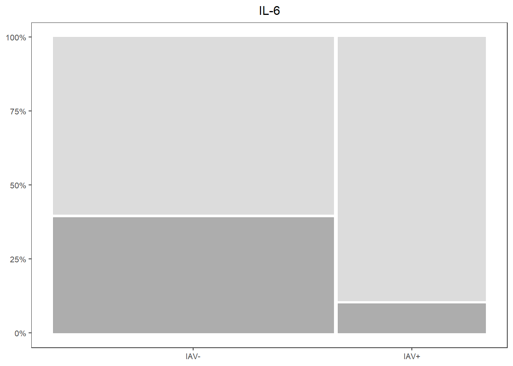
ifng_prop <-
databin %>%
ggplot(data=.) +
geom_mosaic(aes(x=product(IFNg,iav), fill=IFNg)) +
scale_fill_manual(values=c("Present"="gray60", "Absent"="lightgray")) +
scale_y_continuous(labels = scales::percent) +
labs(title="IFNg") +
theme_bw() +
theme(panel.grid.major = element_blank(),
panel.grid.minor = element_blank(),
axis.title.x = element_blank(),
axis.title.y = element_blank(),
legend.position="none",
text = element_text(size=10),
plot.title = element_text(hjust = 0.5))
ifng_prop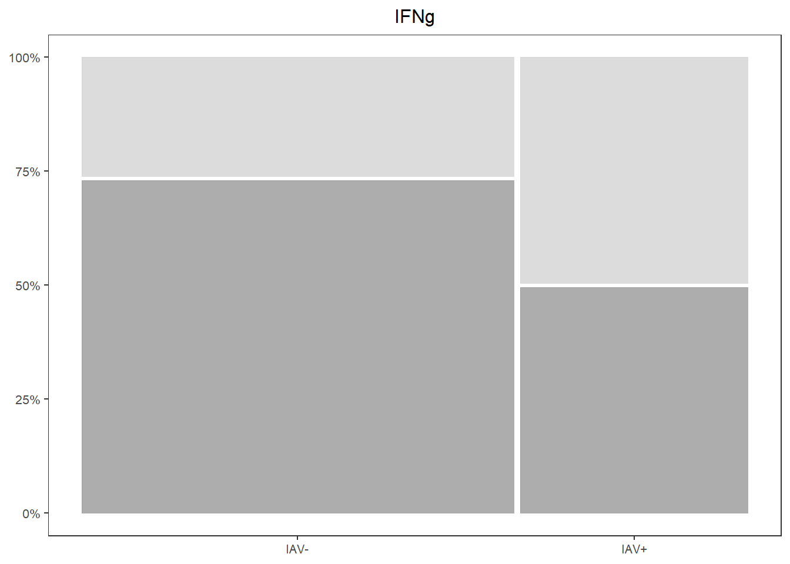
6.4.4.4 Concentrations
kclike <-
data %>%
select(iav, KC.like) %>%
filter(!KC.like==0) %>%
ggplot(., aes(x=iav, y=log(KC.like))) +
geom_boxplot(color="black", fill="gray60", lwd=0.25,
outliers=FALSE) +
geom_point(size=0.75, position=position_jitter(width=0.2)) +
labs(x=NULL, y=NULL) +
stat_n_text(size=3) +
theme_classic() +
theme(text = element_text(size=10),
panel.border=element_rect(color="black", fill=NA, linewidth=0.5))
kclike
il6 <-
data %>%
select(iav, IL.6) %>%
filter(!IL.6 == 0) %>%
ggplot(., aes(x=iav, y=log(IL.6))) +
geom_boxplot(color="black", fill="gray60", lwd=0.25,
outliers=FALSE) +
geom_point(size=0.75, position=position_jitter(width=0.2)) +
labs(x=NULL, y=NULL) +
stat_n_text(size=3) +
theme_classic() +
theme(text = element_text(size=10),
panel.border=element_rect(color="black", fill=NA, linewidth=0.5))
il6ifng <-
data %>%
select(iav, IFNg) %>%
filter(!IFNg == 0) %>%
ggplot(., aes(x=iav, y=log(IFNg))) +
geom_boxplot(color="black", fill="gray60", lwd=0.25,
outliers=FALSE) +
geom_point(size=0.75, position=position_jitter(width=0.2)) +
labs(x=NULL, y=NULL) +
stat_n_text(size=3) +
theme_classic() +
theme(text = element_text(size=10),
panel.border=element_rect(color="black", fill=NA, linewidth=0.5))
ifng 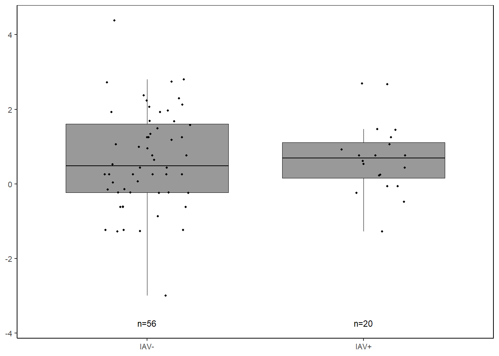
6.4.4.5 Combine together
prop_grid <- grid.arrange(kc_prop, il6_prop, ifng_prop, ncol=3,
left=textGrob("Proportion of Samples",
rot=90, gp=gpar(fontsize=10)))

conc_grid <- grid.arrange(kclike, il6, ifng, ncol=3,
left=textGrob("log(Concentration (pg/mL))",
rot=90, gp=gpar(fontsize=10)))cyto_grid <- grid.arrange(prop_grid, conc_grid,
ncol=1,
heights=c(4,3.5),
bottom=textGrob("IAV Status", gp=gpar(fontsize=10)))jpeg("Figures/cytoimportance.jpeg", width=8, height=8, units="in", res=300)
final_grid <-
grid.arrange(varimp_plot, cyto_grid,
ncol=1, heights=c(2,4))
grid.polygon(x=c(0, 0, 1, 1),
y=c(0, 0.67, 0.67, 0),
gp=gpar(fill=NA))
grid.rect(x=unit(0.5, "npc"), y = unit(0.93, "npc"),
width=unit(0.948, "npc"), height=unit(0.1, "npc"),
gp=gpar(lwd=1.5, col="gray30", fill=NA))
dev.off()## png
## 26.5 How different IAV+ and IAV- groups are
6.5.1 PLSDA
6.5.1.3 Visualizations
# Set x and y axis labels based on model loadings
labelx <-
paste("X-variate 1: ",
round(abs(plsda_model$prop_expl_var$X[1]*100), digits=0),
"% expl. var",
sep="")
labely <-
paste("X-variate 2: ",
round(abs(plsda_model$prop_expl_var$X[2]*100), digits=0),
"% expl. var",
sep="")
# ggplot2
plsda_ggplot <-
data.frame(x = plsda_model$variates$X[,1],
y = plsda_model$variates$X[,2],
iav = plsda_model$Y)
iav_plsda_ggplot <-
ggplot(plsda_ggplot,
aes(x=x,
y=y,
col=iav)) +
geom_point() +
stat_ellipse() +
labs(x=labelx,
y = labely,
name="IAV Status") +
scale_color_manual("IAV Status",
values=c("#9d9d9d","#008ba2")) +
theme_bw() +
theme(panel.grid=element_blank())
iav_plsda_ggplot
6.5.1.4 Cytokine Contributions
plsda_loadings <-
plsda_model$loadings$X %>%
data.frame() %>%
select(1:2) %>%
arrange(comp1)
plsda_loadings## comp1 comp2
## KC.like -0.64174881 -0.37586776
## IL.10 -0.35655618 0.18708319
## IFNg -0.28501794 -0.27688895
## IL.8 -0.23093585 0.58180431
## IL.15 -0.20770066 0.21280828
## IL.2 -0.14118095 0.04675761
## IL.18 -0.08112286 0.38965611
## IL.6 0.10045681 0.42838635
## IL.7 0.49670459 -0.16043433

6.6 Supplemental Figures
6.6.1 Cytokine Presence/Absence


il2_prop <-
databin %>%
ggplot(data=.) +
geom_mosaic(aes(x=product(IL.2,iav), fill=IL.2)) +
scale_fill_manual(values=c("Present"="gray60", "Absent"="lightgray")) +
scale_y_continuous(labels = scales::percent) +
labs(title="IL-2") +
theme_bw() +
theme(panel.grid.major = element_blank(),
panel.grid.minor = element_blank(),
axis.title.x = element_blank(),
axis.title.y = element_blank(),
legend.position="none",
text = element_text(size=10),
plot.title = element_text(hjust = 0.5))
il7_prop <-
databin %>%
ggplot(data=.) +
geom_mosaic(aes(x=product(IL.7,iav), fill=IL.7)) +
scale_fill_manual(values=c("Present"="gray60", "Absent"="lightgray")) +
scale_y_continuous(labels = scales::percent) +
labs(title="IL-7") +
theme_bw() +
theme(panel.grid.major = element_blank(),
panel.grid.minor = element_blank(),
axis.title.x = element_blank(),
axis.title.y = element_blank(),
legend.position="none",
text = element_text(size=10),
plot.title = element_text(hjust = 0.5))
il8_prop <-
databin %>%
ggplot(data=.) +
geom_mosaic(aes(x=product(IL.8,iav), fill=IL.8)) +
scale_fill_manual(values=c("Present"="gray60", "Absent"="lightgray")) +
scale_y_continuous(labels = scales::percent) +
labs(title="IL-8") +
theme_bw() +
theme(panel.grid.major = element_blank(),
panel.grid.minor = element_blank(),
axis.title.x = element_blank(),
axis.title.y = element_blank(),
legend.position="none",
text = element_text(size=10),
plot.title = element_text(hjust = 0.5))
il10_prop <-
databin %>%
ggplot(data=.) +
geom_mosaic(aes(x=product(IL.10,iav), fill=IL.10)) +
scale_fill_manual(values=c("Present"="gray60", "Absent"="lightgray")) +
scale_y_continuous(labels = scales::percent) +
labs(title="IL-10") +
theme_bw() +
theme(panel.grid.major = element_blank(),
panel.grid.minor = element_blank(),
axis.title.x = element_blank(),
axis.title.y = element_blank(),
legend.position="none",
text = element_text(size=10),
plot.title = element_text(hjust = 0.5))
il15_prop <-
databin %>%
ggplot(data=.) +
geom_mosaic(aes(x=product(IL.15,iav), fill=IL.15)) +
scale_fill_manual(values=c("Present"="gray60", "Absent"="lightgray")) +
scale_y_continuous(labels = scales::percent) +
labs(title="IL-15") +
theme_bw() +
theme(panel.grid.major = element_blank(),
panel.grid.minor = element_blank(),
axis.title.x = element_blank(),
axis.title.y = element_blank(),
legend.position="none",
text = element_text(size=10),
plot.title = element_text(hjust = 0.5))
il18_prop <-
databin %>%
ggplot(data=.) +
geom_mosaic(aes(x=product(IL.18,iav), fill=IL.18)) +
scale_fill_manual(values=c("Present"="gray60", "Absent"="lightgray")) +
scale_y_continuous(labels = scales::percent) +
labs(title="IL-18") +
theme_bw() +
theme(panel.grid.major = element_blank(),
panel.grid.minor = element_blank(),
axis.title.x = element_blank(),
axis.title.y = element_blank(),
legend.position="none",
text = element_text(size=10),
plot.title = element_text(hjust = 0.5))
cyto_prop_grid <-
grid.arrange(kc_prop, il6_prop, ifng_prop,
il2_prop, il7_prop, il8_prop,
il10_prop, il15_prop, il18_prop,
left=textGrob("Proportion of Samples", rot=90),
bottom=textGrob("Influenza A Virus Infection Status"))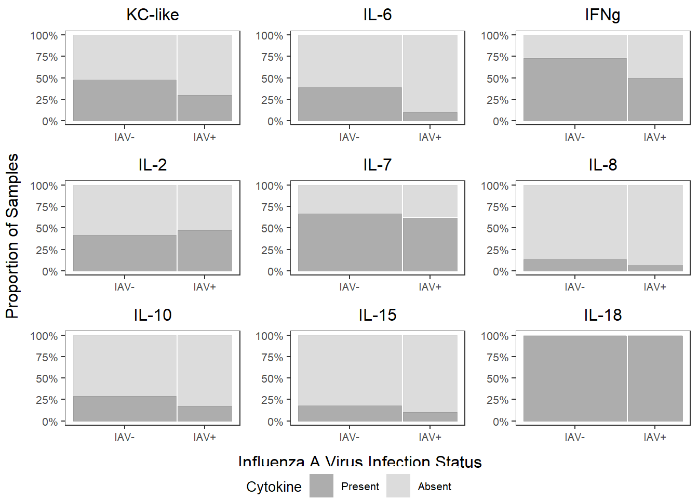
6.6.2 Cytokine Concentration - Log
kclike <-
data %>%
select(iav, KC.like) %>%
filter(!KC.like == 0) %>%
ggplot(., aes(x=iav, y=log(KC.like))) +
geom_boxplot(color="black", fill="gray60", lwd=0.25,
outliers=FALSE) +
geom_point(size=0.75, position=position_jitter(width=0.2)) +
labs(x=NULL, y=NULL, title="KC-like") +
stat_n_text(size=4) +
theme_classic() +
theme(text = element_text(size=10),
panel.border=element_rect(color="black", fill=NA, linewidth=0.5),
plot.title = element_text(hjust=0.5))
il6 <-
data %>%
select(iav, IL.6) %>%
filter(!IL.6 == 0) %>%
ggplot(., aes(x=iav, y=log(IL.6))) +
geom_boxplot(color="black", fill="gray60", lwd=0.25,
outliers=FALSE) +
geom_point(size=0.75, position=position_jitter(width=0.2)) +
labs(x=NULL, y=NULL, title="IL-6") +
stat_n_text(size=4) +
theme_classic() +
theme(text = element_text(size=10),
panel.border=element_rect(color="black", fill=NA, linewidth=0.5),
plot.title = element_text(hjust=0.5))
ifng <-
data %>%
select(iav, IFNg) %>%
filter(!IFNg == 0) %>%
ggplot(., aes(x=iav, y=log(IFNg))) +
geom_boxplot(color="black", fill="gray60", lwd=0.25,
outliers=FALSE) +
geom_point(size=0.75, position=position_jitter(width=0.2)) +
labs(x=NULL, y=NULL, title="IFNg") +
stat_n_text(size=4) +
theme_classic() +
theme(text = element_text(size=10),
panel.border=element_rect(color="black", fill=NA, linewidth=0.5),
plot.title = element_text(hjust=0.5))
il2 <-
data %>%
select(iav, IL.2) %>%
filter(!IL.2 == 0) %>%
ggplot(., aes(x=iav, y=log(IL.2))) +
geom_boxplot(color="black", fill="gray60", lwd=0.25,
outliers=FALSE) +
geom_point(size=0.75, position=position_jitter(width=0.2)) +
labs(x=NULL, y=NULL, title="IL-2") +
stat_n_text(size=4) +
theme_classic() +
theme(text = element_text(size=10),
panel.border=element_rect(color="black", fill=NA, linewidth=0.5),
plot.title = element_text(hjust=0.5))
il7 <-
data %>%
select(iav, IL.7) %>%
filter(!IL.7 == 0) %>%
ggplot(., aes(x=iav, y=log(IL.7))) +
geom_boxplot(color="black", fill="gray60", lwd=0.25,
outliers=FALSE) +
geom_point(size=0.75, position=position_jitter(width=0.2)) +
labs(x=NULL, y=NULL, title="IL-7") +
stat_n_text(size=4) +
theme_classic() +
theme(text = element_text(size=10),
panel.border=element_rect(color="black", fill=NA, linewidth=0.5),
plot.title = element_text(hjust=0.5))
il8 <-
data %>%
select(iav, IL.8) %>%
filter(!IL.8 == 0) %>%
ggplot(., aes(x=iav, y=log(IL.8))) +
geom_boxplot(color="black", fill="gray60", lwd=0.25,
outliers=FALSE) +
geom_point(size=0.75, position=position_jitter(width=0.2)) +
labs(x=NULL, y=NULL, title="IL-8") +
stat_n_text(size=4) +
theme_classic() +
theme(text = element_text(size=10),
panel.border=element_rect(color="black", fill=NA, linewidth=0.5),
plot.title = element_text(hjust=0.5))
il10 <-
data %>%
select(iav, IL.10) %>%
filter(!IL.10 == 0) %>%
ggplot(., aes(x=iav, y=log(IL.10))) +
geom_boxplot(color="black", fill="gray60", lwd=0.25,
outliers=FALSE) +
geom_point(size=0.75, position=position_jitter(width=0.2)) +
labs(x=NULL, y=NULL, title="IL-10") +
stat_n_text(size=4) +
theme_classic() +
theme(text = element_text(size=10),
panel.border=element_rect(color="black", fill=NA, linewidth=0.5),
plot.title = element_text(hjust=0.5))
il15 <-
data %>%
select(iav, IL.15) %>%
filter(!IL.15 == 0) %>%
ggplot(., aes(x=iav, y=log(IL.15))) +
geom_boxplot(color="black", fill="gray60", lwd=0.25,
outliers=FALSE) +
geom_point(size=0.75, position=position_jitter(width=0.2)) +
labs(x=NULL, y=NULL, title="IL-15") +
stat_n_text(size=4) +
theme_classic() +
theme(text = element_text(size=10),
panel.border=element_rect(color="black", fill=NA, linewidth=0.5),
plot.title = element_text(hjust=0.5))
il18 <-
data %>%
select(iav, IL.18) %>%
filter(!IL.18==0) %>%
ggplot(., aes(x=iav, y=log(IL.18))) +
geom_boxplot(color="black", fill="gray60", lwd=0.25,
outlier.size=0.75) +
geom_point(size=0.75, position=position_jitter(width=0.2)) +
labs(x=NULL, y=NULL, title="IL-18") +
stat_n_text(size=4) +
theme_classic() +
theme(text=element_text(size=10),
panel.border=element_rect(color="black", fill=NA, linewidth=0.5),
plot.title = element_text(hjust=0.5))
cyto_conc_grid <-
grid.arrange(kclike, il6, ifng,
il2, il7, il8,
il10, il15, il18,
ncol=3,
left=textGrob("log(Cytokine Concentration (pg/mL))", rot=90),
bottom=textGrob("Influenza A Virus Infection Status"))
6.7 Presentation Figures
6.7.1 Cytokine Presence/Absence
kc_prop_pres <-
kc_prop +
theme(legend.position="bottom",
text=element_text(size=15))
cyto_pres_leg <-
get_legend(kc_prop_pres)
kc_prop_pres <-
kc_prop_pres +
theme(legend.position="none")
kc_prop_pres


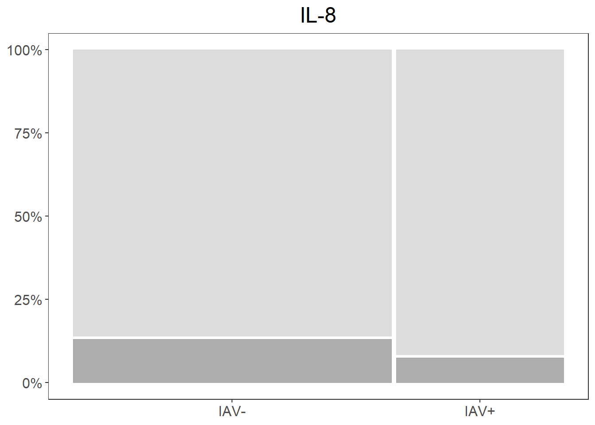


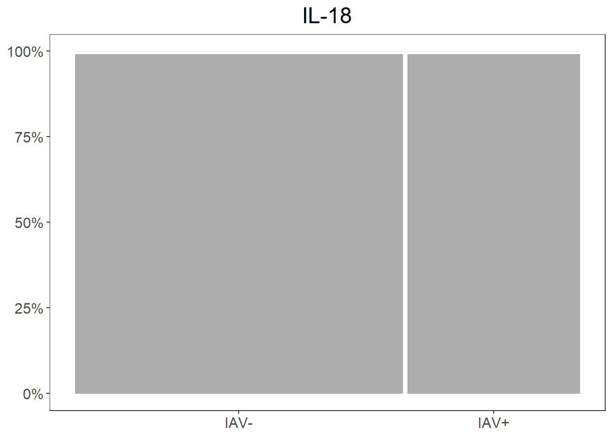
cyto_prop_pres_grid <-
grid.arrange(kc_prop_pres, il6_prop_pres, ifng_prop_pres,
il2_prop_pres, il7_prop_pres, il8_prop_pres,
il10_prop_pres, il15_prop_pres, il18_prop_pres,
left=textGrob("Proportion of Samples", rot=90),
bottom=textGrob("Influenza A Virus Infection Status"))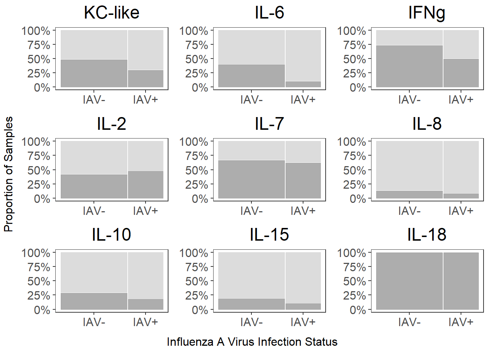
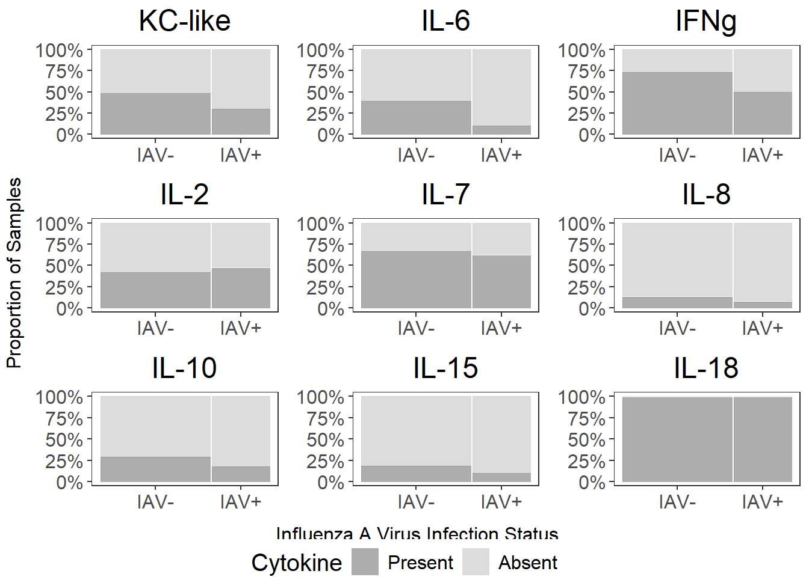
6.7.2 Cytokine Concentration


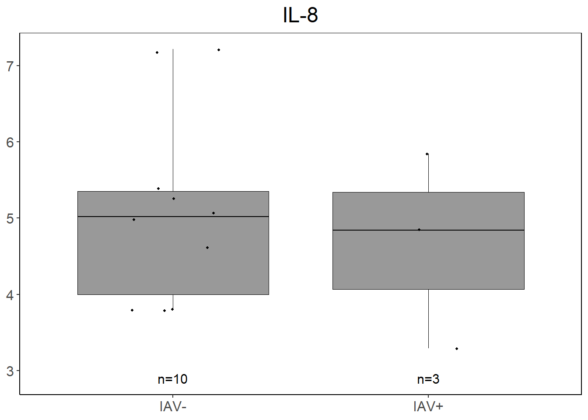
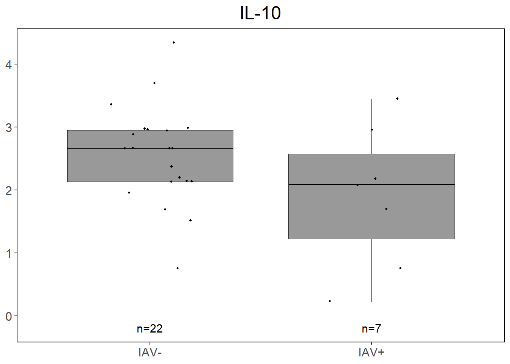
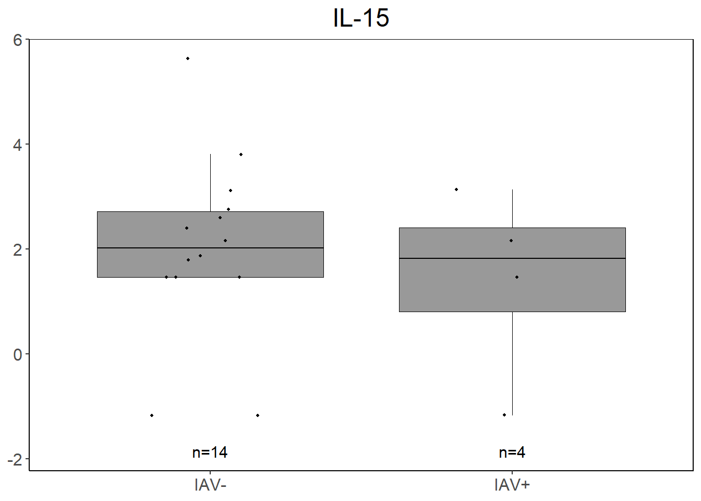

cyto_conc_pres_grid <-
grid.arrange(kclike_pres, il6_pres, ifng_pres,
il2_pres, il7_pres, il8_pres,
il10_pres, il15_pres, il18_pres,
ncol=3,
left=textGrob("log(Cytokine Concentration (pg/mL))", rot=90),
bottom=textGrob("Influenza A Virus Infection Status"))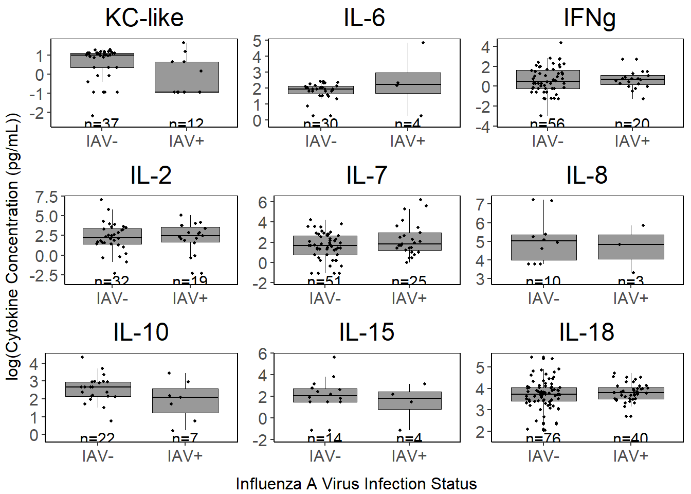